Fizika — Harmonijske oscilacije i mehanički talasi (I deo)
Šesto predavanje. Osveži stranicu (tipka F5) svaki put kad dodam novi slajd.
Slajd 1 — Naslovna strana
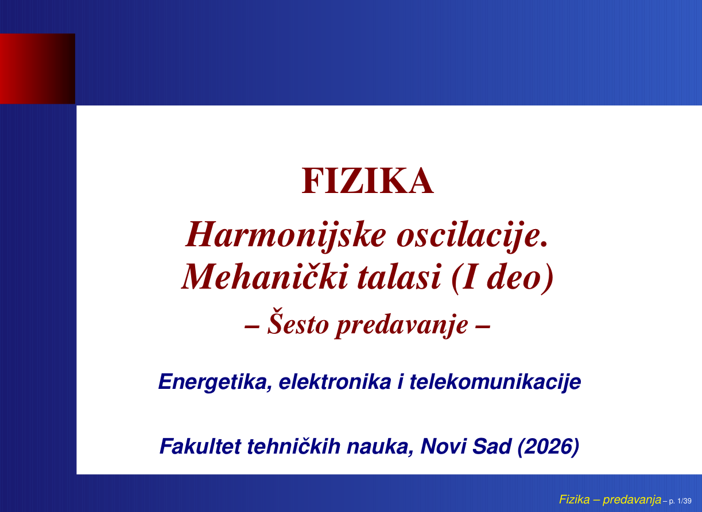
Uvodni slajd. Tema predavanja:
- Harmonijske oscilacije — kretanje koje se ponavlja (klatno, opruga, titranje gore-dole). „Harmonijsko" znači da se opisuje preko sinusa i kosinusa.
- Mehanički talasi — kada se titranje prenosi kroz sredinu (talas na vodi, zvuk kroz vazduh, talas duž žice). Talas = oscilacija koja putuje.
Slajd 2 — Uvod
1. Periodično kretanje
Kretanje koje se ponavlja u jednakim vremenskim razmacima. Primeri: planete oko Sunca, kazaljke na satu, klip u motoru, otkucaji srca.
Period $T$ = vremenski interval posle kojeg se kretanje ponovi (meri se u sekundama). Npr. ako srce kucne svake sekunde, $T = 1\,\text{s}$.
2. Oscilatorno kretanje
Poseban slučaj periodičnog kretanja — vrši se po istoj putanji uz promenu smera (tamo-amo). Klatno levo-desno jeste oscilatorno; planeta oko Sunca jeste periodična, ali NIJE oscilatorna.
3. Podela oscilacija
- Slobodne — sistem osciluje sam, jednom ga pokreneš pa pustiš:
- harmonijske — idealne, bez gubitka energije (nikad ne stanu)
- prigušene — amplituda opada zbog trenja/otpora, kretanje se gasi
- Prinudne — spoljašnja sila stalno „gura" sistem da osciluje
💡 Svako oscilatorno kretanje je periodično, ali nije svako periodično kretanje oscilatorno.
Slajd 3 — Oscilatorno kretanje (opruga sa tegom)

Klasičan oscilator: opruga okačena za plafon, na njoj teg mase $m$. Oznaka $k$ je konstanta opruge (krutost). U sredini je ravnotežni položaj. Ako povučeš teg i pustiš, titra gore-dole između $+x_0$ i $-x_0$.
Čim teg napusti ravnotežu, javlja se povratna (restituciona) sila koja ga vraća nazad:
$$ F = -\tilde{k}\,x \qquad (6.1) $$
| Oznaka | Značenje |
|---|
| $F$ | povratna sila |
| $x$ | elongacija — trenutno rastojanje tega od ravnotežnog položaja |
| $\tilde{k}$ | konstanta (vezana za krutost opruge) |
| znak $-$ | sila je uvek suprotnog smera od pomeranja |
Zašto znak minus? To je srce priče:
- Pomeriš teg nadole ($x > 0$) → sila gura nagore (nazad ka sredini).
- Pomeriš teg nagore ($x < 0$) → sila gura nadole (opet ka sredini).
Sila
uvek vuče teg nazad ka ravnoteži — zato i nastaje oscilovanje.
🎯 Analogija: kao da te gumica uvek vuče ka centru — što se više udaljiš, to te jače vuče nazad.
Slajd 4 — Harmonijske oscilacije (prvi korak izvođenja)
Razlika harmonijsko ↔ prigušeno
- Harmonijsko: nema gubitaka energije → teg titra zauvek između dve amplitude (idealan slučaj).
- Prigušeno: energija se gubi (trenje, otpor vazduha, viskoznost) → amplituda opada, kretanje se gasi.
U nastavku se gleda samo harmonijsko oscilovanje.
Matematika: odakle dolazi jednačina?
Polazi se od II Njutnovog zakona i ubacuje povratna sila $F=-\tilde{k}x$. Korak po korak:
💡 Dobili smo jednačinu koja povezuje brzinu $v$ i položaj $x$. Logika: Njutnov zakon → ubacimo silu opruge → presložimo → jednačina koja vezuje brzinu i položaj. Na sledećem slajdu se ovo integrali.
Slajd 5 — Harmonijske oscilacije (zakon održanja energije)
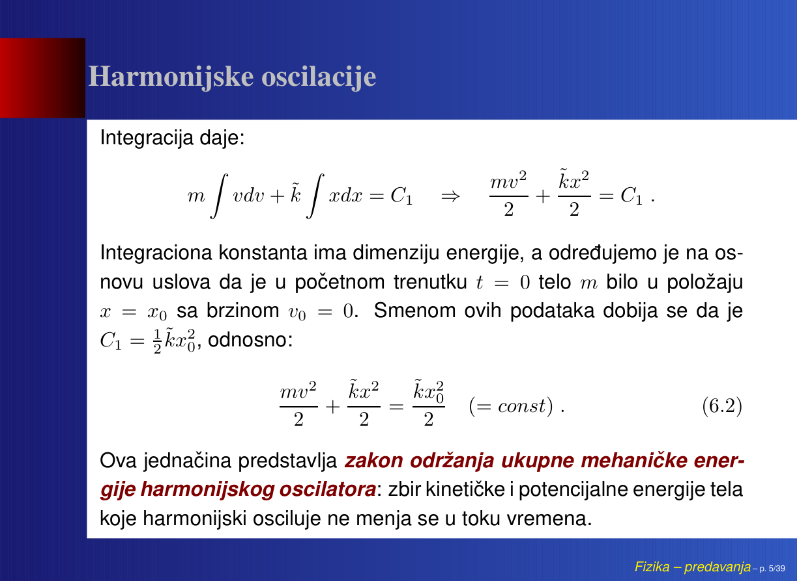
Nastavak sa prošlog slajda. Jednačinu $m\,v\,dv + \tilde{k}x\,dx = 0$ sada integralimo (sabiramo male delove) i dobijamo:
$$ m \int v\,dv + \tilde{k}\int x\,dx = C_1 \quad\Rightarrow\quad \frac{mv^2}{2} + \frac{\tilde{k}x^2}{2} = C_1 $$
$C_1$ je integraciona konstanta i ima dimenziju energije. Određujemo je iz početnih uslova: u trenutku $t=0$ teg je bio u krajnjem položaju $x = x_0$ i mirovao je, tj. $v_0 = 0$.
Kad to ubacimo (brzina = 0, položaj = $x_0$): $\;\dfrac{m\cdot 0}{2} + \dfrac{\tilde{k}x_0^2}{2} = C_1$, pa je:
$$ C_1 = \tfrac{1}{2}\tilde{k}x_0^2 $$
Zamenom dobijamo konačan oblik:
$$ \frac{mv^2}{2} + \frac{\tilde{k}x^2}{2} = \frac{\tilde{k}x_0^2}{2} \quad (=\text{const}) \qquad (6.2) $$
| Član | Šta je to |
|---|
| $\dfrac{mv^2}{2}$ | kinetička energija — energija kretanja (zavisi od brzine $v$) |
| $\dfrac{\tilde{k}x^2}{2}$ | potencijalna energija — energija položaja / „nakupljena" u oprugi (zavisi od $x$) |
| $\dfrac{\tilde{k}x_0^2}{2}$ | ukupna energija — konstantna; jednaka maksimalnoj potencijalnoj (u krajnjem položaju $x_0$) |
💡 Ovo je zakon održanja ukupne mehaničke energije: zbir kinetičke i potencijalne energije je uvek isti tokom celog oscilovanja. Energija samo „prelazi" iz jednog oblika u drugi.
🎯 Analogija (ljuljaška): u najnižoj tački ljuljaška ide najbrže → sva energija je kinetička (brzina max, $x=0$). U najvišoj tački na tren stane → sva energija je potencijalna ($v=0$, $x=x_0$). Zbir je stalno isti — energija se samo preliva napred-nazad.
Slajd 6 — Izvođenje jednačine kretanja
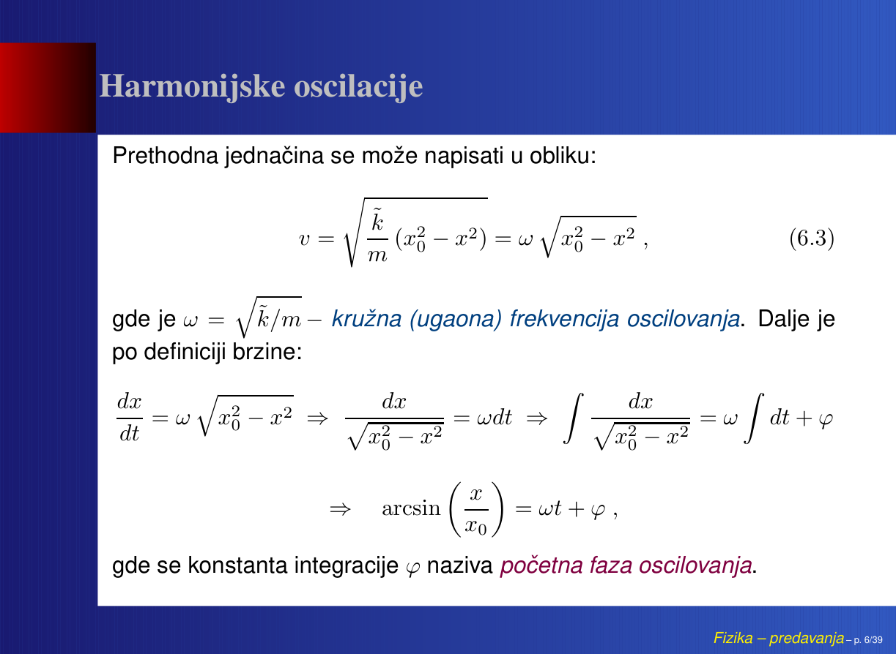
Iz prethodne energetske jednačine (6.2) izrazimo brzinu $v$:
$$ v = \sqrt{\frac{\tilde{k}}{m}\left(x_0^2 - x^2\right)} = \omega\sqrt{x_0^2 - x^2} \qquad (6.3) $$
Ovde uvodimo jako važnu oznaku:
$$ \omega = \sqrt{\frac{\tilde{k}}{m}} \quad - \text{ kružna (ugaona) frekvencija oscilovanja} $$
$\omega$ (omega) govori koliko brzo sistem osciluje — veća krutost $\tilde{k}$ ili manja masa $m$ → brže titranje.
Dalje integralimo (po definiciji brzine $v=\frac{dx}{dt}$)
Konstanta integracije $\varphi$ (fi) se zove početna faza oscilovanja — govori odakle je titranje krenulo u trenutku $t=0$.
💡 Skoro smo stigli do cilja! Imamo $\arcsin\!\left(\frac{x}{x_0}\right) = \omega t + \varphi$. Na sledećem slajdu samo „oslobodimo" $x$ (primenimo sinus na obe strane) i dobijamo čuvenu jednačinu harmonijskog oscilovanja $x = x_0\sin(\omega t + \varphi)$.
Slajd 7 — Jednačina kretanja harmonijskog oscilatora
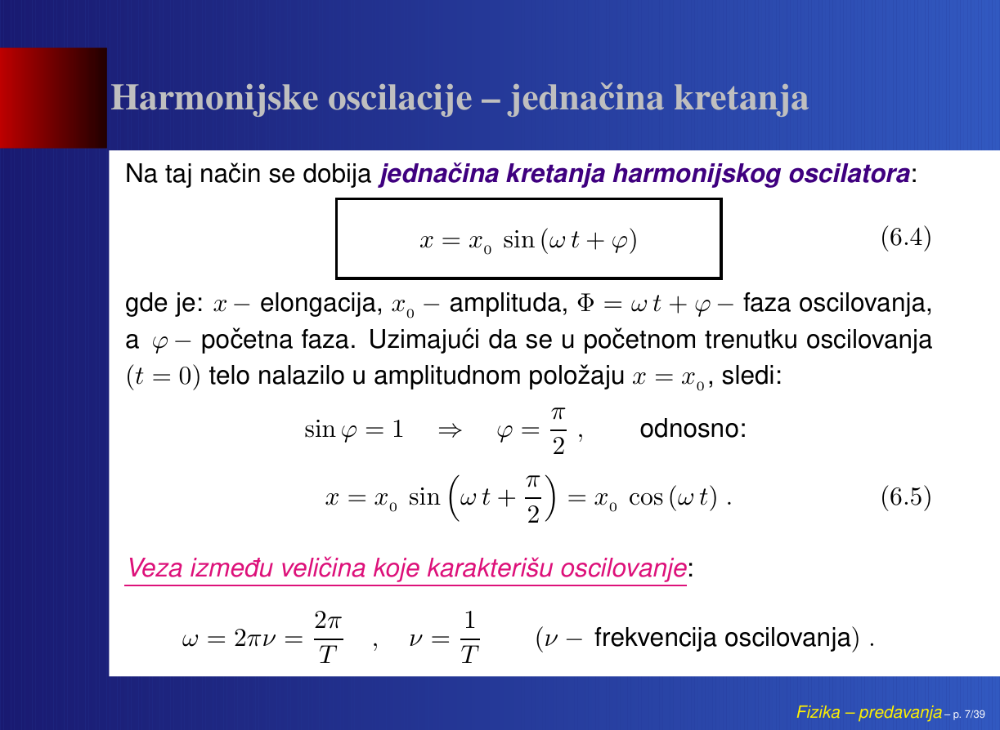
Primenom sinusa na obe strane prošle jednačine dobijamo glavnu jednačinu harmonijskog oscilatora:
$$ \boxed{\,x = x_0\,\sin(\omega t + \varphi)\,} \qquad (6.4) $$
| Oznaka | Naziv | Značenje |
|---|
| $x$ | elongacija | trenutni položaj (udaljenost od sredine) |
| $x_0$ | amplituda | najveće moguće odstupanje (zamah) |
| $\Phi = \omega t + \varphi$ | faza | „u kojoj je tački ciklusa" u trenutku $t$ |
| $\varphi$ | početna faza | gde je krenulo u $t=0$ |
Poseban slučaj: kreće iz amplitudnog položaja
Ako u početku ($t=0$) telo jeste u krajnjem položaju $x=x_0$, onda mora biti $\sin\varphi = 1$, pa je $\varphi = \frac{\pi}{2}$. Tada:
$$ x = x_0\sin\!\left(\omega t + \tfrac{\pi}{2}\right) = x_0\cos(\omega t) \qquad (6.5) $$
(Jer je $\sin(\alpha+\tfrac{\pi}{2}) = \cos\alpha$ — sinus i kosinus su ista kriva, samo pomerena.)
Veze između veličina koje opisuju oscilovanje
$$ \omega = 2\pi\nu = \frac{2\pi}{T} \qquad,\qquad \nu = \frac{1}{T} $$
| Veličina | Naziv | Jedinica |
|---|
| $T$ | period (trajanje jedne oscilacije) | sekunda (s) |
| $\nu$ (ni) | frekvencija (broj oscilacija u sekundi) | herc (Hz) |
| $\omega$ | kružna frekvencija | rad/s |
💡 Ključ: $\nu = \frac{1}{T}$ znači — ako jedna oscilacija traje $T=0{,}5\,$s, onda ih ima $\nu = 2$ u sekundi (2 Hz). A $\omega$ je samo ta frekvencija pomnožena sa $2\pi$ (jer je jedan pun ciklus $= 2\pi$ radijana).
Slajd 8 — Brzina, ubrzanje i energija
Imamo položaj $x = x_0\sin(\omega t+\varphi)$. Sad iz njega dobijamo brzinu i ubrzanje izvodom po vremenu (izvod = „koliko se nešto menja u vremenu").
Brzina (6.6) — izvod položaja
$$ v = \frac{dx}{dt} = \frac{d}{dt}\big[x_0\sin(\omega t+\varphi)\big] = \omega x_0\cos(\omega t+\varphi) $$
Maksimalna brzina je $v_{max} = \omega x_0$ (kad je $\cos = 1$, tj. kad teg prolazi kroz sredinu).
Ubrzanje (6.7) — izvod brzine
$$ a = \frac{dv}{dt} = \frac{d}{dt}\big[\omega x_0\cos(\omega t+\varphi)\big] = -\omega^2 x_0\sin(\omega t+\varphi) = -\omega^2 x $$
💡 Najvažniji rezultat: $\;a = -\omega^2 x\;$ — ubrzanje je uvek suprotno položaju (znak $-$) i srazmerno udaljenosti od sredine. To je matematički „potpis" svakog harmonijskog oscilovanja: što dalje od sredine, to jače ubrzanje nazad.
Energije
Kinetička (energija kretanja) (6.8):
$$ E_k = \tfrac{1}{2}mv^2 = \tfrac{1}{2}m\omega^2\left(x_0^2 - x^2\right) $$
Potencijalna (energija položaja) (6.9):
$$ E_p = -\int_0^x F\,dx = \tilde{k}\int_0^x x\,dx = \tfrac{1}{2}\tilde{k}x^2 = \tfrac{1}{2}m\omega^2 x^2 $$
Ukupna (zbir) (6.10):
$$ E_u = E_k + E_p = \tfrac{1}{2}m\omega^2 x_0^2 = \text{const} $$
🎯 Primeti: $E_k$ je najveća u sredini ($x=0$), $E_p$ je najveća na kraju ($x=x_0$), ali zbir je uvek isti — opet zakon održanja energije, sad izražen preko $\omega$.
Slajd 9 — Kinetička i potencijalna energija (grafik)

Ovaj slajd je slika onoga o čemu smo pričali — kako se energija preliva tokom oscilovanja. Na grafiku:
- vodoravna osa = položaj $x$ (od $-A$ preko sredine $0$ do $+A$; $A$ je amplituda)
- uspravna osa = energija $E$
- kriva (parabola) $= E_p$ — potencijalna energija; oblik $\tfrac12 k x^2$ (parabola jer ide $x^2$)
- razmak od krive do vrha (isprekidana linija) $= E_k$ — kinetička energija
| Položaj | $E_p$ (položaj) | $E_k$ (kretanje) | Šta se dešava |
|---|
| krajevi ($\pm A$) | MAX | 0 | teg miruje ($v=0$), sva energija uskladištena |
| sredina ($x=0$) | 0 | MAX | teg juri najbrže, sila $F=-\tilde k x=0$ |
💡 Visina cele „kutije" (od dna do isprekidane gornje linije) je uvek ista = ukupna energija. Kriva samo deli tu visinu na $E_p$ (ispod) i $E_k$ (iznad). Kako se krećeš levo-desno, podela se menja, ali zbir ostaje isti.
🎯 Na krajevima ($\pm A$): cela kutija je $E_p$ (parabola dodiruje vrh). U sredini: cela kutija je $E_k$ (parabola pala na nulu). Energija se „preliva" iz jednog u drugi oblik — tačno kao kod ljuljaške.
Slajd 10 — Primer (postavka zadatka)
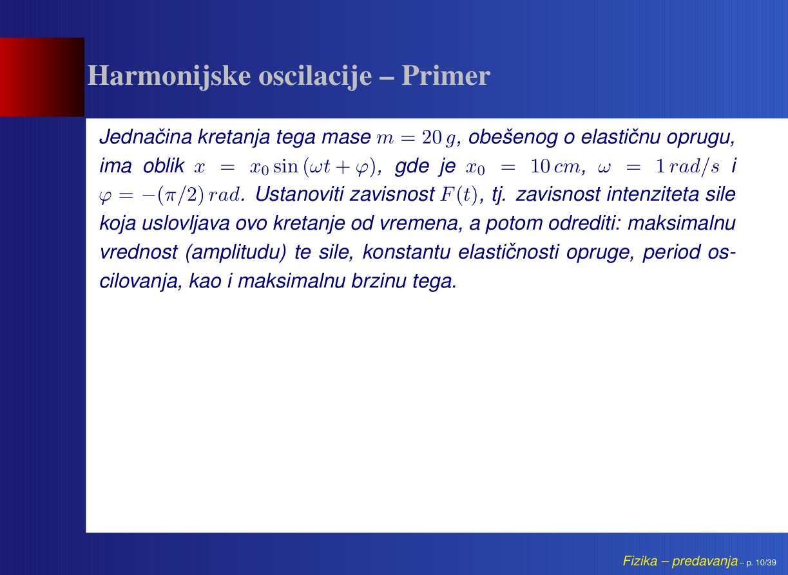
Zadatak koji primenjuje sve naučeno. Ovaj slajd samo postavlja problem; rešenje sledi.
Dato
| Oznaka | Vrednost | Značenje |
|---|
| $m$ | $20\,\text{g} = 0{,}02\,\text{kg}$ | masa tega |
| $x_0$ | $10\,\text{cm} = 0{,}1\,\text{m}$ | amplituda |
| $\omega$ | $1\,\text{rad/s}$ | kružna frekvencija |
| $\varphi$ | $-\tfrac{\pi}{2}\,\text{rad}$ | početna faza |
⚠️ Uvek prevedi u osnovne jedinice (kg, m, s) pre računa!
Traži se
- $F(t)$ — zavisnost sile od vremena
- $F_{max}$ — maksimalna (amplitudna) vrednost sile
- $\tilde k$ — konstanta elastičnosti opruge
- $T$ — period oscilovanja
- $v_{max}$ — maksimalna brzina tega
💡 Sve formule koje će trebati već imamo: $F=ma$, $a=-\omega^2 x$, $\tilde k = m\omega^2$, $T=\frac{2\pi}{\omega}$, $v_{max}=\omega x_0$.
Slajd 11 — Rešenje: sila F(t) i njena amplituda F₀
Gore je ponovljena postavka, a dole počinje rešavanje. Nalazimo silu preko II Njutnovog zakona ($F=ma$), gde je ubrzanje $a$ drugi izvod položaja:
$$ F(t) = m\,a(t) = m\frac{d^2x}{dt^2} = -m\omega^2 x_0\sin\!\left(\omega t - \tfrac{\pi}{2}\right) \equiv -F_0\sin\!\left(\omega t - \tfrac{\pi}{2}\right) $$
Šta se desilo:
- $\frac{d^2x}{dt^2}$ znači „izvod dva puta" (položaj → brzina → ubrzanje). Setiš se sa slajda 8: dva izvoda sinusa daju $-\omega^2\sin$.
- $\varphi=-\frac{\pi}{2}$ je ubačeno → otud $\sin(\omega t-\frac{\pi}{2})$.
- $F_0 = m\omega^2 x_0$ je amplituda sile (najveća vrednost). Oznaka $\equiv$ samo znači „uvodimo skraćenicu $F_0$".
Računamo F₀ (uvrstimo brojeve)
$$ F_0 = m\omega^2 x_0 = 20\cdot10^{-3}\,\text{kg}\cdot\left(1\,\tfrac{\text{rad}}{\text{s}}\right)^2\cdot 0{,}1\,\text{m} = 2\,\text{mN} $$
Tj. $20\cdot10^{-3} \times 1 \times 0{,}1 = 2\cdot10^{-3}\,\text{N} = 2\,\text{mN}$ (milinjutna).
💡 Rešili smo prve dve tražene stavke: F(t) (formula sile) i F₀ = F_max = 2 mN (njena amplituda). Ostaje još $\tilde k$, $T$ i $v_{max}$.
Slajd 12 — Rešenje: k, period T i v_max

Nastavak zadatka — preostale tri stavke.
Konstanta elastičnosti opruge $\tilde k$
Iz $F_0 = \tilde k\, x_0$ sledi $\tilde k = \dfrac{F_0}{x_0}$:
$$ \tilde k = \frac{F_0}{x_0} = \frac{2\cdot10^{-3}\,\text{N}}{0{,}1\,\text{m}} = 0{,}02\,\tfrac{\text{N}}{\text{m}} $$
Period oscilovanja $T$
Iz $\omega = \dfrac{2\pi}{T}$ sledi $T = \dfrac{2\pi}{\omega}$:
$$ T = \frac{2\pi}{\omega} = \frac{2\cdot 3{,}14\,\text{rad}}{1\,\tfrac{\text{rad}}{\text{s}}} = 6{,}28\,\text{s} $$
(Jedna oscilacija traje 6,28 s — logično, jer je $\omega$ baš mala.)
Maksimalna brzina $v_{max}$
Brzina je izvod položaja: $v = \dfrac{dx}{dt} = x_0\omega\cos(\omega t+\varphi)$. Najveća je kad je $\cos=1$:
$$ v_{max} = x_0\,\omega = 0{,}1\,\text{m}\cdot 1\,\tfrac{\text{rad}}{\text{s}} = 0{,}1\,\tfrac{\text{m}}{\text{s}} = 10\,\tfrac{\text{cm}}{\text{s}} $$
✅ Ceo zadatak rešen! Rezime: $F_0 = 2\,\text{mN}$, $\tilde k = 0{,}02\,\text{N/m}$, $T = 6{,}28\,\text{s}$, $v_{max} = 10\,\text{cm/s}$.
Slajd 13 — Oscilatorno (LC) kolo
Oscilacije ne postoje samo u mehanici! Javljaju se i u električnim sistemima. Najjednostavniji je LC kolo — strujno kolo sa dva elementa:
- C — kondenzator: skladišti naelektrisanje ($q$) i električnu energiju (kao rastegnuta opruga)
- L — kalem (zavojnica): opire se promeni struje (kao masa/inercija u mehanici)
Kad uključiš kolo, kondenzator se prazni kroz kalem, pa se puni u suprotnom smeru, pa opet — struja osciluje napred-nazad, baš kao teg na opruzi.
Jednačina kola (II Kirhofovo pravilo)
Zbir napona u kolu mora biti nula. Dva napona:
| Element | Napon | Značenje |
|---|
| kondenzator C | $U = \dfrac{q}{C}$ | napon zavisi od nakupljenog naelektrisanja $q$ |
| kalem L | $\mathcal{E} = -L\dfrac{dI}{dt}$ | indukovana elektromotorna sila — opire se promeni struje $I$ |
$$ -L\frac{dI}{dt} = \frac{q}{C} \quad\Rightarrow\quad L\frac{dI}{dt} + \frac{q}{C} = 0 $$
💡 Pogledaj oblik: $L\frac{dI}{dt} + \frac{q}{C} = 0$ — identičan mehaničkoj jednačini $m\frac{dv}{dt} + \tilde k x = 0$ sa slajda 4! Samo druga slova. Zato i LC kolo osciluje. To je električni blizanac opruge sa tegom.
Slajd 14 — LC kolo: zakon održanja energije
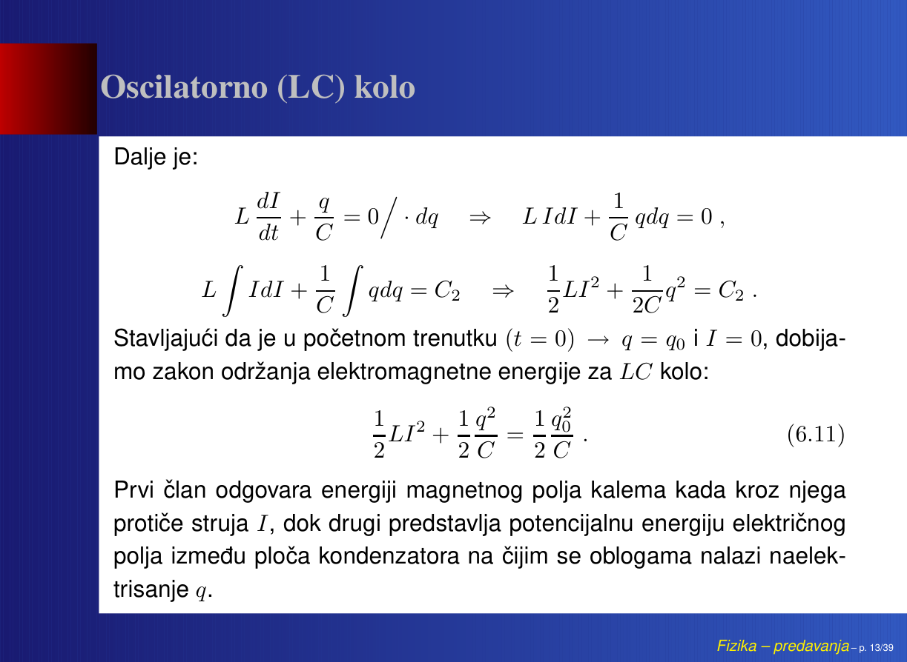
Isti postupak kao kod opruge: jednačinu kola pomnožimo sa $dq$ i integralimo.
$$ L\frac{dI}{dt} + \frac{q}{C} = 0 \;\Big/\cdot dq \;\Rightarrow\; LI\,dI + \frac{1}{C}q\,dq = 0 \;\Rightarrow\; \tfrac12 LI^2 + \tfrac{1}{2C}q^2 = C_2 $$
Iz početnih uslova ($t=0$: $q=q_0$, $I=0$) dobijamo zakon održanja elektromagnetne energije:
$$ \tfrac12 LI^2 + \tfrac12\frac{q^2}{C} = \tfrac12\frac{q_0^2}{C} \qquad (6.11) $$
| Član | Šta je | Mehanički blizanac |
|---|
| $\tfrac12 LI^2$ | energija magnetnog polja kalema (struja $I$) | kinetička $\tfrac12 mv^2$ |
| $\tfrac12\frac{q^2}{C}$ | energija el. polja kondenzatora (naelektrisanje $q$) | potencijalna $\tfrac12 kx^2$ |
💡 Energija se preliva između kalema i kondenzatora, baš kao kinetička↔potencijalna kod opruge. Zbir je konstantan.
Slajd 15 — LC kolo: jednačina oscilovanja
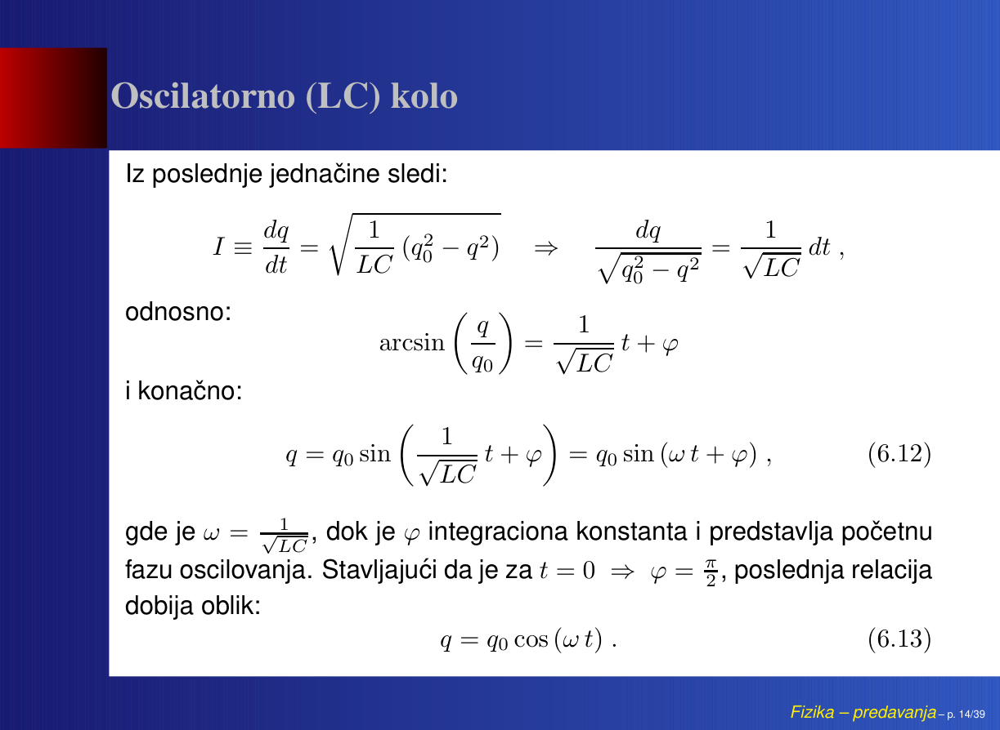
Daljom integracijom (kao na slajdu 6) dobijamo kako naelektrisanje $q$ titra u vremenu:
$$ q = q_0\sin\!\left(\frac{1}{\sqrt{LC}}\,t + \varphi\right) = q_0\sin(\omega t + \varphi) \qquad (6.12) $$
gde je kružna frekvencija LC kola:
$$ \omega = \frac{1}{\sqrt{LC}} $$
Ako kreće iz maksimuma ($\varphi=\tfrac{\pi}{2}$):
$$ q = q_0\cos(\omega t) \qquad (6.13) $$
💡 Naelektrisanje u kolu osciluje po istom sinusnom/kosinusnom zakonu kao položaj tega. Električne i mehaničke oscilacije = ista matematika.
Slajd 16 — Naslov nove celine
Razdvojni slajd: završili smo oscilacije, počinju MEHANIČKI TALASI (I deo). Talas = oscilacija koja putuje kroz sredinu.
Slajd 17 — Kako nastaje talas (animacija po fazama)

Niz kuglica (atoma) povezanih oprugicama. Pet redova = pet trenutaka u vremenu: $0,\;\tfrac{T}{4},\;\tfrac{T}{2},\;\tfrac{3T}{4},\;T$.
- a) početak — sve kuglice u ravnoteži, razmak $r_0$, $\mu$ je masa po jedinici dužine
- kad prvu kuglicu pomeriš, ona vuče susednu, ta sledeću... poremećaj putuje udesno
- $\Psi$ (psi) = pomeraj kuglice; $\Psi_0$ = amplituda
- e) kad prva kuglica napravi jednu punu oscilaciju (T), talas je prešao tačno jednu talasnu dužinu $\lambda$ (razmak $\ell_4=\lambda$)
💡 Ključna slika cele teme: kuglice se samo klate u mestu (gore-dole), ali oblik talasa putuje. Niko ne „leti" udesno — putuje samo poremećaj.
Slajd 18 — Transverzalni vs. longitudinalni
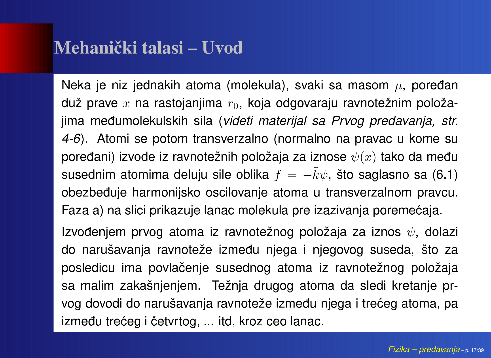
Niz jednakih atoma mase $\mu$ na rastojanjima $r_0$, povezanih međumolekulskim silama (kao oprugicama).
- Ako atome pomeriš poprečno (normalno na niz) → nastaje transverzalni talas
- Ako ih pomeriš uzduž niza (pravac $X$) → nastaje longitudinalni talas
Među susednim atomima deluje sila $f=-\tilde k\psi$ (Hukov zakon!) — zato osciluju harmonijski, baš kao opruga.
💡 Pomeranje jednog atoma „kasni" za susedom — to kašnjenje, preneseno duž celog lanca, i jeste talas.
Slajd 19 — Talasna dužina λ
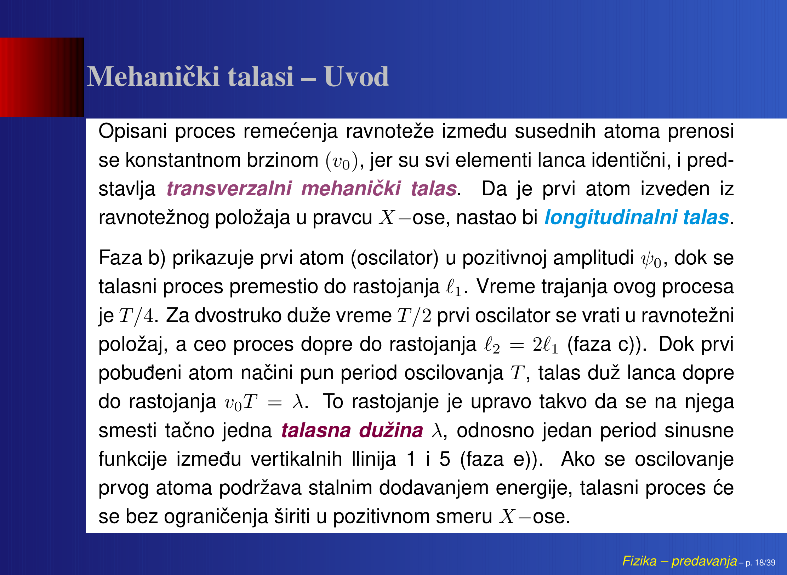
Poremećaj se prenosi stalnom brzinom $v_0$ (svi atomi su isti). To je transverzalni mehanički talas.
Veza vremena i pređenog puta talasa:
| Vreme | Talas prešao |
|---|
| $T/4$ | $\ell_1$ |
| $T/2$ | $\ell_2 = 2\ell_1$ |
| $T$ (pun period) | $v_0 T = \lambda$ (talasna dužina) |
💡 Talasna dužina $\lambda$ = rastojanje koje talas pređe za jedan period $T$. To je „dužina jednog punog talasa" u prostoru (od grebena do grebena).
Slajd 20 — Talasna funkcija ψ(x,t)
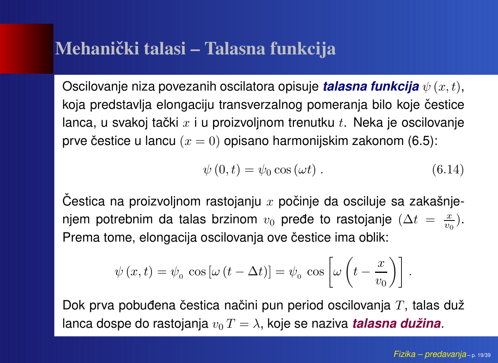
Talasna funkcija $\psi(x,t)$ kaže koliki je pomeraj bilo koje čestice, na bilo kom mestu $x$, u bilo kom trenutku $t$. Prva čestica ($x=0$) osciluje:
$$ \psi(0,t) = \psi_0\cos(\omega t) \qquad (6.14) $$
Čestica na rastojanju $x$ počinje da osciluje sa zakašnjenjem $\Delta t = \dfrac{x}{v_0}$ (toliko treba talasu da stigne do nje), pa je:
$$ \psi(x,t) = \psi_0\cos\big[\omega(t-\Delta t)\big] = \psi_0\cos\!\left[\omega\!\left(t-\frac{x}{v_0}\right)\right] $$
💡 Cela ideja: svaka čestica radi isto što i prva, samo malo kasnije. To „kašnjenje" $x/v_0$ ugrađeno u kosinus = putujući talas.
Slajd 21 — Talasni broj k i konačni oblik
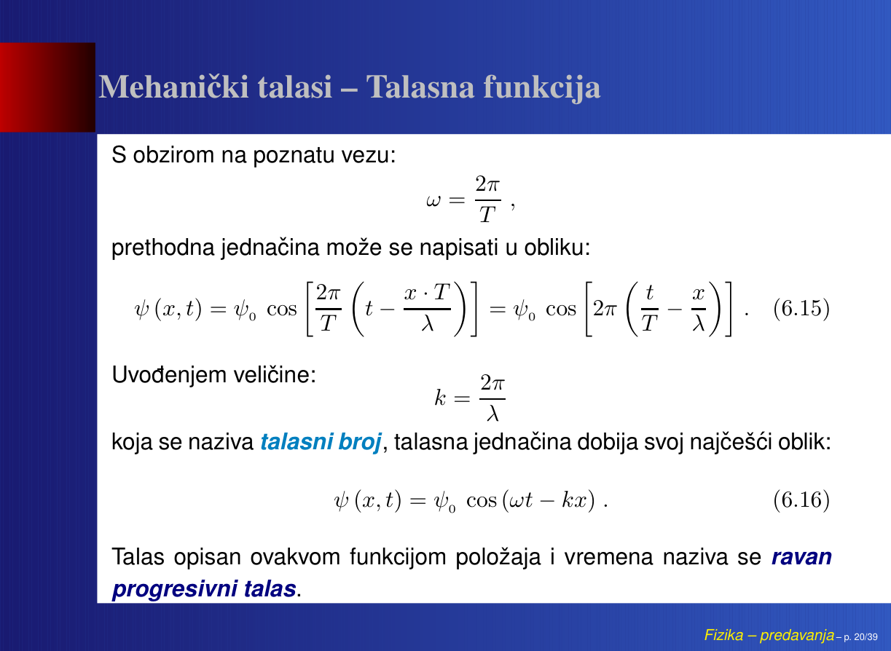
Koristeći $\omega=\tfrac{2\pi}{T}$, talasnu funkciju lepše zapišemo:
$$ \psi(x,t) = \psi_0\cos\!\left[2\pi\!\left(\frac{t}{T} - \frac{x}{\lambda}\right)\right] \qquad (6.15) $$
Uvodimo talasni broj $k$ (koliko „talasa" stane u $2\pi$ metara):
$$ k = \frac{2\pi}{\lambda} $$
i dobijamo najčešći oblik — ravan progresivni talas:
$$ \psi(x,t) = \psi_0\cos(\omega t - kx) \qquad (6.16) $$
💡 Zapamti par: $\omega=\tfrac{2\pi}{T}$ je „frekvencija u vremenu", $k=\tfrac{2\pi}{\lambda}$ je „frekvencija u prostoru". $\omega t$ opisuje titranje u vremenu, $kx$ pomeranje u prostoru.
Slajd 22 — Brzina i ubrzanje čestice
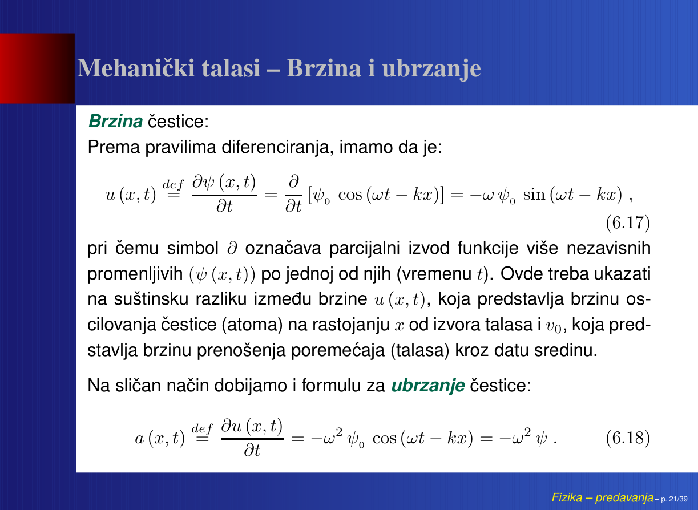
Izvodom talasne funkcije po vremenu dobijamo brzinu i ubrzanje čestice:
$$ u(x,t) = \frac{\partial\psi}{\partial t} = -\omega\psi_0\sin(\omega t - kx) \qquad (6.17) $$
$$ a(x,t) = \frac{\partial u}{\partial t} = -\omega^2\psi_0\cos(\omega t - kx) = -\omega^2\psi \qquad (6.18) $$
Znak $\partial$ (parcijalni izvod) znači: izvod po samo jednoj promenljivoj (ovde vremenu $t$), dok drugu ($x$) držimo fiksiranom.
⚠️
Dve različite brzine — ne mešaj ih!
- $u(x,t)$ — brzina titranja jedne čestice (gore-dole u mestu)
- $v_0$ — brzina kojom talas putuje kroz sredinu
Slajd 23 — Osnovna relacija talasnog kretanja
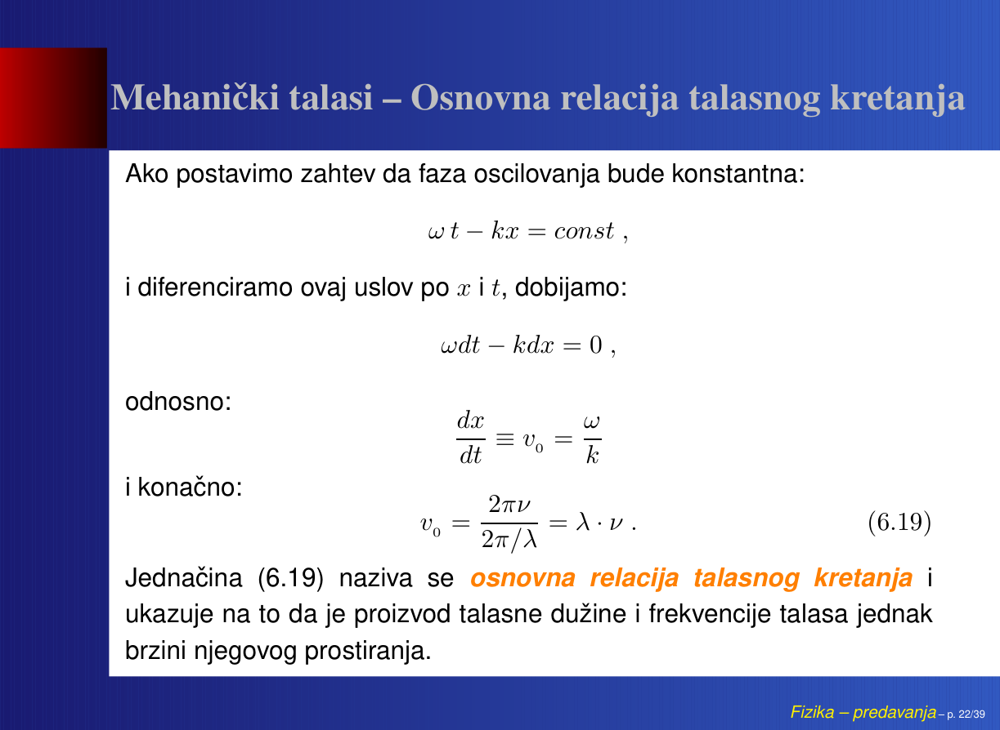
Tražimo brzinu kojom putuje tačka konstantne faze ($\omega t - kx=\text{const}$). Diferenciranjem:
$$ \omega\,dt - k\,dx = 0 \;\Rightarrow\; v_0 = \frac{dx}{dt} = \frac{\omega}{k} = \frac{2\pi\nu}{2\pi/\lambda} = \lambda\nu \qquad (6.19) $$
$$ \boxed{\,v_0 = \lambda\,\nu\,} $$
💡 Najvažnija formula za talase! Brzina talasa = talasna dužina × frekvencija. Npr. zvuk: ako znaš frekvenciju tona i brzinu zvuka, odmah znaš talasnu dužinu.
Slajd 24 — Matematički dodatak (kompleksni zapis)
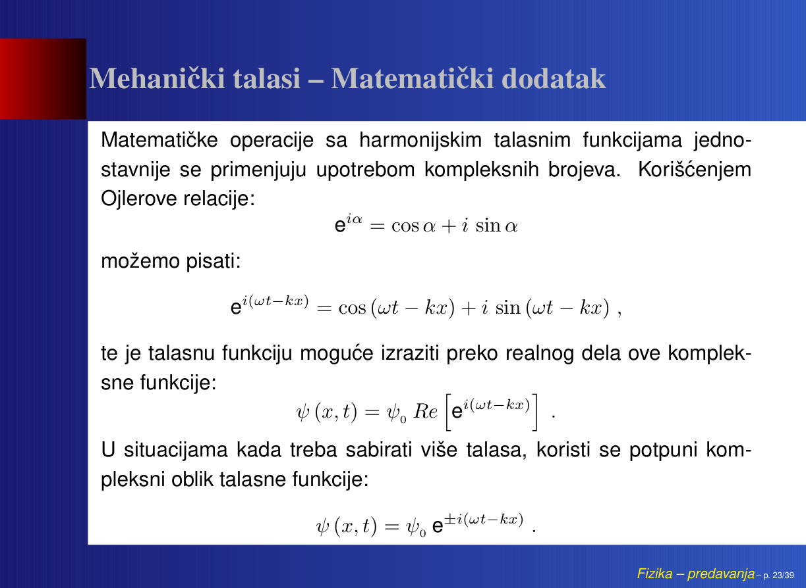
Računi sa talasima se pojednostave preko kompleksnih brojeva. Ojlerova relacija:
$$ e^{i\alpha} = \cos\alpha + i\sin\alpha $$
Pa se talas zapiše kao realni deo kompleksne funkcije:
$$ \psi(x,t) = \psi_0\,\mathrm{Re}\!\left[e^{i(\omega t - kx)}\right] \quad\text{ili}\quad \psi(x,t) = \psi_0\,e^{\pm i(\omega t - kx)} $$
💡 Ovo je samo matematički trik — lakše je sabirati talase u eksponencijalnom obliku nego sa sinusima i kosinusima. Fizika je ista.
Slajd 25 — Vrste talasa: TRANSVERZALNI

Transverzalni (poprečni) talas: delići sredine osciluju normalno (poprečno) na pravac kretanja talasa.
🎯 Zamisli uže koje zatreseš gore-dole: talas putuje horizontalno, ali tačke užeta idu gore-dole. Primer: talasi na vodi, talas na žici, svetlost.
Slajd 26 — Vrste talasa: LONGITUDINALNI

Longitudinalni (uzdužni) talas: delići sredine osciluju u pravcu kretanja talasa (napred-nazad duž iste linije).
🎯 Zamisli oprugu (slinky) koju gurneš napred-nazad: vide se zone zgušnjavanja i razređenja koje putuju. Najvažniji primer: zvuk (zgušnjavanje/razređenje vazduha).
Slajd 27 — Vrste talasa: sferni i ravni

| Vrsta | Talasni front (linija iste faze) | Primer |
|---|
| Sferni | širi se u krugovima/sferama iz tačkastog izvora | kamen bačen u vodu, sijalica |
| Ravni | paralelne ravne linije (izvor jako daleko) | Sunčevi zraci na Zemlji |
💡 Daleko od izvora i sferni talas izgleda približno ravan (zato Sunčeve zrake crtamo paralelno).
Slajd 28 — Koje sredine prenose transverzalne talase
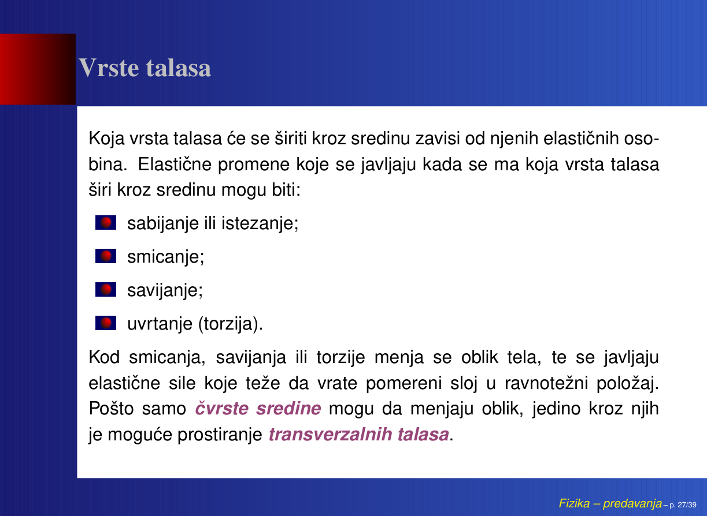
Elastične promene pri prolasku talasa mogu biti: sabijanje/istezanje, smicanje, savijanje, uvrtanje (torzija).
Smicanje/savijanje/torzija menjaju oblik tela. To mogu samo čvrste sredine.
💡 Zato se transverzalni talasi šire SAMO kroz čvrsta tela. (Voda i vazduh ne „drže oblik", pa ne prenose poprečne talase — zato npr. transverzalni seizmički S-talasi ne prolaze kroz tečno jezgro Zemlje.)
Slajd 29 — Longitudinalni talasi i podela po prostiranju
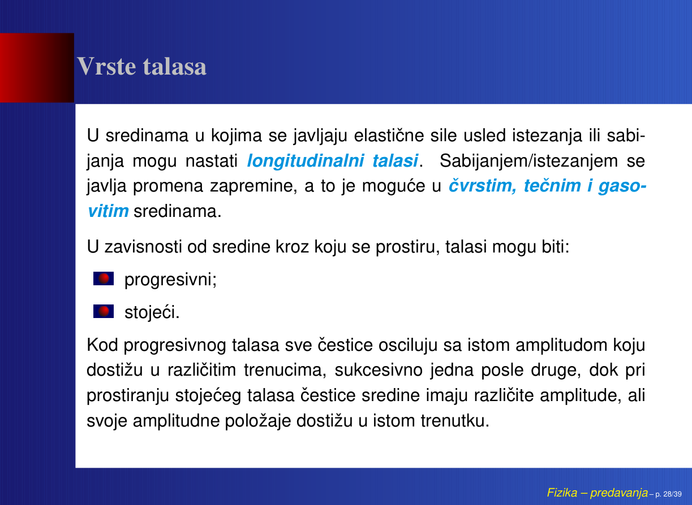
Sabijanje/istezanje menja zapreminu — to je moguće u čvrstim, tečnim I gasovitim sredinama. Zato se longitudinalni talasi šire kroz sve sredine (zvuk čujemo i u vazduhu, i u vodi, i kroz zid).
| Vrsta | Opis |
|---|
| Progresivni | sve čestice imaju istu amplitudu, ali je dostižu jedna za drugom (talas putuje) |
| Stojeći | čestice imaju različite amplitude, ali maksimum dostižu istovremeno (talas „stoji") |
Slajd 30 — Brzina talasa (Njutnov i Laplasov obrazac)
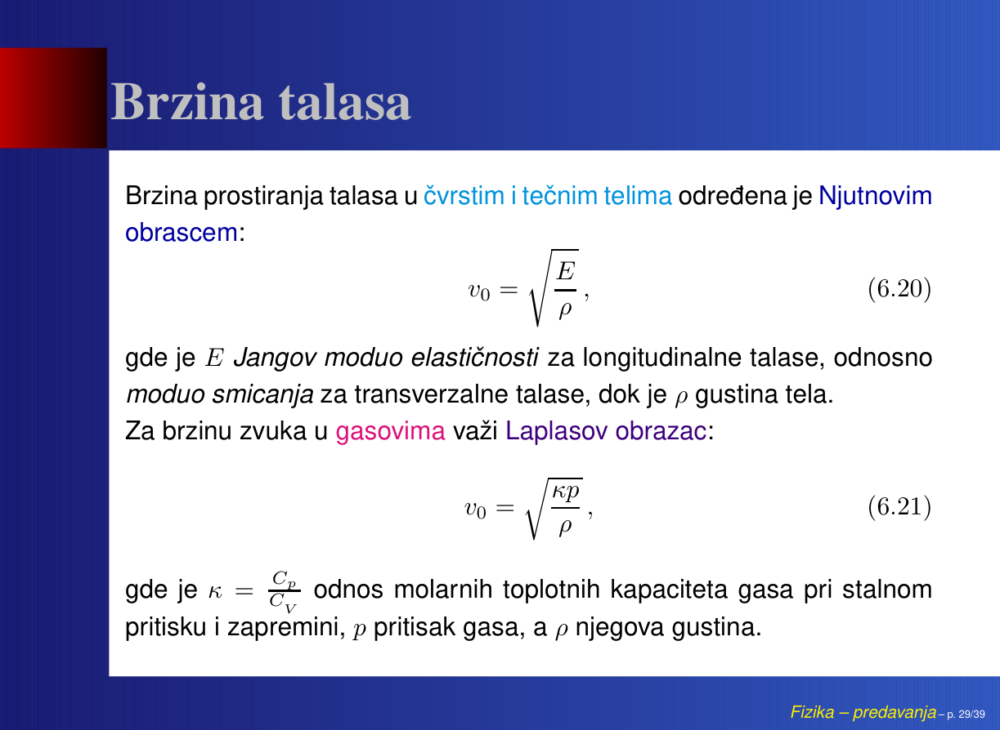
U čvrstim i tečnim telima (Njutnov obrazac):
$$ v_0 = \sqrt{\frac{E}{\rho}} \qquad (6.20) $$
$E$ = Jangov modul elastičnosti (za longitudinalne) ili modul smicanja (za transverzalne), $\rho$ = gustina.
Za zvuk u gasovima (Laplasov obrazac):
$$ v_0 = \sqrt{\frac{\kappa p}{\rho}} \qquad (6.21) $$
$\kappa=\tfrac{C_p}{C_V}$ (odnos toplotnih kapaciteta), $p$ = pritisak, $\rho$ = gustina.
💡 Pravilo: što je sredina kruća/elastičnija (veće $E$) → brži talas; što je gušća ($\rho$) → sporiji. Zato je zvuk brži u čeliku nego u vazduhu.
Slajd 31 — Brzina zvuka u gasu preko temperature
Ubacimo pritisak iz jednačine idealnog gasa $p=\tfrac{\rho RT}{M}$ u Laplasov obrazac:
$$ v_0 = \sqrt{\frac{\kappa RT}{M}} \qquad (6.22) $$
$R$ = gasna konstanta, $M$ = molarna masa, $T$ = apsolutna temp. (K). Praktičan oblik:
$$ v_0 = c_0\sqrt{\frac{T}{T_0}} \qquad (6.23) $$
$c_0=331{,}36\,\tfrac{\text{m}}{\text{s}}$ (brzina zvuka na $0°$C), $T_0=273{,}16\,$K.
💡 Najvažniji zaključak: brzina zvuka raste sa temperaturom ($v_0\propto\sqrt{T}$). Topliji vazduh = brži zvuk.
Slajd 32 — Primer: metalna šipka (postavka)
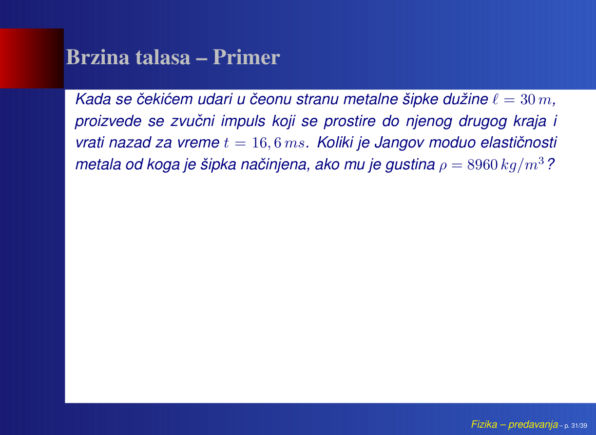
Udarac čekićem u kraj metalne šipke ($\ell=30\,$m) pravi zvučni impuls koji ode do drugog kraja i vrati se za $t=16{,}6\,$ms. Gustina $\rho=8960\,\tfrac{\text{kg}}{\text{m}^3}$. Naći Jangov modul $E$.
Slajd 33 — Primer: metalna šipka (rešenje)
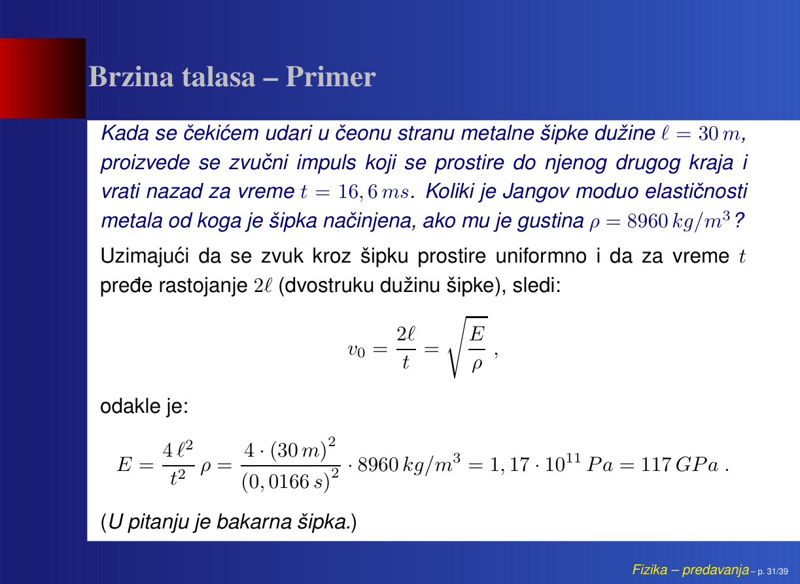
Zvuk pređe dvostruku dužinu $2\ell$ (tamo i nazad) za vreme $t$, a brzina je $v_0=\sqrt{E/\rho}$:
$$ v_0 = \frac{2\ell}{t} = \sqrt{\frac{E}{\rho}} \;\Rightarrow\; E = \frac{4\ell^2}{t^2}\rho $$
$$ E = \frac{4\cdot(30)^2}{(0{,}0166)^2}\cdot 8960 = 1{,}17\cdot10^{11}\,\text{Pa} = 117\,\text{GPa} $$
💡 To je Jangov modul bakra — tako iz vremena odjeka možemo prepoznati materijal!
Slajd 34 — Primer: helijum (postavka)
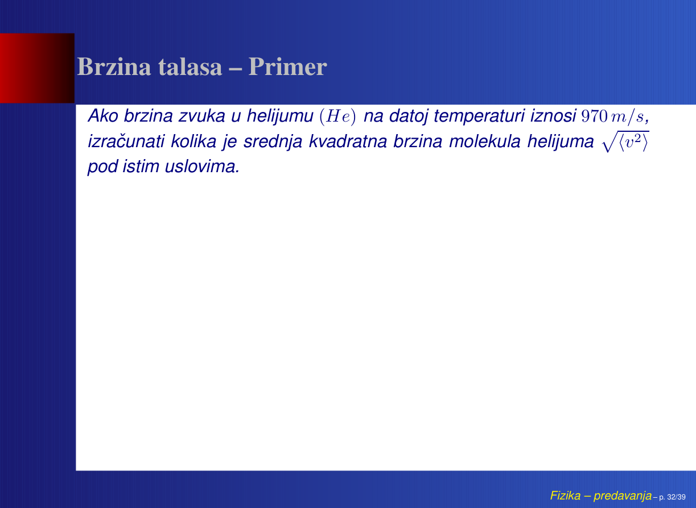
Brzina zvuka u helijumu na nekoj temperaturi je $970\,\tfrac{\text{m}}{\text{s}}$. Naći srednju kvadratnu brzinu molekula helijuma $\sqrt{\langle v^2\rangle}$ pod istim uslovima.
Slajd 35 — Primer: helijum (rešenje)
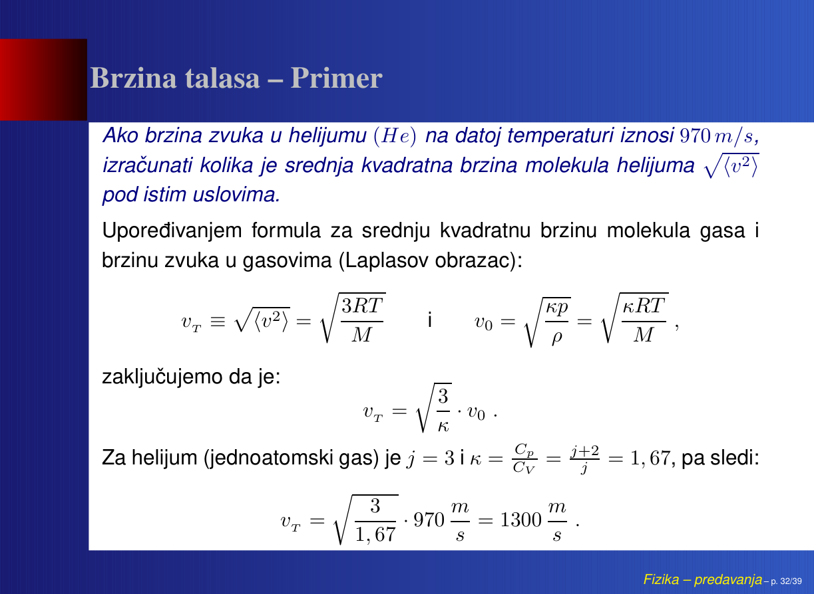
Uporedimo formulu za srednju kvadratnu brzinu molekula i Laplasov obrazac za zvuk:
$$ v_T = \sqrt{\langle v^2\rangle} = \sqrt{\frac{3RT}{M}} \qquad,\qquad v_0 = \sqrt{\frac{\kappa RT}{M}} $$
Deljenjem sledi $v_T = \sqrt{\tfrac{3}{\kappa}}\cdot v_0$. Helijum je jednoatomski ($j=3$), pa $\kappa=\tfrac{j+2}{j}=1{,}67$:
$$ v_T = \sqrt{\frac{3}{1{,}67}}\cdot 970 = 1300\,\tfrac{\text{m}}{\text{s}} $$
💡 Molekuli se kreću brže ($1300$) nego sam zvuk ($970$) — logično, jer zvuk se prenosi preko sudara molekula, pa ne može biti brži od njihovog haotičnog kretanja.
Slajd 36 — Izvođenje talasne jednačine (postavka)

Sad izvodimo opštu talasnu jednačinu na primeru šipke (presek $S$, gustina $\rho$, modul $E_Y$) kroz koju ide longitudinalni talas.
Posmatramo tanak delić šipke između $x$ i $x+dx$. Atomi na $x$ se pomere za $\psi$, atomi na $x+dx$ za $\psi+d\psi$ → delić se izduži/skupi za $d\psi$.
💡 Ideja: primenićemo Hukov zakon (elastičnost) i Njutnov zakon na taj sićušni delić, pa izjednačiti.
Slajd 37 — Hukov zakon na delić

Delić dužine $dx$ se izdužio za $d\psi$. Po Hukovom zakonu (napon = modul × relativno izduženje):
$$ \frac{F}{S} = E_Y\frac{\Delta L}{L} $$
gde je $\tfrac{\Delta L}{L}$ relativno izduženje (koliko se procentualno rasteglo).
💡 Hukov zakon je isti onaj „$F=-kx$" sa početka, samo zapisan za materijal preko Jangovog modula $E_Y$.
Slajd 38 — Sila i njena promena duž šipke
Uzmemo $L\equiv dx$, $\Delta L\equiv d\psi$. Iz Hukovog zakona sila u preseku:
$$ \frac{F}{S} = E_Y\frac{\partial\psi}{\partial x} \;\Rightarrow\; F = S E_Y\frac{\partial\psi}{\partial x} \qquad (6.24) $$
Sile na levu i desnu stranu delića nisu jednake; razlika se dobija još jednim izvodom po $x$:
$$ dF = S E_Y\frac{\partial^2\psi}{\partial x^2}\,dx \qquad (6.25) $$
💡 Baš ta razlika sila $dF$ je ono što gura delić — sila koja izaziva ubrzanje. To vodi pravo u Njutnov zakon (sledeći slajd).
Slajd 39 — Talasna jednačina (konačno!)
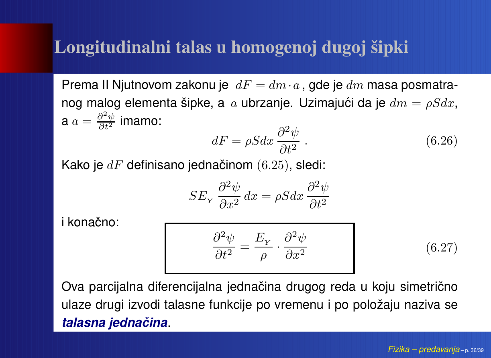
Njutnov zakon na delić: $dF = dm\cdot a$, gde je masa $dm=\rho S\,dx$ i ubrzanje $a=\tfrac{\partial^2\psi}{\partial t^2}$:
$$ dF = \rho S\,dx\frac{\partial^2\psi}{\partial t^2} \qquad (6.26) $$
Izjednačimo sa (6.25) i skratimo $S\,dx$:
$$ \frac{\partial^2\psi}{\partial t^2} = \frac{E_Y}{\rho}\cdot\frac{\partial^2\psi}{\partial x^2} \qquad (6.27) $$
💡 Ovo je TALASNA JEDNAČINA — drugi izvod po vremenu = (konstanta) × drugi izvod po prostoru. Svaki talas u prirodi je poštuje.
Slajd 40 — Smisao talasne jednačine
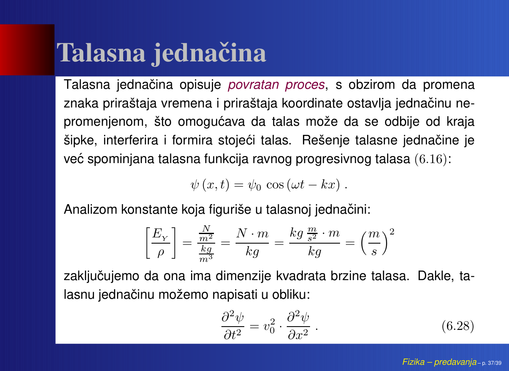
Jednačina opisuje povratan proces (talas se može odbiti, interferirati, formirati stojeći talas). Rešenje je već poznati ravan progresivni talas $\psi=\psi_0\cos(\omega t-kx)$.
Dimenziona analiza konstante pokazuje da $\tfrac{E_Y}{\rho}$ ima dimenziju kvadrata brzine, pa:
$$ \frac{\partial^2\psi}{\partial t^2} = v_0^2\cdot\frac{\partial^2\psi}{\partial x^2} \qquad (6.28) $$
💡 Konstanta ispred je upravo kvadrat brzine talasa. Tako iz same jednačine „pročitamo" koliko brzo talas putuje: $v_0=\sqrt{E_Y/\rho}$ — ista formula sa slajda 30!
Slajd 41 — Univerzalnost: žica i zvuk

Ista jednačina važi za razne talase — menja se samo izraz za brzinu:
Transverzalni talas u zategnutoj žici:
$$ \frac{\partial^2\psi}{\partial t^2} = \frac{F}{\gamma}\cdot\frac{\partial^2\psi}{\partial x^2} \;,\quad v_0=\sqrt{\frac{F}{\gamma}} $$
$F$ = sila zatezanja žice, $\gamma=m/L$ = podužna gustina (otud: jače zategneš žicu → viši ton).
Zvučni (longitudinalni) talas u vazduhu:
$$ v_0=\sqrt{\left(\frac{\partial p}{\partial\rho}\right)_{ad}}=\sqrt{\frac{\kappa p}{\rho}} $$
💡 Indeks „ad" = adijabatski (zvuk je toliko brz da nema razmene toplote). Ovo objašnjava zašto gitarska žica daje viši ton kad je jače zategneš.
Slajd 42 — Univerzalnost: elektromagnetni talas

Ista talasna jednačina važi i za svetlost / elektromagnetne talase (polja $E$ i $B$):
$$ \frac{\partial^2 E_x}{\partial t^2}=v_0^2\frac{\partial^2 E_x}{\partial z^2} \;,\qquad \frac{\partial^2 B_y}{\partial t^2}=v_0^2\frac{\partial^2 B_y}{\partial z^2} $$
Brzina zavisi od osobina sredine; u vakuumu je to brzina svetlosti:
$$ v_0=\sqrt{\frac{1}{\varepsilon_0\varepsilon_r\mu_0\mu_r}}=\frac{c}{\sqrt{\varepsilon_r\mu_r}} \;,\quad c=3\cdot10^8\,\tfrac{\text{m}}{\text{s}} $$
Rešenja su opet talasi: $E_x=E_0\cos(\omega t-kz)$, $B_y=B_0\cos(\omega t-kz)$.
🏁 Veliki finale predavanja: ista talasna jednačina opisuje talas na žici, zvuk u vazduhu I svetlost. Razlikuje se samo brzina $v_0$. To je duboka lepota fizike — jedna jednačina za mehanički talas, zvuk i svetlost.
✅ Kraj šestog predavanja — svih 42 slajda obrađeno.
SEDMO PREDAVANJE — Mehanički talasi (II deo) i Elektromagnetni talasi
Nastavak: zvuk, interferencija, stojeći talasi, rezonancija, Doplerov efekat i elektromagnetni talasi.
L7 · Slajd 1 — Naslovna strana
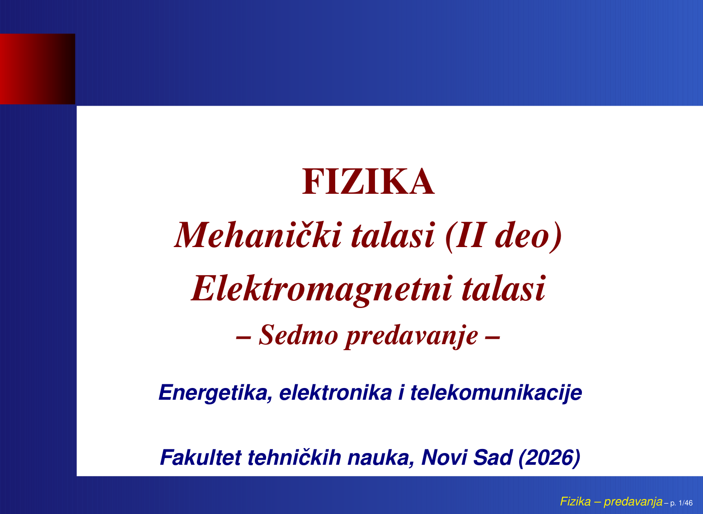
Sedmo predavanje pokriva dve celine:
- Mehanički talasi (II deo) — zvuk, interferencija, stojeći talasi, rezonancija, Doplerov efekat
- Elektromagnetni talasi — Maksvelove jednačine, prostiranje, apsorpcija, spektar (od radio-talasa do gama zraka)
L7 · Slajd 2 — Naslov: Mehanički talasi (II deo)
Razdvojni slajd — počinje drugi deo o mehaničkim talasima. Nastavak na ono što smo prošli na šestom predavanju (talasna funkcija, talasna jednačina).
L7 · Slajd 3 — Zvučni talas

Zvuk = mehanički talas koji možemo da čujemo. Podela po frekvenciji:
| Oblast | Frekvencija |
|---|
| Infrazvuk | ispod 20 Hz (ne čujemo) |
| Čujni zvuk | 20 Hz – 20 kHz (ljudsko uho) |
| Ultrazvuk | preko 20 000 Hz (ne čujemo; npr. ultrazvuk u medicini) |
Zvuk je longitudinalni talas — širi se kroz vazduh kao naizmenične zone zgušnjavanja i razređivanja molekula (kao opruga koju guraš napred-nazad). Proces je adijabatski (bez razmene toplote).
💡 Setiš se sa 6. predavanja: longitudinalni talas postoji u svim sredinama. Zato zvuk čujemo i kroz vazduh, i kroz vodu, i kroz zid.
L7 · Slajd 4 — Zašto je zvuk adijabatski proces
Amplituda titranja molekula u zvučnom talasu je mnogo manja od prečnika atoma ($\psi_0 \ll d$), a veća od srednjeg slobodnog puta molekula.
Zašto adijabatski (bez razmene toplote)? Pri zgušnjavanju slojevi vazduha se malo zagreju, pri razređivanju malo ohlade. Ali talas putuje toliko brzo (mnogo brže od provođenja toplote) da slojevi ne stignu da razmene toplotu pre nego što talas prođe.
💡 Molekuli koji harmonijski osciluju prenose energiju na obližnje, još nepobuđene molekule — tako talas putuje dalje.
L7 · Slajd 5 — Prenos energije zvučnim talasom
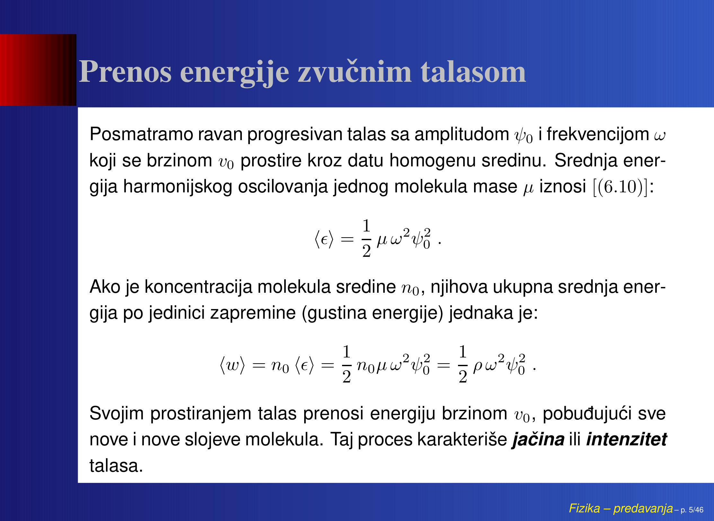
Srednja energija oscilovanja jednog molekula mase $\mu$ (sa 6. predavanja, formula 6.10):
$$ \langle\epsilon\rangle = \tfrac12\mu\omega^2\psi_0^2 $$
Ako u jedinici zapremine ima $n_0$ molekula (koncentracija), gustina energije (energija po zapremini) je:
$$ \langle w\rangle = n_0\langle\epsilon\rangle = \tfrac12 n_0\mu\omega^2\psi_0^2 = \tfrac12\rho\omega^2\psi_0^2 $$
(jer je $n_0\mu = \rho$, gustina sredine).
💡 Talas prenosi energiju brzinom $v_0$, pobuđujući nove slojeve molekula. Koliko energije nosi = jačina (intenzitet) talasa.
L7 · Slajd 6 — Fizički intenzitet zvuka
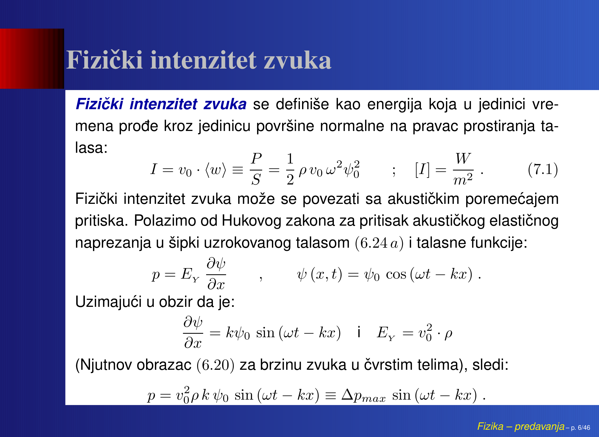
Fizički intenzitet zvuka $I$ = energija koja u jedinici vremena prođe kroz jediničnu površinu (snaga po površini):
$$ I = v_0\langle w\rangle = \frac{P}{S} = \tfrac12\rho v_0\omega^2\psi_0^2 \;,\qquad [I]=\tfrac{\text{W}}{\text{m}^2} \qquad (7.1) $$
Intenzitet se povezuje sa akustičkim pritiskom (talas pravi sitne promene pritiska vazduha). Iz Hukovog zakona i Njutnovog obrasca dobija se:
$$ p = E_Y\frac{\partial\psi}{\partial x} = v_0^2\rho k\psi_0\sin(\omega t - kx) \equiv \Delta p_{max}\sin(\omega t - kx) $$
💡 Glavna ideja: što je talas glasniji, veća je amplituda pritiska $\Delta p_{max}$ i veći intenzitet $I$.
L7 · Slajd 7 — Intenzitet preko akustičkog pritiska
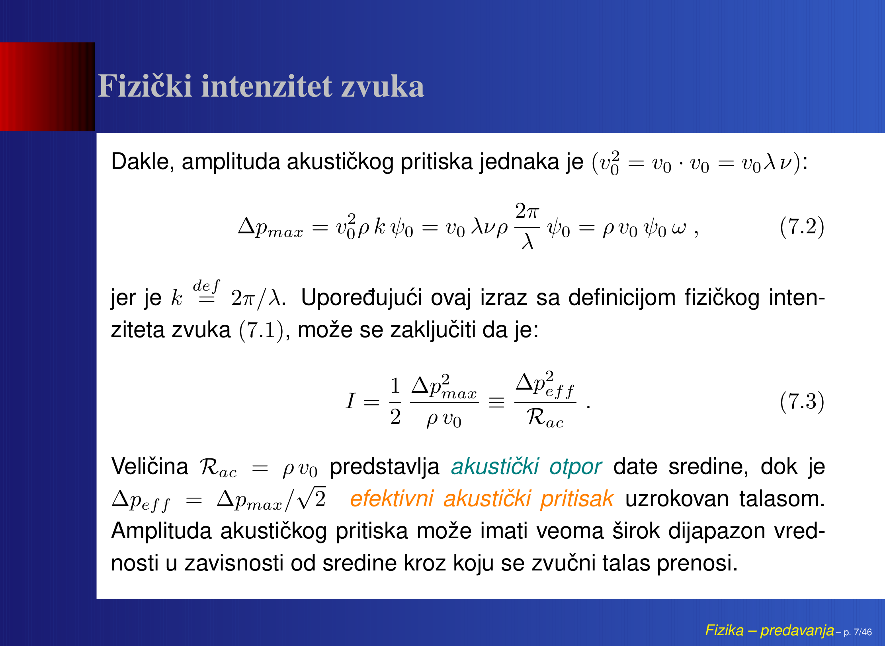
Amplituda akustičkog pritiska (koristeći $v_0=v_0\lambda\nu$ i $k=2\pi/\lambda$):
$$ \Delta p_{max} = \rho v_0\psi_0\omega \qquad (7.2) $$
Pa se intenzitet izrazi preko pritiska:
$$ I = \frac12\frac{\Delta p_{max}^2}{\rho v_0} = \frac{\Delta p_{eff}^2}{\mathcal{R}_{ac}} \qquad (7.3) $$
| Veličina | Značenje |
|---|
| $\mathcal{R}_{ac}=\rho v_0$ | akustički otpor sredine |
| $\Delta p_{eff}=\Delta p_{max}/\sqrt2$ | efektivni akustički pritisak |
💡 Analogija sa strujom: $I=\tfrac{\Delta p_{eff}^2}{\mathcal R_{ac}}$ liči na $P=\tfrac{U^2}{R}$ u elektrotehnici. Akustički otpor igra ulogu električnog otpora.
L7 · Slajd 8 — Fiziološki intenzitet (čujnost) i decibeli
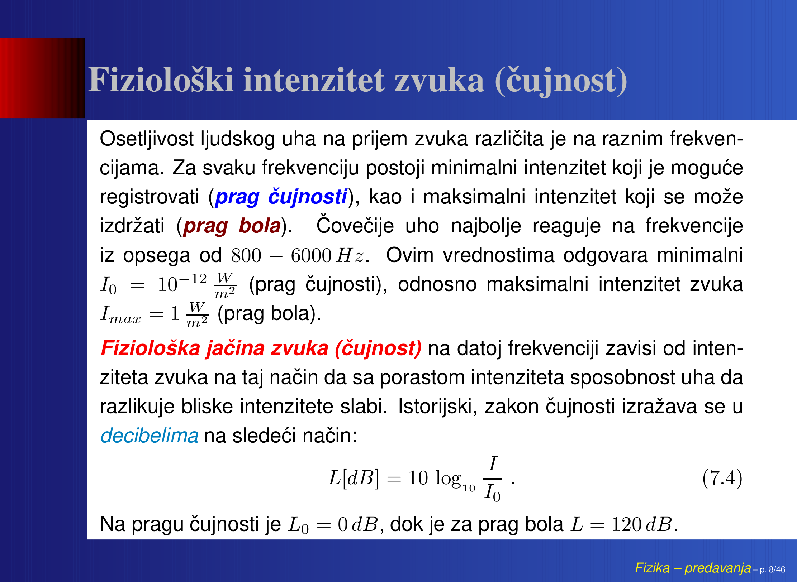
Uho nije jednako osetljivo na sve frekvencije. Za svaku frekvenciju postoje dva praga:
| Prag | Vrednost |
|---|
| Prag čujnosti $I_0$ (najtiše što čujemo) | $10^{-12}\,\tfrac{\text{W}}{\text{m}^2}$ |
| Prag bola $I_{max}$ (najglasnije pre bola) | $1\,\tfrac{\text{W}}{\text{m}^2}$ |
Uho najbolje reaguje na 800–6000 Hz. Pošto je raspon ogroman ($10^{12}$ puta!), koristi se logaritamska skala — decibeli:
$$ L\,[\text{dB}] = 10\log_{10}\frac{I}{I_0} \qquad (7.4) $$
💡 Na pragu čujnosti $L_0=0\,$dB, na pragu bola $L=120\,$dB. Svako povećanje za 10 dB znači 10 puta veći intenzitet (logaritam!).
L7 · Slajd 9 — Grafik čujnosti

Grafik pokazuje oblast frekvencija i jačina koje uho čuje:
- vodoravna osa = frekvencija $\nu$ (20 Hz do 20 000 Hz), logaritamska
- uspravna osa = jačina $L$ u decibelima (dB)
- donja kriva = granica čujnosti (najtiše što čujemo)
- gornja kriva = granica bola
💡 Svaki ton koji čujemo je tačka između te dve krive. Uho je najosetljivije oko 1000–4000 Hz (tu donja kriva pada najniže). Tu i dečji plač i ljudski govor — nije slučajno.
L7 · Slajd 10 — Interferencija talasa

Jedna od najvažnijih osobina talasa je aditivnost (superpozicija) — kad se dva talasa sretnu u istoj tački, oni se saberu.
- a) Pojačanje: ako se sretnu „greben na greben" → saberu se u veći talas
- b) Poništavanje: ako se sretnu „greben na dolju" → ponište se
💡 To se zove interferencija. Zavisi od toga da li talasi stižu „u korak" (u fazi) ili „protiv koraka" (u protivfazi).
🎯 Zato slušalice sa „noise cancelling" rade: proizvedu talas u protivfazi sa bukom i ponište je.
L7 · Slajd 11 — Uslovi interferencije
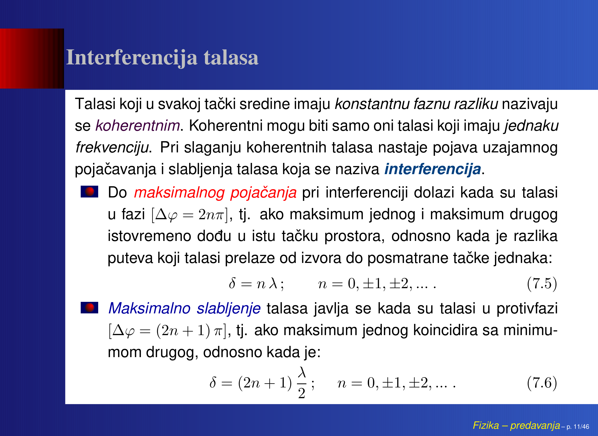
Talasi moraju biti koherentni = imati konstantnu faznu razliku i jednaku frekvenciju. Tada:
Maksimalno pojačanje (talasi u fazi, $\Delta\varphi=2n\pi$) — kad je razlika puteva ceo broj talasnih dužina:
$$ \delta = n\lambda \;;\qquad n=0,\pm1,\pm2,\dots \qquad (7.5) $$
Maksimalno slabljenje (talasi u protivfazi, $\Delta\varphi=(2n+1)\pi$) — kad je razlika puteva neparan broj polovina talasnih dužina:
$$ \delta = (2n+1)\frac{\lambda}{2} \;;\qquad n=0,\pm1,\pm2,\dots \qquad (7.6) $$
💡 Ključno je $\delta$ = razlika puteva koju dva talasa pređu do tačke susreta. Cela $\lambda$ → pojačanje; pola $\lambda$ → poništavanje.
L7 · Slajd 12 — Stojeći talasi

Stojeći talas = specijalan slučaj interferencije: dva talasa iste talasne dužine i amplitude kreću se istim pravcem, ali suprotnim smerovima.
To se dešava pri odbijanju od prepreke: upadni talas i odbijeni talas se sretnu. Pri odbijanju talas promeni fazu za $\pi$ (poluokrene se).
💡 Rezultat ne izgleda kao da putuje — neke tačke uvek miruju, neke uvek maksimalno titraju. Talas „stoji u mestu". Otud naziv stojeći talas.
L7 · Slajd 13 — Izvođenje stojećeg talasa
Upadni talas (ide u $+x$) i odbijeni (ide u $-x$):
$$ \psi_+ = \psi_0\cos(\omega t - kx) \;,\qquad \psi_- = \psi_0\cos(\omega t + kx) $$
Saberemo ih koristeći adicionu teoremu $\cos\alpha+\cos\beta = 2\cos\tfrac{\alpha+\beta}{2}\cos\tfrac{\alpha-\beta}{2}$:
$$ \psi = \psi_+ + \psi_- = 2\psi_0\cos(kx)\cos(\omega t) \equiv A(x)\cos(\omega t) \qquad (7.7) $$
gde je amplituda koja zavisi od mesta:
$$ A(x) = 2\psi_0\cos(kx) \qquad (7.8) $$
💡 Bitna razlika od putujućeg talasa: kod stojećeg, $x$ (mesto) i $t$ (vreme) su razdvojeni. Amplituda $A(x)$ zavisi SAMO od položaja — neke tačke imaju $A=0$, neke maksimum.
L7 · Slajd 14 — Čvorovi i trbusi
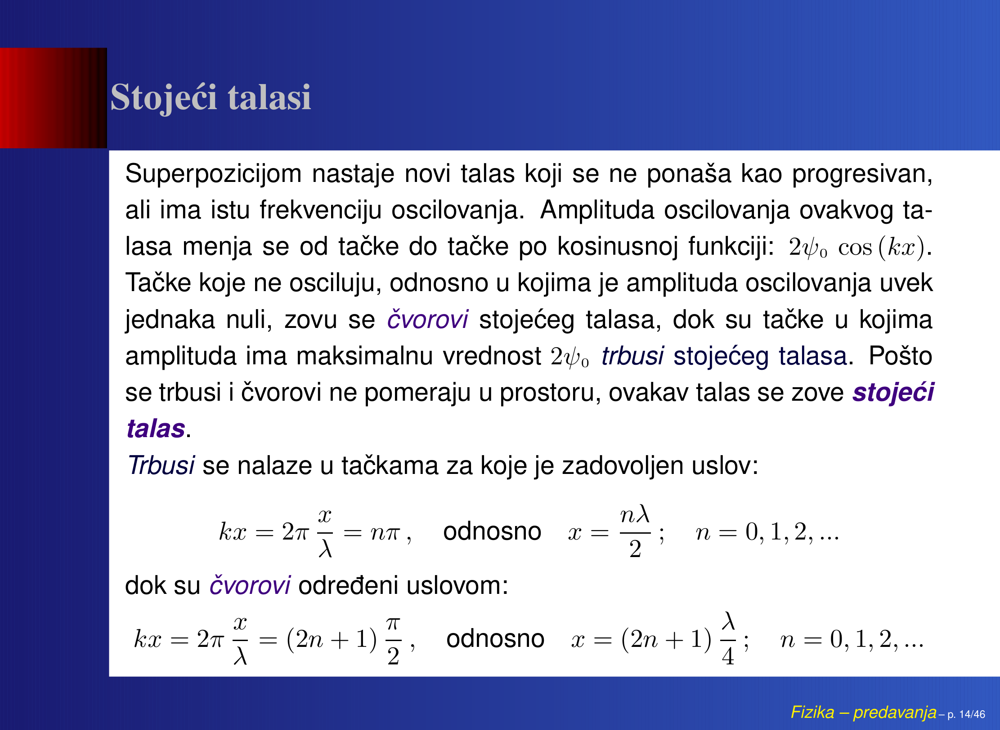
| Pojam | Šta je | Položaj |
|---|
| Čvor | tačka koja uvek miruje ($A=0$) | $x=(2n+1)\tfrac{\lambda}{4}$ (neparan broj četvrtina) |
| Trbuh | tačka maksimalnog titranja ($A=2\psi_0$) | $x=\tfrac{n\lambda}{2}$ (ceo broj polovina) |
Pošto se čvorovi i trbusi ne pomeraju u prostoru, talas se zove stojeći.
🎯 Zamisli žicu na gitari: krajevi su uvek čvorovi (vezani, ne mrdaju), a sredina je trbuh (najviše titra). Zato i nastaje ton.
L7 · Slajd 15 — Rezonancija

Zbog višestrukog odbijanja od učvršćenih krajeva, stojeći talas dodatno uvećava amplitudu — to je rezonancija.
- Frekvencije na kojima nastaje rezonancija = rezonantne frekvencije
- Najniža takva frekvencija = osnovni ton
- Sve ostale (više) = viši harmonici (overtonovi)
💡 Trbusi su u tačkama sa celim brojem polovina $\lambda$, čvorovi sa neparnim brojem četvrtina $\lambda$. Ovo određuje koje frekvencije „pristaju" na datu dužinu.
L7 · Slajd 16 — Šta je rezonancija (suština)
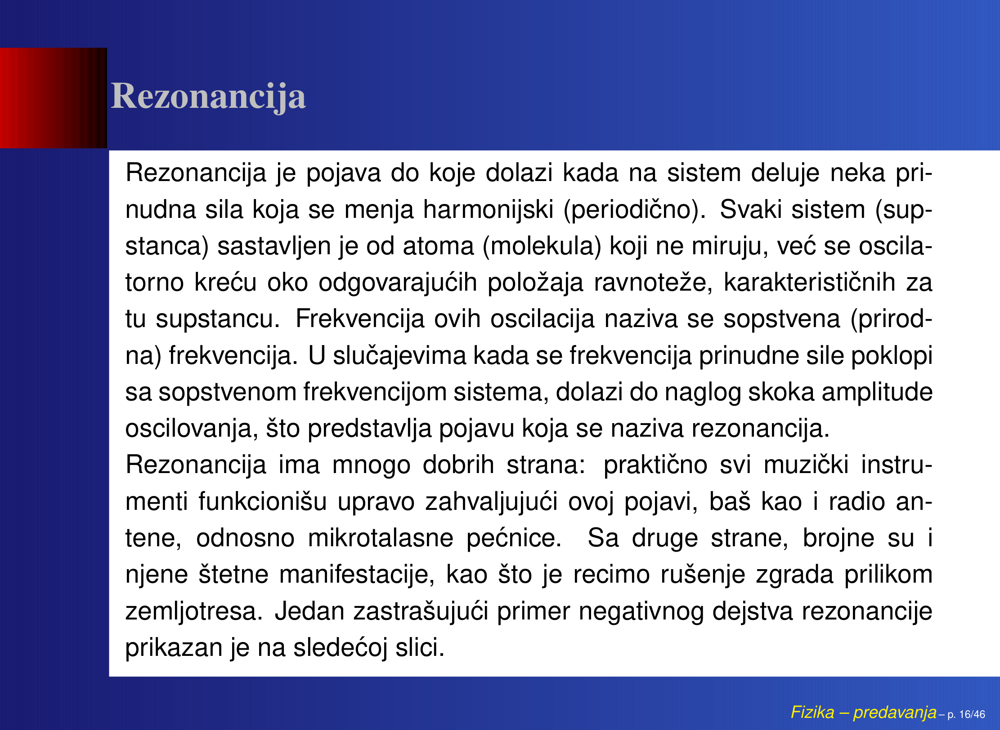
Rezonancija = pojava kad na sistem deluje prinudna sila čija se frekvencija poklopi sa sopstvenom (prirodnom) frekvencijom sistema. Tada amplituda naglo skoči.
Svaki sistem ima svoju sopstvenu frekvenciju (na kojoj voli da titra). Kad ga „guraš" baš tom frekvencijom → ogroman odziv.
| Korisna rezonancija | Štetna rezonancija |
|---|
| muzički instrumenti, radio antene, mikrotalasna | rušenje zgrada u zemljotresu, rušenje mostova |
🎯 Kao kad guraš dete na ljuljašci: ako guraš baš u pravom ritmu (sopstvena frekvencija), ljuljaška ide sve više i više uz mali trud.
L7 · Slajd 17 — Most Takoma (1940)

Čuveni primer katastrofalne rezonancije: most Takoma (Vašington, SAD) srušio se 7. novembra 1940. zbog rezonancije, i to pod ne previše jakim vetrom (64 km/h).
💡 Vetar je „gurao" most baš na njegovoj sopstvenoj frekvenciji → amplituda oscilovanja je rasla dok se most nije raspao. Zato inženjeri danas pažljivo računaju sopstvene frekvencije konstrukcija.
L7 · Slajd 18 — Primeri rezonancije (uvod)
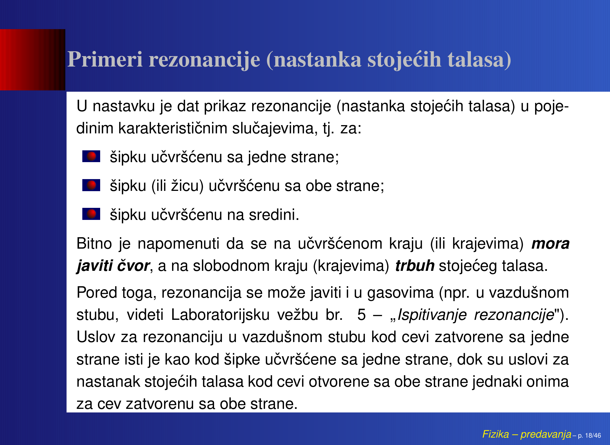
Sledi prikaz rezonancije (nastanka stojećih talasa) za tri slučaja:
- šipka učvršćena sa jedne strane
- šipka (ili žica) učvršćena sa obe strane
- šipka učvršćena na sredini
💡 Ključno pravilo: na učvršćenom kraju mora biti ČVOR (tamo ne može da titra), a na slobodnom kraju TRBUH (tamo titra najviše). To određuje koji talasi „pristaju".
L7 · Slajd 19 — Šipka učvršćena sa jedne strane (slika)

Učvršćen kraj = čvor, slobodan kraj = trbuh. Koji talasi „staju" na dužinu $L$:
| Mod | Uslov |
|---|
| Osnovni ton | $L = 1\cdot\tfrac{\lambda}{4}$ |
| Prvi viši harmonik | $L = 3\cdot\tfrac{\lambda}{4}$ |
| Drugi viši harmonik | $L = 5\cdot\tfrac{\lambda}{4}$ |
💡 Uvek neparan broj četvrtina talasne dužine (1, 3, 5, ...). Zato kod ovog slučaja dobijamo samo neparne harmonike.
L7 · Slajd 20 — Šipka učvršćena sa jedne strane (formule)
Veza dužine i talasne dužine:
$$ L = (2n+1)\frac{\lambda_n}{4} \;,\qquad n=0,1,2,\dots $$
Koristeći $v_0=\lambda_n\nu_n=\sqrt{E/\rho}$ (osnovna relacija + Njutnov obrazac), dobijamo rezonantne frekvencije:
$$ \nu_n = \frac{1}{\lambda_n}\sqrt{\frac{E}{\rho}} = \frac{2n+1}{4L}\sqrt{\frac{E}{\rho}} $$
💡 Frekvencije idu u odnosu 1 : 3 : 5 : ... (samo neparni umnošci osnovnog tona). Što kraća šipka ($L$) ili tvrđi materijal ($E$) → viši ton.
L7 · Slajd 21 — Šipka učvršćena sa obe strane (slika)

Oba kraja učvršćena = oba kraja su čvorovi. Koji talasi „staju":
| Mod | Uslov |
|---|
| Osnovni ton | $L = 1\cdot\tfrac{\lambda}{2}$ |
| Prvi viši harmonik | $L = 2\cdot\tfrac{\lambda}{2}$ |
| Drugi viši harmonik | $L = 3\cdot\tfrac{\lambda}{2}$ |
💡 Ovde ceo broj polovina $\lambda$ (1, 2, 3, ...). Ovo je slučaj gitarske/violinske žice — vezana na oba kraja.
L7 · Slajd 22 — Šipka učvršćena sa obe strane (formule)
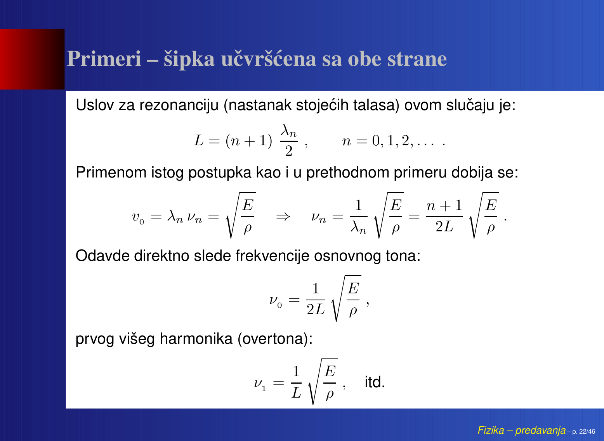
$$ L = (n+1)\frac{\lambda_n}{2} \;,\qquad n=0,1,2,\dots $$
Rezonantne frekvencije:
$$ \nu_n = \frac{n+1}{2L}\sqrt{\frac{E}{\rho}} $$
Osnovni ton i prvi viši harmonik:
$$ \nu_0 = \frac{1}{2L}\sqrt{\frac{E}{\rho}} \;,\qquad \nu_1 = \frac{1}{L}\sqrt{\frac{E}{\rho}} = 2\nu_0 $$
💡 Ovde frekvencije idu 1 : 2 : 3 : ... (SVI umnošci, i parni i neparni). Zato žica zvuči „punije" od cevi zatvorene s jedne strane.
L7 · Slajd 23 — Šipka učvršćena na sredini (slika)

Učvršćena na sredini = na sredini je čvor, oba kraja su trbusi (slobodni). Koji talasi „staju":
| Mod | Uslov |
|---|
| Osnovni ton | $L = 1\cdot\tfrac{\lambda}{2}$ |
| Prvi viši harmonik | $L = 3\cdot\tfrac{\lambda}{2}$ |
| Drugi viši harmonik | $L = 5\cdot\tfrac{\lambda}{2}$ |
💡 Opet samo neparni umnošci (1, 3, 5), ali sada polovina, ne četvrtina (jer je dužina cele šipke $L$, a čvor je na sredini).
L7 · Slajd 24 — Šipka učvršćena na sredini (formule)
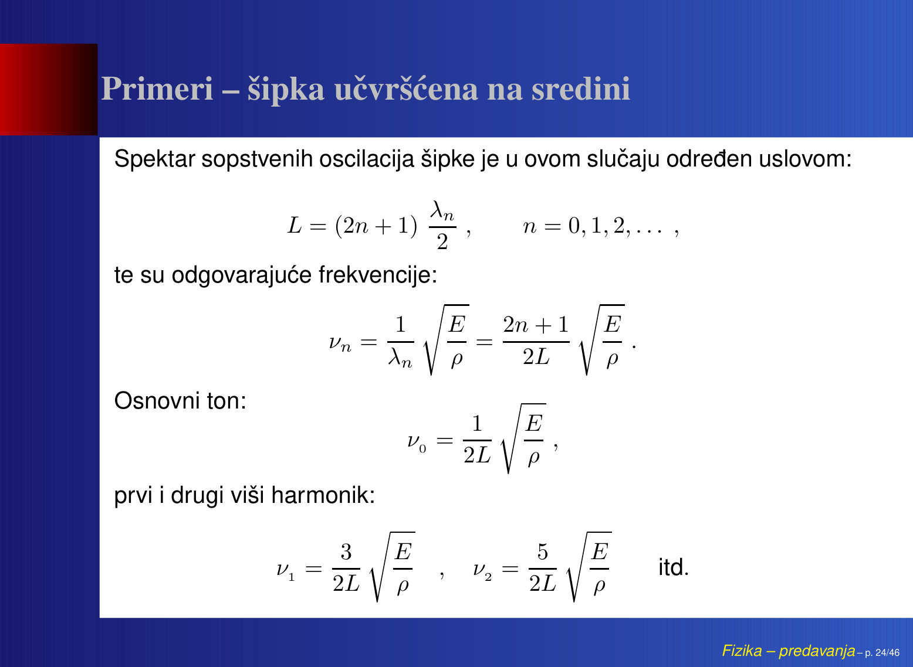
$$ L = (2n+1)\frac{\lambda_n}{2} \;,\qquad n=0,1,2,\dots $$
$$ \nu_n = \frac{2n+1}{2L}\sqrt{\frac{E}{\rho}} $$
Osnovni ton, prvi i drugi viši harmonik:
$$ \nu_0 = \frac{1}{2L}\sqrt{\frac{E}{\rho}} \;,\quad \nu_1 = \frac{3}{2L}\sqrt{\frac{E}{\rho}} \;,\quad \nu_2 = \frac{5}{2L}\sqrt{\frac{E}{\rho}} $$
💡 Odnos frekvencija 1 : 3 : 5 : ... (kao šipka učvršćena s jedne strane).
L7 · Slajd 25 — Cev otvorena sa obe strane (slika)

Cev otvorena s obe strane (npr. orgulje, flauta) — na otvorenim krajevima su trbusi (vazduh slobodno titra). Talasi koji „staju":
| Mod | Uslov |
|---|
| Osnovni ton | $L = 1\cdot\tfrac{\lambda}{2}$ |
| Prvi viši harmonik | $L = 2\cdot\tfrac{\lambda}{2}$ |
| Drugi viši harmonik | $L = 3\cdot\tfrac{\lambda}{2}$ |
💡 Isto kao žica učvršćena s obe strane (ceo broj polovina), iako su uslovi obrnuti (trbusi umesto čvorova na krajevima). Zato cev otvorena s obe strane daje sve harmonike.
L7 · Slajd 26 — Cev otvorena sa obe strane (formule)
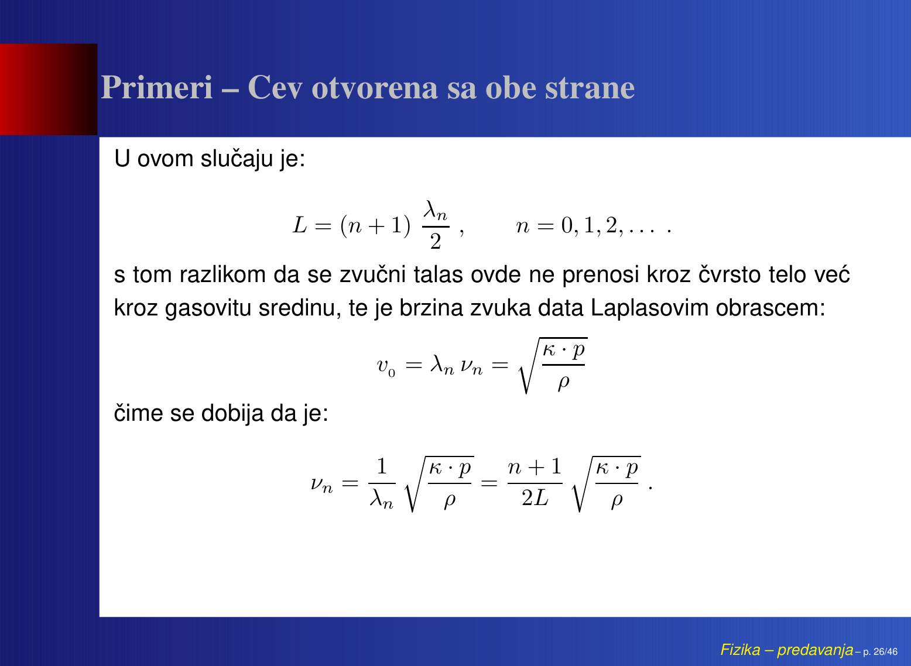
$$ L = (n+1)\frac{\lambda_n}{2} \;,\qquad n=0,1,2,\dots $$
Razlika u odnosu na šipku: zvuk ide kroz vazduh, pa brzinu daje Laplasov obrazac $v_0=\sqrt{\tfrac{\kappa p}{\rho}}$ (ne Njutnov):
$$ \nu_n = \frac{n+1}{2L}\sqrt{\frac{\kappa p}{\rho}} $$
💡 Jedina razlika u odnosu na čvrstu šipku: umesto $\sqrt{E/\rho}$ ide $\sqrt{\kappa p/\rho}$, jer talas putuje kroz gas, ne kroz metal.
L7 · Slajd 27 — Hajgensov princip

Hajgensov princip (1678) objašnjava odbijanje (refleksiju), prelamanje (refrakciju) i difrakciju talasa:
Svaka tačka pogođena talasom postaje izvor novog sfernog talasa.
Ti novi (sekundarni) talasi se međusobno interferiraju i poništavaju svuda osim po površini koja čini novi talasni front (obvojnicu).
💡 Zato talas zaobilazi prepreke (difrakcija) i menja pravac pri prelasku u drugu sredinu (prelamanje). Svaka tačka fronta „rađa" novi mali talas.
L7 · Slajd 28 — Doplerov efekat

Doplerov efekat: kad se izvor talasa i/ili prijemnik kreću jedan u odnosu na drugog, prijemnik registruje promenjenu frekvenciju.
Na slici: izvor se kreće, pa su sferni talasi „zbijeni" ispred (kraća $\lambda_1$) i „razvučeni" iza (duža $\lambda_2$).
🎯 Najpoznatiji primer: sirena hitne pomoći. Dok ti se približava — ton je viši (zbijeni talasi). Kad te prođe — ton naglo padne (razvučeni talasi). Isto i zvuk Formule 1 koja projuri.
L7 · Slajd 29 — Dopler: izvor se kreće (izvođenje)
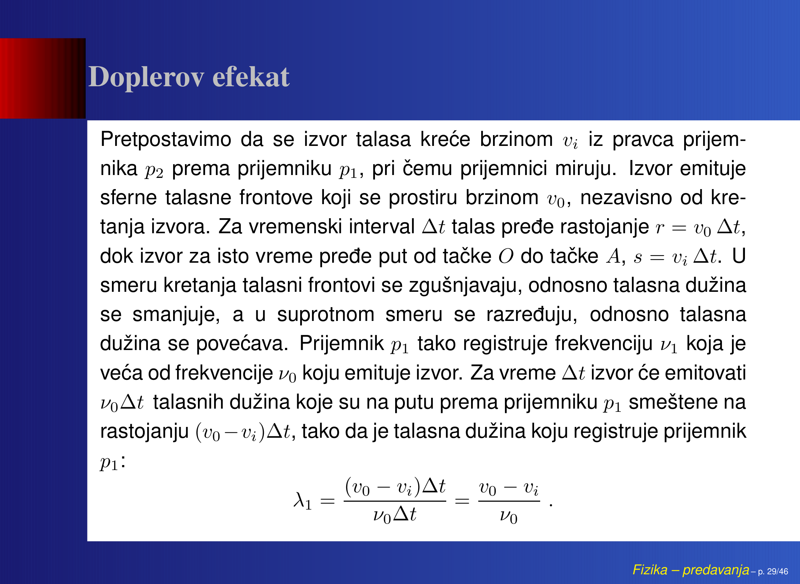
Izvor se kreće brzinom $v_i$ prema prijemniku $p_1$ (prijemnici miruju). Za vreme $\Delta t$: talas pređe $r=v_0\Delta t$, a izvor pređe $s=v_i\Delta t$.
Ispred izvora se talasna dužina smanjuje (talasni frontovi se zbijaju), pa prijemnik $p_1$ registruje:
$$ \lambda_1 = \frac{(v_0-v_i)\Delta t}{\nu_0\Delta t} = \frac{v_0-v_i}{\nu_0} $$
💡 Kraća talasna dužina ispred izvora → viša frekvencija (viši ton). Iza izvora obrnuto.
L7 · Slajd 30 — Dopler: frekvencije (izvor se kreće)
Koristeći $\lambda_1=v_0/\nu_1$, dobija se frekvencija koju čuje prijemnik ispred ($p_1$, izvor mu prilazi):
$$ \nu_1 = \frac{v_0}{v_0-v_i}\,\nu_0 \quad(\text{viša — izvor prilazi}) $$
A prijemnik iza ($p_2$, izvor se udaljava) čuje nižu:
$$ \nu_2 = \frac{v_0}{v_0+v_i}\,\nu_0 \quad(\text{niža — izvor se udaljava}) $$
💡 Prilazi → imenilac manji → $\nu$ veće (viši ton). Udaljava se → imenilac veći → $\nu$ manje (niži ton). Tačno ono što čuješ kod sirene.
L7 · Slajd 31 — Dopler: opšti slučaj
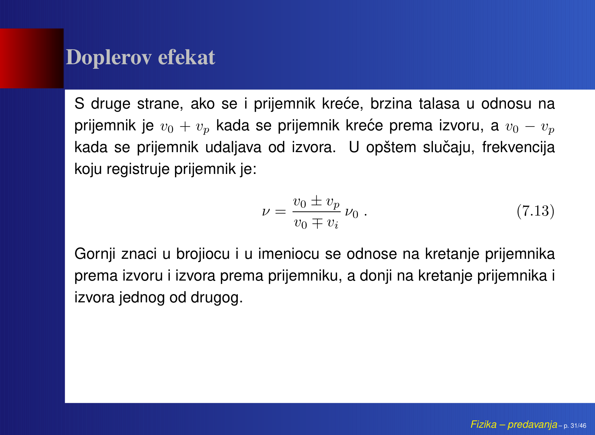
Ako se kreću i izvor i prijemnik, opšta formula:
$$ \nu = \frac{v_0 \pm v_p}{v_0 \mp v_i}\,\nu_0 \qquad (7.13) $$
| Oznaka | Brzina |
|---|
| $v_0$ | brzina talasa (zvuka) |
| $v_p$ | brzina prijemnika |
| $v_i$ | brzina izvora |
💡 Pravilo znakova: gornji znaci = kretanje jednog ka drugom (zbližavanje → viši ton); donji znaci = udaljavanje (niži ton). Pamti: zbližavanje uvek diže frekvenciju.
L7 · Slajd 32 — Naslov: Elektromagnetni talasi
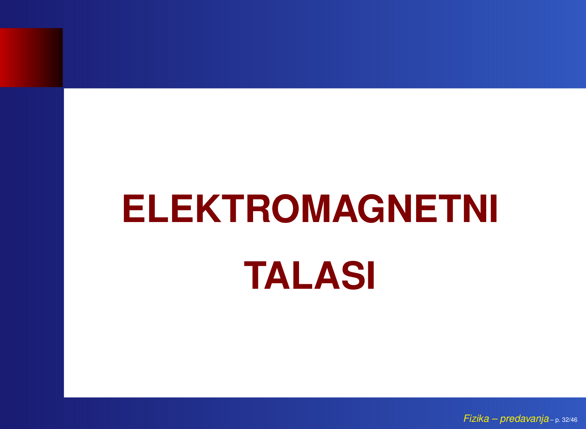
Druga velika celina predavanja. Za razliku od mehaničkih talasa, EM talasima NE treba sredina — putuju i kroz vakuum (zato vidimo Sunce). Svetlost, radio-talasi, X-zraci — sve su to EM talasi.
L7 · Slajd 33 — Maksvelove jednačine
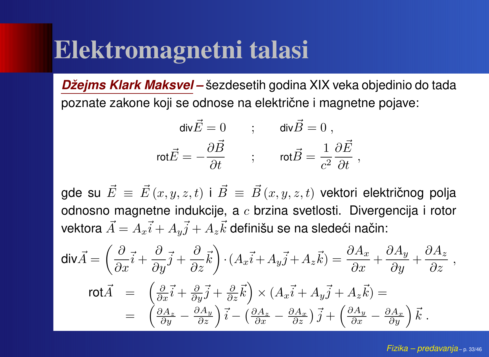
Džejms Klark Maksvel je 1860-ih objedinio sve poznate zakone o elektricitetu i magnetizmu u četiri jednačine:
$$ \mathrm{div}\,\vec{E} = 0 \;,\qquad \mathrm{div}\,\vec{B} = 0 $$
$$ \mathrm{rot}\,\vec{E} = -\frac{\partial\vec{B}}{\partial t} \;,\qquad \mathrm{rot}\,\vec{B} = \frac{1}{c^2}\frac{\partial\vec{E}}{\partial t} $$
$\vec E$ = električno polje, $\vec B$ = magnetna indukcija, $c$ = brzina svetlosti. „div" (divergencija) i „rot" (rotor) su matematičke operacije nad vektorskim poljima.
💡 Ne moraš da pamtiš matematiku „div" i „rot" — bitna je poruka: promenljivo električno polje stvara magnetno i obrnuto. To „samoodržavanje" i jeste EM talas (sledeći slajd objašnjava rečima).
L7 · Slajd 34 — Šta znače 4 Maksvelove jednačine
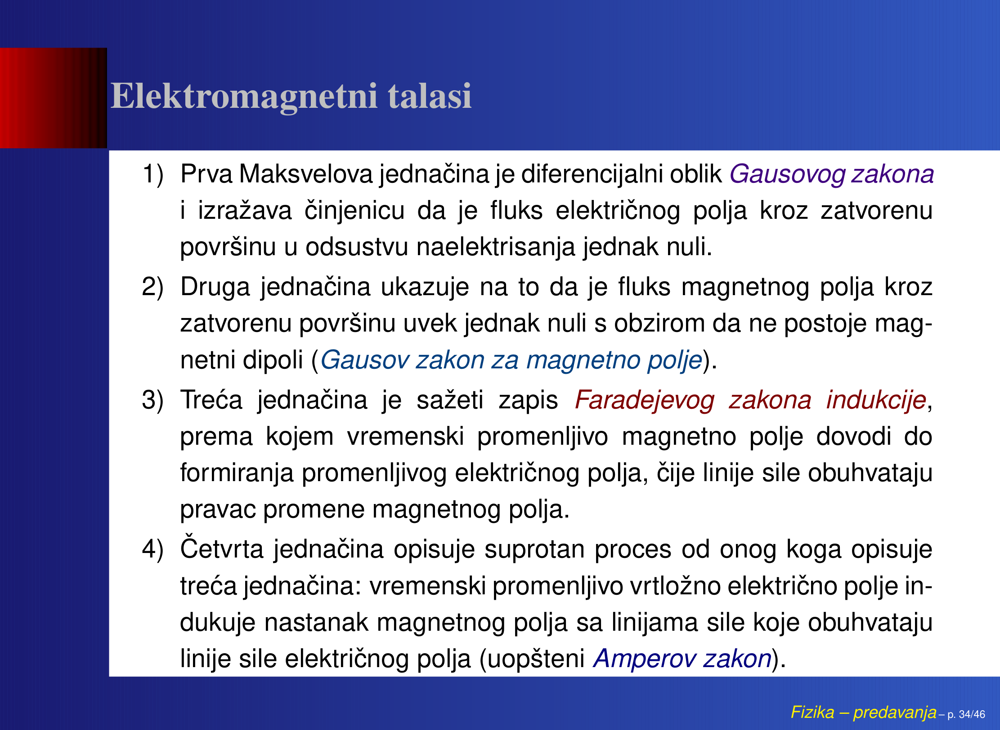
| # | Jednačina | Šta govori |
|---|
| 1 | Gausov zakon | električno polje izvire iz naelektrisanja |
| 2 | Gausov zakon za magnetno polje | ne postoje magnetni monopoli (nema „severnog pola" bez „južnog") |
| 3 | Faradejev zakon indukcije | promenljivo magnetno polje stvara električno |
| 4 | (uopšteni) Amperov zakon | promenljivo električno polje stvara magnetno |
💡 Jednačine 3 i 4 su srce EM talasa: električno polje rađa magnetno, koje rađa električno, koje rađa magnetno... i tako se talas sam „održava" dok putuje kroz prazan prostor.
L7 · Slajd 35 — Prostiranje EM talasa

U svakoj tački prostora postoji promenljivo magnetno polje i istovremeno promenljivo električno. Ta dva polja su uzajamno spregnuta i čine jedinstveno elektromagnetno polje.
Na slici: $\vec E$ (električno polje) titra u jednoj ravni, $\vec B$ (magnetno) u okomitoj ravni, a talas putuje u trećem pravcu (npr. $z$-osa).
💡 Tri pravca, svi međusobno pod 90°: električno polje, magnetno polje i pravac kretanja. EM talas je transverzalan (polja titraju poprečno na kretanje).
L7 · Slajd 36 — Jednačine EM talasa
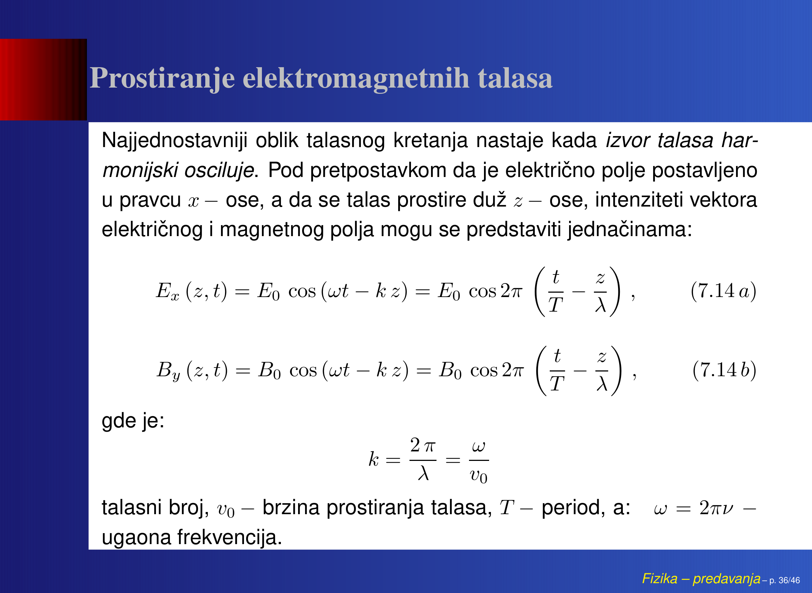
Ako talas putuje duž $z$-ose, polja se opisuju (kao i svaki harmonijski talas) kosinusom:
$$ E_x(z,t) = E_0\cos(\omega t - kz) \qquad (7.14a) $$
$$ B_y(z,t) = B_0\cos(\omega t - kz) \qquad (7.14b) $$
gde je talasni broj:
$$ k = \frac{2\pi}{\lambda} = \frac{\omega}{v_0} $$
💡 Isti oblik kao mehanički talas sa 6. predavanja ($\psi=\psi_0\cos(\omega t-kx)$)! Samo umesto pomeraja $\psi$ imamo polja $E$ i $B$. Opet ista talasna matematika.
L7 · Slajd 37 — Brzina EM talasa i indeks prelamanja
Brzina EM talasa zavisi od dielektričnih i magnetnih osobina sredine:
$$ v_0 = \frac{1}{\sqrt{\varepsilon_0\varepsilon_r\mu_0\mu_r}} \qquad (7.15) $$
U vakuumu ($\varepsilon_r=\mu_r=1$) to je brzina svetlosti:
$$ c = \frac{1}{\sqrt{\varepsilon_0\mu_0}} \approx 3\cdot10^8\,\tfrac{\text{m}}{\text{s}} \;,\qquad v_0 = \frac{c}{\sqrt{\varepsilon_r\mu_r}} = \frac{c}{n} \qquad (7.16) $$
$n=\sqrt{\varepsilon_r\mu_r}$ = apsolutni indeks prelamanja.
💡 Veliki rezultat: svetlost je EM talas! $n$ govori koliko je svetlost sporija u nekoj sredini nego u vakuumu (u staklu $n\approx1{,}5$ → svetlost je 1,5× sporija). Zato se svetlost prelama.
L7 · Slajd 38 — Apsorpcija EM talasa
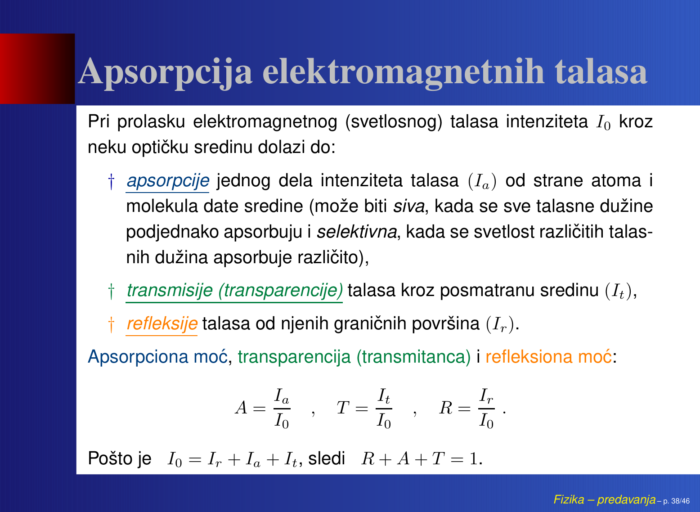
Kad EM talas (npr. svetlost) intenziteta $I_0$ padne na neku sredinu, deli se na tri dela:
| Pojava | Deo intenziteta |
|---|
| Apsorpcija (upija se u materijal) | $I_a$ |
| Transmisija (prođe kroz) | $I_t$ |
| Refleksija (odbije se) | $I_r$ |
Definišu se moći: $A=\tfrac{I_a}{I_0}$, $T=\tfrac{I_t}{I_0}$, $R=\tfrac{I_r}{I_0}$. Pošto je $I_0=I_r+I_a+I_t$, važi:
$$ R + A + T = 1 $$
💡 Logično: sva upadna svetlost se ili odbije, ili upije, ili prođe. Suma uvek 100%. (Crno telo: A≈1; ogledalo: R≈1; čisto staklo: T≈1.)
L7 · Slajd 39 — Lamberov zakon (postavka)

Kad snop EM talasa prođe kroz tanak sloj debljine $dx$, intenzitet opadne za:
$$ dI = -k I\,dx \quad\Rightarrow\quad \frac{dI}{I} = -k\,dx $$
$k$ = koeficijent apsorpcije. Znak $-$ jer intenzitet opada.
💡 Ključna ideja: koliko se apsorbuje srazmerno je i debljini sloja ($dx$) i trenutnom intenzitetu ($I$). Što je deblji sloj — više apsorpcije.
L7 · Slajd 40 — Lamberov zakon (rezultat)
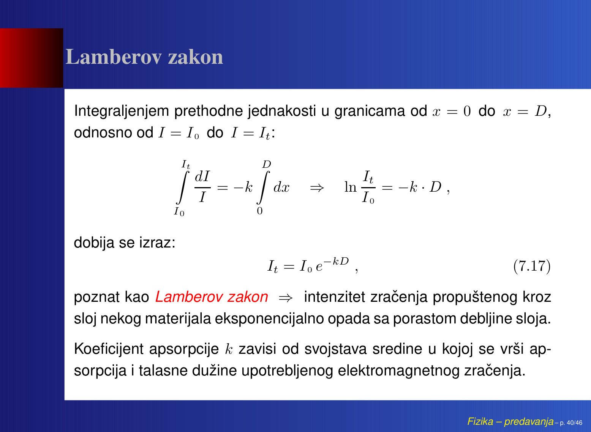
Integracijom od $x=0$ ($I=I_0$) do $x=D$ ($I=I_t$):
$$ \int_{I_0}^{I_t}\frac{dI}{I} = -k\int_0^D dx \quad\Rightarrow\quad \ln\frac{I_t}{I_0} = -kD $$
Otud Lamberov zakon:
$$ I_t = I_0\,e^{-kD} \qquad (7.17) $$
💡 Intenzitet eksponencijalno opada sa debljinom sloja. Zato deblje (ili tamnije) naočare propuštaju eksponencijalno manje svetla. Isto pravilo i za prigušenje X-zraka kroz telo.
L7 · Slajd 41 — Prenos energije EM talasom
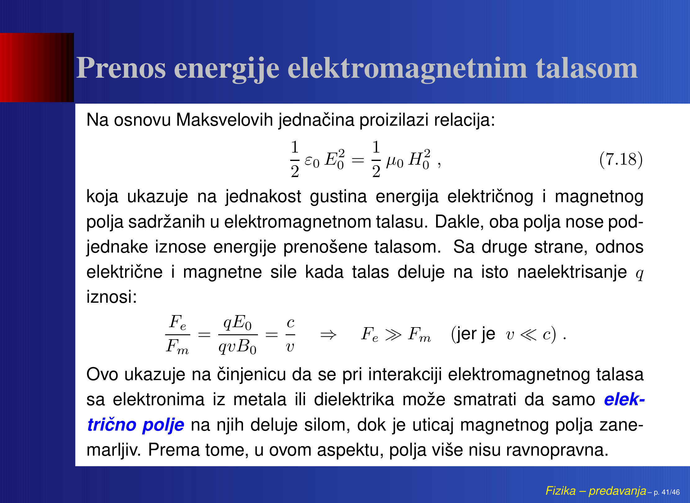
Iz Maksvelovih jednačina sledi da električno i magnetno polje nose jednake iznose energije:
$$ \tfrac12\varepsilon_0 E_0^2 = \tfrac12\mu_0 H_0^2 \qquad (7.18) $$
Ali odnos električne i magnetne sile na naelektrisanje $q$:
$$ \frac{F_e}{F_m} = \frac{c}{v} \quad\Rightarrow\quad F_e \gg F_m \quad(\text{jer } v\ll c) $$
💡 Iako oba polja nose istu energiju, na elektrone u materiji praktično deluje samo električno polje (jer je magnetna sila zanemarljiva pri malim brzinama). Zato „električno polje radi posao" kod svetlosti.
L7 · Slajd 42 — Spektar: talasna dužina i frekvencija

Podsećanje na dve osnovne veličine svakog talasa:
- Talasna dužina $\lambda$ — rastojanje između dve tačke u istoj fazi (greben do grebena)
- Frekvencija $\nu$ — koliko oscilacija u sekundi; određuje je izvor i ne menja se
$$ v_0 = \lambda\cdot\nu = \frac{\omega}{k} $$
💡 Ista „osnovna relacija talasnog kretanja" kao za zvuk! Kad svetlost uđe u staklo, brzina i $\lambda$ se smanje, ali $\nu$ ostaje ista (boja se ne menja).
L7 · Slajd 43 — Spektar EM talasa (uvod)
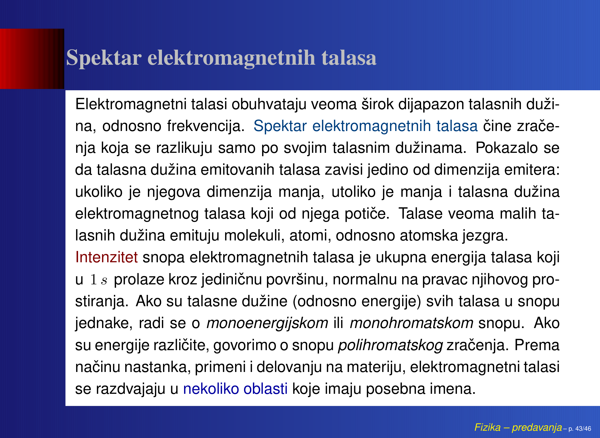
EM talasi obuhvataju ogroman raspon talasnih dužina/frekvencija. Talasna dužina zavisi od veličine izvora: manji izvor → kraća $\lambda$ (atomi emituju vidljivu svetlost, atomska jezgra γ-zrake).
| Pojam | Značenje |
|---|
| Monohromatski snop | sve talasne dužine jednake (jedna „boja"/energija) |
| Polihromatski snop | mešavina različitih talasnih dužina |
💡 Laser je monohromatski (jedna boja), a sunčeva svetlost je polihromatska (mešavina svih boja — zato je prizma razlaže u dugu).
L7 · Slajd 44 — Ceo spektar (slika)

Ceo elektromagnetni spektar, od najkraćih do najdužih talasa:
γ-zraci → X-zraci → UV → vidljiva svetlost → IC → radar → radio (FM, TV, AM)
- levo: kratka talasna dužina ($10^{-12}$ m) = visoka energija (γ-zraci)
- desno: duga talasna dužina ($10^4$ m) = niska energija (radio)
- vidljiva svetlost je tanki pojas: 400 nm (ljubičasta) → 700 nm (crvena)
💡 Sve je to ista pojava — EM talas — razlikuje se samo talasna dužina. Vidljiva svetlost je sićušan deo celog spektra koji naše oko uspeva da uhvati.
L7 · Slajd 45 — Oblasti spektra (1): radio, mikro, optički
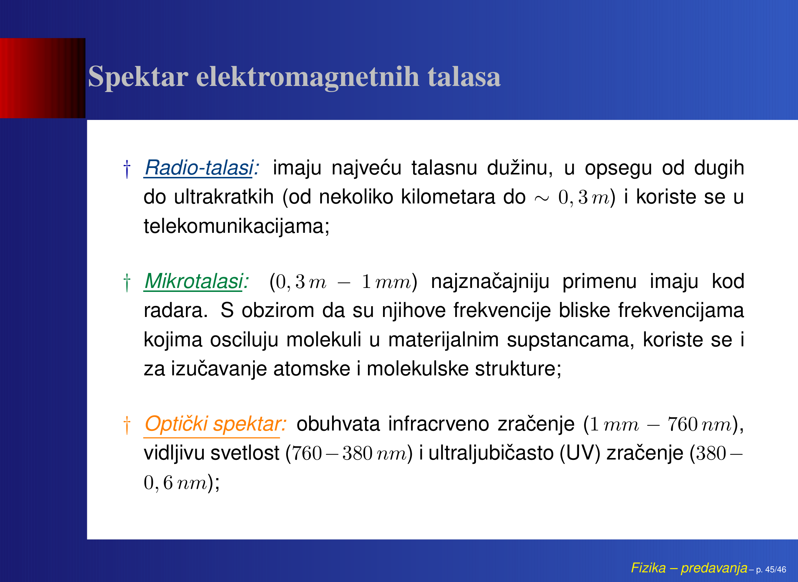
| Oblast | Talasna dužina | Primena |
|---|
| Radio-talasi | od km do ~0,3 m (najduži) | telekomunikacije, radio, TV |
| Mikrotalasi | 0,3 m – 1 mm | radar, izučavanje molekula, mikrotalasna |
| Optički spektar | 1 mm – 380 nm | infracrveno (1 mm–760 nm), vidljivo (760–380 nm), UV (380–0,6 nm) |
L7 · Slajd 46 — Oblasti spektra (2): X, gama, kosmičko
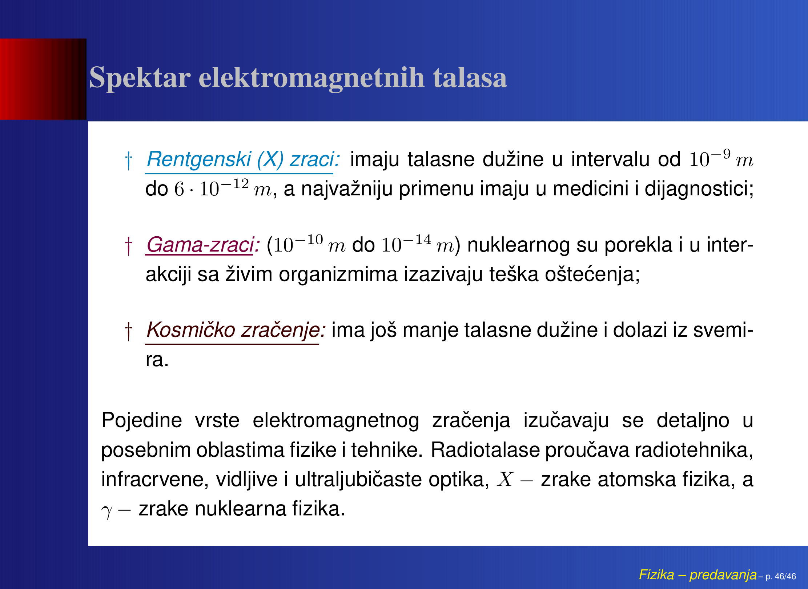
| Oblast | Talasna dužina | Karakteristike |
|---|
| Rentgenski (X) zraci | $10^{-9}$ – $6\cdot10^{-12}$ m | medicina, dijagnostika (snimci) |
| Gama zraci | $10^{-10}$ – $10^{-14}$ m | nuklearnog porekla, teško oštećuju žive organizme |
| Kosmičko zračenje | još manje | dolazi iz svemira |
🏁 Kraj sedmog predavanja! Različite oblasti spektra izučavaju se u različitim granama: radio-talase radiotehnika, X-zrake atomska fizika, γ-zrake nuklearna fizika. Ali sve su to — elektromagnetni talasi koje opisuje ista talasna jednačina sa 6. predavanja.
✅ Kraj sedmog predavanja — svih 46 slajdova obrađeno.
OSMO PREDAVANJE — Geometrijska i talasna optika
L8 · Slajd 1 — Naslovna
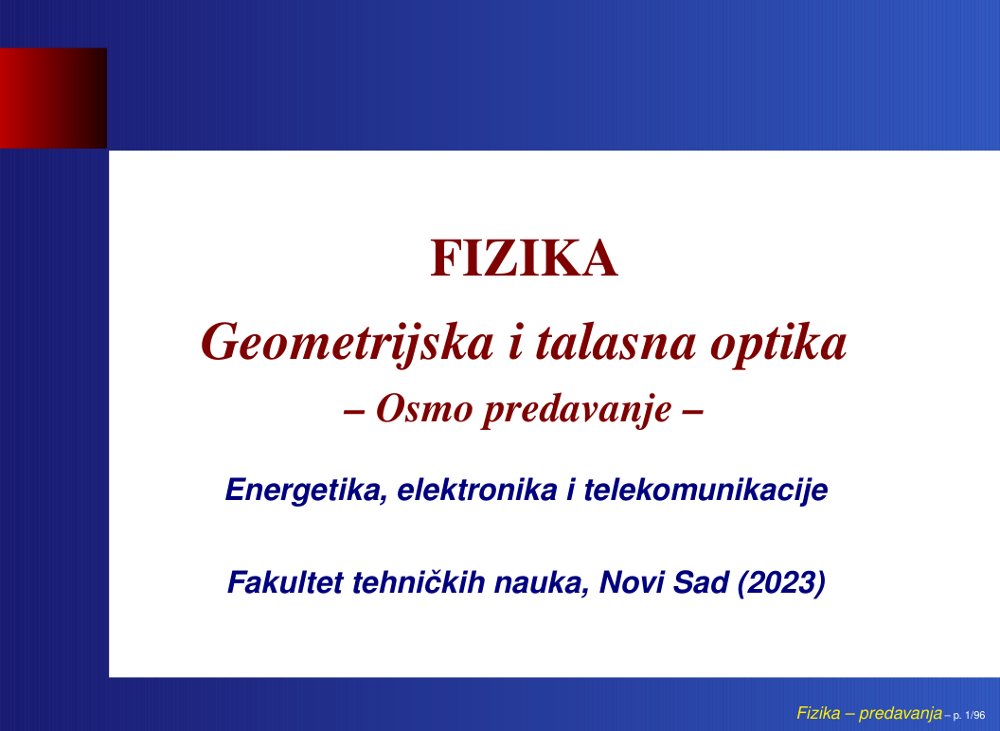
Tema osmog predavanja je optika — nauka o svetlosti. Deli se na dva dela:
- Geometrijska optika — posmatra svetlost kao zrake (linije) i objašnjava ogledala, sočiva, prelamanje. Ne pita se "šta je svetlost", samo prati kuda ide.
- Talasna optika — posmatra svetlost kao talas i objašnjava interferenciju, difrakciju, polarizaciju (pojave koje geometrijska ne može da objasni).
L8 · Slajd 2 — Geometrijska optika (idealizacije)
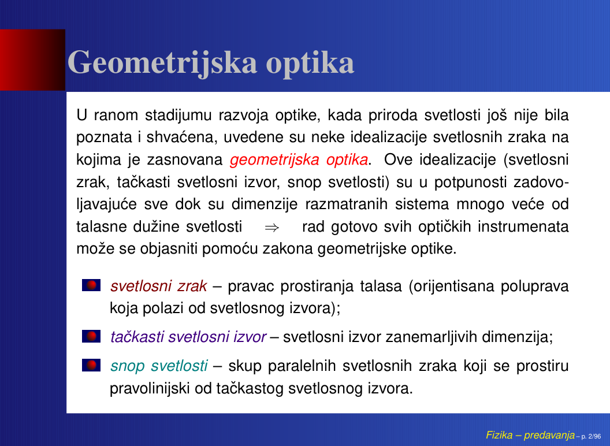
U ranom razvoju nauke ljudi nisu znali šta je svetlost, pa su uveli idealizacije koje rade odlično dok je posmatrani objekat mnogo veći od talasne dužine svetlosti (a ona je sićušna, ~0,0005 mm). Tri ključna pojma:
- svetlosni zrak — pravac (linija) kojim se talas prostire; orijentisana poluprava koja polazi od izvora.
- tačkasti svetlosni izvor — izvor tako mali da mu zanemarujemo dimenzije (tretiramo ga kao tačku).
- snop svetlosti — skup paralelnih svetlosnih zraka.
L8 · Slajd 3 — Četiri zakona geometrijske optike
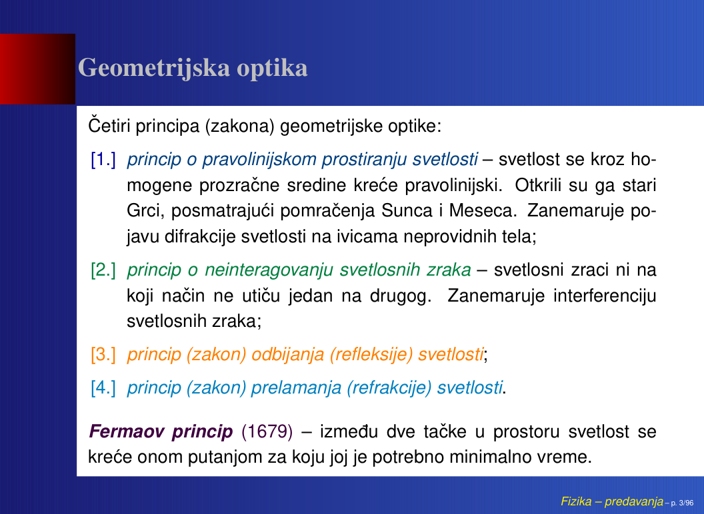
- Princip pravolinijskog prostiranja — kroz homogenu prozračnu sredinu svetlost ide pravo. Zato postoje senke i pomračenja Sunca/Meseca. (Zanemaruje difrakciju na ivicama.)
- Princip neinteragovanja zraka — zraci se ne sudaraju, prolaze jedan kroz drugog bez međusobnog uticaja. (Zanemaruje interferenciju.)
- Zakon odbijanja (refleksije) — odbijanje svetlosti od ogledala.
- Zakon prelamanja (refrakcije) — savijanje svetlosti pri prelasku u drugu sredinu.
💡 Sve ove zakone objedinjuje Fermaov princip (1679): između dve tačke u prostoru svetlost bira onu putanju za koju joj je potrebno najmanje vremena. Ovo je "majka" svih ostalih zakona optike.
L8 · Slajd 4 — Fermaov princip (matematički)

Pratimo mali delić putanje dužine $ds$:
$$dt = \frac{ds}{v_0}$$
Vreme potrebno za taj delić. Podsetnik: $ds$ = mala dužina puta, $v_0$ = brzina svetlosti u toj sredini, $dt$ = vremenski delić.
$$n = \frac{c}{v_0}$$
Apsolutni indeks prelamanja. Podsetnik: $c$ = brzina svetlosti u vakuumu (≈ 300 000 km/s), $v_0$ = brzina u datoj sredini, $n$ = bezdimenzioni broj koji kaže "koliko je puta svetlost sporija u toj sredini". Za vakuum $n=1$, za vodu $n\approx1{,}33$, za staklo $n\approx1{,}5$.
Pošto je $v_0 = c/n$, sledi $dt = \dfrac{n}{c}\,ds$. Sabiranjem (integracijom) svih delića od tačke 1 do tačke 2:
$$\tau = \frac{1}{c}\int_1^2 n\,ds \quad\Rightarrow\quad L \equiv \tau c = \int_1^2 n\,ds = n\,s$$
Podsetnik: $\tau$ = ukupno vreme putovanja, $L$ = optička dužina puta (geometrijski put pomnožen indeksom $n$), $s$ = geometrijski (stvarni) pređeni put, $n$ = indeks prelamanja sredine.
💡 Ključ: svetlost minimizuje optički put $L$, ne geometrijski put $s$. Zato se u gušćoj sredini (veće $n$) "isplati" preći kraći geometrijski put, pa se zrak savija — odatle dolazi zakon prelamanja.
L8 · Slajd 5 — Odbijanje i prelamanje svetlosti

Kad svetlosni zrak naiđe na providnu prepreku (npr. staklo, voda), na površini se deli na dva dela:
- jedan deo se vraća u prvu sredinu → odbijanje (refleksija);
- drugi deo prelazi u drugu sredinu → prelamanje (refrakcija).
Na slici su tri ugla, svi se mere od normale (isprekidana vertikalna linija upravna na površinu):
- $\alpha$ = upadni ugao (između upadnog zraka i normale);
- $\alpha'$ = ugao odbijanja (između odbijenog zraka i normale);
- $\beta$ = ugao prelamanja (između prelomljenog zraka i normale, u drugoj sredini).
🎯 Važno: uglovi se uvek mere od normale, nikad od same površine. To je čest izvor grešaka u zadacima.
L8 · Slajd 6 — Koliko se odbija, a koliko prelama?

Koliki deo svetlosti se odbije, a koliki pređe u drugu sredinu, zavisi od: prirode obe sredine, upadnog ugla i talasne dužine svetlosti. Primer za staklo:
- pri upadnom uglu 85° (skoro paralelno površini) odbije se čak 62% svetlosti;
- pri upadnom uglu 0° (pravo odozgo) odbije se jedva 4%.
Zato voda/staklo deluju kao ogledalo kad gledaš "ukoso", a providno kad gledaš pravo na njih.
💡 Sve se objašnjava Hajgensovim principom (1690): svaka tačka koju talas dotakne postaje izvor novog malog sfernog (kružnog) talasa. Ti sekundarni talasići se međusobno poništavaju svuda — osim duž zajedničke obvojnice (omotača), koja čini novi talasni front.
L8 · Slajd 7 — Zakon odbijanja (izvod preko Hajgensa)

Postavka: izvor je dovoljno daleko → talasni front je ravan, a zraci su paralelni.
Na slici ravan talasni front pada na površinu (smeđa linija). Tačka A prva dodirne površinu i odmah počne da emituje sekundarni (kružni) talas. Dok drugi kraj fronta (zrak kroz tačku B) tek stigne do površine, talasić iz A se već raširio za isto toliko. Geometrija (dva podudarna pravougla trougla ABB' i ABA') daje:
$$\alpha = \alpha'$$
Zakon odbijanja: upadni ugao = ugao odbijanja. Podsetnik: $\alpha$ = upadni ugao (od normale), $\alpha'$ = ugao odbijanja (od normale).
L8 · Slajd 8 — Zakon odbijanja (zaključak izvoda)

Nastavak prethodnog slajda. Dok talas pređe od tačke A' (na upadnom frontu) do tačke B (na površini), sekundarni talas iz tačke A stigne do tačke B'. Pošto su trouglovi △ABA' i △ABB' podudarni i pošto su uglovi sa normalnim kracima jednaki → sledi $\alpha = \alpha'$.
Pun iskaz zakona odbijanja: svetlosni zraci se na graničnoj površini odbijaju pod istim uglom pod kojim padaju ($\alpha=\alpha'$). Pri tome upadni zrak, odbojni zrak i normala leže u istoj ravni.
Podsetnik: $\alpha$ = upadni ugao (od normale), $\alpha'$ = ugao odbijanja (od normale).
L8 · Slajd 9 — Odbijanje svetlosti u prirodi (slika)
Fotografija — primer odbijanja svetlosti od sjajne, vatreno obojene površine. Ilustruje kako se svetlost odbija od neravnih/sjajnih površina u prirodi. Nema formule.
L8 · Slajd 10 — Odbijanje svetlosti u prirodi (slika)

Fotografija planine koja se ogleda u mirnom jezeru. Mirna voda se ponaša kao ogledalo: zraci sa planine padaju na površinu vode i odbijaju se pod istim uglom (zakon odbijanja $\alpha=\alpha'$) ka oku posmatrača → vidi se obrnut odraz. Nema formule.
L8 · Slajd 11 — Prelamanje (refrakcija) svetlosti

Ako talas predje u sredinu sa drugacijim optickim osobinama, promenice se njegova brzina i talasna duzina, a zbog toga i pravac prostiranja. Na slici svetlost pada na granicu izmedju sredine sa indeksom $n_1$ (gore) i sredine sa indeksom $n_2$ (dole, siva oblast). Upadni ugao $\alpha$ meri se izmedju upadnog (plavog) zraka i normale (isprekidana linija), a prelomni ugao $\beta$ izmedju prelomljenog (crvenog) zraka i normale. Tackaste polukruznice predstavljaju Hajgensove sekundarne talasiće koji nastaju na granici; tacke A, B, C, D pokazuju polozaje talasnog fronta.
Podsetnik: $n_1$ je indeks prelamanja prve (gornje) sredine, bezdimenzioni broj (bez jedinice); $n_2$ je indeks prelamanja druge (donje) sredine, bezdimenzioni broj (bez jedinice); $\alpha$ (alfa) je upadni ugao, ugao izmedju upadnog zraka i normale na granicu (stepeni, °); $\beta$ (beta) je prelomni ugao, ugao izmedju prelomljenog zraka i normale (stepeni, °).
L8 · Slajd 12 — Zakon prelamanja svetlosti
Posmatramo ravni talas koji se u sredini iz koje dolazi krece brzinom $v_1$, a u sredini u koju se prelama brzinom $v_2$. Tacka A na granicnoj povrsini, pogodjena talasom, emituje u drugu sredinu sekundarne talase. Za vreme $t$ dok talasni front iz tacke D stigne do granicne povrsine, sekundarni talasi iz tacke A stizu do tacke B. S obzirom da je:
$$ \overline{DC} = \overline{AC}\,\sin\alpha = v_1\,t \,, \qquad \overline{AB} = \overline{AC}\,\sin\beta = v_2\,t \,, $$
Podsetnik: $\overline{DC}$, $\overline{AB}$ i $\overline{AC}$ su duzine odgovarajucih duzi u geometrijskoj konstrukciji (m); $\alpha$ (alfa) je upadni ugao izmedju upadnog zraka i normale na granicnu povrsinu (stepeni ili rad); $\beta$ (beta) je prelomni ugao izmedju prelomljenog zraka i normale (stepeni ili rad); $v_1$ je brzina svetlosti u prvoj sredini (m/s); $v_2$ je brzina svetlosti u drugoj sredini (m/s); $t$ je vreme za koje front predje navedeni put (s).
Dobija se zakon prelamanja svetlosnih zraka (Snelijus–Dekartov zakon):
$$ \frac{\sin\alpha}{\sin\beta} = \frac{v_1}{v_2} = \frac{n_2}{n_1} \quad\Rightarrow\quad n_1\,\sin\alpha = n_2\,\sin\beta \,. $$
Podsetnik: $\alpha$ (alfa) je upadni ugao (stepeni ili rad); $\beta$ (beta) je prelomni ugao (stepeni ili rad); $v_1$ je brzina svetlosti u prvoj sredini (m/s); $v_2$ je brzina svetlosti u drugoj sredini (m/s); $n_1$ je indeks prelamanja prve sredine (bezdimenziono); $n_2$ je indeks prelamanja druge sredine (bezdimenziono).
L8 · Slajd 13 — Prelamanje svetlosti

Pri prelamanju svetlosti razlikujemo dva slučaja:
a) Svetlosni zrak iz optički ređe prelazi u optički gušću sredinu ($n_1 < n_2$) — prelama se ka normali, pa je prelomni ugao manji od upadnog ($\beta < \alpha$).
b) Svetlosni zrak iz optički gušće prelazi u optički ređu sredinu ($n_1 > n_2$) — prelama se od normale, pa je prelomni ugao veći od upadnog ($\beta > \alpha$).
$$ n_1 < n_2 \;\Rightarrow\; \beta < \alpha \qquad\qquad n_1 > n_2 \;\Rightarrow\; \beta > \alpha $$
Podsetnik: $n_1$ je indeks prelamanja prve (upadne) sredine iz koje zrak dolazi (bezdimenziona veličina); $n_2$ je indeks prelamanja druge sredine u koju zrak prelazi (bezdimenziona veličina); $\alpha$ (alfa) je upadni ugao, ugao između upadnog zraka i normale na graničnu površinu (° ili rad); $\beta$ (beta) je prelomni ugao, ugao između prelomljenog zraka i normale (° ili rad); $\Rightarrow$ znači „iz čega sledi".
L8 · Slajd 14 — Prelamanje svetlosti

Slajd uvodi prelamanje (refrakciju) svetlosti. Na obe fotografije u casi sa vodom stoji slamka, koja na granici vode i vazduha izgleda kao da je prelomljena. Slamka u stvarnosti nije savijena; menja se pravac svetlosnih zraka koji prelaze iz vode u vazduh. Prelamanje nastaje zato sto svetlost na granici dve prozirne sredine menja brzinu i skrece sa prvobitnog pravca.
L8 · Slajd 15 — Prelamanje svetlosti u prirodi

Slajd ima naslov „Prelamanje svetlosti u prirodi“ i fotografiju zalaska Sunca nad morem, sa siluetom broda. Slika je ilustracija pojave: svetlost Sunca prolazi kroz slojeve atmosfere razlicite gustine, pa se njen put savija (prelama). Zbog tog prelamanja Sunce vidimo i kada je vec geometrijski ispod horizonta, a njegova slika deluje prividno podignuta.
L8 · Slajd 16 — Prelamanje svetlosti u prirodi

Buduci da gustina atmosfere opada sa povecanjem visine, ona se moze smatrati sastavljenom od nekoliko slojeva. Prelamanjem Suncevih zraka na njihovim granicama, polozaj Sunca se prividno pomera iznad linije horizonta.
Na slici su prikazani: atmosferski slojevi, linija horizonta, stvarni polozaj Sunca (ispod horizonta) i prividni polozaj Sunca (iznad horizonta).
L8 · Slajd 17 — Odbijanje i prelamanje svetlosti – Fermaov princip

Pojave odbijanja i prelamanja svetlosti mogu se objasniti i pomoću Fermaovog principa. Posmatra se svetlosni zrak koji iz izvora S putuje u tačku P nakon refleksije od površine MN. Direktan put od S do P sprečen je zaklonom Z.
Na slici zrak polazi iz S, pada na površinu MN u tački O i odbija se ka P. U tački pada upadni ugao $\alpha$ i odbojni ugao $\alpha'$ mereni su od normale na površinu. Tačka S' je lik izvora dobijen ogledanjem S u odnosu na površinu MN, a isprekidane linije pokazuju produžetke zraka do S'.
$$ \alpha = \alpha' $$
Podsetnik: $\alpha$ (alfa) je upadni ugao, ugao između upadnog zraka i normale na površinu u tački pada O (stepen, °); $\alpha'$ (alfa prim) je odbojni ugao, ugao između odbijenog zraka i normale (stepen, °). Po Fermaovom principu svetlost bira put najkraćeg vremena, pa su ova dva ugla jednaka.
L8 · Slajd 18 — Odbijanje i prelamanje svetlosti – Fermaov princip
Pretpostavlja se da je sredina kroz koju se svetlost prostire homogena, te se minimalni opticki put svetlosnog zraka svodi na minimalno geometrijsko rastojanje od S do P.
Proizvoljni geometrijski predjeni put svetlosnog zraka SO'P jednak je rastojanju S'O'P, gde je S' ogledalski simetricna tacka u odnosu na tacku S. Posto je najkrace rastojanje izmedju tacaka S' i P prava linija koja ih povezuje, najmanju duzinu puta ima zrak reflektovan od povrsine MN u tacki O, za koju je upadni ugao $\alpha$ jednak odbojnom uglu $\alpha'$.
Pomeranjem tacke O' levo ili desno u odnosu na O duzina puta proporcionalno raste, sto znaci da u ovom slucaju postoji samo jedan minimum (refleksija u tacki O). Time je dokazan zakon odbijanja (refleksije) svetlosnog zraka.
$$ \alpha = \alpha' $$
Podsetnik: $\alpha$ (alfa) je upadni ugao, ugao izmedju upadnog zraka i normale na povrsinu MN u tacki odbijanja O (stepeni, °); $\alpha'$ (alfa prim) je odbojni ugao, ugao izmedju odbijenog zraka i iste normale (stepeni, °).
L8 · Slajd 19 — Odbijanje i prelamanje svetlosti – Fermaov princip

Posmatramo svetlosni zrak koji pada na graničnu površinu između dve optički različite sredine sa indeksima prelamanja $n_1$ i $n_2$, pri čemu je $n_1 < n_2$.
Zrak polazi iz tačke $S$ u prvoj sredini, pada na granicu pod uglom $\alpha$ i prelama se ka tački $P$ u drugoj sredini pod uglom $\beta$. Na crtežu su označeni: put $s_1$ u prvoj sredini i put $s_2$ u drugoj sredini, normalna rastojanja $a_1$ i $a_2$ tačaka $S$ i $P$ od granice, horizontalno rastojanje $x$ od podnožja normale iz $S$ do tačke prelamanja, i ukupno horizontalno rastojanje $b$.
$$ n_1 < n_2 $$
Podsetnik: $n_1$ je indeks prelamanja prve (gornje) sredine (bezdimenziona veličina, bez jedinice); $n_2$ je indeks prelamanja druge (donje) sredine (bezdimenziono); ovde je donja sredina optički gušća. $S$ je izvorna tačka iz koje polazi zrak; $P$ je krajnja tačka u drugoj sredini; $\alpha$ (alfa) je upadni ugao, meren od normale na granicu (° ili rad); $\beta$ (beta) je prelomni ugao, meren od normale (° ili rad); $s_1$ je dužina puta zraka u prvoj sredini (m); $s_2$ je dužina puta zraka u drugoj sredini (m); $a_1$ je normalno rastojanje tačke $S$ od granice (m); $a_2$ je normalno rastojanje tačke $P$ od granice (m); $x$ je rastojanje duž granice od podnožja normale iz $S$ do tačke prelamanja (m); $b$ je ukupno rastojanje duž granice između podnožja normala iz $S$ i iz $P$ (m).
L8 · Slajd 20 — Odbijanje i prelamanje svetlosti – Fermaov princip
Da bi Fermaov princip bio zadovoljen, treba pronaci tacku na granicnoj povrsini u kojoj zrak prelazi iz jedne sredine u drugu, tako da njegov opticki predjeni put $L$ od tacke $S$ (svetlosnog izvora) do tacke $P$ bude minimalan. Sa slike se vidi da je:
$$ L = n_1\,s_1 + n_2\,s_2 = n_1\sqrt{a_1^2 + x^2} + n_2\sqrt{a_2^2 + (b-x)^2} $$
Podsetnik: $L$ je opticki predjeni put (m); $n_1$ i $n_2$ su indeksi prelamanja prve i druge sredine (bezdimenzioni); $s_1$ i $s_2$ su predjeni putevi zraka u prvoj i drugoj sredini (m); $a_1$ je normalno rastojanje izvora $S$ od granicne povrsine (m); $a_2$ je normalno rastojanje tacke $P$ od granicne povrsine (m); $b$ je rastojanje izmedju podnozja te dve normale duz granice (m); $x$ je rastojanje od podnozja prve normale do tacke prelaza na granici (m).
Uslov minimuma zahteva da je:
$$ \frac{dL}{dx} = \frac{n_1\,x}{\sqrt{a_1^2 + x^2}} - \frac{n_2\,(b-x)}{\sqrt{a_2^2 + (b-x)^2}} = n_1\,\frac{x}{s_1} - n_2\,\frac{b-x}{s_2} = 0 $$
Podsetnik: $\dfrac{dL}{dx}$ je izvod optickog puta po $x$ (bezdimenziono); $n_1$, $n_2$ su indeksi prelamanja (bezdimenzioni); $x$ i $b-x$ su rastojanja duz granicne povrsine (m); $a_1$, $a_2$ su normalna rastojanja izvora i prijemnika od granice (m); $s_1$, $s_2$ su putevi zraka u sredinama (m).
A posto je:
$$ \frac{x}{s_1} = \sin\alpha \qquad \text{i} \qquad \frac{b-x}{s_2} = \sin\beta $$
Podsetnik: $\alpha$ (alfa) je upadni ugao (stepen ili rad); $\beta$ (beta) je ugao prelamanja (stepen ili rad); $x$, $b-x$ su rastojanja duz granice (m); $s_1$, $s_2$ su putevi zraka (m).
Odavde direktno sledi Snelijus–Dekartov zakon:
$$ n_1\,\sin\alpha = n_2\,\sin\beta $$
Podsetnik: $n_1$ je indeks prelamanja prve sredine (bezdimenzioni); $n_2$ je indeks prelamanja druge sredine (bezdimenzioni); $\alpha$ (alfa) je upadni ugao (stepen ili rad); $\beta$ (beta) je ugao prelamanja (stepen ili rad).
L8 · Slajd 21 — Totalna refleksija

Kada svetlost iz optički gušće prelazi u optički ređu sredinu, prelomni ugao $\beta$ je veći od upadnog ugla $\alpha$. Povećavanjem $\alpha$ povećava se i $\beta$. Za $\alpha \equiv \alpha_g$ sledi $\beta = 90^\circ$ i prelomljeni zrak „klizi” po graničnoj površini. Na slici je levo prelamanje, a desno totalna refleksija: za upadni ugao veći od graničnog ($\alpha' > \alpha_g$) zrak se potpuno reflektuje nazad u gušću sredinu.
$$ \alpha \equiv \alpha_g \;\Rightarrow\; \beta = 90^\circ $$
$$ \alpha' > \alpha_g \;\Rightarrow\; \text{totalna refleksija} $$
Podsetnik: $\alpha$ (alfa) je upadni ugao u optički gušćoj sredini, meren od normale na graničnu površinu (stepeni, °); $\beta$ (beta) je prelomni ugao u optički ređoj sredini, takođe meren od normale (°); $\alpha_g$ je granični ugao, upadni ugao pri kome prelomni ugao dostiže 90° (°); $\alpha'$ (alfa prim) je upadni ugao veći od graničnog (°); $n_1$ je indeks prelamanja optički gušće (donje) sredine (bezdimenziona veličina); $n_2$ je indeks prelamanja optički ređe (gornje) sredine (bezdimenziona veličina).
💡 Za bilo koji ugao $\alpha' > \alpha_g$ nastaje totalna refleksija.
L8 · Slajd 22 — Totalna refleksija

Granicni ugao totalne refleksije $\alpha_g$ moze se izracunati iz zakona prelamanja, uzimajuci da je $\beta = 90^\circ$. Iz zakona prelamanja sledi izraz za $\sin\alpha_g$, a odatle i sam granicni ugao. Na dnu slajda su data dva primera totalne refleksije.
$$ n_1 \sin\alpha_g = n_2 \sin 90^\circ \quad\Rightarrow\quad \sin\alpha_g = \frac{n_2}{n_1} \quad\Rightarrow\quad \alpha_g = \arcsin\frac{n_2}{n_1} $$
Podsetnik: $\alpha_g$ (alfa-g) je granicni ugao totalne refleksije, upadni ugao za koji je ugao prelamanja $90^\circ$ (stepeni, °); $\beta$ (beta) je ugao prelamanja, ovde uzet kao $90^\circ$ (stepeni, °); $n_1$ je indeks prelamanja sredine iz koje svetlost dolazi (bezdimenziona velicina); $n_2$ je indeks prelamanja sredine u koju svetlost prelazi (bezdimenziona velicina); $\sin$ je sinus, a $\arcsin$ je njemu inverzna funkcija (arkus sinus), koja iz vrednosti sinusa vraca ugao.
L8 · Slajd 23 — Totalna refleksija – primer

Zadatak sa slajda: svetlosni zrak dolazi iz vazduha ($n_0 = 1$) i pada na površinu alkohola pod uglom $\alpha = 25^\circ$. Treba odrediti prelomni ugao $\beta$, znajući da je granični ugao totalne refleksije za ove dve površine $\alpha_g = 47{,}33^\circ$.
Levi crtež prikazuje prelamanje: zrak iz sredine $n_0$ pada pod uglom $\alpha$ i prelazi u gušću sredinu $n$ pod uglom $\beta$. Desni crtež prikazuje granični slučaj: pri upadnom uglu $\alpha_g$ prelomljeni zrak ide tačno pod $90^\circ$ duž granice.
Zakon prelamanja svetlosnog zraka koji iz vazduha ($n_0 = 1$) prelazi u nepoznatu tečnost indeksa prelamanja $n$:
$$ n_0 \sin\alpha = n \sin\beta \quad\Rightarrow\quad \sin\beta = \frac{\sin\alpha}{n} $$
Podsetnik: $n_0$ je indeks prelamanja prve sredine (vazduha), ovde $n_0 = 1$ (bezdimenziono); $n$ je indeks prelamanja tečnosti u koju zrak prelazi (bezdimenziono); $\alpha$ (alfa) je upadni ugao, meren od normale na površinu, ovde $25^\circ$ (stepeni, °); $\beta$ (beta) je prelomni ugao, meren od normale (stepeni, °); $\alpha_g$ (alfa-ge) je granični ugao totalne refleksije, upadni ugao pri kom je prelomljeni zrak pod $90^\circ$, ovde $47{,}33^\circ$ (stepeni, °).
L8 · Slajd 24 — Totalna refleksija – primer
Sa druge strane, granicni ugao totalne refleksije za ove dve povrsine odredjen je relacijom $n\sin\alpha_g = n_0\sin 90^\circ = 1$. Odatle se dobija indeks prelamanja $n=1,36$. Te je konacno izracunat ugao prelamanja $\beta$.
$$ n\,\sin\alpha_g = n_0\,\sin 90^\circ = 1 \;\Rightarrow\; n = \frac{1}{\sin\alpha_g} = \frac{1}{\sin\left(47,33^\circ\right)} = 1,36 $$
Podsetnik: $n$ je indeks prelamanja sredine koji se trazi (bezdimenziona velicina); $\alpha_g$ (alfa-g) je granicni ugao totalne refleksije, ovde $47,33^\circ$ (stepeni, °); $n_0$ je indeks prelamanja okolne sredine, ovde $n_0=1$ (bezdimenziono); $90^\circ$ je ugao prelamanja u granicnom slucaju (stepeni, °).
$$ \beta = \arcsin\!\left(\frac{\sin\alpha}{n}\right) = \arcsin\!\left(\frac{\sin 25^\circ}{1,36}\right) = 18,1^\circ $$
Podsetnik: $\beta$ (beta) je ugao prelamanja koji se trazi (stepeni, °); $\alpha$ (alfa) je upadni ugao, ovde $25^\circ$ (stepeni, °); $n$ je indeks prelamanja, ovde $1,36$ (bezdimenziono); $\arcsin$ je arkus sinus, inverzna funkcija sinusu.
L8 · Slajd 25 — Primena totalne refleksije

Prizme koje ulaze u sastav optičkih instrumenata.
Kada svetlosni zrak pada normalno na neku od strana prizme, prolazi kroz nju bez promene pravca, a potom pada na neku drugu stranu od koje se totalno reflektuje. Pri tome se: (a) promeni pravac, (b) promeni smer, ili (c) zrak biva pomeren.
Na slici (a) prikazana je prizma sa uglovima od 45°, kod koje se zrak unutra totalno odbije od kose strane.
L8 · Slajd 26 — Primena totalne refleksije

Optička vlakna. Šezdesetih godina dvadesetog veka dvojica inženjera elektronike, Čarls Kao i Džordž Hokam, izučavali su problem transparentnosti stakla i razmatrali mogućnost da se stakla dostupna u to vreme oslobode nečistoća, pogotovo čestica gvožđa. Ova istraživanja bila su podstaknuta procenom da bi sa mnogo čistijim staklima bilo moguće konstruisati providne (optičke) kablove kod kojih bi slabljenje signala sa $1000\,dB/km$ bilo smanjeno na $20\,dB/km$. Kao i Hokam su takođe demonstrirali da bi jedan jedini stakleni kabel mogao podržavati telekomunikacioni saobraćaj ekvivalentan sa $200\,000$ istovremenih telefonskih razgovora.
Šema na dnu slajda prikazuje svetlosni zrak koji se kroz optičko vlakno prostire cik-cak putanjom, uzastopno se totalno odbijajući od zidova vlakna.
$$ 1000\,dB/km \;\longrightarrow\; 20\,dB/km $$
Podsetnik: $dB$ (decibel) je jedinica kojom se izražava slabljenje signala, tj. koliko se snaga signala smanji duž puta; $km$ je kilometar, jedinica za dužinu ($1\,km = 1000\,m$); $dB/km$ je slabljenje po jednom pređenom kilometru — što je broj manji, to vlakno bolje provodi svetlost; strelica označava smanjenje gubitka sa $1000$ na $20$.
L8 · Slajd 27 — Primena totalne refleksije
Princip rada optičkog kabla zasnovan je na višestrukoj totalnoj refleksiji. U optičkim kablovima su svetlosni zraci „zarobljeni" ovim efektom i ne mogu da izađu izvan kabla, što omogućava prenošenje signala na velike daljine. Gubitak energije u optičkom kablu nastaje uglavnom usled refleksije od krajeva vlakna i apsorpcije u materijalu od kojeg je ono načinjeno.
Pored toga što je napravila pravu revoluciju u telekomunikacijama, svetlovodna optika je našla veoma važnu primenu i u medicinskoj dijagnostici za direktno posmatranje nekih unutrašnjih šupljina nedostupnih ljudskom oku (endoskopija). Uređaj koji se u tu svrhu koristi konstruisan je od oko 200 000 elastičnih staklenih vlakana spojenih u optički kabel. Svako vlakno endoskopa nosi sliku jednog detalja objekta, što znači da se cela slika dobija u vidu mozaika. Veća gustina vlakana daje oštriju sliku posmatrane površine.
L8 · Slajd 28 — Totalna refleksija

Na slajdu je podvodna fotografija plivaca u bazenu. Povrsina vode, posmatrana odozdo, deluje kao ogledalo i preslikava plivace. To je posledica totalne (potpune) refleksije: kada svetlost iz gusce sredine (voda) pada na granicu sa redjom sredinom (vazduh) pod uglom vecim od granicnog ugla, ona se u celosti odbija nazad u vodu i ne prelazi u vazduh.
$$ \sin\theta_g = \frac{n_2}{n_1} $$
Podsetnik: $\theta_g$ (theta) je granicni ugao totalne refleksije, mereno od normale na granicu (stepeni, °); $n_1$ je indeks prelamanja gusce sredine iz koje svetlost dolazi, npr. vode (bezdimenziono); $n_2$ je indeks prelamanja redje sredine, npr. vazduha (bezdimenziono); uslov za totalnu refleksiju je $n_1 > n_2$ i upadni ugao veci od $\theta_g$.
L8 · Slajd 29 — Totalna refleksija u prirodi

Slajd nosi naslov „Totalna refleksija u prirodi" i prikazuje fotografiju morske kornjace ispod povrsine vode. Uz fotografiju se vidi kako gornja granica voda-vazduh deluje srebrnasto, kao ogledalo. To je primer totalne (potpune) unutrasnje refleksije: kada svetlost ide iz opticki gusce sredine (voda) ka opticki redjoj (vazduh) i upadni ugao predje granicni ugao, svetlost se u potpunosti odbija nazad u vodu.
$$ \sin \alpha_g = \frac{n_2}{n_1} $$
Podsetnik: $\alpha_g$ (alfa-g) je granicni ugao, najveci upadni ugao pri kome svetlost jos izlazi iz gusce sredine (stepeni, °); $n_1$ je indeks prelamanja gusce sredine iz koje svetlost dolazi, npr. vode (bezdimenziono); $n_2$ je indeks prelamanja redje sredine ka kojoj svetlost ide, npr. vazduha (bezdimenziono); za upadne uglove vece od $\alpha_g$ nastaje totalna refleksija.
L8 · Slajd 30 — Optički instrumenti – Tanka sočiva

Sočiva su optički instrumenti načinjeni od providnih materijala (staklo, kvarc, kristal itd.), ograničeni sa dve sferne ili jednom sfernom i jednom ravnom površinom.
Prema konstrukciji sočiva mogu biti:
- a) bikonveksna
- b) plankonveksna
- c) konkavkonveksna
- d) bikonkavna
- e) plankonkavna
- f) konvekskonkavna
Po svojim optičkim svojstvima sočiva se dele na sabirna i rasipna.
L8 · Slajd 31 — Vrste sočiva

Sabirna sočiva imaju svojstvo da smanjuju prelomni ugao svetlosnih zraka koji kroz njih prolaze (a), dok se pri prolasku svetlosnih zraka kroz rasipna sočiva odgovarajući ugao povećava (b).
Tačke $F$ i $F'$ predstavljaju žiže (fokuse) sabirnog, odnosno rasipnog sočiva. Ako svetlosni zraci padaju na sočivo paralelno optičkoj osi, žiža sočiva dobija se u preseku prelomljenih svetlosnih zraka (sabirno sočivo), ili u preseku geometrijskih produžetaka realnih prelomljenih zraka (rasipno sočivo).
Podsetnik: $O$ i $O'$ su tačke kojima je obeležena optička osa sočiva (geometrijske oznake, bez merne jedinice); $F$ i $F'$ su žiže (fokusi) sočiva — kod sabirnog sočiva presek samih prelomljenih zraka, a kod rasipnog presek njihovih geometrijskih produžetaka (bez merne jedinice, to su tačke na osi); $f$ je žižna daljina, rastojanje od sočiva do žiže (m).
L8 · Slajd 32 — Sabirno sočivo

Karakteristični zraci za bikonveksno (sabirno) sočivo, za slučaj $p > f$. Iz vrha predmeta $P$ polaze tri zraka: (1) zrak paralelan optičkoj osi, koji se posle sočiva lomi kroz žižu $F'$; (2) zrak kroz optički centar $C$, koji prolazi bez skretanja; (3) zrak kroz prednju žižu $F$, koji posle sočiva ide paralelno osi. U njihovom preseku je vrh lika $L$.
Lik je realan, obrnut i: a) umanjen ($L < P$), kada je $p > 2f$; b) iste veličine kao predmet ($L = P$), kada je $p = 2f$; c) uvećan ($L > P$), kada je $f < p < 2f$.
$$ p > 2f \Rightarrow L < P; \qquad p = 2f \Rightarrow L = P; \qquad f < p < 2f \Rightarrow L > P $$
Podsetnik: $p$ je rastojanje predmeta od sočiva (m); $f$ je žižna daljina, rastojanje žiže $F$ od centra $C$ (m); $\ell$ je rastojanje lika od sočiva (m); $P$ je veličina (visina) predmeta (m); $L$ je veličina (visina) lika (m); $F$ i $F'$ su žiže sočiva, $C$ optički centar, $O$–$O'$ optička osa; znak $\Rightarrow$ znači „odakle sledi”.
L8 · Slajd 33 — Lupa

Slajd prikazuje karakteristicne zrake za bikonveksno socivo kada je predmet blize od zarista ($p < f$). Predmet (strelica $P$) postavljen je izmedju zarista $F$ i centra socivа $C$.
Iz vrha predmeta povucena su dva zraka: zrak (1) ide paralelno sa optickom osom pa se prelama kroz zariste $F'$; zrak (2) prolazi kroz centar socivа $C$ ne menjajuci pravac. Posle socivа prelomljeni zraci se razilaze, pa se njihovi produzeci (isprekidane linije) seku sa iste strane gde je predmet i tamo nastaje lik $L$.
Na crtezu su obelezeni $f$ (zizina daljina), $p$ (daljina predmeta) i $\ell$ (daljina lika).
Likovi su imaginarni, uspravni i uvecani — lupa.
$$ p < f $$
Podsetnik: $p$ je daljina predmeta, rastojanje predmeta od socivа (m); $f$ je zizina (zarisna) daljina socivа, rastojanje zarista $F$ od centra socivа (m); $\ell$ je daljina lika, rastojanje dobijenog imaginarnog lika od socivа (m); $F$ i $F'$ su zarista socivа; $C$ je opticki centar socivа; $P$ je predmet, a $L$ dobijeni lik.
L8 · Slajd 34 — Rasipno sočivo

Karakteristični zraci za rasipno sočivo:
(1) zrak paralelan optičkoj osi prelama se naviše tako da njegov produžetak prolazi kroz fokus $F$ ispred sočiva; (2) zrak usmeren ka zadnjem fokusu $F'$ izlazi paralelno osi; (3) zrak kroz centar sočiva $C$ prolazi bez skretanja. Presek produžetaka prelomljenih zraka daje lik $L$ predmeta $P$.
Likovi su imaginarni, uspravni i umanjeni nezavisno od položaja predmeta, a nalaze se sa iste strane na kojoj je i predmet i to između fokusa i centra sočiva.
$$ p,\qquad f,\qquad \ell $$
Podsetnik: $p$ je rastojanje predmeta $P$ od sočiva (m); $f$ je žižna (fokalna) daljina, rastojanje od centra $C$ do fokusa $F$ (m); $\ell$ je rastojanje lika $L$ od sočiva (m); $F$ i $F'$ su fokusi (žiže) sočiva; $C$ je centar (optički centar) sočiva; $P$ je predmet, $L$ je lik; $O$ i $O'$ označavaju optičku osu.
L8 · Slajd 35 — Jednačina sfernih sočiva
Sferna sočiva opisuju se jednačinom:
$$ j\,[\mathrm{D}] = \frac{1}{f} = \frac{n_2 - n_1}{n_1}\left(\frac{1}{R_1} + \frac{1}{R_2}\right) $$
Podsetnik: $j$ je optička jačina sočiva, izražena u dioptrijama ako je $f$ izraženo u metrima (D = 1/m); $f$ je žižna daljina sočiva (m); $n_2$ je indeks prelamanja materijala od koga je sočivo napravljeno (bezdimenziono); $n_1$ je indeks prelamanja sredine u kojoj se sočivo nalazi (bezdimenziono); $R_1$ i $R_2$ su poluprečnici zakrivljenosti sfernih površina sočiva (m).
Poluprečnike zakrivljenosti $R_1$ i $R_2$ treba uzeti sa pozitivnim predznakom za ispupčene (konveksne) površine, a sa negativnim za izdubljene (konkavne) površine. Ukoliko je jedna od površina sočiva ravna, odgovarajući poluprečnik zakrivljenosti teži beskonačnosti.
L8 · Slajd 36 — Konvencija o predznacima

Slajd prikazuje konvenciju o predznacima poluprecnika krivina sociva $R_1$ i $R_2$, kao i odgovarajuci predznak zarisne daljine $f$. Svetlost dolazi sleva nadesno, a strelice pokazuju ka centrima krivina. Dato je sest karakteristicnih slucajeva:
Bikonveksno socivo: $R_1>0$, $R_2>0$, $f>0$.
Bikonkavno socivo: $R_1<0$, $R_2<0$, $f<0$.
Ravno-ispupceno (plankonveksno): $R_1>0$, $R_2\to\infty$, $f>0$.
Ravno-udubljeno (plankonkavno): $R_1<0$, $R_2\to\infty$, $f<0$.
Meniskus, $|R_1|<|R_2|$: $R_1>0$, $R_2<0$, $f>0$.
Meniskus, $|R_1|>|R_2|$: $R_1>0$, $R_2<0$, $f<0$.
$$ R_1,\quad R_2,\quad f $$
Podsetnik: $R_1$ je poluprecnik krivine prve (prednje) sferne povrsi sociva (m); $R_2$ je poluprecnik krivine druge (zadnje) sferne povrsi sociva (m); $f$ je zarisna daljina sociva (m); $|R_1|$ i $|R_2|$ su apsolutne vrednosti poluprecnika, tj. njihove brojne velicine bez predznaka (m); oznaka $R\to\infty$ ("tezi beskonacnosti") znaci da je povrs ravna, a $\infty$ je simbol za beskonacnost.
L8 · Slajd 37 — Jednačine sabirnih i rasipnih sočiva
Žižna daljina sočiva $f$, udaljenost predmeta $p$ i udaljenost lika $\ell$ od sočiva povezani su jednačinom sočiva. Ona važi i za sabirna i za rasipna sočiva, s tim da su kod ovih drugih $f$ i $\ell$ imaginarne veličine i uzimaju se sa negativnim predznakom. Na kraju je dato i linearno uvećanje sfernih sočiva.
$$ \frac{1}{f} = \frac{1}{p} + \frac{1}{\ell} $$
Podsetnik: $f$ je žižna daljina sočiva, rastojanje od sočiva do žiže (m); $p$ je udaljenost predmeta od sočiva (m); $\ell$ je udaljenost lika od sočiva (m).
Za rasipna sočiva, gde su $f$ i $\ell$ imaginarne i negativne, jednačina glasi:
$$ -\frac{1}{f} = \frac{1}{p} - \frac{1}{\ell} $$
Podsetnik: $f$ je žižna daljina sočiva (kod rasipnih sočiva imaginarna, sa negativnim predznakom) (m); $p$ je udaljenost predmeta od sočiva (m); $\ell$ je udaljenost lika od sočiva (kod rasipnih sočiva imaginarna, sa negativnim predznakom) (m).
Linearno uvećanje sfernih sočiva:
$$ u = \frac{L}{P} = \frac{\ell}{p} $$
Podsetnik: $u$ je linearno uvećanje, bezdimenziona veličina (bez jedinice); $L$ je veličina (visina) lika (m); $P$ je veličina (visina) predmeta (m); $\ell$ je udaljenost lika od sočiva (m); $p$ je udaljenost predmeta od sočiva (m).
L8 · Slajd 38 — Talasna optika – Interferencija svetlosti

Za elektromagnetne talase, isto kao i za mehaničke, mora važiti princip superpozicije (slaganja, sabiranja, adicije). On podrazumeva da se dva koherentna talasa u određenim tačkama prostora pojačavaju (slučaj a), a u drugim potiru (slučaj b).
Dva talasa će se pojačati ako su u fazi, tj. ako maksimum jednog i maksimum drugog istovremeno dođu u istu tačku prostora. Poništavaće se ako maksimum jednog koincidira sa minimumom drugog. Na slici su sa $x_1$ i $x_2$ označeni pređeni putevi dvaju talasa do tačke u kojoj se sreću.
$$ y = y_1 + y_2 $$
Podsetnik: $y$ je rezultujući pomeraj (talasna veličina) u datoj tački koji nastaje slaganjem oba talasa (jedinica zavisi od veličine, npr. za jačinu električnog polja V/m); $y_1$ je doprinos prvog talasa u toj tački (ista jedinica); $y_2$ je doprinos drugog talasa u toj tački (ista jedinica); $x_1$ je put koji pređe prvi talas do posmatrane tačke (m); $x_2$ je put koji pređe drugi talas do iste tačke (m).
💡 Koherentni talasi se pojačavaju kada su u fazi (maksimum na maksimum), a poništavaju kada se maksimum jednog poklopi sa minimumom drugog.
L8 · Slajd 39 — Talasna optika – Interferencija svetlosti
Matematicki, do maksimalnog pojacanja pri interferenciji dolazi kada su talasi u fazi ($\Delta\varphi = 2\pi k$), a njihova putna razlika $\delta$ jednaka je celobrojnom umnosku talasnih duzina:
$$ \delta = k\,\lambda \,; \qquad k = 0, \pm 1, \pm 2, \dots $$
Podsetnik: $\delta$ (delta) je putna razlika dva talasa, razlika preðenih puteva do tacke susreta (m); $k$ je celobrojni red interferencije, ceo broj (bez jedinice); $\lambda$ (lambda) je talasna duzina svetlosti (m); $\Delta\varphi$ (delta fi) je fazna razlika talasa (rad).
Dok se maksimalno slabljenje zraka javlja kada su talasi u protivfazi ($\Delta\varphi = (2k+1)\pi$), a putna razlika im je jednaka neparnom umnosku polovina talasnih duzina svetlosti:
$$ \delta = (2k+1)\,\frac{\lambda}{2} \,; \qquad k = 0, \pm 1, \pm 2, \dots $$
Podsetnik: $\delta$ (delta) je putna razlika dva talasa (m); $k$ je ceo broj, red minimuma (bez jedinice); $(2k+1)$ daje neparan umnozak (bez jedinice); $\lambda$ (lambda) je talasna duzina svetlosti (m); $\frac{\lambda}{2}$ je polovina talasne duzine (m); $\Delta\varphi$ (delta fi) je fazna razlika talasa (rad).
Pri tome talasi moraju biti koherentni, odnosno moraju imati istu frekvenciju i vremenski nepromenljivu faznu razliku.
L8 · Slajd 40 — Jangov eksperiment

Tomas Jang (1801) propustio je Sunčevu svetlost kroz uski otvor, a zatim je pomoću zastora sa dve bliske pukotine taj zrak podelio na dva koherentna talasa. Na mestima u prostoru gde su se ta dva talasa preklapala, Jang je registrovao maksimume i minimume svetlosti.
Slika prikazuje postavku s leva na desno: izvor svetlosti, prvi zastor sa jednim uskim otvorom, drugi zastor sa dve bliske pukotine i zaklon na kojem se vide naizmenične svetle i tamne pruge.
L8 · Slajd 41 — Jangov eksperiment

Šematski prikaz Jangovog eksperimenta: svetlosni izvor osvetljava uzani prorez koji — prema Hajgensovom principu — postaje izvor sekundarnih talasa. Ovi talasi padaju na drugi zaklon sa dva otvora $S_1$ i $S_2$, koji takođe postaju izvori novih talasa. Iza pregrade se ti talasi ukrštaju i stvaraju interferentnu sliku u vidu svetlih i tamnih pruga.
Na šemi je $d$ rastojanje između otvora, $D$ rastojanje do zaklona $Z$, a $M$ posmatrana tačka na zaklonu udaljena $y$ od ose. Putevi zraka do tačke $M$ su $x_1$ i $x_2$, a njihova razlika je putna razlika $\delta$.
$$ \delta = x_2 - x_1 \simeq d\sin\alpha $$
Podsetnik: $\delta$ (delta) je putna razlika, razlika dužina puteva dva zraka do tačke $M$ (m); $x_1$ je dužina puta zraka iz otvora $S_1$ do tačke $M$ (m); $x_2$ je dužina puta zraka iz otvora $S_2$ do tačke $M$ (m); $d$ je rastojanje između otvora $S_1$ i $S_2$ (m); $\alpha$ (alfa) je ugao pod kojim se tačka $M$ vidi u odnosu na osu sistema (rad ili °); $\sin\alpha$ je sinus tog ugla (bez jedinice).
L8 · Slajd 42 — Jangov eksperiment
Ako su talasi u fazi: $\Delta\varphi = 2\pi k$, $(k = 0, \pm1, \pm2, ...)$, tada je razlika puteva ova dva svetlosna zraka jednaka celom broju talasnih duzina. Tacka M je tada maksimalno osvetljena, tj. nastao je interferentni maksimum.
$$ \delta = d \sin\alpha = k\,\lambda $$
Podsetnik: $\delta$ (delta) je razlika puteva dva svetlosna zraka do tacke M (m); $d$ je rastojanje izmedju dva proreza (m); $\alpha$ (alfa) je ugao pod kojim se posmatra tacka M (rad ili °); $\sin\alpha$ je sinus tog ugla (bez jedinice); $k$ je red interferencije, ceo broj $0, \pm1, \pm2, ...$ (bez jedinice); $\lambda$ (lambda) je talasna duzina svetlosti (m); $\Delta\varphi$ je fazna razlika talasa (rad); $\pi$ (pi) je broj $\approx 3{,}14$ (bez jedinice).
Ako su talasi u protivfazi: $\Delta\varphi = (2k+1)\pi$, $(k = 0, \pm1, \pm2, ...)$, tada je razlika puteva svetlosnih zraka jednaka neparnom broju polovina talasnih duzina. Tacka M je tada tamna, odnosno nastao je interferentni minimum.
$$ \delta = d \sin\alpha = (2k+1)\,\frac{\lambda}{2} $$
Podsetnik: $\delta$ (delta) je razlika puteva dva svetlosna zraka do tacke M (m); $d$ je rastojanje izmedju dva proreza (m); $\alpha$ (alfa) je ugao pod kojim se posmatra tacka M (rad ili °); $k$ je ceo broj $0, \pm1, \pm2, ...$ (bez jedinice); $(2k+1)$ daje neparan broj; $\lambda$ (lambda) je talasna duzina svetlosti (m); $\frac{\lambda}{2}$ je polovina talasne duzine (m).
L8 · Slajd 43 — Jangov eksperiment
Iz uslova $D \gg d$ sledi da je $\sin\alpha \approx \mathrm{tg}\,\alpha = y/D$. Kada se ovaj izraz uvrsti u uslov za maksimalno pojacanje svetlosnih zraka pri interferenciji, dobija se rastojanje $k$-tog maksimuma od centralnog maksimuma:
$$ y_k = k\,\frac{\lambda D}{d} $$
Podsetnik: $y_k$ je rastojanje $k$-tog maksimuma od centralnog maksimuma na zastoru (m); $k$ je red maksimuma, ceo broj $k = 0, 1, 2, \dots$ (bez jedinice); $\lambda$ (lambda) je talasna duzina svetlosti (m); $D$ je rastojanje od proreza do zastora (m); $d$ je rastojanje izmedju dva proreza (m).
Rastojanje $k$-tog minimuma od centralnog maksimuma dato je sa:
$$ y_k = (2k+1)\,\frac{\lambda D}{2d} $$
Podsetnik: $y_k$ je rastojanje $k$-tog minimuma od centralnog maksimuma (m); $(2k+1)$ daje neparne brojeve, gde je $k$ ceo broj $k = 0, 1, 2, \dots$ (bez jedinice); $\lambda$ (lambda) je talasna duzina svetlosti (m); $D$ je rastojanje od proreza do zastora (m); $d$ je rastojanje izmedju dva proreza (m).
Polozaji interferentnih maksimuma zavise od talasne duzine svetlosti. U snopu bele svetlosti samo ce centralni maksimum ($k = 0$) biti beo, dok ce svi ostali maksimumi biti obojeni. Za veliko $k$ pruge raznih boja se preklapaju i daju ravnomernu osvetljenost, pa je broj interferentnih pruga koje je moguce registrovati u beloj svetlosti ogranicen.
L8 · Slajd 44 — Geometrijska i optička razlika puteva
Fazna razlika svetlosnih zraka koji stupaju u interferenciju zavisi od razlike njihovih pređenih puteva. Ako se zraci kreću kroz vakuum (ili vazduh, $n_0 = 1{,}000293$), njihova talasna dužina jednaka je $\lambda$. Ako se kreću kroz sredinu indeksa prelamanja $n \neq 1$, njihova talasna dužina jednaka je $\lambda/n$.
Ukoliko talas prevali rastojanje $s$ (geometrijski pređeni put) u sredini indeksa prelamanja $n$, tada se na tom rastojanju nalazi onoliko talasnih dužina koliko bi sadržala dužina puta $\delta = n \cdot s$ (optički pređeni put) u vakuumu (ili vazduhu). (Videti „Fermaov princip"!)
$$ \delta = n\, s $$
Podsetnik: $\delta$ (delta) je optički pređeni put (optička dužina puta) (m); $n$ je indeks prelamanja sredine kroz koju talas prolazi (bezdimenziona veličina, čist broj); $s$ je geometrijski pređeni put, stvarno rastojanje koje talas prevali u sredini (m).
L8 · Slajd 45 — Geometrijska i optička razlika puteva

Ako se zrak na svom putu reflektuje od optički gušće sredine (sredine sa većim indeksom prelamanja), faza mu se skokovito menja za $\pi$. Zbog toga njegovom stvarno pređenom putu treba dodati polovinu jedne talasne dužine ($\delta = s + \lambda/2$). Razlog je isti kao kod stojećih talasa.
Na levoj slici jedna talasna dužina $\lambda$ i fazni pomak $\Delta\varphi = \pi$ koji odgovara polovini talasne dužine. Na desnoj slici upadni i odbijeni talas pred ogledalom.
Dakle, optički pređeni put talasa dobija se kada se odgovarajući geometrijski put pomnoži indeksom prelamanja sredine i eventualno doda $\lambda/2$ ako dođe do refleksije talasa od optički gušće sredine.
$$ \delta = s + \frac{\lambda}{2} $$
Podsetnik: $\delta$ (delta) je optička razlika puta, korigovani pređeni put posle refleksije od gušće sredine (m); $s$ je stvarni (geometrijski) pređeni put zraka (m); $\lambda$ (lambda) je talasna dužina svetlosti (m); $\Delta\varphi = \pi$ (pi) je skok faze pri refleksiji od optički gušće sredine (rad).
L8 · Slajd 46 — Interferencija na tankom prozirnom sloju

Posmatramo tanak prozracan planparalelni sloj debljine $d$ i indeksa prelamanja $n$ na koji pod uglom $\alpha$ pada ravan koherentan svetlosni snop.
Zrak $Z_1$ se prelama na gornjoj povrsini sloja (tacka A), ulazi u sloj i odbija od njegove donje granicne povrsine (tacka B), pa se nakon jos jednog prelamanja na gornjoj povrsini (tacka C) vraca u sredinu iz koje je dosao. Tu stupa u interferenciju sa zrakom $Z_2$ koji se reflektovao od gornje povrsine sloja.
Na slici: okolna sredina ima indeks $n_0 \approx 1$, a sloj $n > 1$; upadni i odbijeni ugao su $\alpha$, a ugao prelamanja u sloju je $\beta$. Tacka D je pomocna tacka na zraku $Z_2$.
Podsetnik: $d$ je debljina sloja, rastojanje izmedju gornje i donje povrsine (m); $n$ je indeks prelamanja sloja, bezdimenziona velicina, ovde $n > 1$ (sloj opticki gusci od okoline); $n_0$ je indeks prelamanja okolne sredine, bezdimenzion, $n_0 \approx 1$ (vazduh); $\alpha$ (alfa) je upadni ugao, jednak uglu odbijanja (stepen ili rad); $\beta$ (beta) je ugao prelamanja u sloju (stepen ili rad); $Z_1$ je zrak koji ulazi u sloj i izlazi posle refleksije od donje povrsine; $Z_2$ je zrak reflektovan od gornje povrsine sloja; A, B, C, D su karakteristicne tacke putanje zrakova.
L8 · Slajd 47 — Interferencija na tankom prozirnom sloju
Opticka razlika puteva zraka $Z_1$ i $Z_2$ jednaka je:
$$ \delta = n \cdot (\overline{AB} + \overline{BC}) - \left(\overline{DC} + \frac{\lambda}{2}\right) . $$
Podsetnik: $\delta$ (delta) je opticka razlika puteva dva zraka (m); $n$ je indeks prelamanja sloja, bezdimenziona velicina; $\overline{AB}$ i $\overline{BC}$ su geometrijske duzine dela puta zraka kroz sloj (m); $\overline{DC}$ je geometrijska duzina dela puta drugog zraka u vazduhu (m); $\lambda$ (lambda) je talasna duzina svetlosti (m), a $\frac{\lambda}{2}$ je dodatna razlika usled promene faze pri odbijanju (m).
Na osnovu geometrijskih odnosa sa slike sledi:
$$ \cos\beta = \frac{d}{\overline{AB}} \;\Rightarrow\; \overline{AB} = \overline{BC} = \frac{d}{\cos\beta} , $$
$$ \operatorname{tg}\beta = \frac{\overline{AC}}{2d}, \quad \sin\alpha = \frac{\overline{DC}}{\overline{AC}} \;\Rightarrow\; \overline{DC} = 2d\sin\alpha\,\operatorname{tg}\beta . $$
Podsetnik: $d$ je debljina tankog sloja (m); $\beta$ (beta) je ugao prelamanja u sloju (stepeni ili radijani); $\alpha$ (alfa) je upadni ugao zraka (stepeni ili radijani); $\overline{AC}$ je vodoravno rastojanje izmedju izlaznih tacaka na povrsini sloja (m); $\overline{AB}$, $\overline{BC}$, $\overline{DC}$ su duzine delova puta zraka (m).
te je:
$$ \delta = \frac{2nd}{\cos\beta} - 2d\sin\alpha\,\operatorname{tg}\beta - \frac{\lambda}{2} . $$
Podsetnik: $\delta$ (delta) je opticka razlika puteva (m); $n$ je indeks prelamanja sloja, bezdimenziono; $d$ je debljina sloja (m); $\beta$ (beta) je ugao prelamanja u sloju; $\alpha$ (alfa) je upadni ugao; $\lambda$ (lambda) je talasna duzina svetlosti (m).
L8 · Slajd 48 — Interferencija na tankom prozirnom sloju
Koriscenjem zakona prelamanja $n\sin\alpha=\sin\beta$ (jer je $n_0\approx 1$) i trigonometrijske transformacione formule $\sin^2\beta+\cos^2\beta=1$, sledi izraz za putnu razliku:
$$ \delta = 2d\sqrt{n^2-\sin^2\alpha} - \frac{\lambda}{2} $$
Podsetnik: $\delta$ (delta) je optička putna razlika dva interferirajuća zraka (m); $d$ je debljina tankog sloja (m); $n$ je indeks prelamanja sloja (bezdimenziono); $\alpha$ (alfa) je upadni ugao (rad ili °); $\beta$ (beta) je prelomni ugao (rad ili °); $\lambda$ (lambda) je talasna duzina svetlosti (m).
Primena uslova za maksimalno pojacanje svetlosnih zraka ($\delta=k\lambda$) daje:
$$ (2k+1)\,\frac{\lambda}{2} = 2d\sqrt{n^2-\sin^2\alpha} \qquad (k=0,1,2,3,\dots) $$
Podsetnik: $k$ je red interferencije, ceo broj (bezdimenziono); $\lambda$ (lambda) je talasna duzina svetlosti (m); $d$ je debljina sloja (m); $n$ je indeks prelamanja (bezdimenziono); $\alpha$ (alfa) je upadni ugao (rad ili °).
Primena uslova za maksimalno slabljenje svetlosnih zraka ($\delta=(2k+1)\frac{\lambda}{2}$) daje:
$$ k\,\lambda = 2d\sqrt{n^2-\sin^2\alpha} \qquad (k=1,2,3,\dots) $$
Podsetnik: $k$ je red interferencije, ceo broj (bezdimenziono); $\lambda$ (lambda) je talasna duzina svetlosti (m); $d$ je debljina sloja (m); $n$ je indeks prelamanja (bezdimenziono); $\alpha$ (alfa) je upadni ugao (rad ili °).
Ova interferencija se moze zapaziti kada je debljina sloja uporediva sa talasnom duzinom svetlosti — kod mehura od sapunice, na tankim slojevima razlivenog ulja itd. Primena: antirefleksioni slojevi.
L8 · Slajd 49 — Interferencija na tankom prozirnom sloju

Posmatra se slucaj kada svetlosni snop pada normalno na sloj ($\alpha = 0^\circ$).
Sloj debljine $d$ ima indeks prelamanja $n > 1$, a okolna sredina sa obe strane $n_0 \approx 1$. Upadni snop se delom odbija sa gornje, a delom sa donje granicne povrsine sloja, pa ova dva snopa interferiraju.
Interferencija se moze posmatrati u reflektovanoj ili u propustenoj svetlosti.
$$ \alpha = 0^\circ, \qquad n_0 \approx 1, \qquad n > 1 $$
Podsetnik: $\alpha$ (alfa) je upadni ugao snopa u odnosu na normalu na sloj (stepen, °); ovde je $\alpha = 0^\circ$, tj. snop pada normalno. $n_0$ je indeks prelamanja okolne sredine, priblizno kao kod vazduha, $n_0 \approx 1$ (bezdimenziona velicina). $n$ je indeks prelamanja tankog sloja, veci od jedinice, $n > 1$ (bezdimenziona velicina). $d$ je debljina tankog sloja (m).
L8 · Slajd 50 — Interferencija na tankom prozirnom sloju – primer

Zadatak sa slajda: na ravnu opnu od sapunice ($n = 1{,}35$), koja se nalazi u vazduhu, pada u pravcu normale snop polihromatske (bele) svetlosti. Trazi se najmanja debljina opne $d$ pri kojoj ce se u reflektovanom snopu pojacati svetlost talasne duzine $\lambda = 620\ \mathrm{nm}$.
Na slici je presek opne indeksa prelamanja $n = 1{,}35$ debljine $d$, sa vazduhom ($n_0 \approx 1$) iznad i ispod. Svetlost pada normalno odozgo; jedan reflektovani zrak (plavi) potice sa gornje povrsine, a drugi (crveni) sa donje povrsine opne.
$$ n = 1{,}35, \qquad n_0 \approx 1, \qquad \lambda = 620\ \mathrm{nm}, \qquad d = ? $$
Podsetnik: $n$ je indeks prelamanja opne od sapunice, bezdimenziona velicina, ovde $1{,}35$; $n_0$ je indeks prelamanja okolnog vazduha, bezdimenziono, $\approx 1$; $\lambda$ (lambda) je talasna duzina svetlosti u vazduhu, ovde $620\ \mathrm{nm} = 620 \cdot 10^{-9}\ \mathrm{m}$ (m); $d$ je trazena (najmanja) debljina opne (m).
L8 · Slajd 51 — Interferencija na tankom prozirnom sloju – primer
Optička razlika pređenih puteva zraka reflektovanih od gornje i donje granične površine opne od sapunice jednaka je $\delta = 2nd - \tfrac{\lambda}{2}$. Uz primenu uslova za maksimalno interferentno pojačanje ovih zraka, $2nd - \tfrac{\lambda}{2} = k\cdot\lambda$, sledi izraz za debljinu sloja $d$. Minimalna debljina sloja sapunice pri kojoj će se maksimalno pojačati svetlost date talasne dužine dobija se za $k=0$.
$$ \delta = 2nd - \frac{\lambda}{2} \qquad 2nd - \frac{\lambda}{2} = k\cdot\lambda $$
$$ 2nd = k\,\lambda + \frac{\lambda}{2} = 2k\,\frac{\lambda}{2} + \frac{\lambda}{2} \;\Rightarrow\; d = \frac{(2k+1)\,\lambda}{4n} \quad (k=0,1,2,\dots) $$
Podsetnik: $\delta$ (delta) je optička razlika pređenih puteva dva reflektovana zraka (m); $n$ je indeks prelamanja opne od sapunice (bezdimenziono); $d$ je debljina sloja sapunice (m); $\lambda$ (lambda) je talasna dužina svetlosti (m); $k$ je red interferencije, ceo broj $0,1,2,\dots$ (bezdimenziono); $2nd$ je dvostruki optički put kroz sloj (m); član $\tfrac{\lambda}{2}$ je dodatna razlika puta usled faznog skoka pri refleksiji od gušće sredine (m); izraz $(2k+1)$ je neparan broj.
$$ d_{min} = \frac{\lambda}{4n} = \frac{6{,}2\cdot 10^{-7}\,\text{m}}{4\cdot 1{,}35} = 1{,}15\cdot 10^{-7}\,\text{m} = 0{,}115\,\mu\text{m} $$
Podsetnik: $d_{min}$ je minimalna debljina sloja sapunice za maksimalno pojačanje, dobijena za $k=0$ (m); $\lambda = 6{,}2\cdot 10^{-7}$ m je talasna dužina svetlosti (m); $n = 1{,}35$ je indeks prelamanja sapunice (bezdimenziono); $\mu\text{m}$ (mikrometar) je $10^{-6}$ m.
L8 · Slajd 52 — Interferencija na tankom prozirnom sloju – primer

Prethodni primer treba resiti uz izmenu: opna od sapunice (indeks prelamanja $n = 1{,}35$) sada se nalazi na gornjoj povrsini staklene ploce, indeksa prelamanja $n_s = 1{,}8$. Sve ostale vrednosti su iste.
Na slici se vidi tanak sloj sapunice debljine $d$, iznad njega vazduh ($n_0 \approx 1$), a ispod staklo ($n_s = 1{,}8$). Plavi zrak se odbija od gornje povrsine opne, a crveni ulazi u opnu i odbija se od donje povrsine (granica sa staklom); ta dva zraka interferiraju.
Podsetnik: $n$ je indeks prelamanja opne od sapunice, $n = 1{,}35$ (bezdimenziono); $n_s$ je indeks prelamanja stakla, $n_s = 1{,}8$ (bezdimenziono); $n_0$ je indeks prelamanja vazduha, $n_0 \approx 1$ (bezdimenziono); $d$ je debljina tankog sloja opne (m).
L8 · Slajd 53 — Interferencija na tankom prozirnom sloju – primer
U ovom slučaju putna razlika je $\delta = 2nd$, jer se i jedan i drugi zrak reflektuju od optički gušćih sredina (oba dodatka $\lambda/2$ se ponište). Dalje važi uslov $2nd = k\cdot\lambda$, odnosno $d = \dfrac{k\cdot\lambda}{2n}$ za $k = 1, 2, 3 \ldots$. Minimalna debljina sloja sapunice pri kojoj će se maksimalno pojačati svetlost date talasne dužine dobija se za $k = 1$ i iznosi $0{,}23\,\mu m$.
$$ \delta = 2nd + \frac{\lambda}{2} - \frac{\lambda}{2} = 2nd $$
Podsetnik: $\delta$ (delta) je optička putna razlika dva zraka (m); $n$ je indeks prelamanja sloja, bezdimenzioni broj (nema jedinicu); $d$ je debljina sloja (m); $\lambda$ (lambda) je talasna dužina svetlosti (m); članovi $+\lambda/2$ i $-\lambda/2$ su skokovi faze pri refleksiji od optički gušće sredine, po jedan za svaki zrak, i ovde se međusobno poništavaju (m).
$$ 2nd = k \cdot \lambda \qquad\Longrightarrow\qquad d = \frac{k \cdot \lambda}{2n} \quad (k = 1, 2, 3 \ldots) $$
Podsetnik: $n$ je indeks prelamanja sloja (bez jedinice); $d$ je debljina sloja (m); $\lambda$ (lambda) je talasna dužina svetlosti (m); $k$ je red interferencije, prirodan broj (bez jedinice).
$$ d_{min} = \frac{\lambda}{2n} = 0{,}23 \,\mu m $$
Podsetnik: $d_{min}$ je minimalna debljina sloja, dobijena za $k=1$, izražena u mikrometrima ($\mu m$, $1\,\mu m = 10^{-6}$ m); $\lambda$ (lambda) je talasna dužina svetlosti (m); $n$ je indeks prelamanja sloja (bez jedinice).
L8 · Slajd 54 — Interferencija na tankom prozirnom sloju

Slajd uvodi temu interferencije svetlosti na tankom prozirnom sloju. Prikazana je fotografija tankog sloja (ulja ili goriva) na vlaznoj povrsini, koji se preliva u duginim bojama poredjanim u prstenove. Boje nastaju jer se svetlost delom odbija od gornje, a delom od donje granice tankog sloja, pa se ta dva odbijena talasa preklapaju i interferiraju. U zavisnosti od putne razlike, za odredjenu boju nastaje pojacanje, a za druge ponistenje, pa se na razlicito debelim mestima sloja vide razlicite boje.
L8 · Slajd 55 — Interferencija svetlosti u prirodi

Slajd nosi naslov "Interferencija svetlosti u prirodi". Prikazana je fotografija mehura od sapunice, na cijoj se povrsini vide zive, prelivajuce boje. To je primer interferencije svetlosti koja se javlja u prirodi.
L8 · Slajd 56 — Difrakcija svetlosti

Difrakcija je pojava skretanja talasa od pravolinijskog pravca prostiranja pri nailasku na prepreku, odnosno prodiranja svetlosti u oblast geometrijske senke.
Moze se jasno zapaziti samo ako je dimenzija prepreke (otvora) istog reda velicine kao i talasna duzina svetlosti. Objasnjava se pomocu Hajgensovog principa.
Na slici svetlost iz tackastog izvora $S$ pada na otvor izmedju dve prepreke. Isprekidane linije pokazuju pravolinijski pravac prostiranja, a pune kose linije kako se svetlost iza otvora siri i zalazi u oblast geometrijske senke.
$$ d \sim \lambda $$
Podsetnik: $d$ je dimenzija (sirina) prepreke ili otvora (m); $\sim$ znaci „istog reda velicine kao"; $\lambda$ (lambda) je talasna duzina svetlosti (m). Difrakcija je jasno uocljiva tek kada je $d$ uporedivo sa $\lambda$.
L8 · Slajd 57 — Optička rešetka

Optička (difrakciona) rešetka je sistem velikog broja bliskih paralelnih pukotina na jednakom međusobnom rastojanju. Rastojanje između dve susedne pukotine označava se sa $a$. Za zrake koji izlaze pod uglom $\theta$, putna razlika između dva susedna proreza je $\delta = a\,\sin\theta$. Iz toga sledi jednačina difrakcije na optičkoj rešetci.
$$ n\lambda = a\,\sin\theta_n \;, \qquad n = 0,\ \pm 1,\ \pm 2,\dots $$
Podsetnik: $n$ je red difrakcije, ceo broj ($0, \pm 1, \pm 2, \dots$) (bezdimenziono); $\lambda$ (lambda) je talasna dužina svetlosti (m); $a$ je konstanta optičke rešetke, rastojanje između dve susedne pukotine (m); $\theta_n$ (teta) je ugao difrakcije $n$-tog reda (rad ili °); $\delta = a\,\sin\theta$ je putna razlika zraka iz dve susedne pukotine (m).
L8 · Slajd 58 — Difrakcija na optičkoj rešetci

Na optičku rešetku pada paralelan snop svetlosti (strelice nadole). Pukotine su na međusobnom rastojanju $a$ (konstanta rešetke). Na zaklonu, udaljenom za $\ell$, javljaju se maksimumi obeleženi redom $0, 1, 2, \dots, n$, simetrično oko centra. Maksimum reda $n$ vidi se pod uglom $\theta_n$, a od centralnog maksimuma (red 0) pomeren je na zaklonu za $\Delta z_n$. Uslov za maksimum dat je formulom na dnu slajda.
$$ n\lambda = a\,\frac{\Delta z_n}{\sqrt{\ell^2 + \Delta z_n^{\,2}}} \approx \frac{a\,\Delta z_n}{\ell} $$
Podsetnik: $n$ je red maksimuma, ceo broj $0, 1, 2, \dots$ (bezdimenziono); $\lambda$ (lambda) je talasna dužina svetlosti (m); $a$ je konstanta rešetke, rastojanje između dve susedne pukotine (m); $\Delta z_n$ je rastojanje maksimuma reda $n$ od centralnog maksimuma na zaklonu (m); $\ell$ je rastojanje od rešetke do zaklona (m); $\sqrt{\ell^2 + \Delta z_n^{\,2}}$ je dužina zraka od pukotine do maksimuma, hipotenuza (m); $\theta_n$ (theta) je ugao pod kojim se vidi maksimum reda $n$ (rad ili °); $\approx$ je znak približne jednakosti, koji važi kao aproksimacija kada je $\Delta z_n \ll \ell$, pa je $\sqrt{\ell^2 + \Delta z_n^{\,2}} \approx \ell$.
L8 · Slajd 59 — Difrakcija na optičkoj rešetci – primer

Zadatak sa slajda: normalno na difrakcionu rešetku koja ima 100 zareza po milimetru pada snop svetlosti talasne dužine 600 nm. Treba odrediti na kojoj udaljenosti od rešetke je potrebno postaviti zaklon, da bi rastojanje između nultog i četvrtog difrakcionog maksimuma iznosilo 25 cm.
Na slici je rešetka sa prorezima na rastojanju $a$, paralelni zraci padaju upravno na nju, a na zaklonu su difrakcioni maksimumi redova od $-n_{max}$ do $+n_{max}$. Od rešetke do četvrtog maksimuma povučen je zrak pod uglom $\theta_4$; $\ell$ je udaljenost zaklona, a $\Delta z_4$ rastojanje od nultog do četvrtog maksimuma.
$$ a \cdot \sin\theta_n = n \cdot \lambda $$
Podsetnik: $a$ je konstanta rešetke, rastojanje između dva susedna zareza (m); $\theta_n$ je difrakcioni ugao maksimuma reda $n$, meren od pravca upadne svetlosti (stepeni ili radijani); $n$ je red maksimuma, ovde $n=4$ (bezdimenziono); $\lambda$ (lambda) je talasna dužina svetlosti, ovde 600 nm (m).
$$ \tan\theta_4 = \frac{\Delta z_4}{\ell} $$
Podsetnik: $\theta_4$ je difrakcioni ugao četvrtog maksimuma (stepeni ili radijani); $\Delta z_4$ je rastojanje na zaklonu od nultog do četvrtog maksimuma, ovde 25 cm (m); $\ell$ je tražena udaljenost zaklona od rešetke (m).
L8 · Slajd 60 — Difrakcija na optičkoj rešetci – primer
Polazeći od jednačine difrakcije na optičkoj rešetki i uslova $n = 4$, dobija se izraz za $\sin\theta_4$:
$$ n\lambda = a\,\sin\theta_n = \frac{1}{N}\,\sin\theta_n \quad\Rightarrow\quad \sin\theta_4 = 4\lambda N . $$
Podsetnik: $n$ je red difrakcionog maksimuma (bezdimenzioni ceo broj); $\lambda$ (lambda) je talasna dužina svetlosti (m); $a$ je konstanta rešetke, rastojanje između susednih proreza (m); $\theta_n$ (theta) je ugao pod kojim se javlja maksimum $n$-tog reda (rad ili stepen); $N = 1/a$ je broj proreza po jedinici dužine (1/m).
Pošto je sinus ugla geometrijski određen pomerajem $\Delta z_4$ na zaklonu:
$$ \sin\theta_4 = \frac{\Delta z_4}{\sqrt{\ell^2 + \Delta z_4^2}} , $$
Podsetnik: $\Delta z_4$ je rastojanje maksimuma 4. reda od centra na zaklonu (m); $\ell$ je rastojanje od rešetke do zaklona (m).
prethodna jednačina se svodi na:
$$ \frac{\Delta z_4}{\sqrt{\ell^2 + \Delta z_4^2}} = 4\lambda N , $$
Podsetnik: $\Delta z_4$ je položaj maksimuma 4. reda na zaklonu (m); $\ell$ je rastojanje rešetka–zaklon (m); $\lambda$ je talasna dužina (m); $N$ je broj proreza po jedinici dužine (1/m).
a odavde je:
$$ \ell = \Delta z_4 \cdot \sqrt{\frac{1}{(4\lambda N)^2}} \approx 100\,cm = 1\,m . $$
Podsetnik: $\ell$ je rastojanje od rešetke do zaklona (m); $\Delta z_4$ je položaj maksimuma 4. reda na zaklonu (m); $\lambda$ je talasna dužina svetlosti (m); $N$ je broj proreza po jedinici dužine rešetke (1/m).
L8 · Slajd 61 — Difrakcija na optičkoj rešetci – primer
Pitanje: koliki je ukupan broj difrakcionih maksimuma na zaklonu za rešetku iz prethodnog primera ($N = 100\,mm^{-1}$) i svetlost iste talasne dužine ($\lambda = 600\,nm$)?
Polazi se od jednačine difrakcije na optičkoj rešetci:
$$ n\lambda = a \sin\theta_n = \frac{1}{N}\sin\theta_n \qquad (n = 0, \pm 1, \pm 2, \ldots) $$
Podsetnik: $n$ je red maksimuma, ceo broj (bez jedinice); $\lambda$ (lambda) je talasna dužina svetlosti (m); $a$ je konstanta rešetke, rastojanje između susednih proreza (m); $\theta_n$ (theta) je ugao pod kojim se javlja maksimum reda $n$ (rad ili °); $N$ je broj proreza po jedinici dužine, pa je $a = 1/N$ (1/m, ovde 1/mm).
Za $\sin\theta_n = 1$ to daje najveći red maksimuma:
$$ n_{max}\,\lambda = \frac{1}{N} = \frac{1}{10^{5}\,m^{-1}\cdot 6\cdot 10^{-7}\,m} = 16{,}7 \mapsto 16 $$
Podsetnik: $n_{max}$ je najveći mogući red maksimuma, zaokružen naniže na ceo broj (bez jedinice); $\lambda$ je talasna dužina ($6\cdot10^{-7}\,m$); $N$ je broj proreza po metru ($10^{5}\,m^{-1}$).
Te je ukupan broj difrakcionih maksimuma na zaklonu:
$$ m = 2\cdot 16 + 1 = 33 $$
Podsetnik: $m$ je ukupan broj maksimuma na zaklonu (bez jedinice); $16$ je $n_{max}$ na jednoj strani; množilac $2$ uračunava levu i desnu stranu, a $+1$ je centralni maksimum ($n=0$).
L8 · Slajd 62 — Difrakcija svetlosti

Slajd uvodi pojam difrakcije svetlosti. Na fotografiji svetlost prolazi kroz odskrinuta vrata i ne ostaje samo u uskom pravolinijskom snopu, vec se razliva i zalazi pored ivica vrata. Difrakcija je upravo to skretanje (savijanje) svetlosti pri prolasku kroz uzak otvor ili pored ivice prepreke, odnosno odstupanje od pravolinijskog prostiranja.
L8 · Slajd 63 — Difrakcija svetlosti u prirodi

Slajd nosi naslov „Difrakcija svetlosti u prirodi“ i prikazuje fotografiju maglovite šume kroz koju probijaju sunčevi zraci. Vidljivi snopovi nastaju jer se svetlost savija i rasipa oko prepreka (lišća, grana) i na sitnim kapljicama magle. To je primer difrakcije, pojave skretanja svetlosti sa pravolinijske putanje na ivicama prepreka. Na slajdu nema formula; on služi kao ilustracija pojave u prirodi.
L8 · Slajd 64 — Disperzija svetlosti

Kada se složeno (polihromatsko) zračenje propusti kroz prizmu, ono će se razložiti po talasnim dužinama. Na slici svetlost iz izvora pada na prizmu i izlazi razložena u spektar boja. Ova pojava se naziva disperzija svetlosti i uslovljena je interakcijom svetlosnih talasa sa elektronima u atomskim i molekulskim omotačima.
$$ n = n(\lambda) $$
Podsetnik: $n$ je indeks prelamanja sredine (prizme), bezdimenziona veličina (nema jedinicu); $\lambda$ (lambda) je talasna dužina svetlosti (m). Zapis $n(\lambda)$ znači da indeks prelamanja zavisi od talasne dužine, pa se zraci različitih boja prelamaju pod različitim uglovima i svetlost se razlaže po talasnim dužinama.
L8 · Slajd 65 — Disperzija svetlosti
U atomima i molekulima naelektrisane čestice vrše male oscilacije oko ravnotežnih položaja sopstvenom frekvencijom $\omega_0$. Krećući se brzinom $c$, svetlosni talas izaziva prinudne oscilacije čestica sredine, koje počinju da osciluju njegovom frekvencijom $\omega$, pa se oko svake čestice javljaju sekundarni talasi. Amplituda i faza sekundarnih talasa zavise od međusobnog odnosa frekvencija $\omega$ i $\omega_0$. Primarni i sekundarni talasi se slažu u rezultujući talas čija se amplituda i faza razlikuju od prvobitnih, te se talas kroz sredinu širi brzinom $v_0$, različitom od brzine u vakuumu. Ta razlika je veća ukoliko su jače prinudne oscilacije čestica.
Sa promenom brzine svetlosti $v_0$ menja se i apsolutni indeks prelamanja $n$. Na primer, indeks prelamanja vode za crvenu svetlost talasne dužine $\lambda_c = 670{,}8\ \text{nm}$ iznosi $1{,}33$, dok je za ljubičastu svetlost ($\lambda_{lj} = 404{,}7\ \text{nm}$) jednak $1{,}34$.
$$ n = \frac{c}{v_0} $$
Podsetnik: $n$ je apsolutni indeks prelamanja sredine (bezdimenziona veličina); $c$ je brzina svetlosti u vakuumu (m/s); $v_0$ je brzina prostiranja svetlosti u datoj sredini (m/s); $\omega_0$ (omega nula) je sopstvena frekvencija oscilovanja čestica oko ravnotežnog položaja (rad/s); $\omega$ (omega) je frekvencija prinudnih oscilacija koju nameće upadni svetlosni talas (rad/s); $\lambda_c$ je talasna dužina crvene svetlosti (nm = nanometar = $10^{-9}$ m); $\lambda_{lj}$ je talasna dužina ljubičaste svetlosti (nm).
L8 · Slajd 66 — Disperzija svetlosti
Disperzija svetlosti predstavlja zavisnost apsolutnog indeksa prelamanja neke sredine od talasne duzine (odnosno od frekvencije $\nu$ ili kruzne frekvencije $\omega = 2\pi\nu$) svetlosti koja se kroz nju prostire.
$$ n = \frac{c}{v_0} = f(\lambda) $$
Podsetnik: $n$ je apsolutni indeks prelamanja sredine (bezdimenziona velicina); $c$ je brzina svetlosti u vakuumu (m/s); $v_0$ je brzina svetlosti u datoj sredini (m/s); $f(\lambda)$ oznacava da je $n$ funkcija talasne duzine $\lambda$ (lambda), izrazene u metrima (m).
Zavisnost indeksa prelamanja od talasne duzine je obrnuto srazmerna: crvena boja, koja ima najvecu talasnu duzinu u vidljivom delu spektra, najmanje se prelama, dok se ljubicasta, sa najmanjom talasnom duzinom, prelama najvise. Zavisnost od frekvencije, odnosno ugaone frekvencije, je naravno direktna. Graficki se disperzija najcesce prikazuje u obliku zavisnosti kvadrata apsolutnog indeksa prelamanja od kruzne frekvencije svetlosnog talasa, koja se naziva disperziona kriva.
$$ n^2 = f(\omega) $$
Podsetnik: $n^2$ je kvadrat apsolutnog indeksa prelamanja (bezdimenziono); $f(\omega)$ oznacava da je velicina funkcija kruzne frekvencije; $\omega$ (omega) je kruzna (ugaona) frekvencija svetlosnog talasa, $\omega = 2\pi\nu$ (rad/s); $\nu$ (ni) je frekvencija svetlosti (Hz = 1/s).
L8 · Slajd 67 — Disperzija svetlosti

Grafik prikazuje zavisnost kvadrata indeksa prelamanja $n^2$ od kružne frekvencije $\omega$, sa karakterističnim tačkama A, B, C, D. U oblastima AB i CD indeks prelamanja raste sa povećanjem frekvencije — to su oblasti normalne disperzije. U oblasti BC (oko frekvencije $\omega_0$) sa porastom frekvencije indeks prelamanja opada — to je oblast anomalne disperzije.
$$ n^2 = f(\omega) $$
Podsetnik: $n$ je indeks prelamanja sredine (bezdimenziona veličina, bez jedinice); $n^2$ je kvadrat indeksa prelamanja, koji je na grafiku na vertikalnoj osi (bezdimenziono); $\omega$ (omega) je kružna frekvencija svetlosti (rad/s); $\omega_0$ (omega nula) je posebna frekvencija oko koje se javlja anomalna disperzija (rad/s).
L8 · Slajd 68 — Duga

Duga je jedna od najspektakularnijih manifestacija disperzije u prirodi. Bela Sunčeva svetlost pada na površinu kapljice, gde se njene komponente različito prelamaju — ljubičasta najviše, a crvena najmanje. Nakon toga dolazi do totalne refleksije svetlosti od zadnje površine kapljice i do njenog ponovnog prelamanja pri prelasku iz kapljice u vazduh. Duga se vidi samo u određenom pravcu (12° prema horizontu) koji je uslovljen položajem Sunca.
L8 · Slajd 69 — Dvojna duga

Spoljašnja (sekundarna) duga nastaje kada se Sunčev zrak dvostruko prelomi po površini kapljice. Plava svetlost se prelama pod većim uglom, pa je sa spoljašnje strane. Crvena svetlost je sa unutrašnje strane sekundarne duge. Boje su, dakle, poređane obrnuto u odnosu na glavnu dugu.
L8 · Slajd 70 — Bela/monohromatska duga

Povremeno moze da se desi da krace talasne duzine (koje odgovaraju plavoj ili zelenoj boji) budu rasejane, a da dalje rasejanje, izazvano npr. kisom, dovede do stvaranja retke monohromatske, ili pak bele duge.
L8 · Slajd 71 — Vatrena duga

Postoji jedna veoma neobicna pojava koja se naziva „vatrena duga". Nastaje kada Suncevi zraci interaguju sa odredjenom kolicinom ledenih kristala pod uglom od najmanje 58° iznad horizonta. Da bi se ova pojava videla, neophodno je da ledeni kristali budu postavljeni horizontalno, kako bi reflektovali svetlost.
L8 · Slajd 72 — Spektri

Kada složena (bela ili polihromatska) svetlost padne na graničnu površinu između dve optički različite sredine, pojedini monohromatski talasi će se — usled zavisnosti indeksa prelamanja od talasne dužine — prelomiti pod različitim uglovima. Na taj način dolazi do razlaganja složene svetlosti po frekvencijama (talasnim dužinama) na spektar.
Na slici je svetlosni izvor (usijano čvrsto, tečno ili gasovito telo) i oblak hladnog gasa, uz tri vrste spektra:
- Kontinualni spektar — neprekidan niz svih boja.
- Apsorpcioni spektar — kontinualni spektar sa tamnim linijama.
- Emisioni spektar — svetle linije na tamnoj podlozi.
$$ n = n(\lambda) $$
Podsetnik: $n$ je indeks prelamanja sredine (bezdimenziona veličina, nema jedinicu); $\lambda$ (lambda) je talasna dužina svetlosti (m). Zapis $n(\lambda)$ znači da indeks prelamanja zavisi od talasne dužine, tj. od boje svetlosti, pa se boje prelamaju pod različitim uglovima.
L8 · Slajd 73 — Spektri
Usijana čvrsta tela i tečnosti zrače svetlost čiji je spektar kontinualan i sastoji se od neprekidnog niza talasnih dužina u nekom širem spektralnom području. Usijani gasovi sa višeatomskim molekulima daju trakaste spektre, dok su spektri jednoatomskih gasova linijskog tipa.
Prema načinu nastanka, spektri se dele na emisione i apsorpcione. Emisioni spektri nastaju kao posledica zračenja (emisije) svetlosti od usijanih supstanci. Ako bela svetlost (čiji je spektar kontinualan) prolazi kroz neku supstancu, ona će apsorbovati neke od komponenti kontinualnog spektra, usled čega će na tom mestu ostati tamna linija. Takve spektre nazivamo apsorpcionim spektrima.
Položaj tamnih linija apsorpcionog spektra jednog elementa odgovara položaju svetlih linija njegovog emisionog spektra. Ovo definiše Kirhofov zakon apsorpcije: atomi nekog elementa apsorbuju onu svetlost koju oni sami pri istim uslovima emituju.
💡 Atom apsorbuje tačno onu svetlost koju pri istim uslovima i sam emituje.
L8 · Slajd 74 — Disperzija svetlosti u prirodi

Slajd nosi naslov „Disperzija svetlosti u prirodi“ i prikazuje fotografiju sneznog pejzaza sa Suncem oko kojeg se na nebu vide svetlosni prstenovi i lukovi (halo). To je primer disperzije u prirodi: bela Sunceva svetlost prelama se na sitnim ledenim kristalima u atmosferi, a posto se svaka boja prelomi pod malo drugacijim uglom, oko Sunca nastaju obojeni prstenovi. Disperzija postoji jer indeks prelamanja iste sredine zavisi od talasne duzine (boje) svetlosti.
$$ n(\lambda) = \frac{c}{v(\lambda)} $$
Podsetnik: $n(\lambda)$ je indeks prelamanja sredine, ovde napisan kao funkcija boje da se naglasi da zavisi od talasne duzine (bezdimenziona velicina, bez jedinice); $\lambda$ (lambda) je talasna duzina svetlosti (m, u praksi nm); $c$ je brzina svetlosti u vakuumu, oko $3\cdot10^{8}$ (m/s); $v(\lambda)$ je brzina svetlosti date boje u sredini (m/s). Posto je $v$ razlicito za svaku boju, i $n$ je razlicito za svaku boju — to je disperzija.
L8 · Slajd 75 — Disperzija svetlosti u prirodi

Naslovni slajd nove celine: Disperzija svetlosti u prirodi. Prikazana je fotografija zalaska sunca nad morem, sa nebom u nijansama crvene, narandzaste i zute. Slajd najavljuje da cemo posmatrati pojave u prirodi u kojima se bela svetlost razlaze na boje. Na slajdu nema teksta ni formula osim naslova.
L8 · Slajd 76 — Polarizacija svetlosti

Svetlost je elektromagnetni talas sastavljen od dva spregnuta talasa: električnog i magnetnog. Najveći broj eksperimenata dokazuje da se kod svetlosnog talasa ravni oscilovanja neprestano menjaju, pri čemu su amplitude vektora električnog i magnetnog polja iste u svim pravcima — to je nepolarizovani (prirodni) talas.
Svetlost može biti i delimično (eliptično) polarizovana: ravan oscilovanja vektora električnog polja stalno se menja, ali amplituda nije ista u svim pravcima. Kada talas ne menja svoju ravan oscilovanja, tada se kaže da je linearno polarizovan.
$$ \vec{E} \perp \vec{B}, \qquad \vec{E} \perp \vec{v}, \qquad \vec{B} \perp \vec{v} $$
Podsetnik: $\vec{E}$ je vektor jačine električnog polja svetlosnog talasa (V/m); $\vec{B}$ je vektor magnetne indukcije istog talasa (T = tesla); $\vec{v}$ je vektor brzine prostiranja talasa, pravac i smer kretanja svetlosti (m/s); $\perp$ znači "upravno na", pod uglom od $90^\circ$. Električno polje, magnetno polje i pravac prostiranja međusobno su pod pravim uglom.
L8 · Slajd 77 — Polarizacija svetlosti
Dok su pojave interferencije i difrakcije dokazale da je svetlost talas, polarizacija pokazuje da su svetlosni talasi transverzalni.
Neki izvori elektromagnetnih talasa emituju polarizovane talase (npr. televizijska antena), ali svetlost emitovana iz vecine svetlosnih izvora nije polarizovana. Razlog tome lezi u cinjenici da su svetlosni izvori sastavljeni od ogromnog broja atoma koji emituju svetlost prilikom povratka iz pobudjenog u osnovno stanje. Ove emisije su vremenski i prostorno statisticki rasporedjene, usled cega se svetlost nastala na takav nacin sastoji od oscilacija u svim ravnima normalnim na smer sirenja talasa.
Postoji vise nacina da se od nepolarizovane svetlosti dobije polarizovana:
- refleksijom prirodne svetlosti na nekoj providnoj povrsini,
- dvojnim prelamanjem,
- selektivnom apsorpcijom itd.
L8 · Slajd 78 — Polarizacija svetlosti
Svetlost koja nas okružuje često poseduje preferencijalnu ravan oscilovanja, pri čemu se stepen polarizacije i položaj te preferencijalne ravni (pravac polarizacije) uglavnom razlikuju od mesta do mesta. Nažalost, takve varijacije ostaju skoro potpuno skrivene od nas, jer ljudsko oko ne može da razlikuje nepolarizovano i polarizovano svetlo: mi smo, kako se obično kaže, „polarizacijski slepi".
Mnoge životinjske vrste dele ovaj hendikep sa nama, ali ne i sve. Pčele, na primer, mogu da detektuju polarizaciju svetlosti isto onako kao što mi vidimo boje: još 1949. godine Karl fon Friš je pokazao da pčele mogu da odrede položaj Sunca na osnovu polarizacionog obrasca plavog neba i da se na taj način orijentišu. Od tada je pronađeno još mnogo različitih insekata i drugih životinjskih vrsta koje su sposobne da razlikuju polarizovanu od nepolarizovane svetlosti.
L8 · Slajd 79 — Polarizacija svetlosti
Tesko je reci kada je pojava polarizacije otkrivena, ali istorijski izvori sugerisu da su za nju znali i prakticno je koristili narodi sa evropskog severa. Nordijske sage pripovedaju kako su Vikinzi otplovili iz Bergena na obali Norveske do Islanda, nastavili ka Grenlandu i, sva je prilika, stigli do Njufaundlenda na americkom kontinentu. Ovaj plovidbeni poduhvat realizovan je u periodu od 700. do 1100. godine nove ere, pre nego sto je magnetni kompas stigao u Evropu iz Kine.
Sage tvrde da su Vikinzi koristili nesto sto su nazivali „Suncani kamen", koji im je i po oblacnom vremenu pruzao mogucnost za orijentaciju, koristeci — kako se sada smatra — polarizaciju nebeske svetlosti za navigaciju. Iako su ove price uglavnom odbacivane i smatrane izmisljotinama, cinjenica je da su Vikinzi bili upoznati sa islandskim kalcitom, osnovnim materijalom za izradu tzv. Nikolovih prizmi, koje se koriste u optickim uredjajima za dobijanje polarizovane svetlosti.
L8 · Slajd 80 — Polarizacija refleksijom

Kada svetlosni zrak padne na graničnu površinu koja razdvaja dve prozračne sredine, odbijeni i prelomljeni zraci su delimično polarizovani, a njihove ravni polarizacije su međusobno normalne.
Na slici nepolarizovani zrak pada pod uglom $\alpha$ na granicu sredina indeksa $n_1$ i $n_2$ ($n_2 > n_1$); odbijeni zrak ide pod uglom $\alpha$, a prelomljeni pod uglom $\beta$.
U reflektovanoj svetlosti će dominirati oscilacije normalne na upadnu ravan, a u prelomljenoj oscilacije paralelne ovoj ravni. Stepen polarizacije zavisi od ugla pod kojim svetlosni zrak pada na graničnu površinu.
$$ n_2 > n_1 $$
Podsetnik: $n_1$ je indeks prelamanja prve (gornje) sredine iz koje dolazi svetlost — bezdimenziona veličina; $n_2$ je indeks prelamanja druge (donje) sredine — bezdimenziona veličina; $\alpha$ (alfa) je upadni ugao, jednak uglu odbijanja, meren od normale na granicu (stepen °); $\beta$ (beta) je ugao prelamanja, ugao prelomljenog zraka prema normali (stepen °).
L8 · Slajd 81 — Brusterov zakon

Najbolja polarizacija se dobija pri upadnom uglu $\alpha_B$ (Brusterov ugao), za koji odbijeni i prelomljeni zrak zaklapaju ugao od $90^\circ$. Tada je odbijena svetlost potpuno (linearno) polarizovana — to je Brusterov zakon.
Na slici svetlost upada iz sredine indeksa $n_1$ u gusciju sredinu $n_2 > n_1$; upadni ugao je $\alpha_B$, prelomni ugao $\beta$, a odbijeni i prelomljeni zrak su medjusobno pod $90^\circ$.
Brusterov ugao je moguce odrediti primenom zakona prelamanja $\dfrac{\sin\alpha_B}{\sin\beta}=\dfrac{n_2}{n_1}$ uz uslov $\beta = 90^\circ - \alpha_B$, sto daje:
$$ \operatorname{tg}\alpha_B = \frac{n_2}{n_1} \quad\Rightarrow\quad \alpha_B = \operatorname{arctg}\frac{n_2}{n_1} $$
Podsetnik: $\alpha_B$ (alfa B) je Brusterov upadni ugao, ugao izmedju upadnog zraka i normale pri kome je odbijena svetlost potpuno polarizovana (stepeni $^\circ$ ili radijani); $\beta$ (beta) je prelomni ugao, ugao izmedju prelomljenog zraka i normale (stepeni $^\circ$ ili radijani); $n_1$ je indeks prelamanja prve sredine iz koje svetlost dolazi (bezdimenziona velicina, cist broj); $n_2$ je indeks prelamanja druge sredine, pri cemu je $n_2 > n_1$ (bezdimenziona velicina, cist broj); $\operatorname{tg}$ je tangens, a $\operatorname{arctg}$ njegova inverzna funkcija (arkus tangens), obe bez jedinice.
L8 · Slajd 82 — Brusterov zakon – primer

Zadatak: dolazeci iz vazduha ($n_0 \approx 1$), Suncevi zraci padaju na uglacanu kvarcnu stenu ($n = 1{,}54$). Pod kojim uglom prema horizontu treba da se nalazi Sunce da bi reflektovani zraci bili maksimalno polarizovani?
Maksimalna polarizacija svetlosnih zraka pri refleksiji i prelamanju ostvaruje se kada je ispunjen Brusterov zakon, tj. kada za odbijeni i prelomljeni zrak vazi uslov:
$$ \alpha_B + \beta = 90^\circ $$
Podsetnik: $\alpha_B$ (alfa B) je Brusterov upadni ugao, ugao izmedju upadnog zraka i normale na granicnu povrsinu, pri kojem je odbijena svetlost maksimalno polarizovana (stepeni, °); $\beta$ (beta) je ugao prelamanja, ugao izmedju prelomljenog zraka i normale (stepeni, °); $90^\circ$ je vrednost zbira ta dva ugla po Brusterovom zakonu, sto znaci da su odbijeni i prelomljeni zrak medjusobno normalni; $n_0 \approx 1$ je indeks prelamanja vazduha (bezdimenziono); $n = 1{,}54$ je indeks prelamanja kvarca (bezdimenziono).
L8 · Slajd 83 — Brusterov zakon – primer
Na osnovu zakona prelamanja za graničnu površinu vazduh/kvarc i Brusterovog uslova $\alpha_B + \beta = 90^\circ$ izvodi se Brusterov ugao. U zakon prelamanja se ubaci $\beta = 90^\circ - \alpha_B$ i, uz $n_0 \approx 1$, dobija se $\mathrm{tg}\,\alpha_B = n$. Za kvarc je $\alpha_B = \mathrm{arctg}(n) = 57^\circ$. To znači da Sunce treba da se nalazi pod uglom $90^\circ - \alpha_B = 33^\circ$ prema horizontu.
$$ n_0 \sin\alpha_B = n \sin\beta $$
Podsetnik: $n_0$ je indeks prelamanja prve sredine (vazduh), $n_0 \approx 1$ (bezdimenziono); $n$ je indeks prelamanja druge sredine (kvarc) (bezdimenziono); $\alpha_B$ je upadni (Brusterov) ugao, meren od normale (°); $\beta$ je prelomni ugao (°).
$$ \sin\alpha_B = n \sin\beta = n \sin(90^\circ - \alpha_B) = n \cos\alpha_B $$
Podsetnik: korišćen je uslov $\alpha_B + \beta = 90^\circ$, odakle je $\beta = 90^\circ - \alpha_B$; $\alpha_B$ je Brusterov ugao (°); $n$ je indeks prelamanja kvarca (bezdimenziono); $\sin(90^\circ-\alpha_B)=\cos\alpha_B$.
$$ \mathrm{tg}\,\alpha_B = n \qquad \alpha_B = \mathrm{arctg}(n) = 57^\circ $$
Podsetnik: $\mathrm{tg}\,\alpha_B$ je tangens Brusterovog ugla (bezdimenziono); $\alpha_B$ je Brusterov ugao (°); $n$ je indeks prelamanja kvarca (bezdimenziono); $\mathrm{arctg}$ je arkus tangens (inverzna funkcija tangensa).
$$ 90^\circ - \alpha_B = 33^\circ $$
Podsetnik: $90^\circ - \alpha_B$ je ugao pod kojim Sunce treba da se nalazi prema horizontu (°); $\alpha_B$ je Brusterov ugao, ovde $57^\circ$ (°).
L8 · Slajd 84 — Dvojno prelamanje

Mnogi kristali (kvarc, kalcit itd.) imaju svojstvo da se u njima svetlost pri prelamanju razdvaja na dva zraka sa različitim osobinama. Jedan zrak sledi zakon prelamanja — redovan zrak, dok se drugi ponaša drugačije — neredovan zrak. Oba zraka su polarizovana u međusobno normalnim ravnima: redovan zrak je polarizovan tako da se oscilacije vektora električnog polja vrše u ravni normalnoj na glavnu ravan kristala, dok kod neredovnog zraka svetlosni vektor osciluje u glavnoj ravni.
Pri tome se pod glavnom ravni kristala podrazumeva ravan koju čine svetlosni zrak i optička osa kristala.
$$ \vec{E}_r \perp \vec{E}_n $$
Podsetnik: $\vec{E}_r$ je vektor jačine električnog polja redovnog zraka, oscilacije su normalne na glavnu ravan kristala (V/m); $\vec{E}_n$ je vektor jačine električnog polja neredovnog zraka, oscilacije leže u glavnoj ravni (V/m); znak $\perp$ znači da su pravci oscilovanja (ravni polarizacije) ta dva zraka međusobno normalni (pod uglom od $90^\circ$).
L8 · Slajd 85 — Dvojno prelamanje
Pojava dvojnog prelamanja tumaci se specificnim rasporedom atoma u kristalnoj resetci, usled cega kristal ima razlicite opticke osobine u pojedinim pravcima. Takvi kristali nazivaju se anizotropni kristali. Merenjima je utvrdjeno da je brzina redovnog zraka kod njih jednaka u svim pravcima, dok se brzina neredovnog menja u zavisnosti od pravca.
U pravcu kristalografskih osa neredovan zrak ima isti indeks prelamanja kao redovan zrak. U svim ostalim pravcima, koji sa pravcem opticke ose zaklapaju ugao razlicit od nule, ispoljava osobine koje bitno zavise od tog ugla: sto je vece odstupanje pravca neredovnog zraka od opticke ose, utoliko je veca razlika izmedju indeksa prelamanja redovnog i neredovnog zraka. Ovo odstupanje moze podrazumevati kako povecanje tako i smanjenje, u zavisnosti od vrste kristala.
Vizuelno veoma interesantna osobina ovakvih kristala je da predmeti koji se kroz njih posmatraju izgledaju udvojeni.
L8 · Slajd 86 — Polaroidi

Opticki element koji sluzi za dobijanje polarizovane svetlosti naziva se polarizator.
Na crtezu su prikazane dve ploce: polarizator (P) i analizator (A). Nepolarizovana svetlost (zvezdasti simbol) pada na polarizator, koji je pretvara u polarizovanu, a zatim prolazi kroz analizator. Prikazana su tri slucaja, u zavisnosti od ugla θ izmedju njihovih osa:
a) ose paralelne (θ = 0°) — svetlost prolazi kroz analizator;
b) θ = 90° (ukrstene ose) — svetlost ne prolazi;
c) proizvoljan ugao θ — prolazi deo svetlosti.
L8 · Slajd 87 — Polaroidi
Svetlost koja nas okružuje često poseduje preferencijalnu ravan oscilovanja, pri čemu se stepen i pravac polarizacije uglavnom razlikuju od mesta do mesta. Te varijacije ostaju skoro potpuno sakrivene od nas, s obzirom da su ljudi „polarizacijski slepi". Za posmatranje i ispitivanje polarizovane svetlosti koristi se još jedan polaroid, koji se naziva analizator.
Kada na polarizator padne prirodna svetlost, po izlasku iz njega ona će biti polarizovana u pravcu ose polarizatora. Ako se na put takve svetlosti postavi analizator čija je osa paralelna sa osom polarizatora, svetlost će bez promene proći kroz njega. Povećanjem ugla $\theta$ između osa polarizatora i analizatora intenzitet propuštene svetlosti će se smanjivati. Iza analizatora neće biti svetlosti kada je $\theta = 90^\circ$.
Ova zavisnost intenziteta svetlosti propuštene kroz analizator od međusobnog položaja osa između polarizatora i analizatora objašnjava se pomoću Malusovog zakona.
L8 · Slajd 88 — Malusov zakon

Uzmimo da pravci ose polarizatora i analizatora zaklapaju ugao $\theta$ i neka je $\vec{E}_0$ vektor električnog polja po izlasku iz polarizatora. Ako se vektor $\vec{E}_0$ razloži na dve komponente — jednu ($\vec{E}_A$) u pravcu ose analizatora i drugu u normalnom pravcu — kroz analizator može da prođe samo $\vec{E}_A$.
Na slici su prikazane osa P (osa polarizatora, duž koje je vektor $\vec{E}_0$) i osa A (osa analizatora, duž koje je komponenta $\vec{E}_A$). Ugao između osa P i A je $\theta$.
$$ E_A = E_0 \cos\theta $$
Podsetnik: $E_A$ je amplituda komponente električnog polja u pravcu ose analizatora, jedina koja prolazi kroz analizator (V/m — volt po metru); $E_0$ je amplituda vektora električnog polja po izlasku iz polarizatora (V/m); $\theta$ (theta) je ugao koji zaklapaju pravci ose polarizatora i ose analizatora (° ili rad); $\cos\theta$ je kosinus tog ugla (bezdimenziono, vrednost između $-1$ i $1$).
L8 · Slajd 89 — Malusov zakon
Sa slike se vidi da je amplituda koja prolazi kroz analizator $E_A = E_0 \cos\theta$. Posto je intenzitet svetlosti srazmeran kvadratu amplitude, sledi $I \sim E_A^2 = E_0^2 \cos^2\theta$, odnosno $I = I_0 \cos^2\theta$, gde je $I_0$ intenzitet svetlosti koja dolazi u analizator. Ova jednacina predstavlja tzv. Malusov zakon, nazvan prema francuskom armijskom inzenjeru i fizicaru Luju Etjenu Malusu, koji ga je formulisao 1809. godine. Iz Malusovog zakona proizilazi da je intenzitet svetlosti koju propusta analizator proporcionalan kvadratu kosinusa ugla izmedju ravni polarizacije svetlosti i ose analizatora.
$$ E_A = E_0 \, \cos\theta $$
Podsetnik: $E_A$ je amplituda elektricnog polja koja prolazi kroz analizator (V/m); $E_0$ je amplituda elektricnog polja svetlosti koja dolazi u analizator (V/m); $\theta$ (theta) je ugao izmedju ravni polarizacije svetlosti i ose analizatora (rad ili °); $\cos\theta$ je kosinus tog ugla (bez jedinice, projekcija na osu analizatora).
$$ I = I_0 \, \cos^2 \theta $$
Podsetnik: $I$ je intenzitet svetlosti koju propusta analizator (W/m²); $I_0$ je intenzitet svetlosti koja dolazi u analizator (W/m²); $\theta$ (theta) je ugao izmedju ravni polarizacije svetlosti i ose analizatora (rad ili °); $\cos^2\theta$ je kvadrat kosinusa tog ugla (bez jedinice, vrednosti od 0 do 1).
L8 · Slajd 90 — Malusov zakon – primer
Zadatak: pri prolasku kroz analizator, intenzitet svetlosti koju je propustio polarizator smanji se za 62,7%. Treba naci ugao izmedju ravni polarizacije polarizatora i analizatora.
Na osnovu Malusovog zakona:
$$ I = I_0 \cos^2 \theta $$
Podsetnik: $I$ je intenzitet svetlosti posle analizatora (W/m²); $I_0$ je intenzitet svetlosti koja pada na analizator, tj. koju je propustio polarizator (W/m²); $\theta$ (theta) je ugao izmedju ravni polarizacije polarizatora i analizatora (° ili rad); $\cos^2\theta$ je kvadrat kosinusa tog ugla (bezdimenziono).
I uslova zadatka prema kome je $I = I_0 - 0{,}627 \cdot I_0 = 0{,}373\, I_0$, sledi da je $0{,}373\, I_0 = I_0 \cos^2 \theta$, odnosno $\cos\theta = \sqrt{0{,}373}$. I konacno:
$$ \theta = \arccos\!\left(\sqrt{0{,}373}\right) = 52{,}4^\circ $$
Podsetnik: $\theta$ (theta) je trazeni ugao izmedju ravni polarizacije polarizatora i analizatora (°); $\arccos$ je arkus kosinus, inverzna funkcija kosinusa (daje ugao, bezdimenziono); $\sqrt{0{,}373}$ je vrednost $\cos\theta$ dobijena iz odnosa intenziteta (bezdimenziono); $0{,}373$ je preostali deo intenziteta, tj. 37,3% pocetnog (bezdimenziono).
L8 · Slajd 91 - Optička aktivnost: zakretanje ravni polarizacije
Ovaj slajd uvodi jednu izuzetno lepu i pomalo neočekivanu pojavu u talasnoj optici, koja se zove optička aktivnost. Da bismo je razumeli, prvo se setimo gde smo stali u priči o polarizaciji. Svetlost je transverzalni talas, što znači da električno polje treperi upravno na pravac prostiranja. Kada svetlost prođe kroz polarizator, ona postaje linearno polarizovana - njeno električno polje treperi samo u jednoj ravni (ravan polarizacije). Ako iza prvog polarizatora postavimo drugi (koji se naziva analizator) i zarotiramo ga tako da zaklapa ugao $\theta = 90^\circ$ u odnosu na prvi (kao što i slajd ističe), kažemo da su oni ukršteni - kroz njih ne prolazi nikakva svetlost i iza analizatora vidimo potpuni mrak. To je naša polazna scena.
Sada dolazi suština ovog slajda. Postoje materijali koji imaju neobičnu osobinu: kada svetlost prolazi kroz njih, oni zakreću (rotiraju) ravan polarizacije talasa oko pravca prostiranja. Takvi materijali se nazivaju optički aktivne supstance. Tipični primeri sa slajda su kvarc (kristal), vodeni rastvor šećera i nafta. Zamislite da svetlost ulazi u takav materijal sa ravni polarizacije usmerenom vertikalno - dok putuje kroz materijal, ta ravan se postepeno okreće, pa na izlasku može biti zarotirana, recimo, za neki ugao u stranu, kao da nevidljiva ruka u materijalu polako zavrće ravan polarizacije.
Kako to praktično dokazujemo? Vratimo se na ukrštene polarizatore koji su davali mrak. Ako između ukrštenog polarizatora i analizatora umetnemo optički aktivnu supstancu, mrak nestaje - područje iza analizatora ponovo postaje osvetljeno! Razlog je taj što je supstanca zarotirala ravan polarizacije, pa svetlost više nije savršeno blokirana analizatorom. Da bismo opet dobili potpuni mrak (da svetlost iščezne), moramo dodatno zakrenuti analizator za izvestan ugao. Upravo taj dodatni ugao za koji moramo da okrenemo analizator se zove ugao optičkog zakretanja ravni polarizacije i obeležava se sa $\alpha$. On nam direktno govori koliko je supstanca zarotirala ravan polarizacije.
💡 Glavna ideja: optički aktivna supstanca zavrće ravan polarizacije svetlosti za ugao $\alpha$. Taj ugao merimo tako što gledamo za koliko dodatno moramo zarotirati analizator da bi se ponovo dobio mrak. Pošto $\alpha$ zavisi od vrste i količine supstance, ovo je veoma moćan merni alat - npr. njime se meri koncentracija šećera u rastvoru!
Ugao zakretanja $\alpha$ ne dolazi niotkuda - on zavisi od nekoliko jasnih faktora: od vrste supstance (svaki materijal zavrće drugačije), od dužine puta koji svetlost pređe kroz supstancu (što duži put, to veće ukupno zakretanje) i od talasne dužine svetlosti (različite boje se zakreću različito). Slajd zatim daje dve formule, zavisno od toga da li je reč o čvrstom telu ili o rastvoru.
Slučaj 1 - za čvrsta tela (na primer kristal kvarca):
$$ \alpha = K(\lambda,\,T)\cdot \ell $$
Podsetnik: $\alpha$ (grčko slovo "alfa") je ugao optičkog zakretanja ravni polarizacije, izražen u stepenima ($^\circ$) ili u radijanima (rad); to je ono što merimo. $K(\lambda,\,T)$ je specifična rotaciona sposobnost (naziva se i "obrtna moć") supstance - to je broj koji govori koliko snažno baš ta supstanca zavrće ravan polarizacije po jedinici dužine; jedinica mu je tipično $^\circ/\text{mm}$ ili $^\circ/\text{m}$ (stepen po jedinici dužine). U zagradi piše da $K$ zavisi od dve veličine: $\lambda$ (grčko "lambda") je talasna dužina upotrebljene svetlosti, merena u metrima (m) ili nanometrima (nm) - dakle, sposobnost zavisi od boje svetlosti; $T$ je temperatura supstance, izražena u kelvinima (K) ili stepenima Celzijusa ($^\circ$C) - sposobnost se menja sa temperaturom. $\ell$ (kurzivno slovo "el") je dužina puta svetlosti kroz supstancu, to jest debljina sloja kroz koji svetlost prolazi, merena u metrima (m) ili milimetrima (mm). Tačka $\cdot$ označava obično množenje.
Fizički smisao ove formule je vrlo intuitivan: ako udvostručimo debljinu kristala, svetlost ima dvaput duži put i zakretanje $\alpha$ će biti dvaput veće. Konstanta $K$ je samo "lična karta" materijala - karakteristika baš te supstance pri datoj boji svetlosti i datoj temperaturi.
Slučaj 2 - za rastvore (na primer šećer rastvoren u vodi):
$$ \alpha = K(\lambda,\,T)\, c\, \ell $$
Podsetnik: $\alpha$ je opet ugao optičkog zakretanja ravni polarizacije, u stepenima ($^\circ$) ili radijanima (rad). $K(\lambda,\,T)$ je specifična rotaciona sposobnost (obrtna moć) rastvorene aktivne supstance, koja i ovde zavisi od talasne dužine $\lambda$ (boje svetlosti, u m ili nm) i temperature $T$ (u K ili $^\circ$C); jedinica $K$ je sada takva da ceo proizvod $K\,c\,\ell$ ponovo daje ugao - obično $^\circ \cdot \text{cm}^2/\text{g}$ ili slično (često se naziva i specifična rotacija), jer mora da "potroši" i jedinicu koncentracije i jedinicu dužine. $c$ (malo slovo "ce") je koncentracija optički aktivne supstance u rastvoru, to jest koliko ima rastvorene materije po jedinici zapremine; merna jedinica je obično $\text{g}/\text{cm}^3$ ili $\text{kg}/\text{m}^3$ (masa rastvorene supstance po jedinici zapremine rastvora). $\ell$ je ponovo dužina puta svetlosti kroz rastvor (debljina sloja kroz koji svetlost prolazi), u metrima (m) ili centimetrima (cm).
Razlika između dve formule je samo jedan dodatni faktor - koncentracija $c$. To ima savršenog smisla: kod čvrstog tela cela zapremina je od aktivnog materijala, pa koncentracija nije potrebna. Ali kod rastvora, što više aktivne supstance rastvorimo (veće $c$), to više molekula zavrće ravan polarizacije, pa je i ukupno zakretanje $\alpha$ veće. Zakretanje je proporcionalno i koncentraciji i dužini puta istovremeno.
🎯 Primer iz svakodnevnog života: upravo na ovoj formuli radi polarimetar - uređaj koji koriste u prehrambenoj industriji i laboratorijama da izmere koliko šećera ima u nekom rastvoru (na primer u soku, vinu ili u krvi). Pošto su $K$ i dužina cevi $\ell$ poznati, izmerimo ugao $\alpha$ i odmah izračunamo nepoznatu koncentraciju $c$. Zbog ove veze sa šećerom, jedinica zakretanja se istorijski čak zvala "stepen šećera". Slično, kvarcni kristali se koriste u optici baš zbog svoje sposobnosti da kontrolisano rotiraju polarizaciju.
Mali, ali važan detalj: jedne supstance zavrću ravan polarizacije udesno (zovu se desnogire ili dekstrorotatorne), a druge ulevo (levogire ili levorotatorne). Zato se ugao $\alpha$ ponekad piše sa predznakom: pozitivan za zakretanje udesno, negativan ulevo. Sama pojava optičke aktivnosti potiče od asimetrije (helikalnosti) u građi molekula ili kristala, ali za nas je na ovom nivou dovoljno da razumemo vezu između $\alpha$, sposobnosti $K$, koncentracije $c$ i dužine puta $\ell$.
L8 · Slajd 92 — Optička aktivnost

S obzirom na ovu zavisnost ugla zakretanja od koncentracije, moguće je pomoću specijalnih uređaja (polarimetri ili saharimetri) odrediti koncentraciju nekog rastvora.
Na slici je prikazan put svetlosti kroz uređaj: nepolarizovana svetlost iz izvora prolazi kroz polarizator i postaje polarizovana svetlost, zatim kroz optički aktivnu supstancu gde dolazi do specifične rotacije ravni polarizacije, pa kroz analizator do fotodetektora. Grafik gore prikazuje intenzitet svetlosti u fotodetektoru u zavisnosti od ugla analizatora (od −90° do 90°).
L8 · Slajd 93 - Tečni kristali: šta su i kako su otkriveni
Ovaj slajd nema nijednu formulu - on je opisni, "priča" deo predavanja koji uvodi jedan poseban oblik materije: tečne kristale. Pošto se nalazimo u delu predavanja o talasnoj optici i, posebno, o polarizaciji svetlosti, ovo nije slučajno: tečni kristali su praktično najvažnija tehnološka primena polarizacije danas - njihova "magija" stoji iza svakog LCD ekrana (telefon, monitor, kalkulator, sat). Zato hajde da pažljivo razumemo o čemu je reč.
Šta su tečni kristali?
Definicija sa slajda glasi: tečni kristali su organski molekuli sa osobinama tečnosti i kristala. Na prvi pogled to zvuči kao protivrečnost - kako nešto može biti istovremeno i tečno i kristalno? Da bismo to razumeli, prisetimo se tri klasična agregatna stanja i šta ih razlikuje na nivou molekula:
- Čvrsto telo (kristal): molekuli su čvrsto vezani na tačno određena mesta u pravilnoj rešetki. Imaju i uređen položaj (gde se nalaze) i uređenu orijentaciju (kako su okrenuti). Materija je kruta i drži oblik.
- Tečnost (amorfna tečnost): molekuli su slobodni, klize jedni pored drugih, nemaju ni uređen položaj ni uređenu orijentaciju - potpuni "nered". Materija teče i prima oblik suda.
- Tečni kristal: nešto između! Molekuli mogu da klize i da teku (kao u tečnosti), ALI su pri tome i dalje okrenuti u istom pravcu - zadržavaju uređenu orijentaciju (kao u kristalu). To je takozvana intermedijarna (međufaza) između čvrstog kristala i obične tečnosti, baš kako kaže slajd.
Analogija: Zamisli kutiju šibica. Ako su šibice složene u savršenu rešetku, kao naslagane cigle - to je kristal (i mesto i smer su uređeni). Ako ih prospeš i one leže nasumično, svaka u drugom pravcu - to je obična tečnost (potpuni nered). A sada zamisli da plivaju u vodi, slobodno se kreću i klize, ali se sve same od sebe poređaju da gledaju u istom pravcu (kao jato riba koje pliva u istom smeru) - to je tečni kristal: teče kao tečnost, a ipak je uredno usmeren kao kristal.
Upravo zato što su molekuli uredno usmereni, tečni kristal "vidi" svetlost različito u zavisnosti od pravca - to svojstvo zove se anizotropija i o njemu govori i sam slajd. Ta optička anizotropija je ono što omogućava da tečni kristal okreće (rotira) ravan polarizacije svetlosti, i to je srž rada svakog LCD displeja.
Istorija otkrića (priča sa slajda)
Slajd pripoveda jednu lepu naučnu priču, koju vredi razumeti jer odlično ilustruje kako izgleda pravo otkriće:
- Godine 1888. austrijski botaničar Rajnicer (Friedrich Reinitzer), proučavajući kako pojedine supstance utiču na rast biljaka, sintetisao je do tada nepoznato jedinjenje (radilo se o jednom estru holesterola) sa veoma neobičnim osobinama.
- Pri zagrevanju (topljenju), jedinjenje nije prelazilo iz čvrstog u tečno na jedan jasan, "normalan" način. Umesto toga prolazilo je kroz dva stadijuma:
- Najpre se, na nižoj temperaturi, formirala mutna tečnost (zamućen, neproziran rastop).
- Tek pri daljem zagrevanju, na višoj temperaturi, dobijala se obična, bistra (transparentna) tečnost - klasičan providan rastop.
- Ono ključno: ta mutna tečnost ponašala se optički kao jednoosni (anizotropni) kristal - imala je kristalna optička svojstva iako je tekla kao tečnost. Daljim porastom temperature ta anizotropija nestaje i nastaje obična izotropna tečnost (ona koja se ponaša isto u svim pravcima).
Izotropno znači "isto u svim pravcima", a anizotropno "različito u zavisnosti od pravca". Mutna faza je anizotropna (kristalu slično ponašanje svetlosti), a bistra faza je izotropna (kao obična voda).
Logična prva pomisao naučnika bila je sasvim razumna: verovatno je to mešavina dva različita jedinjenja, od kojih se jedno u rastopu i dalje nalazi u kristalnom stanju (otud zamućenost i kristalna svojstva). Međutim, svi pokušaji da se te dve "komponente" hemijski razdvoje nisu dali nikakav rezultat - jednostavno nije bilo dva odvojena jedinjenja koja bi se mogla izdvojiti. Zbog toga je na kraju preovladalo stanovište koje se ispostavilo kao tačno: otkrivena je potpuno nova forma materije - novo agregatno stanje koje danas zovemo tečnokristalna faza.
Suština slajda u jednoj rečenici: tečni kristali su poseban oblik (agregatno stanje) materije koji je istovremeno tečan (molekuli teku i klize) i kristalan (molekuli zadržavaju uređenu orijentaciju, pa su optički anizotropni). Otkrio ih je Rajnicer 1888. godine kada je primetio neobično dvostepeno topljenje sa "mutnom" međufazom, a kasnije je shvaćeno da to nije mešavina dve materije, već sasvim nova forma materije.
Zašto je ovo važno baš u optici? Zato što optička anizotropija tečnih kristala omogućava da se njihovom orijentacijom upravlja pomoću slabog električnog polja, a time se kontroliše prolaz polarizovane svetlosti. To je princip rada LCD ekrana - tehnologija koja direktno koristi sve što učimo o polarizaciji svetlosti. Naredni slajdovi će verovatno detaljnije objasniti kako se ta anizotropija koristi.
L8 · Slajd 94 - Tečni kristali i kako radi LCD ekran

Ovaj slajd je krasan zavrsni "praktican" deo price o polarizaciji svetlosti. Setimo se: na prethodnim slajdovima naucili smo da je svetlost transverzalni talas kod kojeg elektricno polje treperi upravno na pravac prostiranja, i da polarizator propusta samo onu komponentu titranja koja je paralelna njegovoj osi. Sada cemo videti gde to sve zaista koristimo svakog dana - u ekranu telefona, racunara, satova i kalkulatora. To je tehnologija LCD (Liquid Crystal Display, tj. displej sa tecnim kristalima).
Naslov slajda je "Tecni kristali". Tecni kristali su poseban oblik materije koji je negde "izmedju" tecnosti i cvrstog kristala: molekuli su izduzeni (kao male stapice) i mogu da teku kao tecnost, ali se istovremeno spontano poredjaju u uredjene, pravilne formacije bas kao u cvrstom kristalu. Upravo ta dvojaka priroda im daje neobicna opticka svojstva.
Sta tacno tekst slajda kaze
Slajd istice tri kljucne cinjenice o tecnim kristalima:
- Opticki su aktivni - to znaci da imaju sposobnost da zaokrenu (zarotiraju) ravan polarizacije svetlosti koja kroz njih prolazi. Drugim recima, ako kroz tecni kristal pustimo svetlost polarizovanu vertikalno, ona iz kristala moze da izadje polarizovana, recimo, horizontalno - kristal je "zavrnuo" pravac titranja za neki ugao (u tipicnoj celiji za $90^\circ$).
- Spoljasnje elektricno polje gasi tu aktivnost - ako tecni kristal stavimo u elektricno polje (dovedemo napon na elektrode), izduzeni molekuli se "isprave" i poredjaju duz polja, pa vise ne zakrecu ravan polarizacije. Svetlost tada prolazi pravo, bez rotacije.
- Bas se ova "prekidacka" osobina koristi u LCD tehnologiji - jer mozemo naponom da ukljucujemo i iskljucujemo zakretanje svetlosti, tj. da pravimo svetle i tamne tackice (piksele) na ekranu.
💡 Sustina u jednoj recenici: tecni kristal je opticki "prekidac" kojim pomocu napona biramo da li ce svetlost biti zakrenuta i propustena (svetla tackica) ili nezakrenuta i blokirana (tamna tackica). Tako se na ekranu "crta" slika.
Kako slika na slajdu objasnjava rad LCD ekrana
Ilustracija prikazuje "razlozen" (eksplodiran) presek jedne celije LCD ekrana koja ispisuje cifru. Gledajuci od pozadi (gde ulazi svetlost) ka napred (gde mi gledamo), na slici su redom oznaceni ovi slojevi:
- Polarizator (prva plava ploca, oznacena dole) - prvi polarizacioni filter. On od obicne, nepolarizovane svetlosti pozadinskog osvetljenja propusta samo jednu ravan polarizacije, recimo vertikalnu. Posle njega svetlost je linearno polarizovana.
- Pozitivna i negativna elektroda + tecni kristal (sredina) - izmedju dve providne elektrode (na slici oznacene kao "Pozitivna elektroda" i "Negativna elektroda") nalazi se sloj tecnog kristala. Kada na elektrodama nema napona, tecni kristal zakrece ravan polarizacije (najcesce za $90^\circ$). Kada ima napona (znaci $+$ i $-$ na slici), molekuli se isprave i svetlost prolazi bez zakretanja.
- Analizator (druga plava ploca, oznacena gore) - to je drugi polarizator, ali postavljen tako da mu je osa upravna (ukrstena) u odnosu na prvi (ovde horizontalna). On je "sudija" koji odlucuje da li ce svetlost proci do nas.
- Displej (desno) - ono sto na kraju vidimo: osvetljeni i tamni segmenti od kojih se sastoji cifra (na slici crvena cifra "5").
Mali zaokruzeni detalj dole desno na slici prikazuje uvijenu (helikoidalnu, "zavrnutu") strukturu molekula tecnog kristala - bas ta spiralna uredjenost je ono sto postepeno okrece ravan polarizacije dok svetlost putuje kroz sloj. Molekuli se na ulazu poklapaju sa pravcem prvog polarizatora, a kako idemo kroz sloj, polako se zaokrecu i "vode" pravac titranja svetlosti za sobom sve do izlaza.
Logika "svetla / tamna tackica"
Spoji sve zajedno i dobijes elegantan prekidac. Posto su polarizator i analizator ukrsteni ($90^\circ$ jedan u odnosu na drugi), vazi:
| Stanje elektroda | Sta radi tecni kristal | Da li svetlost prolazi kroz analizator? | Rezultat na ekranu |
|---|
| Bez napona (iskljuceno) | Zakrece ravan polarizacije za $90^\circ$ | Da - sad je poravnata sa analizatorom | Svetla tackica |
| Sa naponom (ukljuceno) | Ne zakrece (molekuli ispravljeni) | Ne - blokira je ukrsteni analizator | Tamna tackica |
Ukljucujuci i iskljucujuci napon na hiljadama (kod telefona milionima) sitnih celija-piksela, upravljamo svetlim i tamnim tackama i tako sastavljamo svako slovo, cifru i sliku. Boje se dobijaju dodavanjem sitnih crvenih, zelenih i plavih filtera ispred piksela.
Malo "matematickog" jezika iza ove price
Iako na ovom slajdu nema ispisane jednacine, fizika koja stoji iza propustanja svetlosti kroz ukrstene polarizatore je Malusov zakon (koji smo sreli na ranijim slajdovima o polarizaciji). On nam tacno kaze koliko intenziteta prolazi kada ravan polarizacije dolazece svetlosti zaklapa ugao sa osom analizatora:
$$ I = I_0 \cdot \cos^2\theta $$
Podsetnik: $I$ je intenzitet (jacina) svetlosti koja prodje kroz analizator, izrazen u vatima po kvadratnom metru ($\mathrm{W/m^2}$); $I_0$ je intenzitet svetlosti koja pada na analizator (vec polarizovana, takodje u $\mathrm{W/m^2}$); $\theta$ (grcko slovo "teta") je ugao izmedju ravni polarizacije dolazece svetlosti i ose analizatora, izrazen u stepenima ($^\circ$) ili radijanima ($\mathrm{rad}$); $\cos$ je trigonometrijska funkcija kosinus, a $\cos^2\theta$ znaci $(\cos\theta)^2$, dakle kosinus na kvadrat. Posto je intenzitet uvek nenegativan, a kvadrat kosinusa nikad nije veci od $1$, prolazni intenzitet ide od $0$ (kada je $\theta = 90^\circ$) do $I_0$ (kada je $\theta = 0^\circ$).
Pogledaj kako ova formula savrseno opisuje LCD prekidac:
- Kada tecni kristal zakrene polarizaciju za $90^\circ$ tako da se poklopi sa analizatorom, ugao izmedju svetlosti i analizatora postaje $\theta = 0^\circ$, pa je $\cos^2 0^\circ = 1$ i dobijamo $I = I_0$ - maksimum, svetla tackica.
- Kada napon ispravi kristal i polarizacija ostane upravna na analizator, tada je $\theta = 90^\circ$, pa je $\cos^2 90^\circ = 0$ i dobijamo $I = 0$ - nista ne prolazi, tamna tackica.
🎯 Svakodnevni primer: pomisli na dvoja vrata na uskom hodniku, gde jedna propustaju samo "uspravne" ljude, a druga samo "lezece". Sam covek nikako ne bi prosao oboja. Ali ako u sredini stoji "vrtloznik" (tecni kristal) koji svakog uspravnog coveka polako zarotira da legne, on prodje i kroz druga vrata! Cim "vrtloznik" iskljucimo (dovedemo napon), niko vise ne prolazi. Bas tako tecni kristal odlucuje hoce li tackica na ekranu biti svetla ili tamna. Jos jedan poznat primer: polarizovane suncane naocare - ako pogledas LCD ekran telefona kroz njih i nagnes glavu, ekran moze potpuno da pocrni, jer naocare igraju ulogu "drugog polarizatora".
Napomena: zato kazemo da su tecni kristali "opticki aktivni" - ne zato sto sami sijaju, vec zato sto aktivno menjaju (zaokrecu) ravan polarizacije svetlosti koja kroz njih prolazi. LCD ekran sam ne pravi svetlost; svetlost dolazi iz pozadinskog osvetljenja (back-light), a tecni kristali samo upravljaju time koliko ce te svetlosti proci do naseg oka.
L8 · Slajd 95 - Tečni kristali: kako radi LCD ekran
Ovaj slajd je prelepa kruna cele priče o polarizaciji svetlosti. Sve što smo do sada naučili - šta je polarizator, šta znači da su dva polarizatora "ukrštena", i kako neki materijali mogu da zakreću ravan polarizacije - ovde se spaja u jedan od najvažnijih izuma savremene tehnologije: tečni kristal (LCD - Liquid Crystal Display). To je tačno ono što se nalazi u ekranu tvog telefona, laptopa, kalkulatora i ručnog sata. Hajde da polako razložimo svaku rečenicu sa slajda, jer kada je razumeš, shvatićeš kako "iz ničega" nastaju slova i slike na ekranu.
Pre svega, da se podsetimo dva ključna pojma na koje se ceo opis oslanja:
- Polarizator je providna pločica (filter) koja od obične, nepolarizovane svetlosti propušta samo onu komponentu čije električno polje treperi u jednom određenom pravcu. Zamisli usku rešetku od vertikalnih šipki: kroz nju može da prođe samo talas koji "treperi" vertikalno, a horizontalni se zaustavi. Posle polarizatora svetlost je polarizovana - treperi samo u jednom pravcu.
- Analizator je samo drugi polarizator, postavljen iza prvog, koji nam služi da "proverimo" (analiziramo) u kom pravcu je svetlost polarizovana. Otud i ime - njime analiziramo svetlost.
Kada kažemo da su polarizator i analizator međusobno ukršteni, mislimo da su njihovi pravci propuštanja postavljeni pod uglom od $90^\circ$ jedan u odnosu na drugi. To je presudna ideja, pa je vredi zapisati kao formulu pomoću Malusovog zakona koji smo ranije upoznali:
$$ I = I_0 \cdot \cos^2\theta $$
Podsetnik: $I$ je intenzitet (jačina) svetlosti koja izađe iz analizatora, izražen u vatima po kvadratnom metru ($\mathrm{W/m^2}$); $I_0$ je intenzitet svetlosti koja stigne do analizatora pošto je već prošla kroz prvi polarizator (takođe u $\mathrm{W/m^2}$); $\theta$ (grčko slovo "teta") je ugao između pravca propuštanja polarizatora i pravca propuštanja analizatora, izražen u stepenima ($^\circ$) ili radijanima; $\cos^2\theta$ je kvadrat kosinusa tog ugla (broj bez jedinice, između $0$ i $1$).
Pogledaj šta nam ova formula odmah govori: ako su polarizator i analizator ukršteni, onda je $\theta = 90^\circ$, a pošto je $\cos 90^\circ = 0$, dobijamo:
$$ I = I_0 \cdot \cos^2(90^\circ) = I_0 \cdot 0 = 0 $$
Podsetnik: $I$ je izlazni intenzitet svetlosti ($\mathrm{W/m^2}$); $I_0$ je intenzitet svetlosti pre analizatora ($\mathrm{W/m^2}$); $90^\circ$ je ugao između dva ukrštena polarizatora; $\cos(90^\circ) = 0$ je kosinus tog ugla, pa ceo proizvod postaje nula. Rezultat $I = 0$ znači da kroz par ukrštenih polarizatora ne prolazi nikakva svetlost - sve se apsorbuje.
Eto, to je tačno ono što slajd kaže rečenicom: "kada ne bi bilo tečnog kristala - svetlosni zrak bi se u njemu apsorbovao." Dva ukrštena polarizatora sama bi davala potpuno crn ekran, jer prvi propusti samo vertikalno polarizovanu svetlost, a drugi (okrenut za $90^\circ$) baš tu vertikalnu svetlost potpuno blokira.
🎯 Zamisli dve baštenske ograde od letvica. Prva ograda ima vertikalne letvice sa prorezima, pa kroz nju može da "prođe" samo tanak vertikalan štap. Ako sada drugu ogradu okreneš tako da su joj letvice horizontalne, taj vertikalni štap nikako ne može da prođe kroz horizontalne proreze - zaustavi se. To su ukršteni polarizator i analizator: svetlost koju propusti prvi, drugi potpuno zaustavi.
A sada dolazi genijalni deo - tečni kristal. To je posebno stanje materije: molekuli su uređeni (poređani) kao u kristalu, ali se materijal i dalje ponaša kao tečnost. Te izdužene molekule možemo, pomoću mikroskopskih žljebova na staklu, namestiti tako da formiraju "spiralno zavojito stepenište" koje se od ulaza do izlaza zakrene tačno za $90^\circ$. Kada polarizovana svetlost uđe u takav tečni kristal, njegova spiralna struktura nežno zakreće ravan polarizacije svetlosti prateći to stepenište - i svetlost izlazi zakrenuta za baš onih $90^\circ$ koliko nam treba.
Razmisli šta to znači: svetlost je ušla polarizovana vertikalno, a tečni kristal je usput "zarotira" da na izlazu bude polarizovana horizontalno - upravo onako kako je okrenut analizator. Zato sada svetlost prolazi kroz analizator, stigne do ogledala iza ekrana, reflektuje se i vraća nazad kroz isti put do našeg oka. To je smisao rečenice da "u reflektovanoj svetlosti takav uređaj izgleda svetao" - vidimo svetlu tačku, jer je svetlost uspešno prošla.
💡 Bez napona, tečni kristal zakreće polarizaciju za $90^\circ$ i tako "spasava" svetlost da prođe kroz ukršteni analizator - ta tačka ekrana izgleda svetlo. Tečni kristal radi kao mali "skretničar" koji svetlost zaobilazi oko prepreke koja bi je inače zaustavila.
I konačno, najvažnija osobina koja sve čini upotrebljivim - kontrola pomoću napona. Kada na tečni kristal primenimo spoljašnje električno polje (uključimo mali napon na tu tačku ekrana), izdužene molekule tečnog kristala se poslušno poređaju duž tog polja. Time se uništava ona spiralna struktura "stepeništa" - kristal gubi optičku aktivnost i više ne zakreće ravan polarizacije. Sada svetlost izlazi iz kristala i dalje vertikalno polarizovana, naleti na horizontalno okrenuti analizator i biva potpuno zaustavljena: "zraci ne prolaze kroz polarizator i gledajući u analizator vidimo tamnu podlogu." Ta tačka ekrana izgleda tamno.
💡 Ceo trik LCD-a: napon ne pravi svetlost, već je samo otvara ili zatvara. Bez napona = kristal zakreće polarizaciju = svetlo. Sa naponom = kristal ne zakreće = tamno. Paljenjem i gašenjem napona na milionima sićušnih tačaka (piksela) gradimo slova, brojeve i čitavu sliku na ekranu.
🎯 Tačno tako radi displej tvog digitalnog sata ili kalkulatora. Pozadina je svetla (ogledalo vraća svetlost), a brojevi su tamni. Svaki segment cifre je jedna tačka tečnog kristala: tamo gde uređaj uključi napon, segment pocrni i tako "iscrta" broj. U sat ne ulazi nikakva nova svetlost - samo se upravlja time da li okolna svetlost može da prođe ili ne. Zato LCD ekrani troše tako malo energije: ne moraju da prave svetlost, samo da je propuštaju ili blokiraju.
Napomena: ovo je poslednji slajd predavanja (p. 95/96) i istovremeno praktična primena svega što smo učili o polarizaciji. Sećaš se priče o Malusovom zakonu, polarizatorima i optički aktivnim materijalima koji zakreću ravan polarizacije - tečni kristal spaja sve te ideje u uređaj koji koristiš svaki dan, a da verovatno nikada nisi pomislio da u njemu "radi" čista fizika svetlosti.
L8 · Slajd 96 - Polarizacija u prirodi: zašto je nebo plavo i delimično polarizovano

Ovaj slajd je u suštini jedna velika fotografija vedrog plavog neba iznad pejzaža sa drvećem i livadom, a iznad nje piše naslov "Polarizacija u prirodi". Drugim rečima, ovo nije slajd sa novom formulom, već ilustracija koja treba da te navede na jedno divno pitanje: zašto je nebo plavo i, što je za našu temu još važnije, zašto je svetlost koja dolazi sa neba delimično polarizovana? Hajde da to razložimo strpljivo, jer je ovo jedan od najlepših primera gde se "obična" pojava iz svakodnevnog života objašnjava direktno talasnom prirodom svetlosti.
Da se prvo podsetimo šta polarizacija uopšte znači. Svetlost je transverzalni elektromagnetni talas, što znači da električno polje (i magnetno polje uz njega) titra poprečno na pravac kretanja talasa - kao kad treseš kraj konopca gore-dole dok se talas po konopcu kreće napred. Kod obične, "nepolarizovane" svetlosti (kakvu daje Sunce direktno), ti pravci titranja električnog polja su nasumično raspoređeni u svim mogućim poprečnim smerovima. Kod polarizovane svetlosti, titranje je usmereno pretežno u jednoj ravni. Polarizacija je, dakle, priča o tome u kom pravcu titra električno polje svetlosnog talasa.
A sada glavna ideja ovog slajda: plavo nebo nije izvor svetlosti - ono je rasejana sunčeva svetlost. Sunce šalje belu, nepolarizovanu svetlost. Kada ti zraci uđu u atmosferu, sudaraju se sa molekulima vazduha (uglavnom azota i kiseonika) i sa sitnim česticama. Ti molekuli upijaju malo energije talasa i ponovo je izrače u svim pravcima - ta pojava se zove rasejanje (rasipanje) svetlosti. Deo te preraspodeljene svetlosti stigne i do tvog oka iz pravca neba, i baš zato nebo "svetli" plavo iako Sunce nije tamo gde gledaš.
$$ I_{\text{rasejano}} \propto \frac{1}{\lambda^4} $$
Podsetnik: $I_{\text{rasejano}}$ je intenzitet (jačina) rasejane svetlosti, to jest koliko svetlosti se raspe u stranu (meri se u vatima po kvadratnom metru, $\mathrm{W/m^2}$); $\propto$ je oznaka za "proporcionalno je" (raste/opada zajedno sa); $\lambda$ (grčko slovo lambda) je talasna dužina svetlosti, to jest dužina jednog "talasa" date boje, izražena u metrima ($\mathrm{m}$), a u praksi u nanometrima ($\mathrm{nm}$, gde je $1\ \mathrm{nm} = 10^{-9}\ \mathrm{m}$); $\lambda^4$ znači talasnu dužinu na četvrti stepen, dakle pomnoženu samu sa sobom četiri puta ($\lambda \cdot \lambda \cdot \lambda \cdot \lambda$).
Ova relacija se zove Rejlijev zakon rasejanja i ona je ključ za boju neba. Pogledaj šta nam govori: intenzitet rasejanja je obrnuto srazmeran četvrtom stepenu talasne dužine. Plava svetlost ima kratku talasnu dužinu (oko $450\ \mathrm{nm}$), a crvena dugu (oko $700\ \mathrm{nm}$). Pošto je $\lambda$ u imeniocu i to na četvrti stepen, kraće talasne dužine se raseju mnogo, mnogo jače. Konkretno, odnos $\left(\dfrac{700}{450}\right)^4 \approx 5{,}9$ - dakle plava (kraća talasna dužina) se raseje skoro šest puta jače od crvene. Zato kad gledaš u nebo (a ne pravo u Sunce), do tebe pretežno stiže rasejana plava svetlost. (Inače, baš ista relacija objašnjava i crvene zalaske Sunca: na zalasku svetlost prolazi kroz mnogo deblji sloj atmosfere, plava se usput sva raspe u stranu, a do tebe pravo stigne ono što ostane - crvenkasto.)
🎯 Zamisli da bacaš loptice različite veličine na šumu mladih, tankih stabala. Velike loptice (duga talasna dužina, crvena) lako prolaze kroz šumu skoro pravo. Male loptice (kratka talasna dužina, plava) stalno udaraju u stabla i odbijaju se na sve strane. Ako stojiš sa strane, do tebe će stizati uglavnom male, plave loptice koje su se rasule - baš zato sa strane (sa neba) vidiš plavo. Sunce gledaš "kroz šumu" pa ono izgleda žućkasto-belo jer mu fali rasuta plava.
Ali zašto je ta svetlost sa neba i polarizovana, što je prava poenta ovog slajda u kontekstu naše teme? Evo intuicije. Kada nepolarizovana sunčeva svetlost natera elektrone u molekulu vazduha da titraju, ti elektroni titraju u ravni okomitoj na pravac dolazećeg zraka. Takav titrajući elektron (mali "antenski" oscilator) ne zrači jednako u svim pravcima: najjače zrači bočno (okomito na pravac svog titranja), a uopšte ne zrači duž pravca svog titranja. Posledica je da, ako gledaš deo neba pod uglom od oko $90^\circ$ u odnosu na pravac ka Suncu, do tvog oka stiže svetlost koja može da titra samo u jednoj ravni - dakle jako polarizovana. Ako gledaš nebo blizu Sunca ili tačno suprotno od njega, polarizacija je slaba.
💡 Glavna poruka slajda: svetlost plavog neba je rasejana sunčeva svetlost (Rejlijevo rasejanje, $I \propto 1/\lambda^4$, zato plavo), a usput postaje i delimično polarizovana. Najjača polarizacija je u pojasu neba pod uglom $\approx 90^\circ$ od Sunca. To je polarizacija "u prirodi" - bez ikakvog polaroida, sama atmosfera nam polarizuje svetlost.
🎯 Praktičan primer iz svakodnevice: polarizacione naočare za sunce i fotografski polarizacioni filter. Ako fotograf zarotira polarizacioni filter dok slika vedro nebo pod pravim uglom od Sunca, nebo na slici postane upadljivo tamnije i zasićenije plavo - upravo zato što filter propušta samo jedan pravac titranja, a svetlost neba je delimično polarizovana. Isto tako, neke životinje (npr. pčele) "vide" pravac polarizacije neba i koriste ga kao kompas za orijentaciju čak i kad je Sunce iza oblaka. Priroda, dakle, ne samo da polarizuje svetlost - neka bića je i čitaju.
Napomena: pridev "delimično" je važan - svetlost neba nije savršeno (100%) polarizovana ni pod idealnim uglom, jer višestruko rasejanje i prisustvo oblaka i prašine "mešaju" pravce titranja. Zato kažemo da je rasejana svetlost neba delimično polarizovana, a ne potpuno.
✅ Kraj osmog predavanja — svih 96 slajdova obrađeno (Geometrijska i talasna optika).
DEVETO PREDAVANJE — Osnovi kvantne optike i atomske fizike
L9 · Slajd 1 — Osnovi kvantne optike i atomske fizike
Ovo je naslovni slajd devetog predavanja iz fizike namenjenog studentima smera Energetika, elektronika i telekomunikacije na Fakultetu tehničkih nauka u Novom Sadu. Predavanje pokriva oblast kvantne optike i atomske fizike — deo fizike koji opisuje ponašanje svetlosti i materije na nivou atoma i fotona, gde klasična fizika više ne važi i mora se primeniti kvantna mehanika.
L9 · Slajd 2 — Uvod
Hajgens je u 17. veku predložio da se svetlost ponaša kao talas — slično talasima na površini vode. Talasna slika je bila privlačna jer lepo objašnjava pojave poput difrakcije i interferencije. Međutim, odmah se pojavio ozbiljan problem: klasični talasi ne mogu da postoje bez medijuma kroz koji se prostiru. Voda prenosi talase na vodi, vazduh prenosi zvučne talase — šta onda prenosi svetlosne talase koji dolaze sa Sunca kroz gotovo potpunu prazninu svemira? Da bi se ovaj problem zaobišao, naučnici su uveli pojam etra — hipotetične supstance koja ispunjava čitav svemir i služi kao nosač svetlosnih talasa. Eter je bio nezaobilazan stub talasne teorije, i većina naučnika ga je prihvatila kao stvarnost, iako niko nije mogao da ga detektuje ni izmeri. Talasna teorija svetlosti uz pretpostavku etra dominirala je naukom sve do kraja 19. veka, kada su eksperimenti počeli da otkrivaju njene granice — što je direktno vodilo ka rađanju kvantne optike.
💡 Talasna teorija svetlosti zahtevala je eter kao nosač — koji nikad nije dokazan
L9 · Slajd 3 — Uvod

Svetlost se u klasicnoj fizici opisuje korpuskularnom teorijom — Njutnov model koji tretira svetlost kao skup cestica. Ovaj model uspesno objasnjava neke pojave, poput pravolinijskog sirenja i odbijanja (refleksije). Medjutim, postoji fundamentalan problem: pojave prelamanja (refrakcije) i disperzije — raspadanje bele svetlosti na boje — ne mogu se konzistentno objasniti ako svetlost posmatramo iskljucivo kao skup cestica. Disperzija pokazuje da razlicite "boje" svetlosti putuju razlicitim brzinama kroz sredinu, sto zahteva talasni opis. Upravo ta nesposobnost korpuskularne teorije da objasni ove pojave bila je jedan od prvih signala da je potreban nov, kvantni pristup prirodi svetlosti — sto je i polazna tacka kvantne optike.
💡 Korpuskularna teorija ne moze da objasni prelamanje ni disperziju svetlosti
L9 · Slajd 4 — Uvod
Kljucno pitanje na pocetku kvantne optike jeste: sta je svetlost — cestice ili talas? Njutnova korpuskularna slika bila je dugo dominantna, ali je izgubila primat upravo zbog eksperimenata koji su pokazali pojave koje se mogu objasniti jedino talasnom prirodom. Interferecija, koju je Jang demonstrirao 1803. kroz dva proreza, direktno pokazuje da se svetlosni snopovi mogu medjusobno pojacavati ili ponistavati — to je iskljucivo talasni efekat, cestice ga ne mogu proizvesti. Difrakcija, koju je Frenel teorijski obradio nekoliko godina kasnije, takodje pripada talasnom domenu: svetlost se "savija" oko prepreka i siri iza otvora, sto je opet neobjasnjivo ako svetlost posmatramo kao pucanj cestica pravolinijski. Posto su obe pojave eksperimentalno cvrsto ustanovljene, a Frenel je dao matematicki konzistentno objasnjenje u okviru Hajgensove teorije, zakljucak je bio neminovan: svetlost je talasna pojava. Ovaj stav ostao je dominantan do pocetka 20. veka, kada kvantna fizika ponovo dovodi u pitanje ovu jednoznacnu sliku i uvodi dualitet — ali to je tema predavanja koja slede.
💡 Interferecija i difrakcija su eksperimentalni dokazi talasne prirode svetlosti koji su nadjacali Njutnovu korpuskularnu teoriju
L9 · Slajd 5 — Uvod – dualistička priroda svetlosti
Krajem XIX veka fizika je imala konačan odgovor o prirodi svetlosti — Maksvelove jednačine su nedvosmisleno pokazale da je svetlost elektromagnetni talas, a eksperimenti Herca i Lebedeva to su potvrdili. Međutim, upravo kada se činilo da je pitanje zatvoreno, pojavili su se eksperimentalni rezultati koji se nisu mogli objasniti talasnom slikom. Toplotno (termičko) zračenje, fotoelektrični efekat i Komptonov efekat pokazali su da svetlost u interakciji sa materijom ne ponaša kao talas nego kao da dolazi u diskretnim "paketima" energije. Ovo je bila suštinska protivrečnost: isti fenomen (svetlost) u nekim situacijama se ponaša kao talas (interferencija, difrakcija), a u drugima kao čestica (predaje energiju odjednom, ne postepeno). Rešavanje ove protivrečnosti nateralo je fizičare da napuste klasičnu sliku i razviju kvantnu teoriju svetlosti — što je upravo tema ovog predavanja.
💡 Talasna teorija svetlosti nije bila pogrešna — bila je nepotpuna
L9 · Slajd 6 — Uvod – dualistička priroda svetlosti
Kljucno pitanje kojim pocinje kvantna optika je: sta je zapravo svetlost — talas ili cestica? Klasicna fizika je svetlost opisivala iskljucivo kao elektromagnetni talas, sto je dobro funkcionisalo za pojave poput difrakcije i interferencije. Medutim, eksperimenti s pocetka 20. veka pokazali su da svetlost moze da se ponasa i kao skup diskretnih energetskih paketa — fotona. Foton nije obicna mehanicka cestica: nema masu mirovanja, uvek se krece brzinom svetlosti, i karakterise ga iskljucivo energija koju nosi.
Sustina dualizma je u tome da ni talasni ni cestični opis nije potpun sam za sebe. Koji aspekt ce se ispoljiti zavisi od toga kako posmatramo svetlost — kojim eksperimentom je ispitujemo. U eksperimentima gde merimo prostiranje i interferenciju, svetlost se ponasa kao talas. U eksperimentima gde svetlost predaje energiju materiji (na primer fotoelektricni efekat), ponasa se kao cestica. Dugo se smatralo da ova dva aspekta ne mogu biti vidljiva istovremeno, ali eksperiment iz 2015. godine je po prvi put zabeležio oba ponasanja u isto vreme na istom snopu svetlosti, sto je direktna eksperimentalna potvrda dualizma.
💡 Svetlost je i talas i cestica — koji se aspekt vidi zavisi od toga kako se meri.
L9 · Slajd 7 — Uvod – dualistička priroda svetlosti
Ovaj eksperiment je posebno važan jer je u jednom ogledu simultano pokazao i talasnu i čestičnu prirodu svetlosti. Laserski impuls pobuđuje naelektrisane čestice u metalnoj nanožici da osciluju, i tako nastaje stojeći elektromagnetni talas — to je talasna strana priče. Kada se potom ispale elektroni ka toj nanožici, oni interaguju sa svetlosnošću tog talasa i menjaju brzinu. Promena brzine elektrona nije slučajna ni kontinualna — dešava se u diskretnim skokovima, što znači da elektroni razmenjuju energiju u paketima, tj. kvantima. Ti kvanti su fotoni, i upravo ta diskretnost otkriva čestičnu prirodu svetlosti. Dakle, isti fizički objekat — svetlost na nanožici — u istom ogledu funkcioniše i kao talas (stojeći talas koji se može snimiti) i kao skup čestica (fotona čija se energija prenosi u kvantima). Ovo je direktna eksperimentalna potvrda dualizma koji je inače teorijski poznat, ali ga je ovako vizualizovati izuzetno retko.
💡 Jedan eksperiment istovremeno potvrđuje i talasnu i čestičnu prirodu svetlosti
L9 · Slajd 8 — Uvod – dualistička priroda svetlosti

Svetlost ispoljava dva naizgled suprotstavljena ponašanja — talasno i čestično. Talasna priroda se manifestuje kroz pojave kao što su interferencija i difrakcija: svetlost se širi kao elektromagnetni talas, njeni grebeni i udoline se sabiru ili poništavaju u prostoru. To je prikazano na slici — prepoznatljivi sinusoidalni talas koji se prostire u prostoru i ostavlja karakteristični difrakcioni obrazac (koncentrični prstenovi) na prepreci ili ekranu. Čestična priroda, s druge strane, dolazi do izražaja pri interakciji svetlosti s materijom: fotoelektrični efekat i Komptonovo rasejanje pokazuju da svetlost nosi energiju u diskretnim paketima — fotonima. Ova dualnost nije protivrečnost nego je suštinska odlika kvantne fizike: koji aspekt će biti vidljiv zavisi od toga koji eksperiment izvodimo. Upravo to je polazna tačka kvantne optike — razumevanje svetlosti zahteva oba opisa istovremeno.
💡 Svetlost je istovremeno i talas i čestica — zavisno od eksperimenta, ispoljava jedno od dva lica.
L9 · Slajd 9 — Toplotno zračenje
Svako telo koje ima temperaturu višu od apsolutne nule emituje elektromagnetno zračenje trošeći pri tom sopstvenu unutrašnju (toplotnu) energiju. Istovremeno, telo i apsorbuje deo zračenja koje pada na njega spolja. Kada su ta dva procesa u ravnoteži — emitovana i apsorbovana energija se izjednačavaju — govorimo o toplotnoj (termodinamičkoj) ravnoteži tela sa okolinom.
Spektar toplotnog zračenja nije ravnomeran: neke talasne dužine zastupljene su mnogo više od drugih, a telo može određene talasne dužine apsorbovati efikasnije nego ostale. Upravo zbog tog neravnomernog ponašanja potrebna nam je veličina koja kvantifikuje koliko snažno telo emituje — to je emisiona moć.
$$\varepsilon_{\lambda,T} = \frac{E}{S\,t} = \frac{P}{S} \equiv I \quad \left[\mathrm{W/m^2}\right] \tag{9.1}$$
Podsetnik:
$\varepsilon_{\lambda,T}$ — emisiona moć tela; zavisi od talasne dužine $\lambda\,[\mathrm{m}]$ i apsolutne temperature $T\,[\mathrm{K}]$; jedinica: $\mathrm{W/m^2}$
$E$ — energija toplotnog zračenja emitovana sa površine $[\mathrm{J}]$
$S$ — površina tela sa koje se emituje $[\mathrm{m^2}]$
$t$ — vreme $[\mathrm{s}]$
$P = E/t$ — snaga toplotnog zračenja $[\mathrm{W}]$
$I$ — intenzitet zračenja, alternativna oznaka za emisionu moć $[\mathrm{W/m^2}]$
Emisiona moć dakle meri koliko vatova snage telo izračuje po svakom kvadratnom metru površine. Ona nije konstanta materijala — zavisi od temperature, hemijskog sastava i stanja površine tela (npr. tamna hrapava površina u opštem slučaju više emituje od sjajne glatke). Ove zavisnosti razmatraju se u nastavku predavanja.
💡 Emisiona moć je snaga toplotnog zračenja po jedinici površine tela
L9 · Slajd 10 — Toplotno zracenje

Kada zracenje pada na neko telo, deo te energije se apsorbuje, a deo se reflektuje (ili propusta). Apsorpciona moc govori koliki je taj apsorbovani deo — ona je odnos apsorbovane energije i ukupno upale energije na datoj talasnoj duzini. Posto je rec o razmeri dve energije iste vrste, ova velicina nema dimenziju (broj je izmedju 0 i 1).
$$a_{\lambda,T} = \frac{E_{\lambda}^{(\text{aps})}}{E_{\lambda}^{(\text{up})}}$$
Podsetnik:
$a_{\lambda,T}$ — apsorpciona moc tela (bezdimenziona, vrednost od 0 do 1)
$E_{\lambda}^{(\text{aps})}$ — energija zracenja na talasnoj duzini $\lambda$ koju telo apsorbuje [J ili W/m]
$E_{\lambda}^{(\text{up})}$ — energija zracenja na talasnoj duzini $\lambda$ koja pada na telo (upadna) [J ili W/m]
$\lambda$ — talasna duzina [m ili nm]
$T$ — temperatura tela [K]
Apsorpciona moc u opstem slucaju zavisi i od talasne duzine i od temperature — isto telo moze razlicito da apsorbuje zracenje razlicitih boja svetlosti. Granicni slucaj je apsolutno crno telo, kod koga je $a_{\lambda,T} = 1$ za sve talasne duzine i sve temperature — ono apsorbuje sve sto na njega padne, nista ne reflektuje. Slika ilustruje zasto supljina sa malim otvorom dobro aproksimira crno telo: zrak koji udje unutra odbija se vise puta od zidova i prakticno ne moze da izadje napolje, pa je apsorpcija efektivno potpuna.
💡 Apsorpciona moc = udeo upolog zracenja koji telo zadrzi; za crno telo je tacno 1
L9 · Slajd 11 — Toplotno zračenje
Apsolutno crno telo je teorijski idealan apsorber — prima svo elektromagnetno zračenje koje pada na njega, bez obzira na talasnu dužinu ili ugao upada. Poenta nije samo u apsorpciji: telo u termalnoj ravnoteži mora i da emituje, pa apsolutno crno telo predstavlja ujedno i idealan emiter, što ga čini savršenim polazištem za proučavanje toplotnog zračenja.
Ono što je fizički važno jeste da ova idealizacija nije samo na papiru — može se realno napraviti. Šuplja lopta sa malim otvorom odlično je aproksimira: svetlost koja uđe kroz otvor odbija se od unutrašnjih zidova presvučenih materijalom koji slabo reflektuje, i pri svakom odbijanju deo energije biva apsorbovan. Nakon dovoljno mnogo refleksija, praktično nikakva energija ne izlazi nazad kroz otvor. Taj otvor se ponaša kao apsolutno crno telo, i upravo kroz njega se meri spektralna raspodela emitovanog zračenja na različitim temperaturama.
Ovaj eksperimentalni pristup bio je presudan krajem 19. veka — izmereni spektar nije se slagao sa klasičnom fizikom, što je direktno dovelo do Planckove kvantne hipoteze i rađanja kvantne mehanike.
💡 Šuplja lopta sa otvorom je realna fizička realizacija apsolutno crnog tela
L9 · Slajd 12 — Spektar toplotnog zračenja

Grafik prikazuje spektralnu emisionost apsolutno crnog tela $\varepsilon_{\lambda,T}$ u zavisnosti od talasne dužine $\lambda$, za pet različitih temperatura. Svaka kriva ima karakteristican oblik: polazi od nule, raste do jasno izraženog maksimuma, a zatim opada. To znači da crno telo ne zraci jednako na svim talasnim dužinama — postoji talasna dužina $\lambda_m$ na kojoj je emisija najjača, a sve ostale talasne dužine doprinose znatno manje.
Dva su ključna zaključka direktno vidljiva sa grafika. Prvo, sa porastom temperature ukupna površina ispod krive se povećava — telo zraci više energije u celini. Drugo, maksimum krive se pomera ka kraćim talasnim dužinama kako temperatura raste: na 3500 K maksimum je oko 800 nm (bliska infracrvena oblast), dok na 5500 K pada oko 500–550 nm (zeleno-žuta vidljiva svetlost). Ovo pomeranje maksimuma je suština Venovog zakona pomeranja, koji ce biti formalno uveden na narednim slajdovima.
Spektar je kontinualan — nema praznina ni diskretnih linija. To je eksperimentalna cinjenica koja je bila kljucni problem za klasicnu fiziku: klasična teorija nije mogla da reprodukuje ovaj oblik krive (posebno pad na kratkim talasnim dužinama — tzv. ultraljubičasta katastrofa), što je direktno dovelo do Planckove kvantne hipoteze.
$$\varepsilon_{\lambda,T} \quad \left[10^{13} \, \frac{\text{W}}{\text{m}^3}\right]$$
Podsetnik: $\varepsilon_{\lambda,T}$ — spektralna emisivnost (spektralna gustina snage toplotnog zračenja) apsolutno crnog tela; merna jedinica: $\text{W/m}^3$ (snaga po jedinici zapremine talasnog opsega); $\lambda$ — talasna dužina, merna jedinica: nm (nanometri) ili m; $T$ — apsolutna temperatura tela, merna jedinica: K (kelvini); $\lambda_m$ — talasna dužina na kojoj je $\varepsilon_{\lambda,T}$ maksimalna za datu temperaturu.
💡 Oblik spektra crnog tela — kontinualan sa jasnim maksimumom koji se pomera ka kraćim talasnim dužinama sa porastom temperature — klasična fizika nije mogla objasniti.
L9 · Slajd 13 — Zakoni toplotnog zracenja
Spektar toplotnog zracenja nije ravnomeran — postoji odredjena talasna duzina na kojoj je emisija najjaca, i ta talasna duzina se zove najverovatnija talasna duzina $\lambda_m$. Kljucna stvar je da ova talasna duzina nije fiksna: kako temperatura raste, maksimum spektra se pomera ka kracem zracenju (ka vidljivoj i ultraljubicasoj svetlosti). Upravo to je razlog zasto usijano telo menja boju — od crvene ka beloj i plavicastoj — kako ga vise zagrevamo.
Iz statisticke fizike i eksperimenata izvode se precizni kvantitativni zakoni. Prvi od njih je Stefan-Bolcmanov zakon, koji govori koliko ukupne energije zraci apsolutno crno telo po jedinici povrsine u jedinici vremena. Ta kolicina — emisiona moc $\varepsilon$ — raste veoma brzo sa temperaturom, tacno kao njen cetvrti stepen. To znaci da telo na dvostruko visoj temperaturi zraci $2^4 = 16$ puta vise energije.
$$\varepsilon = \sigma T^4$$
Podsetnik:
$\varepsilon$ — emisiona moc apsolutno crnog tela, merna jedinica: $\mathrm{W/m^2}$ (vati po kvadratnom metru)
$\sigma = 5{,}67 \cdot 10^{-8}\ \mathrm{W\,m^{-2}\,K^{-4}}$ — Stefan-Bolcmanova konstanta (univerzalna fizicka konstanta)
$T$ — apsolutna temperatura tela, merna jedinica: $\mathrm{K}$ (kelvini)
💡 Emisiona moc crnog tela raste sa cetvrtim stepenom apsolutne temperature
L9 · Slajd 14 — Zakoni toplotnog zračenja
Na ovom slajdu su prikazana dva fundamentalna zakona koji opisuju kako tela emituju i apsorbuju toplotno zračenje.
Vinov zakon pomeranja govori nam da svako telo pri datoj temperaturi ima jedan maksimum u spektru svog zračenja — talasnu dužinu na kojoj zrači najintenzivnije. Kako temperatura raste, taj maksimum se pomera ka kraćim talasnim dužinama (ka plavom kraju spektra). Što je telo vruće, ono "svetli" plavije. Formula je:
$$\lambda_m = \frac{b}{T}$$
Podsetnik: $\lambda_m$ — talasna dužina maksimuma zračenja [m]; $b = 2{,}9 \cdot 10^{-3}\ \text{K·m}$ — Vinova konstanta; $T$ — apsolutna temperatura tela [K].
Kirhofov zakon zračenja uspostavlja vezu između toga koliko neko telo emituje i koliko apsorbuje. Kljucna poenta je da ta veza — odnos emisione i apsorpcione moći — nije individualna osobina materijala, nego je univerzalna funkcija koja zavisi samo od talasne dužine i temperature. Telo koje dobro apsorbuje mora i dobro emitovati na istoj talasnoj dužini i temperaturi. Apsolutno crno telo je poseban slučaj: ono apsorbuje sve ($a_{\lambda,T}=1$), pa je njegova emisiona moć direktno jednaka toj univerzalnoj funkciji.
$$\frac{\varepsilon_{\lambda,T}}{a_{\lambda,T}} = f(\lambda, T)$$
Podsetnik: $\varepsilon_{\lambda,T}$ — emisiona (spektralna) moć tela — energija koju telo emituje po jedinici površine, talasne dužine i vremena $[\text{W·m}^{-3}]$; $a_{\lambda,T}$ — apsorpciona moć tela — bezdimenzionalni koeficijent (0 do 1) koji govori koliki deo upadnog zračenja telo apsorbuje; $f(\lambda, T)$ — univerzalna funkcija, ista za sva tela; za apsolutno crno telo: $\varepsilon_{\lambda,T} = f(\lambda,T)$ jer je $a_{\lambda,T} = 1$; $\lambda$ — talasna dužina [m]; $T$ — apsolutna temperatura [K].
💡 Odnos emisije i apsorpcije je univerzalan — ne zavisi od prirode tela, već samo od temperature i talasne dužine
L9 · Slajd 15 — Ultraljubičasta katastrofa
Klasična fizika 19. veka nije mogla da objasni kako apsolutno crno telo emituje svetlost na različitim frekvencijama. Eksperimentalno izmerena kriva spektra je jasno pokazivala da emitovana snaga ima maksimum na određenoj talasnoj dužini, a zatim opada. Međutim, kada su Rejli i Džins primenili zakone klasične elektromagnetne teorije, dobili su rezultat koji se slaže sa eksperimentom samo za duge talasne dužine (niske frekvencije). Za kratke talasne dužine — ultraljubičastu oblast i dalje — klasična teorija predviđa da emitovana snaga raste bez granice ka beskonačnosti. To je fizički besmisleno i predstavlja potpuni krah klasičnog pristupa — otuda naziv ultraljubičasta katastrofa.
Suštinski problem je što klasična teorija tretira elektromagnetno polje kao kontinuum — pretpostavlja da oscilator može da prima i predaje energiju u proizvoljno malim količinama. Što je frekvencija viša, teorija predviđa sve više modova oscilovanja i sve više energije — što vodi ka divergenciji. Upravo ovaj neuspeh klasične fizike otvorio je vrata kvantnoj teoriji.
Rešenje je 1900. godine ponudio Maks Plank uvođenjem revolucionarne hipoteze: elektromagnetno zračenje se ne emituje kontinualno, već u diskretnim paketima energije — kvantima, koje danas nazivamo fotonima. Ova pretpostavka je bila u potpunoj suprotnosti sa klasičnom fizikom, ali je savršeno opisala eksperimentalnu krivu. Plankova hipoteza je označila rođenje kvantne fizike.
💡 Klasična fizika predviđa beskonačnu energiju za visoke frekvencije — kvantna hipoteza je jedino rešenje
L9 · Slajd 16 — Plankova hipoteza
Plankova hipoteza uvodi revolucionarnu ideju: elektromagnetno zracenje ne moze imati bilo kakvu vrednost energije, vec samo diskretne — celobrojne visekratnike jedne osnovne kolicine, koja se naziva kvant energije ili foton. To znaci da svetlost nije kontinualna talasna pojava u smislu energije, vec dolazi u "paketima". Energija jednog takvog paketa odredjena je iskljucivo frekvencijom (ili talasnom duzinom) zracenja.
$$\epsilon_f = h\nu = \frac{hc}{\lambda}$$
Podsetnik: $\epsilon_f$ — energija jednog fotona [J]; $h = 6{,}626 \cdot 10^{-34}$ Js — Plankova konstanta; $\nu$ — frekvencija zracenja [Hz = s$^{-1}$]; $c \approx 3 \cdot 10^8$ m/s — brzina svetlosti u vakuumu; $\lambda$ — talasna duzina zracenja [m].
Ako imamo $N$ fotona iste frekvencije, ukupna energija je prosto $N$ puta energija jednog fotona. Kljucna posledica je da energija moze biti samo celobrojna visekratnik $\epsilon_f$ — ne moze biti, recimo, 1,5 fotona. Ovo direktno objasnjava zasto klasicna fizika nije mogla da opise zracenje crnog tela.
$$E = N \cdot \epsilon_f = Nh\nu = N\frac{hc}{\lambda}, \quad N = 1, 2, 3, \ldots$$
Podsetnik: $E$ — ukupna energija sistema fotona [J]; $N$ — broj fotona (prirodan broj, bezdimenzionalan).
Plankova formula daje spektralnu emisionu moc crnog tela — koliko energije zraci po jedinici talasne duzine pri odredjenoj temperaturi. Ona se savrseno slaze sa eksperimentom, za razliku od klasicnih rezultata koji su divergirali u oblasti kratkih talasnih duzina (tzv. ultraljubicasta katastrofa).
$$\varepsilon_{\lambda,T} = \frac{2\pi c^2 h}{\lambda^5} \cdot \frac{1}{e^{\frac{hc}{\lambda kT}} - 1}$$
Podsetnik: $\varepsilon_{\lambda,T}$ — spektralna emisiona moc [W/m$^3$]; $\lambda$ — talasna duzina [m]; $T$ — apsolutna temperatura crnog tela [K]; $k = 1{,}381 \cdot 10^{-23}$ J/K — Bolcmanova konstanta; $c$ — brzina svetlosti [m/s]; $h$ — Plankova konstanta [Js]. Clan $e^{\frac{hc}{\lambda kT}} - 1$ u nazivniku dolazi iz statistike fotona i osigurava da spektar ima konacni maksimum umesto da divergira.
💡 Energija zracenja je kvantovana — postoji samo u celobrojnim visekratnicima energije jednog fotona
L9 · Slajd 17 — Objašnjenje spektra toplotnog zračenja

Graf prikazuje suštinski istorijski problem koji je doveo do rađanja kvantne fizike. Na osi $x$ je talasna dužina $\lambda$ u nanometrima, a na osi $y$ je spektralna emisionost $\varepsilon_{\lambda,T}$ — koliko energije telo zrači po jedinici talasne dužine. Eksperimentalni podaci (crne tačke) jasno pokazuju da spektar ima maksimum na određenoj talasnoj dužini, a zatim opada s obe strane.
Klasična fizika, kroz Rejli-Džinsovu krivu (isprekidana ljubičasta linija), tačno opisuje ponašanje na dugim talasnim dužinama, ali prema kraćim talasima kriva divergira — raste bez granice. To je bila katastrofa: klasična teorija predviđala je da telo pri svakoj temperaturi mora da emituje beskonačnu količinu energije u ultraljubičastom i rendgenskom opsegu, što je fizički besmisleno. Ovaj neuspeh klasične fizike poznat je kao "ultraljubičasta katastrofa".
Plankova formula (zelena puna kriva) savršeno se poklapa sa eksperimentalnim podacima u celom opsegu talasnih dužina. Ključna pretpostavka koju je Plank uveo bila je da oscilatori u zidu tela ne mogu da emituju i apsorbuju energiju kontinualno, već samo u diskretnim paketima — kvantima. To je bio prvi put da je energija tretirana kao diskretna veličina, što je označilo početak kvantne mehanike. Upravo ta pretpostavka "seče" krivu na kratkim talasima i sprečava katastrofu.
💡 Plankova kvantizacija energije jedini je način da se dobije spektar koji odgovara eksperimentu
L9 · Slajd 18 — Fotoelektrični efekat

Fotoelektrični efekat je fundamentalna pojava koja je istorijski potvrdila kvantnu prirodu svetlosti. Suština je sledeća: elektron je u metalu vezan silama kristalne rešetke, i da bi pobegao napolje, mora da savlada tu vezivnu energiju. Ta minimalna energija potrebna za oslobađanje elektrona zove se izlazni rad $A$ — to je karakteristična veličina svakog materijala, i različita je za različite metale.
Eksperiment se izvodi u evakuisanoj cevi sa dve elektrode: fotokatodom (FK) koja prima svetlost i anodom (A) koja skuplja izbijene elektrone. Struja koja protiče kolom meri se ampermetrom. Na grafiku $I$–$U$ vidimo dva važna detalja: kada se napon povećava u pozitivnom smeru, struja raste i dostigne zasićenje $I_s$ — to je trenutak kada anoda skuplja sve izbijene elektrone. Kada napon okrenemo u negativnom smeru (usporimo elektrone), struja opada i na naponu $-U_k$ pada na nulu — to je zaustavni napon $U_k$, koji govori kolika je maksimalna kinetička energija izbijenih elektrona.
Zaustavni napon je ključna merljiva veličina jer direktno daje maksimalnu kinetičku energiju elektrona:
$$E_{k,\text{max}} = eU_k$$
Podsetnik: $E_{k,\text{max}}$ — maksimalna kinetička energija izbitog elektrona [J]; $e = 1{,}6 \times 10^{-19}\ \text{C}$ — elementarno naelektrisanje elektrona [C]; $U_k$ — zaustavni napon [V].
💡 Izlazni rad je energetska barijera koju svaki elektron mora da prevaziđe da bi napustio metal
L9 · Slajd 19 — Fotoelektrični efekat
Fotoćelija je uredaj koji nam omogućava da merimo fotoelektrični efekat u kontrolisanim uslovima. Sastoji se od dve elektrode u vakuumu: fotokatode FK (metal sa malim izlaznim radom) i anode A. Kada svetlost obasja fotokatodu, sa njene površine izleću elektroni — fotoelektroni.
Ključna pojava je da struja teče čak i kada između elektroda nema napona ($U = 0$). To znači da fotoelektroni sami od sebe imaju dovoljno kinetičke energije da stignu do anode i zatvore strujno kolo — nisu im potrebna nikakva spoljašnja ubrzavajuća polja. Energiju su dobili direktno od fotona.
Kada se anoda stavi na viši potencijal ($U > 0$), električno polje privlači elektrone i sve veći broj njih uspeva da stigne do anode, pa fotostruja raste. Taj rast ima granicu — kada apsolutno svaki emitovani elektron stigne do anode, dalje povećavanje napona više ništa ne menja. Ta maksimalna vrednost struje naziva se struja zasićenja $I_s$. Njen iznos zavisi isključivo od intenziteta svetlosti (broja fotona koji upadaju u sekundi), a ne od napona.
$$I_s \propto \Phi$$
Podsetnik: $I_s$ — struja zasićenja (A), maksimalna fotostruja pri datom intenzitetu svetlosti; $\Phi$ — intenzitet upadne svetlosti (W/m²), proporcionalan broju fotona koji upadaju u sekundi. Duplo jača svetlost daje duplo više emitovanih elektrona, pa i duplo veću struju zasićenja.
💡 Struja zasićenja govori koliko elektrona biva emitovano — a to kontroliše isključivo intenzitet svetlosti, ne napon
L9 · Slajd 20 — Fotoelektrični efekat
Kada se fotoćelija priključi u obrnutom smeru — anoda na niži potencijal od fotokatode — električno polje između elektroda ne ubrzava već usporava izbijene elektrone. Elektroni moraju da rade protiv tog polja da bi stigli do anode. Povećavanjem kočnog napona dolazi se do trenutka kada ni najbrži elektroni više ne mogu da prevađu razmak, i struja pada na nulu. To je upravo napon $U_k$ — zakočni napon.
Fizikalna poenta je sledeća: pri naponu $U_k$ elektron svoju celokupnu kinetičku energiju pretvara u rad koji obavlja električno polje. Iz toga direktno sledi jednačina energetske ravnoteže:
$$\frac{1}{2} m_e v^2 = e U_k$$
Podsetnik:
$m_e = 9{,}11 \cdot 10^{-31}\ \text{kg}$ — masa elektrona
$v\ [\text{m/s}]$ — brzina fotoelektrona u trenutku napuštanja katode
$e = 1{,}6 \cdot 10^{-19}\ \text{C}$ — naelektrisanje elektrona (elementarno naelektrisanje)
$U_k\ [\text{V}]$ — zakočni (zaustavni) napon, napon pri kome struja u fotoćeliji postaje nula
Leva strana: kinetička energija elektrona $[\text{J}]$; desna strana: rad sile električnog polja $[\text{J}]$
Ovo je eksperimentalno merljiva veza: merenjem $U_k$ direktno dobijamo maksimalnu kinetičku energiju fotoelektrona, bez ikakve potrebe da merimo njihovu brzinu. Upravo ta veza, kombinovana sa Ajnštajnovom formulom za fotoefekt, omogućava određivanje Plankove konstante iz eksperimenta.
💡 Zakočni napon direktno meri kinetičku energiju fotoelektrona
L9 · Slajd 21 — Fotoelektrični efekat
Eksperimenti sa fotoelektričnim efektom otkrili su nekoliko pojava koje klasična fizika jednostavno nije mogla da objasni. Ključni problem je bio sledeći: prema klasičnoj teoriji, svetlost je elektromagnetni talas, a elektron u metalu osciluje u tom talasu. Ako je talas dovoljno intenzivan (jak), elektron bi trebalo da dobije dovoljno energije da se otrgne od metalne rešetke — bez obzira na frekvenciju. Međutim, eksperimenti su pokazali nešto sasvim drugačije.
Intenzitet svetlosti određuje koliko elektrona će biti izbijeno, ali ne i sa koliko energije. Energija pojedinog izbijenog elektrona ne raste ako povećamo intenzitet — raste jedino ako povećamo frekvenciju svetlosti. To znači da svetlost ne prenosi energiju ravnomerno kao talas, već u diskretnim "paketima" koji su vezani za frekvenciju. Ispod određene granične frekvencije (koja zavisi od materijala), nijedan elektron ne može biti izbijen, ma koliko svetlost bila jaka. Iznad te granice, efekat nastupa trenutno — bez ikakvog kašnjenja koje bi se očekivalo da elektron "akumulira" energiju iz talasa.
Sve ovo zajedno pokazuje da model svetlosti kao kontinualnog talasa nije dovoljan. Potreban je novi model koji će objasniti zašto energija zavisi od frekvencije, a ne od intenziteta — što je upravo ono što je Einstein rešio uvođenjem fotona.
💡 Klasična talasna teorija svetlosti ne može objasniti fotoelektrični efekat
L9 · Slajd 22 — Fotoelektrični efekat
Klasična elektromagnetna teorija tretira svetlost kao kontinualni talas čija energija ravnomerno zapljuskuje površinu metala. Iz toga logično slede četiri predviđanja koja su u potpunoj suprotnosti sa onim što eksperiment pokazuje. Prvo, ako je svetlost talas, emitovanje elektrona bi trebalo da zavisi od toga koliko je talas jak — tj. od intenziteta — jer bi elektron postepeno "punio" svoju energiju dok ne dostigne prag. To znači da bi slaba svetlost, ma koje frekvencije, na kraju ipak izbila elektron, samo bi trebalo duže da se čeka. Eksperiment kaže: ispod granične frekvencije nema elektrona ni uz najjači izvor. Drugo, jači talas bi trebalo da da elektronima više kinetičke energije. Eksperiment kaže: kinetička energija ne zavisi od intenziteta nego od frekvencije. Treće, frekvencija talasa po klasičnoj teoriji ne bi trebalo da bude relevantna — jedino energija talasa (tj. intenzitet) je ta koja "izbija" elektron. Eksperiment kaže upravo suprotno. Četvrto, slaba svetlost bi zahtevala izvesno vreme da akumulira dovoljno energije, pa bi se efekat javljao sa zakašnjenjem. Eksperiment pokazuje da je emisija trenutna, čak i pri izuzetno slabim izvorima. Sva četiri klasična predviđanja padaju. To je bio jak signal da model svetlosti kao kontinualnog talasa nije dovoljan za opis interakcije sa materijom na atomskom nivou.
💡 Klasična teorija talasa ne može da objasni nijednu od ključnih eksperimentalnih osobina fotoelektričnog efekta
L9 · Slajd 23 — Ajnštajnovo objašnjenje fotoefekta
Ajnštajn je 1905. rešio problem koji klasična teorija nije mogla: zašto fotoelektrični efekat zavisi od frekvencije svetlosti, a ne od intenziteta. Ključna ideja je da svetlost ne samo što se emituje u kvantima, nego se i prenosi i apsorbuje kao čestica — foton. Svaki foton nosi energiju $h\nu$ i pri sudaru sa elektronom u metalu predaje mu tu energiju celokupno, odjednom. To je neelastičan sudar fotona i slobodnog elektrona.
Energija fotona troši se na tri načina: jedan deo mora pokriti izlazni rad $A$ (energetski prag za napuštanje metala), deo može biti predat kristalnoj rešetki, a ostatak ostaje elektronu kao kinetička energija. Upravo zato postoji granična frekvencija — ispod nje foton jednostavno nema dovoljno energije ni za izlazni rad, pa efekat ne nastaje bez obzira koliko je svetlost jaka.
$$h\nu = A + E_{\text{kin}}$$
Podsetnik: $h$ — Plankova konstanta ($6{,}626 \cdot 10^{-34}\ \text{J·s}$); $\nu$ — frekvencija upadne svetlosti ($\text{Hz} = \text{s}^{-1}$); $A$ — izlazni rad, energija potrebna elektronu da napusti metal ($\text{J}$); $E_{\text{kin}}$ — kinetička energija izbijenog fotoelektrona ($\text{J}$).
$$\frac{hc}{\lambda} = A + \frac{1}{2}m_e v^2 \tag{9.10}$$
Podsetnik: $h$ — Plankova konstanta ($6{,}626 \cdot 10^{-34}\ \text{J·s}$); $c$ — brzina svetlosti u vakuumu ($3 \cdot 10^8\ \text{m/s}$); $\lambda$ — talasna dužina upadne svetlosti ($\text{m}$); $A$ — izlazni rad ($\text{J}$); $m_e = 9{,}11 \cdot 10^{-31}\ \text{kg}$ — masa izbijenog fotoelektrona; $v$ — brzina njegovog kretanja ($\text{m/s}$). Ovo je ista jednačina kao gore, samo zapisana preko talasne dužine koristeći vezu $E_{\text{foton}} = hc/\lambda$.
💡 Foton predaje elektronu svu energiju odjednom — ostatak nakon izlaznog rada postaje kinetička energija elektrona.
L9 · Slajd 24 — Ajnštajnovo objašnjenje fotoefekta
Ajnštajnova teorija fotoefekta je moćna upravo zato što objašnjava sve eksperimentalne nalaze koji su bili neobjašnjivi klasičnom talasnom teorijom svetlosti. Intenzitet svetlosti određuje koliko fotona udari u površinu metala — više fotona, više izbijenih elektrona, ali svaki foton nosi istu energiju i izbija tačno jedan elektron. Zato jači intenzitet povećava struju, ali ne i energiju elektrona.
Maksimalna kinetička energija izbijenih elektrona zavisi jedino od frekvencije upadne svetlosti, jer energija fotona raste linearno sa frekvencijom. Viša frekvencija znači energičniji fotoni, a time i brži elektroni na izlazu.
Najvažnija posledica Ajnštajnove jednačine je postojanje energijskog praga. Foton mora imati dovoljno energije da "plati" izlazni rad $A$ koji metal zahteva da bi se elektron oslobodio. Granična frekvencija $\nu_g$ je ona najniža frekvencija pri kojoj foton ima tačno toliko energije koliko iznosi izlazni rad — ni elektrona ni kinetičke energije viška. Za sve niže frekvencije, ma koliko jak bio intenzitet, fotoefekta nema.
$$h\nu_g = A \quad \Rightarrow \quad \frac{hc}{\lambda_g} = A$$
Podsetnik:
$h$ — Plankova konstanta, $h = 6{,}626 \times 10^{-34}\ \text{J·s}$
$\nu_g$ — granična frekvencija, $[\nu_g] = \text{Hz} = \text{s}^{-1}$; najniža frekvencija pri kojoj fotoefekt još nastaje
$A$ — izlazni rad (rad vađenja), $[A] = \text{J}$ (ili eV); karakteristična veličina materijala
$c$ — brzina svetlosti u vakuumu, $c \approx 3 \times 10^8\ \text{m/s}$
$\lambda_g$ — crvena granica fotoefekta, $[\lambda_g] = \text{m}$; najduža talasna dužina pri kojoj fotoefekt još nastaje
💡 Fotoefekta nema ako energija fotona ne dostigne izlazni rad — frekvencija je ta koja odlučuje, ne intenzitet
L9 · Slajd 25 — Komptonov efekat
Komptonov efekat je eksperimentalni dokaz da foton nije talas vec cestica koja nosi impuls. Kada rentgenski foton udari slabo vezani elektron, on ga izbaci — ali sam foton ne nestaje, vec nastavlja dalje, samo sa vecom talasnom duzinom nego sto je imao pre sudara. To povecanje talasne duzine znaci da je foton predao deo svoje energije i impulsa elektronu. Kljucno je da promena talasne duzine zavisi iskljucivo od ugla rasejanja, a ne od pocetne talasne duzine — sto je cisto cesticni efekt koji klasicna talasna teorija ne moze da objasni.
$$\Delta\lambda = \lambda' - \lambda = \frac{h}{m_0 c}(1 - \cos\theta) = \lambda_c(1 - \cos\theta)$$
Podsetnik:
$\Delta\lambda$ — promena talasne duzine fotona (m)
$\lambda'$ — talasna duzina rasejanog fotona (m)
$\lambda$ — talasna duzina upadnog fotona (m)
$h$ — Plankova konstanta, $h = 6{,}626 \times 10^{-34}$ J·s
$m_0$ — masa mirovanja elektrona, $m_0 = 9{,}109 \times 10^{-31}$ kg
$c$ — brzina svetlosti u vakuumu, $c = 3 \times 10^8$ m/s
$\theta$ — ugao pod kojim se rasejao foton u odnosu na prvobitni pravac kretanja (bez dimenzije)
$\lambda_c = \dfrac{h}{m_0 c} = 2{,}42 \times 10^{-12}$ m — Komptonova talasna duzina elektrona
Klasicna elektromagnetna teorija predvidala je da ce rasejano zracenje imati istu frekvenciju kao upadni talas — elektron bi trebalo da osciluje frekvencijom upadnog zracenja i ponovo emituje sa tom istom frekvencijom. Kompton je 1923. eksperimentalno pokazao da rasejani fotoni imaju manju frekvenciju (vecu talasnu duzinu), sto klasicna teorija nije mogla da objasni. Jedino objasnjenje koje funkcionise jeste da se foton ponasa kao cestica sa impulsom $p = h/\lambda$, a sudar fotona i elektrona sledi zakone ocuvanja energije i impulsa kao sudar dve cestice.
💡 Komptonov efekat dokazuje da foton nosi impuls — svetlost se ponasa kao cestica
L9 · Slajd 26 — Komptonov efekat

Komptonov efekat je direktan dokaz da foton nije samo talas nego ima i impuls — da se ponaša kao čestica u sudaru. Kada foton naleti na slobodan elektron, taj sudar je elastičan u smislu čuvanja energije i impulsa. Foton predaje deo svoje energije elektronu, koji se odbija pod nekim uglom, dok se foton rasejava u drugom pravcu pod uglom $\theta$ u odnosu na prvobitni smer kretanja. Pošto je energija fotona $\epsilon = hc/\lambda$, manja energija znači veća talasna dužina — rasejani foton ima duži $\lambda'$ od upadnog $\lambda$. Ključna poenta je da klasična talasna fizika ne može da objasni ovaj efekat: prema njoj, rasejano zračenje bi imalo istu talasnu dužinu kao upadni talas. Tek kada se zračenje tretira kao mlaz fotona (Plankova hipoteza), dobija se promena talasne dužine koja se slaže sa eksperimentom.
$$\epsilon_f \sim \frac{1}{\lambda'}$$
Podsetnik: $\epsilon_f$ — energija rasajanog fotona [J ili eV]; $\lambda'$ — talasna dužina rasajanog fotona [m]. Veza pokazuje da je energija fotona obrnuto proporcionalna talasnoj dužini, pa veći $\lambda'$ znači manja energija.
💡 Foton se u sudaru s elektronom ponaša kao čestica — gubi deo energije i menja talasnu dužinu
L9 · Slajd 27 — Atomska hipoteza o strukturi materije
Ideja da je materija sastavljena od sitnih, nedeljljivih čestica veoma je stara — ali dugo vremena nije bila ništa više od filozofske spekulacije. Bez eksperimentalnih dokaza, nije se moglo razlikovati ko je u pravu: oni koji su verovali u atome i oni koji nisu. Ključna promena dolazi krajem XVIII i početkom XIX veka, kada hemičari počinju da sistematski mere mase supstanci koje ulaze u hemijske reakcije. Ispostavlja se da te mase uvek stoje u jednostavnim, celobrojnim odnosima — i jedino razumno objašnjenje za to jeste da postoje diskretne gradivne jedinice koje se kombinuju na tačno određene načine. Ako atom nije postojao, ne bi bilo jasno zašto uvek dobijamo isti odnos masa pri formiranju jednog jedinjenja. Dakle, hemijski zakoni (očuvanje mase, stalni maseni odnosi, Avogadrov zakon) nisu direktno "videli" atom, ali su bili nerazumljivi bez njega — to je bio posredni, ali veoma ubedljiv dokaz da atomi postoje.
💡 Hemijski zakoni o masenim odnosima bili su prvi posredni dokaz postojanja atoma
L9 · Slajd 28 — Tomsonov model atoma
Tomsonov model je istorijski važan jer je bio prvi pokušaj da se opiše unutrašnja struktura atoma — pre njega atom se smatrao nedeljivim, kompaktnim objektom bez ikakve unutrašnje građe. Tomson je 1897. predložio da atom nije prazan ni jedinstven, već da ima dve komponente: ravnomerno raspoređeno pozitivno naelektrisanje i negativne elektrone koji se kreću unutar te sfere. Pozitivno naelektrisanje nije skoncentrirano u jednoj tački, nego je "razmazano" po celoj sferi poluprečnika reda $\sim 10^{-10}$ m — odavde dolazi i sam radijus atoma. Elektroni su ugrađeni unutar te sfere i broj im je tačno takav da ukupno naelektrisanje bude nula, tj. atom je električno neutralan.
Razlog zašto ovaj model nije opstao leži u tome što nije mogao da objasni eksperimentalne rezultate — ni statičko raspoređivanje naelektrisanja ni dinamičko ponašanje (spektralne linije, rasejanje čestica). Rutfordov eksperiment rasejanja alfa-čestica direktno je opovrgnuo ideju o "razmazanom" pozitivnom naelektrisanju i pokazao da ono mora biti sabijeno u jako mali jezgro. Ipak, Tomsonov doprinos nije zanemarljiv: on je ukazao na to da atom ima unutrašnju strukturu, što je bio konceptualni iskorak koji je otvorio put modernoj atomskoj fizici.
💡 Tomsonov model je prvi uveo unutrašnju strukturu atoma, ali je odbačen jer ne objašnjava eksperimente
L9 · Slajd 29 — Atomski spektri
Atomi ne emituju svetlost na svim talasnim duzinama — svaki atom ima svoj jedinstveni "potpis" u vidu skupa diskretnih spektralnih linija. To nije slucajno: govori nam da elektroni unutar atoma mogu imati samo odredjene, kvantovane energije. Kada elektron prelazi sa viseg na nizi energetski nivo, emituje foton tacno odredjene talasne duzine, i nista izmedju. Upravo to objasnjava zasto spektar nije kontinualan nego se sastoji od odvojenih linija.
Za vodonik, talasna duzina svake emitovane linije daje se Balmerovom formulom:
$$\frac{1}{\lambda} = R \left( \frac{1}{k^2} - \frac{1}{n^2} \right)$$
Podsetnik: $\lambda$ — talasna duzina emitovanog fotona [m]; $R = 1{,}097 \times 10^7 \, \text{m}^{-1}$ — Ridbergova konstanta; $k$ — kvantni broj nizeg energetskog nivoa (prirodan broj); $n$ — kvantni broj viseg energetskog nivoa (prirodan broj, $n > k$). Uslov $k < n$ osigurava da je $1/k^2 > 1/n^2$, sto daje pozitivnu vrednost, tj. realno zracenje.
Za jone koji imaju samo jedan elektron (He$^+$, Li$^{2+}$, Be$^{3+}$...), struktura je ista kao kod vodonika, ali je jedro jaceg naelektrisanja — ono jace privlaci elektron, pa su energetski nivoi nizi i linije su pomerene ka kracem talasnim duzinama (vecem energijama). Zato u formulu ulazi i atomski broj $Z$:
$$\frac{1}{\lambda} = R \, Z^2 \left( \frac{1}{k^2} - \frac{1}{n^2} \right)$$
Podsetnik: $Z$ — atomski broj (broj protona u jezgru, bezdimenzioni); svi ostali simboli isti kao gore. Faktor $Z^2$ pokazuje da se energije skaliraju kvadratno sa naelektrisanjem jezgra.
💡 Diskretni spektar atoma direktna je posledica kvantovanosti energetskih nivoa elektrona
L9 · Slajd 30 — Atomski spektri

Svaki atom emituje svetlost samo na tacno odredjenim talasnim duzinama — to su njegovi karakteristicni spektralni liniji. Na slajdu vidimo emisione spektre pet razlicitih elemenata (vodonik, natrijum, helijum, neon, ziva) u opsegu od oko 350 nm do 650 nm. Svaki element ima sebi svojstven "otisak prsta": vodonik ima svega nekoliko linija koje su medjusobno razmaknutijim razmacima, dok neon pokazuje gustu mrezu linija uglavnom u crvenom delu spektra. Ovo direktno potvrdjuje kvantnomehanicki model atoma — elektroni mogu da se nalaze samo u diskretnim energetskim nivoima, pa pri prelasku sa viseg na nizi nivo emituju foton tacno odredjene energije, tj. talasne duzine. Razlika izmedju elemenata nastaje jer svaki atom ima drugaciji raspored energetskih nivoa, odredjen brojem protona i elektrona. Upravo ta jedinstvenost spektra koristi se u spektroskopiji za identifikaciju hemijskog sastava — i u laboratoriji i u astronomiji, gde iz svetlosti zvezda citamo koji elementi ih grade.
💡 Svaki element emituje svetlost na sebi svojstvenim talasnim duzinama — spektar je hemijski "otisak prsta" atoma
L9 · Slajd 31 — Raderfordov eksperiment

Raderford je 1910. godine izveo eksperiment koji je trebalo da otkrije kako je masa i naelektrisanje raspoređeno unutar atoma. Ideja je bila jednostavna: ako znaš strukturu projektila (alfa-čestice su pozitivno naelektrisani joni helijuma, mase oko 4 atomske jedinice), možeš iz toga kako se rasipaju zaključiti kako izgleda meta — u ovom slučaju atomi zlata u tankoj foliji.
Eksperimentalna postavka prikazana na dijagramu radi ovako: radioaktivni izvor emituje alfa-čestice, olovni kolimator ih usmerava u uzak snop, taj snop udara u zlatnu foliju, a kružni fluorescentni ekran oko folije registruje gde čestice završe. Svaki udar alfa-čestice u ekran ostavlja tačku svetlosti, pa se može videti raspodela uglova rasejanja.
Ključni eksperimentalni nalaz — koji je ovde samo najavljen, a biće detaljnije obrađen — jeste da najveći broj alfa-čestica prolazi kroz foliju gotovo bez skretanja (pravo napred), ali mali deo čestica biva znatno skrenut, pa čak i odbijen unazad. To je bio potpuno neočekivan rezultat koji je srušio dotadašnji model atoma (Tomsonov „puding model") i doveo do nuklearnog modela atoma — gotovo sva masa i svo pozitivno naelektrisanje atoma koncentrisani su u veoma maloj zapremini koju zovemo jezgro.
💡 Rasejanje alfa-čestica na zlatnoj foliji otkrilo je da atom ima kompaktno, masivno jezgro
L9 · Slajd 32 — Raderfordov eksperiment
Raderfordov eksperiment je dao odgovor na pitanje kako je masa i naelektrisanje raspoređeno unutar atoma. Kada je gađao tanku zlatnu foliju alfa-česticama, očekivanje bi bilo da sve prolaze ravno — jer je Thomson-ov model predviđao ravnomernu raspodelu naelektrisanja po celom atomu. Umesto toga, većina čestica zaista prolazi, ali neke se skreću, a malobrojne se vraćaju unazad pod uglom bliskim 180°. To je potpuno neobjašnjivo ako je atom "puna lopta" naelektrisanja.
Ključni zaključak je da skretanje unazad mora biti posledica jakog odbojnog elektrostatičkog dejstva na veoma maloj razdaljini — znači sva pozitivna masa mora biti skoncentrisana u izuzetno malom regionu koji Raderford naziva jezgrom. Elektroni, koji su zanemarljivo lake mase, ne mogu promeniti pravac teške alfa-čestice — oni samo "popunjavaju" ostatak atomskog prostora koji je praktično prazan. Što je ugao skretanja veći, to je čestici trebalo da prođe bliže jezgru, a takvih slučajeva je sve manje — jer je jezgro sitno.
Na osnovu svega toga Raderford formuliše planetarni model atoma: u centru je malo, teško, pozitivno naelektrisano jezgro, a elektroni kruže oko njega po orbitama čiji su prečnici višestruko veći od dimenzija samog jezgra. Atom je, dakle, uglavnom prazan prostor.
💡 Odbijanje alfa-čestica unazad otkrilo je da je pozitivna masa atoma stisnuta u mikroskopski malo jezgro
L9 · Slajd 33 — Raderfordov model atoma
Raderfordov model kaže da atom ima dve odvojene celine: kompaktno jezgro i elektronski omotač. Jezgro je nabijeno pozitivno jer sadrži protone, a elektroni koji kruže oko njega nose negativno naelektrisanje iste apsolutne vrednosti — zato je atom u celini električno neutralan, što direktno znači da je broj elektrona uvek jednak broju protona.
Ključna asimetrija je u masi: proton je skoro 1836 puta teži od elektrona, a neutron ima sličnu masu protonu. Zbog toga praktično sva masa atoma leži u jezgru, iako elektronski omotač zauzima neuporedivo veći prostor. Neutron nema naelektrisanje i otkriven je tek 1932. godine — to je razlog zašto Raderfordov originalni model nije odmah mogao objasniti razliku između atomskog i masenog broja.
Tri broja potpuno opisuju svaki atom: atomski broj $Z$ (broj protona), broj neutrona $N$, i maseni broj $A$ koji je njihov zbir.
$$A = Z + N$$
Podsetnik: $A$ — maseni broj (ukupan broj nukleona, bezdimenzionalan); $Z$ — atomski broj = broj protona (bezdimenzionalan, određuje o kom elementu se radi); $N$ — broj neutrona (bezdimenzionalan).
$$e = 1{,}602 \cdot 10^{-19} \, \text{C}$$
Podsetnik: $e$ — elementarno naelektrisanje (C = kulon); ovo je apsolutni iznos naelektrisanja i elektrona ($e^-$) i protona ($p^+$); razlikuju se samo po znaku ($-e$ za elektron, $+e$ za proton).
$$m_p \approx 1836 \cdot m_e$$
Podsetnik: $m_p$ — masa protona ($\approx 1{,}673 \cdot 10^{-27}$ kg); $m_e$ — masa elektrona ($\approx 9{,}109 \cdot 10^{-31}$ kg); ovaj odnos objašnjava zašto jezgro nosi gotovo svu masu atoma iako zauzima zanemarljiv prostor u poređenju sa omotačem.
💡 Masa atoma je skoncentrisana u jezgru, a električna neutralnost garantuje jednakost broja elektrona i protona
L9 · Slajd 34 — Raderfordov model atoma

Raderfordov model polazi od toga da se u centru atoma nalazi kompaktna, teška jezgra naelektrisanja $+Ze$, dok elektroni kruže oko nje. Ključno pitanje je: zašto elektron ne padne pravo u jezgru? Između naelektrisane jezgre i elektrona deluje Kulonova sila privlačenja, ali elektron se ne srušava jer je u stalnom kružnom kretanju. Centrifugalna sila koja se javlja usled kružnog kretanja tačno se uravnotežuje sa Kulonovom silom privlačenja, pa elektron ostaje na stabilnoj orbiti.
$$\frac{1}{4\pi\varepsilon_0} \frac{Z e^2}{r^2} = \frac{m_e v^2}{r} \qquad (9.15)$$
Podsetnik: $\varepsilon_0$ — dielektrična permitivnost vakuuma, $\varepsilon_0 \approx 8{,}854 \times 10^{-12}\ \text{C}^2/(\text{N}{\cdot}\text{m}^2)$; $Z$ — atomski broj (broj protona), bez jedinice; $e$ — elementarno naelektrisanje, $e \approx 1{,}6 \times 10^{-19}\ \text{C}$; $r$ — poluprecnik elektronske orbite, $[\text{m}]$; $m_e$ — masa elektrona, $m_e \approx 9{,}11 \times 10^{-31}\ \text{kg}$; $v$ — brzina elektrona na orbiti, $[\text{m/s}]$. Leva strana je Kulonova privlačna sila, desna centripetalna sila — obe u $[\text{N}]$.
Iz ove ravnoteže može se izraziti brzina elektrona ili poluprecnik orbite — to je osnova za dalje proračune. Međutim, klasična fizika ovde nailazi na problem: ubrzani naelektrisani elektron bi po Maksvelovim jednačinama morao da emituje elektromagnetno zračenje, gubio bi energiju i spiralno padao u jezgru — što se u stvarnosti ne dešava. Upravo taj paradoks vodi ka Borovom kvantnom modelu.
💡 Ravnoteža Kulonove i centrifugalne sile drži elektron na orbiti, ali klasični model ne može objasniti stabilnost atoma
L9 · Slajd 35 — Raderfordov model atoma
Raderfordov planetarni model atoma, iako revolucionaran u svom vremenu, nosi u sebi dva suštinska unutrašnja protivrečja koja ga čine fizički neodrživ. Oba protivrečja su posledica primene klasične fizike — elektrodinamike i spektroskopije — na atomski sistem.
Prvo protivrečje tiče se stabilnosti atoma. Prema klasičnoj elektrodinamici, svaka naelektrisana čestica koja se kreće po zakrivljenoj putanji (tj. ubrzano) mora emitovati elektromagnetno zračenje i time neprekidno gubiti energiju. Elektron koji kruži oko jezgra bio bi u stalnom ubrzanom kretanju — po kružnoj, a ubrzo po spiralnoj putanji — i za procenjeno vreme od reda $10^{-10}$ s bi pao na jezgro. Atomi, međutim, postoje kao stabilne tvorevine, što je direktna eksperimentalna pobeda nad ovim predviđanjem klasične teorije.
Drugo protivrečje tiče se spektra zračenja. Ako elektron kontinualno gubi energiju i sužava spiralu, menjaju se i frekvencija i talasna dužina emitovanog zračenja — kontinualno i bez prekida. To bi davalo kontinualni spektar, ali eksperiment jasno pokazuje da atomi emituju linijski spektar: samo određene, diskretne talasne dužine. Ovo je nemoguće objasniti unutar Raderfordovog modela.
Upravo ova dva neuspeha — nestabilnost orbite i kontinualni umesto linijskog spektra — otvorila su prostor za Borov model i konačno za kvantnu mehaniku, koje su problem rešile uvođenjem kvantovanih stanja.
💡 Klasična fizika predviđa da atomi ne mogu biti stabilni — a ipak jesu, što zahteva kvantnu teoriju
L9 · Slajd 36 — Borovi postulati
Raderfodov model atoma imao je ozbiljan problem: klasična elektrodinamika predviđa da elektron koji se kreće po kružnoj putanji mora stalno da emituje elektromagnetno zračenje, gubi energiju i na kraju spiralno pada u jezgro — atom bi bio nestabilan. Bor je 1913. to rešio uvođenjem prvog postulata, koji jednostavno kaže: elektron ne može da kruži bilo kojom orbitom, već samo onim orbitama za koje je moment impulsa tačno određena, diskretna vrednost.
Uslov koji orbita mora da zadovolji jeste da moment impulsa elektrona bude celobrojni višekratnik redukovane Plankove konstante $\hbar$:
$$L = m_e \, v \, r = n \hbar \,, \qquad (n = 1, 2, 3, \ldots)$$
Podsetnik:
$L$ — moment impulsa elektrona [kg·m²/s]
$m_e$ — masa elektrona [$m_e \approx 9{,}109 \times 10^{-31}$ kg]
$v$ — brzina elektrona na orbiti [m/s]
$r$ — poluprecnik orbite [m]
$n$ — glavni kvantni broj, ceo pozitivan broj: $n = 1, 2, 3, \ldots$ [bezdimenzionalan]
$\hbar = \dfrac{h}{2\pi}$ — redukovana Plankova konstanta [$\hbar \approx 1{,}055 \times 10^{-34}$ J·s]
$h$ — Plankova konstanta [$h \approx 6{,}626 \times 10^{-34}$ J·s]
Orbite koje zadovoljavaju ovaj uslov zovu se stacionarne elektronske orbite i određene su vrednosću glavnog kvantnog broja $n$. Ključna posledica je da elektron dok se kreće po jednoj od ovih orbita ne zraci — klasični zakoni elektrodinamike ovde jednostavno ne vaze. Time je Bor "zabranio" spiralni pad elektrona i objasnio stabilnost atoma, mada nije dao fizički razlog zašto je to tako — to će tek kvantna mehanika objasniti talasnom prirodom elektrona.
💡 Samo orbite s diskretnim momentom impulsa su dozvoljene — elektron na njima ne gubi energiju zracenjem
L9 · Slajd 37 — Borovi postulati

Drugi Borov postulat govori o tome šta se dešava kada elektron menja orbitu — dakle, kada atom prelazi iz jednog energetskog stanja u drugo. Ključna stvar je da taj prelaz nije postupan ni kontinualan: elektron "skače" sa jedne orbite na drugu, i pri tome atom razmenjuje tačno određenu količinu energije sa elektromagnetnim poljem — u obliku fotona.
Energija emitovanog ili apsorbovanog fotona jednaka je razlici energija između dve orbite, što formalno zapisujemo:
$$h\nu = |E_n - E_k|$$
Podsetnik:
$h$ — Plankova konstanta, $h = 6{,}626 \times 10^{-34}\ \text{J·s}$
$\nu$ — frekvencija fotona, merna jedinica: $\text{Hz} = \text{s}^{-1}$
$E_n$ — energija orbite sa koje elektron polazi, merna jedinica: $\text{J}$ (ili $\text{eV}$)
$E_k$ — energija orbite na koju elektron dolazi, merna jedinica: $\text{J}$ (ili $\text{eV}$)
Apsolutna vrednost osigurava da je energija fotona uvek pozitivna, bez obzira na smer prelaza.
Smer prelaza određuje da li se foton apsorbuje ili emituje. Kada elektron prelazi sa orbite niže energije na orbitu više energije ($n < k$), atom mora da primi energiju spolja — apsorbuje foton čija energija tačno odgovara toj razlici. Obrnuto, kada elektron "pada" sa više na nižu orbitu ($n > k$), atom oslobađa tu energiju emitujući foton. Upravo ovaj mehanizam objašnjava zašto atomi emituju i apsorbuju svetlost samo na tačno određenim, karakterističnim frekvencijama — spektralne linije su direktna posledica diskretnih energetskih nivoa u atomu.
💡 Foton se emituje ili apsorbuje samo kada elektron menja orbitu, a njegova energija jednaka je razlici energija tih orbita.
L9 · Slajd 38 — Borovi postulati
Borov model uvodi fundamentalnu zabranu: elektron ne sme da se kreće po bilo kojoj putanji oko jezgra, već isključivo po tačno određenim, tzv. stacionarnim orbitama. Svaka orbita odgovara jednoj celobrojnoj vrednosti glavnog kvantnog broja $n$. Orbita sa $n=1$ je osnovno stanje — elektronu je najbliže jezgru i ima najnižu energiju. Sve orbite sa $n \geq 2$ su pobuđena stanja, i elektroni se u njima nalaze samo privremeno.
Ključna posledica stacionarnosti jeste da atom dok je elektron na nekoj od tih orbita ne emituje niti apsorbuje energiju. Do razmene energije dolazi jedino kada elektron "preskoči" sa jedne orbite na drugu. Ako prelazi na nižu orbitu — emituje se foton; ako apsorbuje foton odgovarajuće energije — elektron skače na višu orbitu. Energija emitovanog ili apsorbovanog fotona tačno odgovara razlici energija između dva stanja.
$$E_{\text{foton}} = h\nu = E_{n_2} - E_{n_1}$$
Podsetnik: $E_{\text{foton}}$ — energija emitovanog/apsorbovanog fotona [J]; $h$ — Plankova konstanta, $h = 6{,}626 \times 10^{-34}\ \text{J·s}$; $\nu$ — frekvencija fotona [Hz]; $E_{n_2}$, $E_{n_1}$ — energije elektrona u gornjoj i donjoj orbiti [J], pri čemu $n_2 > n_1$.
Važno ograničenje Borove teorije je da ona daje tačne rezultate samo za jednoelektronske sisteme — vodonik ($\text{H}$) i vodiku slične jone (npr. $\text{He}^+$, $\text{Li}^{2+}$), dakle atome koji imaju proizvoljno jezgro ali samo jedan elektron u omotaču. Za višeelektronske atome Borova teorija nije dovoljna jer ne uzima u obzir međusobno odbijanje elektrona.
💡 Elektroni postoje samo na dozvoljenim orbitama; svaki skok između orbita znači emisiju ili apsorpciju fotona
L9 · Slajd 39 — Borova teorija jednoelektronskih atoma
Razmatramo sistem sa $Z$ protona u jezgru i samo jednim elektronom koji kruzi oko njega — to je takozvani jednoelektronski atom vodonikovog tipa (npr. H, He⁺, Li²⁺). Postavljamo sistem od dve jednacine sa dve nepoznate, $r_n$ i $v_n$. Prva jednacina dolazi iz klasicne mehanike: centripetalna sila mora biti jednaka Kulonovoj privlacnoj sili. Druga je I Borov postulat koji zabranjuje sve orbite osim onih gde je moment impulsa celobrojni umnozak od $\hbar$.
$$\frac{m_e v_n^2}{r_n} = \frac{1}{4\pi\varepsilon_0}\,\frac{Ze^2}{r_n^2}$$
Podsetnik: $m_e$ — masa elektrona ($9{,}109 \times 10^{-31}\ \text{kg}$); $v_n$ — brzina elektrona na $n$-toj orbiti ($\text{m/s}$); $r_n$ — poluprecnik $n$-te orbite ($\text{m}$); $\varepsilon_0$ — permitivnost vakuuma ($8{,}854 \times 10^{-12}\ \text{C}^2/\text{N·m}^2$); $Z$ — atomski broj (broj protona, bez jedinice); $e$ — elementarno naelektrisanje ($1{,}602 \times 10^{-19}\ \text{C}$).
$$m_e\, v_n\, r_n = n\hbar \;; \quad n = 1, 2, 3, \ldots$$
Podsetnik: $m_e v_n r_n$ — moment impulsa elektrona ($\text{kg·m}^2/\text{s}$); $n$ — glavni kvantni broj (bezdimenzionalan ceo broj); $\hbar = h/(2\pi)$ — redukovana Planckova konstanta ($1{,}055 \times 10^{-34}\ \text{J·s}$).
Resavanjem ovog sistema dobijamo izricitne formule za poluprecnik i brzinu na svakoj stacionarnoj orbiti:
$$r_n = \frac{\varepsilon_0 h^2}{\pi\, m_e Z e^2}\,n^2 = \frac{4\pi\varepsilon_0\hbar^2}{Z m_e e^2}\,n^2 \qquad v_n = \frac{Ze^2}{2\varepsilon_0 h}\,\frac{1}{n} = \frac{Ze^2}{4\pi\varepsilon_0\hbar}\,\frac{1}{n}$$
Podsetnik: $r_n$ — poluprecnik $n$-te stacionarne orbite ($\text{m}$); $v_n$ — brzina elektrona na njoj ($\text{m/s}$); $h$ — Planckova konstanta ($6{,}626 \times 10^{-34}\ \text{J·s}$); $\hbar$ ($\text{J·s}$); $m_e$ ($\text{kg}$); $e$ ($\text{C}$); $\varepsilon_0$ ($\text{C}^2/\text{N·m}^2$); $Z$ i $n$ — bezdimenzionalni.
Poluprecnik raste sa $n^2$: druge orbite su cetiri puta vece od prve, trece devet puta, itd. Poluprecnik opada sa $Z$: jace naelektrisano jezgro jace privlaci elektron pa ga drzi blize. Brzina se ponasa suprotno od poluprecnika — opada sa $n$ i raste sa $Z$. Za vodonik ($Z=1$, $n=1$) poluprecnik prve orbite je Borov radijus $a_0 \approx 0{,}529\ \text{Å}$.
💡 Kombinacijom klasicne ravnoteze i kvantnog uslova dobijaju se diskretni poluprecnici orbita srazmerni $n^2/Z$ i brzine srazmerne $Z/n$
L9 · Slajd 40 — Borova teorija jednoelektronskih atoma
Kada se saberu kinetička i potencijalna energija elektrona na $n$-toj Borovoj orbiti, dobija se ukupna energija elektrona — energija veze. Važan rezultat je da ukupna energija ispada negativna i proporcionalna sa $1/n^2$, što znači da su elektroni bliže jezgru (manji $n$) čvršće vezani i imaju nižu (negativniju) energiju.
$$E_n = E_n^{kin} + E_n^{pot} = \frac{m_e v_n^2}{2} - \frac{Ze^2}{4\pi\varepsilon_0 r_n} = -\frac{m_e Z^2 e^4}{8\varepsilon_0^2 h^2} \cdot \frac{1}{n^2}$$
Podsetnik: $E_n$ — ukupna energija elektrona na $n$-toj orbiti [J]; $m_e$ — masa elektrona [$9{,}11 \times 10^{-31}$ kg]; $v_n$ — brzina elektrona na $n$-toj orbiti [m/s]; $Z$ — redni broj elementa (broj protona u jezgru) [bezdimenzionalno]; $e$ — elementarno naelektrisanje [$1{,}602 \times 10^{-19}$ C]; $\varepsilon_0$ — električna konstanta (permitivnost vakuuma) [$8{,}854 \times 10^{-12}$ F/m]; $r_n$ — poluprečnik $n$-te orbite [m]; $h$ — Plankova konstanta [$6{,}626 \times 10^{-34}$ J·s]; $n$ — glavni kvantni broj ($n = 1, 2, 3, \ldots$) [bezdimenzionalno].
Kada elektron prelazi sa više orbite ($n$) na nižu ($k$), emituje foton čija energija odgovara razlici energija tih orbita. Kombinovanjem energetskog izraza sa II Borovim postulatom dobija se formula za energiju emitovanog fotona.
$$(h\nu)_{n\to k} = E_n - E_k = -\frac{m_e Z^2 e^4}{8\varepsilon_0^2 h^2}\left(\frac{1}{n^2} - \frac{1}{k^2}\right)$$
Podsetnik: $h\nu$ — energija emitovanog fotona [J]; $\nu$ — frekvencija fotona [Hz]; $n$ — viša (početna) orbita [bezdimenzionalno]; $k$ — niža (krajnja) orbita, $k < n$ [bezdimenzionalno]; ostali simboli kao gore. Kako je $n > k$, zagrada $1/n^2 - 1/k^2$ je negativna, a sa spoljnim minusom energija fotona postaje pozitivna.
Isti izraz se može prepisati u talasnom obliku koji direktno daje talasnu dužinu emitovanog svetla. Taj oblik je uopštena Balmerova formula, a važi za sve atome vodonikovog tipa (joni sa jednim elektronom i jezgrom naelektrisanja $Ze$).
$$\left(\frac{1}{\lambda}\right)_{n\to k} = Z^2 R_H \left(\frac{1}{k^2} - \frac{1}{n^2}\right)$$
Podsetnik: $\lambda$ — talasna dužina emitovanog fotona [m]; $1/\lambda$ — talasni broj [m$^{-1}$]; $Z$ — redni broj elementa [bezdimenzionalno]; $R_H$ — Ridbergova konstanta, $R_H = \dfrac{m_e e^4}{8\,c\,\varepsilon_0^2 h^3} = 1{,}097 \times 10^7\ \text{m}^{-1}$, gde je $c$ brzina svetlosti [$3 \times 10^8$ m/s]; $k$ — niža (finalna) orbita; $n$ — viša (inicijalna) orbita, $n > k$.
Poenta je da Borova teorija ne samo što objašnjava diskretne spektralne linije vodonika, već analitički izvodi Balmerovu formulu koja je do tada bila samo empirijsko pravilo — i to sa tačnom vrednošću Ridbergove konstante izraženom preko osnovnih fizičkih konstanti. Za atome sa $Z > 1$ (He$^+$, Li$^{2+}$...) formula se jednostavno skalira sa $Z^2$.
💡 Ridbergova formula direktno sledi iz Borove teorije i važi za sve jednoelektronske atome
L9 · Slajd 41 — Spektralne serije

Balmerova formula nije opisivala samo jednu grupu linija — ona je otvorila vrata razumevanju čitavog sistema prelaza u atomu vodonika. Svaki put kada elektron padne sa višeg nivoa na neki određeni niži nivo, emituje se foton određene talasne dužine. Skup svih takvih prelaza ka istom donjem nivou čini jednu spektralnu seriju. Na dijagramu se vidi da energijski nivoi postaju sve gušći kako $n$ raste i konačno se slivaju u granicu jonizacije pri $E = 0$.
Svaka serija nosi ime svog otkrivaoca. Lajmanova serija obuhvata prelaze ka $n=1$ — energije su najveće, pa su sve linije u ultraljubičastom delu spektra. Balmerova serija odgovara prelazima ka $n=2$; deo linija pada u vidljivi spektar, zbog čega je i otkrivena prva. Pašenova serija (ka $n=3$) leži u bliskoj infracrvenci, dok su Breketova ($n=4$), Pfundova ($n=5$) i Hamfrizova ($n=6$) serija duboko u infracrvenom području. Što je donji nivo viši, manje je energije u prelazu, pa su talasne dužine duže.
Opšta Balmerova formula koja važi za sve serije je:
$$\frac{1}{\lambda} = R_H \left(\frac{1}{n_1^2} - \frac{1}{n_2^2}\right), \quad n_2 > n_1$$
Podsetnik: $\lambda$ — talasna dužina emitovanog fotona [m]; $R_H$ — Ridbergova konstanta za vodonik, $R_H \approx 1{,}097 \times 10^7 \, \text{m}^{-1}$; $n_1$ — glavni kvantni broj donjeg (finalnog) nivoa [bez dimenzije]; $n_2$ — glavni kvantni broj gornjeg (početnog) nivoa [bez dimenzije], uvek veći od $n_1$. Za Lajmanovu seriju $n_1=1$, za Balmerovu $n_1=2$, za Pašenovu $n_1=3$, itd.
💡 Svaka spektralna serija = skup svih prelaza ka istom donjem energijskom nivou
L9 · Slajd 42 — Spektralne serije
Bohrov model predvida da elektron moze da se nalazi samo na odredjenim energetskim nivoima, a kada prelazi sa viseg na nizi nivo, emituje foton odredjene talasne duzine. Skup svih mogucih prelaza na isti nizi nivo cini jednu spektralnu seriju. Parametar $k$ oznacava nivo na koji elektron pada (finalno stanje), a $n$ oznacava nivo sa kojeg pada (pocetno stanje, uvek $n > k$).
Lajmanova serija ($k=1$) nastaje svim prelazima u osnovno stanje — ti fotoni imaju najvecu energiju i nalaze se u ultraljubicastom delu spektra. Glavna linija ove serije odgovara prelazu $n=2 \to k=1$, jer je to prelaz sa prvog pobucenog na osnovno stanje, pa je talasna duzina najveca u toj seriji (energija fotona najmanja).
$$\lambda_{2\to1} = \frac{1}{Z^2 R_H \left(\dfrac{1}{1^2} - \dfrac{1}{2^2}\right)}$$
Podsetnik: $\lambda_{2\to1}$ — talasna duzina glavne linije Lajmanove serije [m]; $Z$ — atomski broj (za vodonik $Z=1$, bezdimenzionalno); $R_H$ — Ridbergova konstanta za vodonik, $R_H \approx 1{,}097 \times 10^7 \ \text{m}^{-1}$.
Balmerova serija ($k=2$) obuhvata prelaze u drugo energetsko stanje i jedina je ciji deo linija pada u vidljivi deo spektra, sto je istorijski i bila prva otkrivena serija.
$$\left(\frac{1}{\lambda}\right)_{n\to2} = Z^2 R_H \left(\frac{1}{2^2} - \frac{1}{n^2}\right)$$
Podsetnik: $1/\lambda$ — talasni broj [m$^{-1}$]; $n = 3, 4, 5, \ldots$ — pocetni nivo elektrona; $Z$ — atomski broj; $R_H$ — Ridbergova konstanta [$\text{m}^{-1}$].
Dalje serije (Pasenova $k=3$, Breketova $k=4$, Pfundova $k=5$, Hamfrizova $k=6$) odgovaraju prelazima u sve vise nivoe i sve se nalaze u infracrvenoj oblasti spektra — fotoni su manje energije, a talasne duzine vece.
💡 Svaka spektralna serija = svi prelazi elektrona na isti nizi nivo, a koja serija je zavisi od toga koji je taj nizi nivo
L9 · Slajd 43 — Fotoni i njihove osobine
Niz eksperimentalnih pojava — toplotno zračenje, fotoelektrični efekat, Komptonov efekat, emisija i apsorpcija svetlosti u atomima — pokazao je da se svetlost ne može u potpunosti opisati kao elektromagnetni talas. Svaka od tih pojava zahtevala je da svetlost nosi energiju u diskretnim paketima, a ne kontinualno. S druge strane, difrakcija i interferencija jasno potvrđuju talasnu prirodu svetlosti. Savremena fizika razrešava ovu prividnu protivurečnost principom dualizma: svetlost je i talas i skup čestica (fotona), i ta dva opisa nisu suprotstavljena već komplementarna — u zavisnosti od vrste eksperimenta, do izražaja dolazi jedno ili drugo svojstvo.
Ključna veza između ta dva opisa sadržana je u formuli za energiju fotona. Ako svetlost ima frekvenciju $\nu$ (ili talasnu dužinu $\lambda$), onda svaki foton nosi tačno određenu energiju:
$$\epsilon_f = h \cdot \nu = \frac{h\, c}{\lambda}$$
Podsetnik:
$\epsilon_f$ — energija jednog fotona, meri se u džulima [J]
$h$ — Plankova konstanta, $h = 6{,}626 \times 10^{-34}\ \text{J·s}$
$\nu$ — frekvencija svetlosti, meri se u hercima [Hz = s$^{-1}$]
$c$ — brzina svetlosti u vakuumu, $c \approx 3 \times 10^8\ \text{m/s}$
$\lambda$ — talasna dužina svetlosti, meri se u metrima [m]
Ova formula je direktan most između talasnog opisa (frekvencija $\nu$, talasna dužina $\lambda$) i korpuskularnog opisa (energija paketa $\epsilon_f$). Što je frekvencija veća (tj. talasna dužina kraća), to je foton energetski "jači" — zato su npr. ultraljubičasti fotoni mnogo reaktivniji od infracrvenih.
💡 Energija fotona je proporcionalna frekvenciji svetlosti — to je suštinska veza između talasne i čestične prirode svetlosti
L9 · Slajd 44 — Fotoni i njihove osobine
Na prethodnom slajdu foton je opisan kao talas, pa mu je energija data preko frekvencije ili talasne dužine. Ovde se pristupa sa potpuno druge strane — iz ugla specijalne teorije relativnosti. Svaka čestica koja postoji i kreće se ima energiju oblika $\epsilon = mc^2$. Foton nije izuzetak, samo što njegova "masa" nije mirovna masa nego efektivna (relativistička) masa u letu.
$$\epsilon_f = m c^2$$
Podsetnik: $\epsilon_f$ — energija fotona [J]; $m$ — efektivna (relativistička) masa fotona [kg]; $c$ — brzina svetlosti u vakuumu, $c \approx 3 \times 10^8$ m/s.
Pošto isti foton opisujemo i talasno ($\epsilon_f = hc/\lambda$) i čestično ($\epsilon_f = mc^2$), te dve energije moraju biti jednake. Izjednačavanjem se dobija veza između talasne dužine i mase fotona, a odatle direktno i veza sa impulsom — jer je impuls fotona $p = mc$.
$$\lambda = \frac{h}{p}$$
Podsetnik: $\lambda$ — talasna dužina fotona [m]; $h$ — Plankova konstanta, $h \approx 6{,}626 \times 10^{-34}$ J·s; $p = mc$ — impuls fotona [kg·m/s]; $m$ — efektivna masa fotona [kg]; $c$ — brzina svetlosti [m/s].
Ovo je kljucna relacija jer direktno povezuje dve prirode fotona u jednoj formuli: $\lambda$ je talasna velicina, a $p$ je cesticna (mehanicka) velicina. Kraci talas znaci veci impuls — foton rentgenskog zracenja nosi daleko vise impulsa od fotona vidljive svetlosti.
💡 Talasna duzina fotona odredjena je njenim impulsom — dve prirode, jedna formula
L9 · Slajd 45 — Priroda svetlosti
Kljucna razlika izmedju antene i atoma je u tome kako svaki od njih emituje elektromagnetno zracenje. Antena radi neprekidno — elektricna struja osciluje i stalno salje talase koji se sire na sve strane, slabeci sa rastojanjem. Atom radi potpuno drugacije: elektron naglo prelazi sa viseg na nizi energijski nivo, i taj prelaz se desava izuzetno brzo, za vreme reda velicine $\tau_e \sim 10^{-9}\,\text{s}$. Za to kratko vreme, atom emituje jedan foton — ali posto svetlost za to isto vreme predje konacno rastojanje, nastaje talas koji nije beskrajan nego ima odredjenu, konacnu duzinu.
$$\ell_f = c \cdot \tau_e \sim 0{,}3\,\text{m}$$
Podsetnik: $\ell_f$ — duzina fotona (tzv. koherentna duzina talasnog paketa), u metrima [m]; $c = 3 \cdot 10^8\,\text{m/s}$ — brzina svetlosti u vakuumu; $\tau_e \sim 10^{-9}\,\text{s}$ — vreme trajanja atomskog prelaza (vreme emisije), u sekundama [s].
Dakle, foton nije beskonacno prostrti talas kao u klasicnoj fizici, vec lokalizovani talas-paket duzine svega oko 30 cm. Energija elektromagnetnog polja nije razmazana u prostoru, nego "spakovana" u tu tanku "strelicu". Upravo ta lokalizovanost fotona objasnjava zasto svetlost u nekim eksperimentima deluje kao cestica — energija je koncentrisana u malom zapreminom ogranicenom paketu, a ne ravnomerno rasporedjena po talasnim frontovima.
💡 Foton je lokalizovani talas-paket konacne duzine, ne beskonacni sinusni talas
L9 · Slajd 46 — Priroda svetlosti

Ovaj slajd zatvara krug oko pitanja šta je zapravo svetlost. Prethodna predavanja su pokazala da elektromagnetno polje nije kontinualno — postoje lokalizovani paketi energije, kvanti polja koji se kreću brzinom svetlosti u tačno određenom pravcu. Istorijski, takav paket su nazvali "voz" da bi opisali njegovu strukturu: ceo paket je "voz", a svaka pojedinačna talasna dužina $\lambda$ unutar tog paketa igra ulogu jednog "vagona". To znači da foton nije bezgranično rasprostranjen talas, već prostorno ograničen, koherentan niz oscilacija električnog polja.
$$E = E_0 \sin(\omega t - kx)$$
Podsetnik: $E$ — jačina električnog polja (V/m); $E_0$ — amplituda polja (V/m); $\omega$ — ugaona frekvencija (rad/s), $\omega = 2\pi\nu$; $t$ — vreme (s); $k$ — talasni broj (rad/m), $k = 2\pi/\lambda$; $x$ — koordinata duž pravca prostiranja (m).
Ovaj oblik talasa opisuje jednu komponentu polja unutar fotona — sinusoidalnu oscilaciju koja se prostire duž ose $Z$ brzinom $c$. Ono što grafik prikazuje jeste upravo taj lokalizovani paket: talas nije beskonačan, već ima početak i kraj — to je suština kvantizacije polja. U savremenoj fizici, opisani "voz" nosi naziv foton — elementarni kvant elektromagnetnog polja.
💡 Foton je lokalizovani paket elektromagnetnog polja, ne beskonačan talas
L9 · Slajd 47 — Može li se foton podeliti?

Ovo je eksperimentalno pitanje koje direktno proverava kvantnu prirodu svetlosti. Klauzerov uređaj šalje pojedinačne fotone prema poluprovidnom kristalu koji služi kao razdvajač zraka — foton može ili da se reflektuje i stigne do detektora D1, ili da prođe pravo i stigne do detektora D2. Klasična talasna teorija bi predvidela da se svetlost deli i oba detektora registruju signal istovremeno. Međutim, eksperiment pokazuje da kad god jedan detektor registruje foton, drugi ne registruje ništa — foton uvek ide jednim putem, celokupan. Nikada se ne detektuje istovremeno u oba detektora. To znači da foton nije deljiv talas nego nedeljiva kvantna čestica — energija $E = hf$ dolazi kao celina ili ne dolazi uopšte. Foton je kvant elektromagnetnog polja i ne može se "razrezati" na pola. Ovaj eksperiment je jedan od najdirektinjih dokaza korpuskularne prirode svetlosti.
💡 Foton je nedeljiv — uvek stiže ceo do jednog detektora, nikad do oba istovremeno
L9 · Slajd 48 — Može li se foton podeliti?
Ovo je eksperimentalna provera jedne od najdubljih tvrdnji kvantne optike: da li je foton zaista nedeljiv kvant svetlosti. Postavka je bila sledeća — kada foton udari u poluprovidno ogledalo (beam splitter), klasično bi se moglo očekivati da se "raspodeli" između oba puta, odbijenog i propuštenog. Da bi se to testiralo, na oba izlaza su postavljeni detektori D1 i D2, koji beleže istovremene otkucaje (koincidencije). Ako bi se foton delio, oba detektora bi trebalo da okinu u isto vreme.
Rezultat je bio jednoznačan: koincidencije se nikada ne dešavaju. Uvek okine tačno jedan detektor — ili D1 ili D2, nikad oba odjednom. To direktno potvrđuje da foton ne može da se "rascepi" — on prolazi kao celina kroz jedan od puteva. Ovo je eksperimentalna potvrda Plankove pretpostavke da je energija svetlosti pakovana u nedeljive kvante.
$$\epsilon_f = h\nu = \hbar\omega$$
Podsetnik: $\epsilon_f$ — energija fotona (J); $h$ — Plankova konstanta, $h = 6{,}626 \times 10^{-34}\ \text{J·s}$; $\nu$ — frekvencija svetlosti (Hz = s$^{-1}$); $\hbar = h/2\pi$ — redukovana Plankova konstanta (J·s); $\omega$ — ugaona frekvencija, $\omega = 2\pi\nu$ (rad/s).
Stabilnost fotona kao nedeljive čestice potvrđuje i to što fotoni koji putuju od udaljenih zvezda kroz ogromne kosmičke razdaljine stižu do nas nepromenjene frekvencije — što ne bi bilo moguće kada bi se energija fotona postepeno "rasipala" tokom puta.
💡 Foton je nedeljiv kvant energije — eksperiment to potvrđuje direktno
✅ Kraj devetog predavanja — svih 48 slajdova obradjeno.
DESETO PREDAVANJE — Osnove kvantne mehanike
L10 · Slajd 1 — Osnove kvantne mehanike
Ovo je naslovni slajd desetog predavanja iz kursa Fizike na Fakultetu tehničkih nauka u Novom Sadu. Predavanje pokriva temu osnova kvantne mehanike — oblasti fizike koja opisuje ponašanje materije i energije na nivou atoma i subatomskih čestica, gde klasična mehanika više ne važi. Kurs je namenjen studentima smera Energetika, elektronika i telekomunikacije, što znači da će kvantna mehanika biti razmatrana pre svega kroz prizmu pojava relevantnih za elektromagnetizam, elektronske komponente i materijale koji se koriste u tim oblastima.
L10 · Slajd 2 — Uvod
Fizika XX veka se deli na dva velika stuba: teoriju relativnosti i kvantnu mehaniku. Sve ono što je fizika znala pre toga — Njutnova mehanika, Maksvelova elektrodinamika — spada u "klasičnu" fiziku, i ona funkcioniše dobro za predmete koje svakodnevno vidimo. Problem je nastao kada su fizičari počeli da istražuju svet na atomskom nivou: klasična fizika jednostavno nije mogla da objasni ono što su merili.
Ključni trenutak je 1900. godina, kada Maks Plank uvodi pretpostavku da se energija ne emituje neprekidno, već u diskretnim paketima — kvantima. To je bio radikalan otklon od svega što se dotad smatralo tačnim. Ajnštajn je 1905. tu ideju primenio na objašnjenje fotoelektričnog efekta (zašto svetlost izbija elektrone iz metala), i upravo za to — a ne za relativnost — dobio je Nobelovu nagradu. Narednih tridesetak godina cela generacija fizičara — Bor, de Brolj, Hajzenberg, Šredinger, Dirak, Pauli, Fejnman — izgradila je kompletnu teoriju kvantne mehanike, koja danas predstavlja temelj moderne fizike, hemije i tehnologije poluprovodnika.
💡 Kvantna mehanika nastala je jer klasična fizika nije mogla da opiše ponašanje materije na atomskom nivou
L10 · Slajd 3 — Dualistička priroda mikroobjekata
Suština: svetlost nema jedno "pravo lice". U eksperimentima gde se talasi prepoznaju po svom ponašanju (interferencija, difrakcija, polarizacija) svetlost se ponaša kao talas; u eksperimentima gde se energija razmenjuje (fotoefekat, Komptonov efekat) ponaša se kao roj čestica — fotona. Koje lice vidiš zavisi od toga šta meriš. To se zove dualizam.
Račun na slajdu pokazuje kako se ta dva lica matematički spajaju. Energiju fotona zapišemo na dva načina — "talasno" (preko frekvencije, Plankova formula) i "čestično" (preko mase, Ajnštajnova formula) — pa izjednačimo:
$$ \epsilon_f = h\,\nu = \frac{h\,c}{\lambda}\,, \qquad \epsilon_f = m\,c^2 $$
Podsetnik: $\epsilon_f$ je energija fotona (džul, J); $h$ je Plankova konstanta ($6{,}626 \cdot 10^{-34}$ J·s); $\nu$ (grčko "ni") je frekvencija svetlosti (Hz = 1/s); $c$ je brzina svetlosti u vakuumu ($\approx 3 \cdot 10^{8}$ m/s); $\lambda$ (grčko "lambda") je talasna dužina (metar, m); $m$ je masa pridružena fotonu (kilogram, kg). Iskorišćeno je i $\nu = c/\lambda$ — veza frekvencije i talasne dužine talasa.
Izjednačavanjem sledi veza koja u JEDNOJ formuli spaja talasnu veličinu ($\lambda$) i čestičnu veličinu ($p$):
$$ \lambda = \frac{h}{m\,c} = \frac{h}{p} $$
Podsetnik: $\lambda$ je talasna dužina fotona (metar, m); $h$ je Plankova konstanta ($6{,}626 \cdot 10^{-34}$ J·s); $m$ je masa pridružena fotonu (kg); $c$ je brzina svetlosti ($\approx 3 \cdot 10^{8}$ m/s); $p = m\,c$ je impuls (količina kretanja) fotona (kg·m/s).
💡 Dualizam nije specijalnost svetlosti — ispostaviće se da je to univerzalna osobina SVIH objekata mikrosveta.
L10 · Slajd 4 — De Broljeva hipoteza

De Brolj je 1923. postavio smelu hipotezu: svakoj materijalnoj cestici sa masom i brzinom moze se pridruziti talas odredjene talasne duzine. Formula je ista kao ona za foton, samo sada vazi za elektronе, protone, atome — bilo koju cesticu. Kljucna posledica je da talasna duzina nije fiksna osobina cestice, vec zavisi od njenog impulsa: sto je cestica brza ili teska, to je talasna duzina kraca.
$$\lambda = \frac{h}{p} = \frac{h}{m\,v} \qquad (10.1)$$
Podsetnik:
$\lambda$ — De Broljeva talasna duzina pridruzena cestici [m]
$h$ — Plankova konstanta, $h \approx 6{,}626 \times 10^{-34}$ J·s
$p$ — impuls cestice [kg·m/s]
$m$ — masa cestice [kg]
$v$ — brzina cestice [m/s], uz uslov $v < c$ (sporije od svetlosti)
Slika na slajdu prikazuje elektron koji krece po kruznoj orbiti oko atomskog jezgra, a njegov talas mora biti stojeci — mora se "uklopiti sam u sebe" tako da na obim orbite stane tacan ceo broj talasnih duzina. Ako taj uslov nije ispunjen, talas destruktivno interferise i ne moze postojati. Ovim De Brolj objasnjava zasto su Borove orbite kvantovane: dozvoljene su samo one orbite na kojima elektron formira stojeci talas. Na stojecem talasu nema prostiranja energije, pa elektron ne emituje elektromagnetno zracenje i ne gubi energiju — resava se problem koji Borova teorija nije mogla da obrazlozi.
💡 Kvantovanje orbita u atomu posledica je talasne prirode elektrona — stojeci talas zahteva ceo broj talasnih duzina na orbiti
L10 · Slajd 5 — De Broljeva hipoteza
Ovde se ideja sa prethodnog slajda pretvara u račun. Cilj: pokazati da iz slike "elektron = stojeći talas na orbiti" matematički ispada tačno prvi Borov postulat, koji je Bor ranije morao prosto da pretpostavi. Krećemo od obima kružne orbite:
$$ \mathcal{O}_n = 2\pi r_n $$
Podsetnik: $\mathcal{O}_n$ je obim $n$-te orbite (metar, m); $r_n$ je poluprečnik $n$-te stacionarne orbite (m); $n$ je redni broj orbite ($1, 2, 3, \dots$, bez jedinice); $2\pi$ je čist broj (formula za obim kruga).
Uslov stojećeg talasa: na obim mora da stane ceo broj talasnih dužina, $\mathcal{O}_n = n \cdot \lambda$ — inače bi se talas posle obilaska kruga "razminuo" sam sa sobom i poništio. Kada za $\lambda$ ubacimo De Broljevu formulu $\lambda = h/p_n$:
$$ \mathcal{O}_n = n\,\frac{h}{p_n} = n\,\frac{h}{m_e\,v_n} $$
Podsetnik: $n$ je broj talasnih dužina na orbiti (ceo broj, bez jedinice); $h$ je Plankova konstanta ($6{,}626 \cdot 10^{-34}$ J·s); $p_n = m_e v_n$ je impuls elektrona na $n$-toj orbiti (kg·m/s); $m_e$ je masa elektrona ($9{,}11 \cdot 10^{-31}$ kg); $v_n$ je brzina elektrona na $n$-toj orbiti (m/s).
Izjednačavanjem dva izraza za obim dobija se:
$$ 2\pi r_n = n\,\frac{h}{m_e\,v_n} \quad \Rightarrow \quad m_e\,r_n\,v_n = n\,\frac{h}{2\pi} $$
Podsetnik: $m_e$ je masa elektrona ($9{,}11 \cdot 10^{-31}$ kg); $r_n$ je poluprečnik orbite (m); $v_n$ je brzina elektrona (m/s); proizvod $m_e\,r_n\,v_n$ je moment impulsa elektrona $L_n$ (jedinica kg·m²/s = J·s); $n$ je ceo broj (bez jedinice); $h$ je Plankova konstanta ($6{,}626 \cdot 10^{-34}$ J·s); $\Rightarrow$ znači "iz ovoga sledi".
Desna jednačina kaže: moment impulsa elektrona može biti samo ceo umnožak veličine $h/2\pi$ — a to je upravo prvi Borov postulat (9.16). Ono što je kod Bora bilo pravilo "odozgo", kod De Brolja je posledica geometrije stojećeg talasa.
💡 Borovo kvantovanje momenta impulsa nije proizvoljno pravilo — ono sledi iz zahteva da elektronov talas formira stojeći talas na orbiti.
L10 · Slajd 6 — Potvrda De Broljeve hipoteze

Hipoteza vredi samo ako je eksperiment potvrdi. Logika provere: ako je elektron talas, mora da pravi difrakciju — a difrakcija se vidi samo na preprekama uporedivim sa talasnom dužinom. Procenimo zato kolika je $\lambda$ elektrona ubrzanog naponom od $100\,V$. Elektron u električnom polju dobije kinetičku energiju $eU$, iz koje sledi impuls $p = \sqrt{2meU}$, pa:
$$ \lambda = \frac{h}{p} = \frac{h}{\sqrt{2meU}} \approx 10^{-10}\ \text{m} $$
Podsetnik: $\lambda$ je De Broljeva talasna dužina elektrona (metar, m); $h$ je Plankova konstanta ($6{,}626 \cdot 10^{-34}$ J·s); $p$ je impuls elektrona (kg·m/s); $m$ je masa elektrona ($9{,}11 \cdot 10^{-31}$ kg); $e$ je elementarno naelektrisanje ($1{,}6 \cdot 10^{-19}$ C); $U$ je ubrzavajući napon (volt, V); izraz $\sqrt{2meU}$ dolazi iz $E_k = eU = p^2/(2m)$.
Dobijenih $10^{-10}$ m je tačno red veličine rastojanja između atoma u kristalu — zato kristal (ovde monokristal nikla) služi kao prirodna "difrakciona rešetka" za elektrone. Na šemi: snop elektrona pada na pločicu nikla, a pokretni detektor meri koliko se elektrona rasejava pod kojim uglom $\theta$.
Rezultat Dejvisona i Džermera (1927): raspodela intenziteta po uglovima ista je kao kod difrakcije $X$-zraka (za koje već znamo da su talasi) na istom kristalu. Dakle, elektron se zaista difraktuje — talasna priroda elektrona je dokazana.
💡 Elektroni se na kristalu difraktuju isto kao $X$-zraci — prva direktna eksperimentalna potvrda De Broljeve hipoteze.
L10 · Slajd 7 — Potvrda De Brojleve hipoteze

De Brojleva hipoteza — da svaka cestica ima talasna svojstva sa talasnom duzinom $\lambda = h/p$ — bila je cisto teorijska pretpostavka sve dok nije eksperimentalno potvrdena. Kljucni dokaz dolazi iz difrakcije: talas, prolazeci kroz periodicnu strukturu, daje karakteristicne prstenaste obrasce, dok cestica bez talasnih svojstava to ne bi mogla da uradi.
Na slajdu se vide dva difrakciona obrasca na kristalu aluminijuma. Levi je dobijen X-zracima, koji su elektromagnetni talasi poznatih talasnih duzina — njihova difrakcija na kristalnoj resetki bila je vec dobro poznata (Bregov zakon). Desni obrazac je dobijen elektronskim snopom. Obrasci su gotovo identicni po obliku i rasporedu prstenova, sto direktno znaci da se elektroni difraktuju tacno kao talasi, sa talasnom duzinom koja odgovara De Brojlevoj formuli za njihov impuls.
$$\lambda = \frac{h}{p} = \frac{h}{mv}$$
Podsetnik: $\lambda$ — talasna duzina cestice (m); $h$ — Plankova konstanta, $h = 6{,}626 \times 10^{-34}\ \text{J·s}$; $p$ — impuls cestice (kg·m/s); $m$ — masa cestice (kg); $v$ — brzina cestice (m/s).
Ovaj eksperiment (Dejvison i Dzermen, 1927. godina) je neposredna potvrda talasno-cesticne dualnosti materije: elektroni nisu samo cestice, oni se u odredjenim uslovima ponasaju kao talasi i podlezu difrakciji bas kao i svetlost ili X-zraci.
💡 Jednaki difrakcioni obrasci elektrona i X-zraka dokazuju da materija ima talasna svojstva
L10 · Slajd 8 — Potvrda De Broljeve hipoteze
Kljucno pitanje je: ako svaka cestica ima svoju talasnu duzinu, zasto ne vidimo talasno ponasanje kod obicnih, makroskopskih objekata poput metka ili lopte? Odgovor lezi u tome koliko je De Broljeva talasna duzina u stvari mala. Za metak mase 10 g koji leti brzinom 700 m/s, talasna duzina iznosi oko 10−34 m — to je neuporedivo manje od bilo kog atoma, a kamoli od bilo koje fizicke strukture koja bi mogla da uzrokuje difrakciju ili interferenciju. Da bi talasna priroda cestice dosla do izrazaja, potrebna je prepreka ili otvor cije su dimenzije uporedive sa talasnom duzinom. Posto takve prepreke u makroskopskom svetu ne postoje, talasno-cesticki dualizam je u praksi potpuno nevidljiv za makroskopske objekte. Zato se dualizam ispoljava iskljucivo kod mikroskopskih cestica poput elektrona, protona i fotona, gde su talasne duzine dovoljno velike da budu uporedive sa medjuatomskim rastojanjima.
$$\lambda = \frac{h}{mv} = \frac{6{,}626 \cdot 10^{-34} \, \text{Js}}{10^{-2} \, \text{kg} \cdot 700 \, \frac{\text{m}}{\text{s}}} \approx 10^{-34} \, \text{m}$$
Podsetnik: $\lambda$ — De Broljeva talasna duzina [m]; $h$ — Plankova konstanta, $h = 6{,}626 \cdot 10^{-34}$ Js; $m$ — masa cestice [kg]; $v$ — brzina cestice [m/s].
💡 Makroskopski objekti imaju talasne duzine toliko male da su talasna svojstva potpuno nemerljiva i nevidljiva.
L10 · Slajd 9 — Potvrda De Broljeve hipoteze

De Brolj je tvrdio da talasna svojstva nisu rezervisana samo za fotone — svaka čestica sa impulsom ima pridruženu talasnu dužinu. Ključno pitanje koje se nametnulo je: do koje veličine objekata to važi? Elektroni su bili prvi dokaz, ali molekul $C_{60}$ — tzv. fuleren — to je test na sasvim drugom nivou. Radi se o molekulu od 60 ugljenikovih atoma, mase 720 atomskih jedinica, što je ogromno u poređenju sa elektronom. Cajlingerov tim je 1999. godine proveo ovaj molekul kroz dvostruku pukotinu i zabeležio interferencioni obrazac — što je direktan, nesporan dokaz talasnog ponašanja. Suština: talasna priroda nije stvar "malih" čestica poput elektrona, već važi za objekte koji imaju impuls, bez obzira na to koliko su složeni. Fuleren je tada bio najveći objekat koji je ikad pokazao talasno-česticni dualitet, i taj eksperiment je postavio granicu do koje kvantna mehanika ostaje merljivo primenljiva na makroskopskim skalama.
💡 Čak i molekul od 60 atoma se ponaša kao talas — dualitet nije privilegija samo subatomskih čestica
L10 · Slajd 10 — Potvrda De Broljeve hipoteze

De Broljeva hipoteza — da svaka materijalna cestica ima talasnu prirodu — mogla bi se smatrati curiozitetom koji vazi samo za elektrone i protone. Cajlingerova grupa je eksperimentalno pokazala da to nije slucaj: difrakcionu sliku (direktan dokaz talasnog ponasanja) daju i molekuli $C_{60}F_{48}$, poznati kao fluorofulereni. Ti molekuli nastaju tako sto se na klasicni fulerinski kavez od 60 ugljenikovih atoma doda jos 48 atoma fluora, pa dobijamo objekte od ukupno 1632 atomskih jedinica mase — otprilike tri milijarde puta tezi od elektrona. Kljucna poenta: talasna priroda nije privilegija "sitnih" cestica. Sto je cestica tezi, njena De Broljeva talasna duzina $\lambda = h/p$ postaje krace i kraca, sto difrakcionu sliku cini sve tezom za posmatranje, ali nacelo ostaje na snazi. Ovaj eksperiment direktno potvrdjuje da kvantna mehanika opisuje i objekte koji su po ljudskim merilima i dalje mikroskopski, ali su za kvantni svet izuzetno masivni. To postavlja pitanje gde je granica izmedju kvantnog i klasicnog sveta — pitanje na koje fizika jos uvek trazi odgovor.
💡 Talasna priroda materije potvrdjuje se i kod slozenijih molekula, ne samo elementarnih cestica
L10 · Slajd 11 — Priroda De Broljevih talasa

Kada je De Brolje uveo ideju da sve materijalne cestice imaju talasna svojstva, odmah se nametnulo pitanje: sta su to zapravo ti talasi? Nisu to klasicni mehanicki talasi (kao zvuk), niti elektromagnetni talasi — vec nesto supostinsko novo. Danas najsire prihvacena interpretacija kaze da je De Broljev talas talas verovatnoce. To znaci da talas sam po sebi ne opisuje gde se cestica nalazi, nego kolika je verovatnoca da je nadjemo na odredjenom mestu.
Na slici je prikazan talasni paket — funkcija $\Psi$ koja se prostire duz ose $x$. Tamo gde je amplituda talasa velika, verovatnoca nalazenja cestice je velika; tamo gde je amplituda mala ili nula, cestica se prakticno ne moze naci. Upravo zbog toga talasi verovatnoce mogu da pokazuju interferenciju i difrakciju: kada se dva talasna paketa sloze u fazi, amplituda (i verovatnoca) raste, a kada se poniste, cestica tu jednostavno nema sanse da bude detektovana.
Kljucna stvar je da $\Psi$ nije fizicka velicina koja se moze direktno izmeriti — meri se njen kvadrat $|\Psi|^2$, koji daje gustinu verovatnoce. Ovo je temelj na kom pociva citava kvantna mehanika: umesto odredjene putanje, govorimo o raspodeli verovatnoca po prostoru.
💡 De Broljev talas je talas verovatnoce — njegova amplituda odredjuje gde ce cestica biti nadjena
L10 · Slajd 12 — Priroda De Broljevih talasa

De Broljev talas nije isto što i elektromagnetni talas — i ovaj slajd objašnjava zašto. Fotoni se kreću brzinom svetlosti $c$ u vakuumu i opisuju se Maksvelovim jednačinama. Materijalne čestice, međutim, uvek se kreću brzinom $v < c$, što znači da im kinetička energija i impuls imaju drugačiji relativistički oblik — pa se iste jednačine ne mogu direktno primeniti. De Broljev talas stoga nije "pravi" elektromagnetni talas, već matematički opis talasnog ponašanja čestice sa masom.
Druga ključna razlika je u tome što materijalne čestice mogu biti zarobljene — mogu da grade vezane sisteme poput jezgra, atoma i molekula. Foton ne može biti vezan na taj način; on se uvek slobodno prostire. Upravo ova osobina materijalne čestice da se "zaustavi" i veže omogućava kvantizaciju energijskih nivoa, što je osnova celokupne atomske i molekularne fizike. Talasna priroda čestice u vezanom sistemu dovodi do stojećih talasa — a to su ono što nazivamo stacionarnim kvantnim stanjima.
💡 De Broljev talas nije elektromagnetni talas — razlikuje se po brzini i sposobnosti gradnje vezanih sistema
L10 · Slajd 13 — Relacije neodređenosti
U klasičnoj fizici ne postoji nikakvo fundamentalno ograničenje na preciznost simultanog merenja dve veličine — to je samo pitanje kvaliteta instrumenta. Kvantna mehanika donosi nešto potpuno drugačije: postoje parovi veličina koji su principijelno neodređeni u isto vreme, i to nije greška mernog uređaja već osobina same prirode. Što preciznije znamo položaj čestice, to manje možemo znati njen impuls — i obrnuto. Ovu vezu je 1927. matematički precizno formulisao Hajzenberg.
Relacije položaj–impuls kažu da proizvod neodređenosti položaja i neodređenosti impulsa duž iste ose ne može biti manji od $\hbar/2$:
$$\Delta x \cdot \Delta p_x \geq \frac{\hbar}{2} \,, \quad \Delta y \cdot \Delta p_y \geq \frac{\hbar}{2} \,, \quad \Delta z \cdot \Delta p_z \geq \frac{\hbar}{2}$$
Podsetnik: $\Delta x$, $\Delta y$, $\Delta z$ — neodređenosti položaja duž odgovarajuće ose [m]; $\Delta p_x$, $\Delta p_y$, $\Delta p_z$ — neodređenosti impulsa duž odgovarajuće ose [kg·m/s]; $\hbar = h/(2\pi) \approx 1{,}055 \times 10^{-34}$ J·s — reducirana Plankova konstanta [J·s].
Analogna relacija važi i za energiju i vreme: ako čestica boravi u nekom stanju kratko vreme $\Delta t$, energija tog stanja ne može biti savršeno određena — ima neodređenost $\Delta E$.
$$\Delta E \cdot \Delta t \geq \frac{\hbar}{2}$$
Podsetnik: $\Delta E$ — neodređenost energije stanja [J]; $\Delta t$ — vreme života čestice u tom stanju (koliko dugo čestica ostaje u datom stanju) [s]; $\hbar$ — reducirana Plankova konstanta [J·s].
Ovo ima direktne posledice: nestabilna stanja (kratko $\Delta t$) imaju široke spektralne linije (veliko $\Delta E$), što se eksperimentalno meri kao prirodna širina linije. Relacije neodređenosti nisu tehnički problem — one definišu granicu onoga što fizika uopšte može da zna o mikrosistemu.
💡 Neodređenost položaj–impuls i energija–vreme su fundamentalne granice znanja, ne greške merenja
L10 · Slajd 14 — Talasna funkcija
Posto cestica u kvantnoj mehanici nema tacno odredjenu putanju — sto direktno sledi iz Hajzenbergovih relacija neodredjenosti — ne mozemo koristiti klasicne jednacine kretanja da opisemo njeno stanje. Umesto toga, cesticama se pridruzuju De Broljevi talasi verovatnoce, a ti talasi se matematicki opisuju tzv. talasnom funkcijom. Talasna funkcija nije fizicki talas koji moze da se izmeri direktno; ona je matematicki objekat ciji kvadrat modula daje verovatnocu nalazenja cestice na odredjenom mestu u odredjenom trenutku.
U opstem slucaju, talasna funkcija zavisi od sve tri prostorne koordinate i od vremena:
$$\Psi(\vec{r},\, t) \equiv \Psi(x, y, z, t)$$
Podsetnik: $\Psi$ — talasna funkcija (kompleksna velicina, merna jedinica m$^{-3/2}$ tako da $|\Psi|^2$ daje gustinu verovatnoce u m$^{-3}$); $\vec{r}$ — vektor polozaja cestice (m); $x, y, z$ — prostorne koordinate (m); $t$ — vreme (s).
Kada se bavimo stacionarnim stanjima — stanjima cija se fizicka svojstva ne menjaju sa vremenom (npr. elektron u atomu sa odredjenom energijom) — vreme prestaje da bude nezavisna promenljiva i talasna funkcija se svodi samo na prostornu zavisnost:
$$\Psi(\vec{r}) \equiv \Psi(x, y, z)$$
Podsetnik: $\Psi(\vec{r})$ — talasna funkcija stacionarnog stanja, zavisi samo od polozaja u prostoru; $x, y, z$ — prostorne koordinate (m). Vreme $t$ se ne pojavljuje jer se stanje ne menja u vremenu.
Razlika izmedju ova dva oblika je kljucna za praksu: vecina standardnih kvantno-mehanickih problema (atom vodonika, potencijalna jama, harmonijski oscilator) resava se upravo u stacionarnom pristupu, sto znacajno pojednostavljuje matematiku.
💡 Talasna funkcija je centralni matematicki opis stanja cestice u kvantnoj mehanici — zamena za putanju iz klasicne fizike
L10 · Slajd 15 — Fizički smisao talasne funkcije
Talasna funkcija $\Psi(\vec{r}, t)$ je kompleksna velicina — nema direktno merljiv fizicki smisao sama po sebi. Medjutim, kada pomnozimo talasnu funkciju sa njenim kompleksnim konjugatom $\Psi^*$, dobijamo realan, nenegativan broj koji vec ima jasno fizicko znacenje.
$$\rho = \Psi(\vec{r}, t) \cdot \Psi^*(\vec{r}, t) = |\Psi(\vec{r}, t)|^2 = \frac{dP}{dV}$$
Podsetnik: $\rho$ — gustina verovatnoce pronalazenja cestice $[\text{m}^{-3}]$; $\Psi$ — talasna funkcija $[\text{m}^{-3/2}]$; $\Psi^*$ — kompleksni konjugat talasne funkcije $[\text{m}^{-3/2}]$; $|\Psi|^2$ — kvadrat modula talasne funkcije $[\text{m}^{-3}]$; $dP$ — beskonacno mala verovatnoca pronalazenja cestice [bez dimenzije]; $dV$ — beskonacno mali element zapremine $[\text{m}^3]$; $\vec{r}$ — vektor polozaja $[\text{m}]$; $t$ — vreme $[\text{s}]$.
Kljucna posledica je sledeca formula: verovatnoca da se cestica u trenutku $t$ nadje unutar malog elementa zapremine $dV$ oko tacke $\vec{r}$ jednaka je:
$$dP = |\Psi(\vec{r}, t)|^2 \, dV$$
Podsetnik: $dP$ — verovatnoca pronalazenja cestice u elementu zapremine [bez dimenzije, $0 \leq dP \leq 1$]; $|\Psi(\vec{r}, t)|^2$ — gustina verovatnoce $[\text{m}^{-3}]$; $dV$ — element zapremine $[\text{m}^3]$.
Dakle, kvadrat modula talasne funkcije nije sama verovatnoca, vec gustina verovatnoce — slicno kao sto gustina mase nije masa vec masa po jedinici zapremine. Da bismo dobili stvarnu verovatnocu pronalazenja cestice u nekom konacnom regionu, moramo $|\Psi|^2$ integraliti po tom regionu. Ovo je Bornova interpretacija talasne funkcije i predstavlja stub statistickog tumacenja kvantne mehanike.
💡 $|\Psi|^2$ je gustina verovatnoce pronalazenja cestice u prostoru
L10 · Slajd 16 — Fizički smisao talasne funkcije
Talasna funkcija nije apstraktna matematička igračka — ona ima konkretan fizički smisao jer opisuje stvarno stanje neke mikročestice u datim uslovima. Svaki fizički sistem koji kvantna mehanika proučava ima svoju talasnu funkciju, i ta funkcija u sebi nosi sve informacije koje o tom sistemu uopšte možemo znati. Različiti sistemi — slobodna čestica koja se kreće bez ikakvog potencijala, elektron vezan u atomu, čestica zarobljena u potencijalnoj jami, elektron u metalu, nukleon u jezgru — svi oni imaju talasne funkcije različitog oblika, jer su im fizičke okolnosti različite. Upravo iz tog oblika talasne funkcije izvlačimo fizičke zaključke: gde se čestica verovatno nalazi, koliku energiju ima, kako se ponaša. Važna terminološka napomena: isti pojam se u različitim kontekstima naziva različito. Kada rešavamo jednačinu i dobijemo rešenje koje zadovoljava granične uslove, to rešenje zovemo svojstvena funkcija. Kada naglašavamo da ta funkcija opisuje stanje sistema, govorimo o funkciji stanja kvantnomehaničkog sistema. A kada jednostavno kažemo da je to kvantno stanje čestice, koristimo skraćenicu kvantnomehaničko stanje. Sve tri fraze označavaju istu stvar — to razumevanje terminologije je bitno jer ćete je sresti u svim udžbenicima.
💡 Talasna funkcija = potpuni opis kvantnomehaničkog stanja sistema
L10 · Slajd 17 — Smisao relacija neodređenosti

Relacije neodređenosti nisu greška merenja niti tehnička ograničenost instrumenata — one su direktna posledica talasno-čestičnog dualizma. Ako čestica ima talasnu prirodu, njen položaj je određen oblikom talasnog paketa $\Psi(x)$. Da bi čestica bila dobro lokalizovana u prostoru, talasni paket mora biti uzak i šiljat — tačno onako kao što grafik pokazuje: visok, oštar vrh oko položaja $x_0$. Međutim, takav uzak talas u prostoru ne može biti čist sinusoid jedne jedine talasne dužine; on se mora graditi superpozicijom mnogo različitih talasnih dužina, tj. mnogo različitih vrednosti talasnog vektora $k$, a time i impulsa $p = \hbar k$. Što je paket uži u prostoru (manji $\Delta x$), potreban je širi raspon impulsa (veći $\Delta p$), i obrnuto. Ovo nije slučajnost — to je matematička nužnost koja važi za svaki talas, a kvantna mehanika samo primenjuje tu matematiku na čestice. Graf dakle vizuelno prikazuje kompromis: uski paket u prostoru neizbežno podrazumeva veliku neodređenost u impulsu.
💡 Lokalizacija u prostoru zahteva mešanje mnogo impulsa — to je fizički koren principa neodređenosti
L10 · Slajd 18 — Smisao relacija neodređenosti

Grafik prikazuje talasnu funkciju $\Psi(x)$ koja je sastavljena od više vrhova raspoređenih duž ose $x$, pri čemu svaki vrh odgovara jednoj talasnoj dužini $\lambda_1, \lambda_2, \ldots, \lambda_n$. Ovo je vizuelni prikaz suštine relacije neodređenosti: kada želimo da čestica ima dobro definisan impuls, njena talasna dužina mora biti precizno određena — a to znači da njena talasna funkcija mora biti razvijena na veoma mnogo prostornih tačaka, tj. čestica je "razvučena" po celom prostoru i njen položaj potpuno neodređen.
Impuls čestice i njena talasna dužina su direktno povezani de Broglie-evom relacijom:
$$p = \frac{h}{\lambda}$$
Podsetnik: $p$ — impuls čestice [kg·m/s]; $h$ — Planckova konstanta [$h \approx 6{,}626 \times 10^{-34}$ J·s]; $\lambda$ — talasna dužina [m].
Da bi $\lambda$ bila precizno poznata, talasni paket mora biti beskonačno prostorno razvučen — tada je položaj potpuno neodređen ($\Delta x \to \infty$). Obrnuto, ako hoćemo da znamo gde se čestica nalazi (mali $\Delta x$), moramo superpozicijom sabrati talase različitih talasnih dužina, čime unosimo neodređenost u talasnu dužinu, a time i u impuls ($\Delta p \to \infty$). Grafik sa više vrhova različitih $\lambda$ ilustruje upravo to: mnogo različitih $\lambda$-komponenti daje prostorno lokalizovaniji paket, ali neizbežno sa većim rasponom impulsa. Ovo nije posledica nedovoljno preciznih instrumenata — to je fundamentalno svojstvo same prirode.
💡 Precizniji impuls znači neodređeniji položaj — i obrnuto
L10 · Slajd 19 — Superpozicija stanja
Princip superpozicije kaže da kvantni objekat ne mora biti u jednom određenom stanju — može biti istovremeno u "mešavini" više stanja. Ta mešavina se matematički opisuje linearnom kombinacijom talasnih funkcija, gde koeficijenti $a$ i $b$ određuju koliko je svako stanje "zastupljeno". Ključno je razumeti da se radi o stvarnom fizičkom stanju sistema, a ne samo o našem neznanju — sistem zaista nije ni u jednom ni u drugom stanju dok se ne izmeri.
Koeficijenti $a$ i $b$ mogu biti kompleksni brojevi, ali fizikalno merljiva veličina je kvadrat njihovog modula. $|a|^2$ daje verovatnoću da ćemo pri merenju naći sistem u stanju $\Psi_1$, a $|b|^2$ verovatnoću da ga nađemo u stanju $\Psi_2$. Pošto su to jedine dve mogućnosti, zbir tih verovatnoća mora biti 1 — to je uslov normalizacije, koji osigurava da je ukupna verovatnoća nalaženja sistema u nekom stanju jednaka 100%.
$$\Psi = a \cdot \Psi_1 + b \cdot \Psi_2$$
Podsetnik: $\Psi$ — talasna funkcija superpozicionog stanja (bez dimenzije, kompleksna); $\Psi_1$, $\Psi_2$ — talasne funkcije pojedinačnih stanja (bez dimenzije); $a$, $b$ — kompleksni (ili realni) koeficijenti superpozicije (bez dimenzije).
$$|a|^2 + |b|^2 = 1$$
Podsetnik: $|a|^2$ — verovatnoća realizacije stanja $\Psi_1$ (bezdimenzionalna, između 0 i 1); $|b|^2$ — verovatnoća realizacije stanja $\Psi_2$ (bezdimenzionalna, između 0 i 1). Zbir mora biti 1 (uslov normalizacije).
Generalizacija na $n$ stanja je direktna — svako stanje $\Psi_i$ dobija svoj koeficijent $c_i$, a uslov normalizacije ostaje isti: zbir kvadrata modula svih koeficijenata mora biti 1.
$$\Psi = \sum_{i=1}^{n} c_i \Psi_i \qquad , \qquad \sum_{i=1}^{n} |c_i|^2 = 1$$
Podsetnik: $\Psi_i$ — $i$-ta talasna funkcija baznog stanja (bez dimenzije); $c_i$ — kompleksni koeficijent uz $i$-to stanje (bez dimenzije); $|c_i|^2$ — verovatnoća da merenje da rezultat koji odgovara stanju $\Psi_i$ (vrednost između 0 i 1); $n$ — ukupan broj stanja u superpoziciji (prirodan broj).
💡 Kvantni sistem može biti u superpoziciji više stanja, a koeficijenti određuju verovatnoće pojedinih ishoda merenja.
L10 · Slajd 20 — Šredingerova jednačina
U klasičnoj mehanici, Njutnov drugi zakon opisuje kako se kreće čestica pod dejstvom sile. U kvantnoj mehanici ta uloga pripada Šredingerovoj jednačini — ona nije izvedena iz nekih dubljih principa, već se prihvata kao osnovni postulat, baš kao što se u klasici prihvata $F = ma$. Njena rešenja su talasne funkcije $\Psi(x,t)$, koje nose svu fizičku informaciju o stanju kvantnog sistema.
Opšta, vremenski zavisna jednačina važi za bilo koje stanje čestice koja se kreće u jednoj dimenziji pod dejstvom potencijalne energije $U(x,t)$:
$$-\frac{\hbar^2}{2m}\frac{\partial^2 \Psi(x,t)}{\partial x^2} + U(x,t)\,\Psi(x,t) = i\hbar\,\frac{\partial \Psi(x,t)}{\partial t}$$
Podsetnik: $\hbar = h/2\pi$ — redukovana Plankova konstanta $[\text{J·s}]$; $m$ — masa mikroobjekta $[\text{kg}]$; $\Psi(x,t)$ — talasna funkcija, bezdimenziona (ili $[\text{m}^{-1/2}]$ u 1D); $U(x,t)$ — potencijalna energija $[\text{J}]$; $i$ — imaginarna jedinica; $t$ — vreme $[\text{s}]$; $x$ — položaj $[\text{m}]$.
Leva strana jednačine sadrži dva člana: prvi odgovara kinetičkoj energiji čestice (drugi prostorni izvod talasne funkcije), a drugi potencijalnoj energiji. Desna strana opisuje vremensku evoluciju sistema. Jednačina dakle kaže: ukupna energija čestice (kinetička + potencijalna) određuje kako se talasna funkcija menja u vremenu.
Za stacionarna stanja — kada potencijal ne zavisi od vremena, $U = U(x)$ — talasna funkcija se može razdvojiti na prostorni i vremenski deo, a vremenski zavisna Šredingerova jednačina se svodi na vremenski nezavisnu formu:
$$-\frac{\hbar^2}{2m}\frac{d^2 \Psi(x)}{dx^2} + U(x)\,\Psi(x) = E\,\Psi(x)$$
Podsetnik: $\Psi(x)$ — prostorni deo talasne funkcije; $U(x)$ — potencijalna energija koja ne zavisi od vremena $[\text{J}]$; $E$ — ukupna (mehanička) energija mikroobjekta $[\text{J}]$; ostale veličine kao gore.
Ova forma je svojstvena jednačina: za zadati potencijal $U(x)$, traže se one vrednosti energije $E$ za koje postoje fizički prihvatljiva rešenja $\Psi(x)$. Te dozvoljene vrednosti su upravo kvantovani energetski nivoi sistema.
💡 Šredingerova jednačina je osnovna jednačina kretanja u kvantnoj mehanici
L10 · Slajd 21 — Šredingerova jednačina
Šredingerova jednačina je centralni alat kvantne mehanike — ona opisuje kako se kvantni sistem ponaša u prostoru i vremenu. Kada je rešimo za konkretan fizički problem (recimo elektron u atomu), dobijamo dva ključna rezultata. Prvi su svojstvene vrednosti energije — diskretni, tačno određeni nivoi energije koje mikroobjekat sme da ima. To je suštinski razlog zašto atom može biti samo u određenim energetskim stanjima, a ne u bilo kom. Drugi rezultat su svojstvene funkcije — talasne funkcije koje odgovaraju tim stanjima, i iz kojih računamo verovatnoću da nađemo česticu na određenom mestu.
Važno je razumeti status same jednačine: ona nije izvedena iz nekog dubljeg zakona — nije to kao što se npr. zakon sile izvodi iz Njutonovih aksioma. Šredingerova jednačina je postulat, osnovna pretpostavka kvantne mehanike. Fejnmanov citat na slajdu to precizno kaže — jednačina nije dobijena logičkim putem iz poznatih stvari, nego je "izašla iz Šredingerovog uma" kao genijalana pretpostavka koja se potom pokazala tačnom kroz eksperimente. Matematička forma podseća na difuzionu jednačinu (i time na Fikov zakon), ali fizički sadržaj je potpuno nov i nema klasičnog pandana.
💡 Šredingerova jednačina je neizvedivi postulat čijim rešavanjem dobijamo dozvoljene energije i talasne funkcije sistema
L10 · Slajd 22 — Čestica u beskonačno dubokoj potencijalnoj jami

Beskonačno duboka potencijalna jama je najvažniji model za razumevanje kvantizacije energije. Čestica (npr. elektron) zarobljena je između dva zida na pozicijama $x = 0$ i $x = L$, a unutar jame na nju ne deluje nikakva sila — potencijal je $U = 0$. Zidovi su beskonačno visoki ($U \to \infty$), što znači da čestica ne može da ih prođe — talasna funkcija mora biti nula na granicama jame.
Ključna posledica ovih graničnih uslova jeste da talasna funkcija unutar jame mora da "stane" u tačno ceo broj polutalasnih dužina. To nije fizički nametnuto — to matematički sledi iz uslova $\Psi(0) = 0$ i $\Psi(L) = 0$. Zbog toga nisu sve energije dozvoljene, već samo diskretne (kvantovane) vrednosti, obeležene kvantnim brojem $n = 1, 2, 3, \ldots$
Na dijagramu desno vide se talasne funkcije $\Psi_1(x)$, $\Psi_2(x)$, $\Psi_3(x)$ za prva tri stanja. Svako naredno stanje ima jedan čvor više — mesta gde je $\Psi = 0$ unutar jame. Osnovno stanje ($n = 1$) nema unutrašnjih čvorova i ima najnižu moguću energiju, koja je različita od nule. To je direktna posledica Hajzenbergovog principa neodređenosti: čestica ne može biti u mirovanju.
💡 Samo određene energije su dozvoljene — kvantizacija energije direktno sledi iz geometrije jame
L10 · Slajd 23 — Čestica u beskonačno dubokoj potencijalnoj jami
Kada je čestica zatvorena u beskonačno dubokoj potencijalnoj jami, potencijal van jame je beskonačno visok i čestica tamo ne može da postoji — verovatnoća pronalaženja čestice van jame je nula, pa je i talasna funkcija van jame tačno nula. Unutar jame ($0 < x < L$) uzimamo $U = 0$, i tu talasna funkcija može biti različita od nule.
Sada nastupa ključni fizički zahtev: talasna funkcija mora biti neprekidna — ne sme imati skokove nigde, pa ni na granicama jame. Pošto je $\Psi = 0$ neposredno van zidova, a neprekidnost zabranjuje skok, vrednost talasne funkcije mora biti nula i na samim zidovima, u tačkama $x = 0$ i $x = L$.
Ovo nije puka formalnost. Upravo taj granični uslov određuje koja rešenja Šredingerove jednačine su fizički dozvoljena: talasna funkcija unutar jame mora oscilirati na način da se "ugasi" tačno na oba zida. To je moguće samo za određene, diskretne vrednosti energije — otuda kvantovanje energije čestice u jami.
$$\Psi(x=0) = 0 \qquad \text{i} \qquad \Psi(x=L) = 0$$
Podsetnik:
$\Psi$ — talasna funkcija čestice; u 1D njena jedinica je $\text{m}^{-1/2}$, jer $|\Psi|^2$ predstavlja gustinu verovatnoće pronalaženja čestice (jedinica: $\text{m}^{-1}$)
$x$ — položaj čestice duž ose jame, merna jedinica: $\text{m}$
$L$ — širina jame (rastojanje između zidova), merna jedinica: $\text{m}$
$x = 0$ i $x = L$ — granične tačke (zidovi) jame u kojima talasna funkcija mora biti nula
💡 Uslov neprekidnosti talasne funkcije na zidovima jame direktno uzrokuje kvantovanje energije čestice
L10 · Slajd 24 — Čestica u beskonačno dubokoj potencijalnoj jami
Kada čestica bude zatvorena unutar jame širine $L$, njen De Broljev talas mora da se "uklopi" u tu širinu — talasna funkcija mora biti nula na zidovima i formirati stojeći talas unutra. Ovo nije slobodan izbor: jedino talasne dužine koje ceo broj puta stanu u $2L$ zadovoljavaju uslov neprekidnosti. Zato talasna dužina ne može biti bilo koja vrednost, već je kvantovana.
Uvrštavanjem ove kvantovane talasne dužine u De Broljevu relaciju $p = h/\lambda$ dobija se da je i impuls kvantovan — čestica ne može imati proizvoljnu brzinu, samo određene, diskretne vrednosti impulsa.
Budući da unutar beskonačno duboke jame nema potencijalne energije ($U = 0$), ukupna energija je čisto kinetička. Uvrstimo li kvantovani impuls $p_n$ u izraz $E = p^2/2m$, direktno dobijamo da su dozvoljeni energetski nivoi proporcionalni sa $n^2$ — svaki viši nivo raste kvadratno. Čestica ne može imati nultu energiju: čak i u najnižem stanju ($n=1$) poseduje nenultu tzv. energiju nultog stanja, što je direktna posledica zarobljenog kretanja.
💡 Zatvaranje čestice u jamu kvantuje i njen impuls i njenu energiju — dozvoljeni nivoi rastu kao $n^2$
L10 · Slajd 25 — Čestica u beskonačno dubokoj potencijalnoj jami
Ovaj slajd izvlači tri suštinska zaključka koja važe za svaki kvantni objekat zatvoren u ograničen prostor. Prvo, energija nije kontinualna — čestica može imati samo određene, diskretne vrednosti energije, koje su jednoznačno određene kvantnim brojem $n$. To je direktna posledica graničnih uslova koje talasna funkcija mora da zadovolji unutar jame. Drugo, ni najniže energijsko stanje (osnovno stanje, $n=1$) nema energiju nula — čestica uvek "treperi". To nije klasična ostatak energije već direktna posledica Hajzenbergovog principa neodređenosti: ako je čestica prostorno lokalizovana (znamo gde je), njena količina kretanja — a time i kinetička energija — ne može biti tačno nula. Treće, sama diskretnost energijskih nivoa je čisto kvantni efekat konfiniranja: što je jama šira ($L \to \infty$), razmak između nivoa teži nuli i dobijamo klasično ponašanje sa kontinualnim energijama.
Generalizacija na trodimenzionalni slučaj (kocka stranice $L$) uvodi tri nezavisna kvantna broja — po jedan za svaki pravac kretanja:
$$E_{n_x, n_y, n_z} = \frac{\pi^2 \hbar^2}{2mL^2} \cdot \left(n_x^2 + n_y^2 + n_z^2\right)$$
Podsetnik: $E_{n_x, n_y, n_z}$ — energija čestice u 3D jami [J]; $\hbar = h/2\pi$ — redukovana Plankova konstanta [$\text{J·s}$]; $m$ — masa čestice [kg]; $L$ — dužina stranice kvadratne jame [m]; $n_x, n_y, n_z = 1, 2, 3, \ldots$ — kvantni brojevi duž osa $x$, $y$, $z$ (svaki nezavisno, nijedan ne može biti nula).
💡 Lokalizacija čestice u prostoru nužno kvantuje njenu energiju i zabranjuje stanje sa nultom energijom
L10 · Slajd 26 — Tunel-efekat

U klasičnoj mehanici, čestica može da pređe energetsku barijeru samo ako ima dovoljno kinetičke energije da "popne" na vrh. To je upravo ono što govori uslov sa slajda — ukupna mehanička energija mora biti bar jednaka potencijalnoj energiji na vrhu barijere.
$$\frac{1}{2}mv^2 + mgh \geq mgH$$
Podsetnik:
$m$ — masa čestice [kg];
$v$ — brzina čestice u početnom položaju [m/s];
$g$ — ubrzanje zemljine teže [$\text{m/s}^2$];
$h$ — početna visina čestice [m];
$H$ — visina vrha barijere [m].
Leva strana je ukupna mehanička energija čestice (kinetička + potencijalna), desna strana je potencijalna energija na vrhu barijere. Klasično, prolaz je moguć samo ako je leva strana veća ili jednaka desnoj.
Kvantna mehanika, međutim, dozvoljava nešto što klasika zabranjuje: čestica čija je ukupna energija manja od visine barijere ipak može da se nađe s druge strane. To je tunel-efekat. Razlog leži u talasnoj prirodi mikroobjekta — talasna funkcija ne pada naglo na nulu unutar barijere, već eksponencijalno opada, ali zadržava konačnu vrednost sve do izlaza iz barijere. Ako je barijera dovoljno tanka, verovatnoća da čestica "prođe kroz" nije zanemarljiva. Princip neodređenosti doprinosi tome što energija čestice nije strogo određena, pa postoji izvesna rasutost koja omogućava prodiranje u klasično zabranjenu oblast.
💡 Kvantna čestica može proći kroz energetsku barijeru čak i kada nema dovoljno energije da je pređe
L10 · Slajd 27 — Tunel-efekat

U klasičnoj mehanici, čestica koja nailazi na potencijalnu barijeru višu od njene ukupne energije jednostavno se odbija — nema šanse da prođe. U kvantnoj mehanici situacija je drugačija jer čestica ima talasnu prirodu. Unutar barijere, impuls čestice postaje imaginaran, što matematički znači da talasna funkcija ne osciluje kao talas već eksponencijalno opada kroz barijeru. Ključna posledica ovoga je da talasna funkcija nije nula s druge strane barijere — ona je mala, ali konačna. Pošto je kvadrat amplitude talasne funkcije proporcionalan verovatnoći pronalaženja čestice na određenom mestu, to znači da postoji nenulta verovatnoća da čestica "prođe kroz" barijeru, čak i kada energetski to ne bi smela. Ovaj fenomen se zove tunel-efekat. Verovatnoća prolaska je tim manja što je barijera debllja ili viša, ali nikad nije tačno nula. Na dijagramu se vidi kako talasna funkcija s leve strane ima veliku amplitudu (čestica tu sigurno postoji), unutar barijere naglo opada, a s desne strane nastavlja da osciluje ali sa znatno manjom amplitudom — čestica je "prošla kroz" barijeru.
💡 Kvantna čestica može proći kroz barijeru koja je klasično nepremostiva jer njena talasna funkcija eksponencijalno prodire kroz nju
L10 · Slajd 28 — Primena tunel-efekta – STM
Skenirajuci tunelski mikroskop (STM) je direktna tehnoloska primena kvantnog tunelovanja. Osnovna ideja je sledeca: izmedju metalne igle i povrsine uzorka postoji vakuumski procep — klasicno, elektron ne bi mogao da ga prode jer nema dovoljno energije. Kvantno mehanicki, talasna funkcija elektrona eksponencijalno opada kroz taj procep, ali nije nula, sto znaci da postoji nenulta verovatnoca da elektron "predje" na drugu stranu. Ova tunelska struja je neverovatno osetljiva na rastojanje: dovoljno je da igla bude blize ili dalje od povrsine za svega jedan atom (~0.1 nm) pa ce se struja promeniti za red velicine. Upravo ta osetljivost cini STM korisnim: konstantnim odrzavanjem iste struje dok igla skenira povrsinu, dobija se tacna mapa visina pojedinih atoma. Na taj nacin STM ostvaruje rezoluciju na atomskom nivou i moze da "vidi" i premesta pojedinacne atome na povrsini.
💡 STM koristi eksponencijalnu zavisnost tunelske struje od rastojanja da mapira povrsinu s atomskom rezolucijom
L10 · Slajd 29 — Primena tunel-efekta – STM
Skenirajući tunelski mikroskop (STM) radi upravo zahvaljujući kvantnom tuneliranju. Ključna stvar koju treba razumeti je da struja tunelovanja eksponencijalno opada sa rastojanjem između šiljka i površine. To znači da čak i promena rastojanja od samo 0,1 nm — što je manji od radijusa atoma — menja struju za čitav red veličine. Upravo ta ekstremna osetljivost čini STM jednim od najpreciznijih mernih instrumenata ikad napravljenih.
$$I_T \sim e^{-2kd}$$
Podsetnik:
$I_T$ — struja tunelovanja [A]
$d$ — rastojanje između šiljka i uzorka [m] ili [nm]
$k = \sqrt{2m(U-E)}/\hbar$ — konstanta prodiranja kroz barijeru [m$^{-1}$] ili [nm$^{-1}$]
$m$ — masa elektrona [$\approx 9{,}11 \times 10^{-31}$ kg]
$U$ — visina potencijalne barijere (izlazni rad metala) [J] ili [eV]
$E$ — energija elektrona [J] ili [eV]
$\hbar$ — redukovana Planckova konstanta [$\approx 1{,}055 \times 10^{-34}$ J·s]
Veličina $k$ zavisi od izlaznog rada metala — koliko je teško elektronu da "pobegne" iz materijala. Za tipične metale, izlazni rad je $(4-5)\,\text{eV}$, što daje $k \approx 0{,}1\,\text{nm}^{-1}$. Ovo je razlog zašto je promena rastojanja od 0,1 nm toliko dramatična: u eksponentu se tada menja vrednost $2kd$ za ceo red veličine u struji.
U praksi, uređaj koristi elektronsku povratnu spregu: ako se struja poveća (šiljak se primakao), sistem automatski povuče šiljak nazad kako bi struja ostala konstantna. Praćenjem tog vertikalnog pomeranja šiljka dok se skenira po površini dobija se trodimenzionalna mapa lokalne gustine elektronskih stanja — tj. topografija površine sa atomskom rezolucijom.
💡 Eksponencijalna zavisnost struje od rastojanja omogućava atomsku rezoluciju u STM-u
L10 · Slajd 30 — Primena tunel-efekta – STM
Skenirajući tunelski mikroskop (STM) je jedan od najupecatljivijih primera primene kvantnog tunel-efekta u tehnologiji. Princip rada zasniva se na tome da kada se metalna igla dovede veoma blizu provodne površine — na rastojanje od svega nekoliko angstrema — elektroni mogu da "protunel-uju" kroz vakuumsku barijeru između igle i površine, iako klasično nemaju dovoljno energije da je pređu. Mereni tunelski struj izuzetno je osetljiv na rastojanje: promena od jednog angstrema menja struj za red veličine. Ta osetljivost omogućava da STM "oseti" pojedinačne atome na površini.
Osim pasivnog posmatranja, STM se može koristiti i aktivno — iglom se može delovati na pojedinačne atome i molekule i pomerati ih na unapred definisane položaje. Na slici se vidi primer takvog pozicioniranja: atomi gvožđa raspoređeni su na površini bakra u precizno aranžirani krug (takozvani "kvantni koral"), što je izvedeno atom po atom uz pomoć STM-a. Unutar prstena vidljivi su stojeći talasi elektronske gustine — direktna potvrda talasne prirode elektrona. Ovakve mogućnosti čine STM temeljnim alatom nanotehnologije i nauke o površinama.
💡 Tunel-efekat nije samo teorija — STM njime slika i pomera pojedinačne atome
L10 · Slajd 31 — Biološki značaj tunel-efekta
Tunel-efekat nije samo apstraktna kvantna pojava — on ima direktne posledice na funkcionisanje sveta oko nas. Najdramatičniji primer je nuklearna fuzija u unutrašnjosti Sunca. Protoni se međusobno odbijaju zbog istoimenog naelektrisanja, što stvara potencijalnu barijeru. Klasično, temperatura i pritisak unutar Sunca nisu dovoljni da protoni prevaziđu tu barijeru — njihova kinetička energija je premala. Ipak, fuzija se odvija jer protoni prolaze kroz barijeru tunelovanjem, a ne preko nje. Verovatnoća tunelovanja za jedan proton je veoma mala, ali Sunce sadrži toliko ogromni broj protona da se ukupna stopa reakcije održava na potrebnom nivou.
Pored toga, tunel-efekat je prisutan i u biologiji: tunelovanje protona u molekulu DNK može dovesti do spontanih mutacija — proton prebaci s jedne pozicije na drugu, menjajući strukturu baze i time genetsku informaciju. Isti mehanizam leži i u osnovi alfa-raspada radioaktivnih jezgara, gde alfa-čestica tuneluje kroz potencijalnu barijeru i napušta jezgro.
💡 Tunel-efekat omogućava solarnu fuziju, mutacije DNK i radioaktivni raspad
L10 · Slajd 32 — Bozoni i fermioni
Elementarne cestice se medusobno razlikuju po citavom skupu svojstava, a jedno od najvaznijih — i potpuno kvantno mehanicko, bez klasicnog pandana — jeste spin. Spin nije rotacija u obicnom smislu; to je unutrasnje ugaono kolicine kretanja cestice, i postoji cak i kada cestica miruje. Njegova velicina nije slobodna nego je strogo odredena spinskim kvantnim brojem $s$, koji moze biti nula, ceo ili poluceo broj.
$$S = \hbar\sqrt{s(s+1)}$$
Podsetnik: $S$ — ukupni spin cestice (merna jedinica: $\text{J·s}$); $\hbar = h/(2\pi) \approx 1{,}055 \times 10^{-34}\ \text{J·s}$ — redukovana Plankova konstanta; $s$ — spinski kvantni broj (bezdimenzionalan), moze biti $0,\ \tfrac{1}{2},\ 1,\ \tfrac{3}{2},\ \ldots$
Na osnovu vrednosti spinskog kvantnog broja $s$ sve cestice se dele u dve velike klase. Ako je $s$ nula ili ceo broj ($s = 0, 1, 2, \ldots$), cestica je bozon — u tu grupu spadaju npr. foton ($s=1$) i Higgsov bozon ($s=0$). Ako je $s$ poluceo broj ($s = \tfrac{1}{2}, \tfrac{3}{2}, \ldots$), cestica je fermion — elektroni, protoni i neutroni su fermioni sa $s = \tfrac{1}{2}$. Ova podela nije samo klasifikatorska: bozoni i fermioni se ponasaju potpuno razlicito kada ih ima vise na istom mestu, sto direktno vodi do Bose-Ajnstajnove i Fermi-Dirakove statistike.
💡 Spin odreduje da li je cestica bozon ili fermion, a time i sve njene statisticke osobine
L10 · Slajd 33 — Bozoni i fermioni
Spin nije samo "unutrašnje" svojstvo izolovane čestice — on direktno određuje kako se čestice ponašaju kada ih ima mnogo zajedno. Sve čestice u prirodi dele se u dve fundamentalne klase prema vrednosti spina: fermioni (elektroni, protoni, neutroni) imaju poluceli spin, a bozoni (fotoni) imaju celi spin. Ova podela ima dalekosežne posledice za strukturu materije.
Kod fermiona važi Paulijev princip isključenja (zabrane): nijedna dva fermiona ne mogu istovremeno da se nalaze u istom kvantnom stanju — isti skup kvantnih brojeva je zabranjen za dve identične čestice. Upravo zbog toga elektroni u atomu popunjavaju različite orbitale i različite energijske nivoe, čime nastaje bogata elektronska struktura i periodni sistem elemenata. Bez ovog principa, svi elektroni bi "pali" na najniži nivo i hemija kakvu poznajemo ne bi postojala.
Bozoni se ponašaju suprotno: oni imaju tendenciju da se gomilaju u isto kvantno stanje. Štaviše, verovatnoća da novi bozon bude generisan u nekom stanju raste sa brojem bozona koji već zaposedaju to stanje — više čestica u stanju privlači još više. Ovo je osnova pojava poput laserske svetlosti i Bose-Ajnštajnove kondenzacije.
💡 Spin određuje da li čestica "beži od gužve" (fermion) ili je "privlači" (bozon)
L10 · Slajd 34 — Kvantna teorija atoma
Borova teorija je bila ogroman napredak jer je uspela da objasni zašto atomi emituju svetlost samo na određenim talasnim dužinama — tj. diskretne spektralne linije. Međutim, njen fundamentalni problem je što nije bila prava teorija: Bor je uzeo klasičnu mehaniku (elektroni koji kruže oko jezgra po Njutnovim zakonima) i na nju "zalepio" kvantno ograničenje — pravilo da ugaoni moment mora biti celobrojan višekratnik od $\hbar$. To pravilo nije imalo fizičko opravdanje, uvedeno je kao hipoteza da bi se dobili tačni rezultati. Teorija je bila interno nekonzistentna — mešala je dva nespojiva sveta.
Kasniji pokušaji da se Borova teorija poboljša — Zomerfeldove eliptične orbite, korekcije za masu jezgra i slično — davali su bolje rezultate za vodonik, ali nisu mogli da objasne atome sa više elektrona. Razlog je jasan tek iz perspektive prave kvantne mehanike: problem nije bio u detaljima modela, nego u samoj slici elektrona kao čestice na klasičnoj putanji. Tek kada je De Brolj uveo talasnu prirodu elektrona, a Šredinger i Hajzenberg formulisali potpunu kvantnomehaničku teoriju, višeelektronski atomi su mogli biti ispravno opisani.
💡 Borova teorija je dala prave odgovore pogrešnim putem — tek prava kvantna mehanika daje konzistentnu osnovu
L10 · Slajd 35 — Kvantni brojevi
U klasičnoj fizici, fizičke veličine kao što su energija ili ugaoni moment mogu uzimati bilo koju vrednost — kontinualno. U kvantnoj mehanici to više nije slučaj: te veličine su diskretiozovane, mogu imati samo određene, odvojene vrednosti. Upravo kvantni brojevi su ti koji nam govore koje su to dozvoljene vrednosti. Oni nisu izmišljeni proizvoljno — prirodno izlaze iz rešavanja Šredingerove jednačine kada se postave odgovarajući granični uslovi.
Stanje elektrona u atomu nije potpuno opisano samo jednim brojem. Potrebna su četiri kvantna broja — slajd uvodi prva dva.
Glavni kvantni broj $n$ govori nam na kojoj je "ljusci" elektron, tj. kako daleko je u proseku od jezgra. Što je $n$ veći, elektron je dalje. Za vodonik, ovaj broj direktno određuje energiju tog stanja — energija zavisi samo od $n$. Za složenije atome energija zavisi i od ostalih kvantnih brojeva, ali $n$ i dalje ostaje primarni pokazatelj energijskog nivoa.
$$n = 1, 2, 3, \ldots$$
Podsetnik: $n$ — glavni kvantni broj, bezdimenzionalan (celi pozitivni broj); određuje energijski nivo i srednje rastojanje elektrona od jezgra.
Orbitalni kvantni broj $\ell$ opisuje oblik orbitale, tj. koliki je ugaoni moment elektrona na orbiti. Unutar jednog energijskog nivoa $n$ postoji više mogućih oblika orbitala — upravo $\ell$ ih razlikuje. Vrednosti $\ell = 0, 1, 2, 3$ odgovaraju orbitalama koje hemičari nazivaju $s$, $p$, $d$, $f$. Broj mogućih vrednosti za dato $n$ je tačno $n$ — jer $\ell$ ide od $0$ do $n-1$.
$$\ell = 0,\ 1,\ 2,\ 3,\ \ldots,\ n-1$$
Podsetnik: $\ell$ — orbitalni (azimutalni) kvantni broj, bezdimenzionalan (nenegativan celi broj); određuje ugaoni moment elektrona i oblik orbitale; za dati $n$ ima tačno $n$ mogućih vrednosti.
💡 Kvantni brojevi su diskretne "adrese" koje jednoznačno lociraju elektron unutar atomske strukture.
L10 · Slajd 36 — Kvantni brojevi
Magnetni kvantni broj $m$ govori nam kako je orbitala orijentisana u prostoru. Za dati orbitalni kvantni broj $\ell$, vrednosti $m$ idu od $-\ell$ do $+\ell$ u celim koracima, što znači da postoji ukupno $2\ell + 1$ orbitala unutar jednog podnivoa — toliko različitih prostornih orijentacija može imati data orbitala.
Spinski kvantni broj $s$ ne opisuje kretanje elektrona oko jezgra, već njegov sopstveni ugaoni moment — spin. Elektron može biti samo u jednom od dva stanja: "spin gore" ($+\tfrac{1}{2}$) ili "spin dole" ($-\tfrac{1}{2}$). Ovo je čisto kvantna osobina bez klasičnog analoga.
Paulijev princip isključenja direktna je posledica toga što elektroni moraju biti opisani antisimetričnom talasnom funkcijom. Praktično, on kaže: svaki elektron u atomu mora imati jedinstvenu četvorku kvantnih brojeva $(n, \ell, m, s)$. Pošto $s$ može biti samo $+\tfrac{1}{2}$ ili $-\tfrac{1}{2}$, svaka prostorna orbitala (određena trojkom $n, \ell, m$) može primiti najviše dva elektrona — i to sa suprotnim spinovima. Upravo ovaj princip određuje kako se elektroni popunjavaju po nivoima i objašnjava celokupnu strukturu periodnog sistema elemenata.
$$m = 0, \pm 1, \pm 2, \pm 3, \ldots, \pm \ell$$
Podsetnik: $m$ — magnetni kvantni broj (bezdimenzionalan, ceo broj); $\ell$ — orbitalni kvantni broj (bezdimenzionalan, nenegativan ceo broj, $\ell = 0, 1, \ldots, n-1$).
$$s = +\tfrac{1}{2}, \quad s = -\tfrac{1}{2}$$
Podsetnik: $s$ — spinski kvantni broj (bezdimenzionalan); vrednosti $+\tfrac{1}{2}$ i $-\tfrac{1}{2}$ odgovaraju "spinu gore" i "spinu dole".
Paulijev princip isključenja: u atomu ne mogu postojati dva elektrona sa jednakim vrednostima sva četiri kvantna broja $(n,\, \ell,\, m,\, s)$.
💡 Paulijev princip — svaka orbitala prima najviše dva elektrona, i to sa suprotnim spinovima
L10 · Slajd 37 — Izgradnja elektronskog omotača

Hundovo pravilo govori o tome kako se elektroni raspoređuju po orbitalama unutar istog podnivoa — recimo unutar tri 2p orbitale. Elektroni su međusobno odbojni, pa se prirodno ponašaju tako da zauzmu što više različitih orbitala pre nego što počnu da se pare. Pritom, svi ti "prvi" elektroni imaju isti spin (na dijagramima prikazani strelicom nagore). Tek kada je svaka orbitala podnivoa zauzeta jednim elektronom, dolazi do sparivanja — drugi elektron ulazi sa suprotnim spinom. Upravo to vidimo na primerima od vodonika do kiseonika: bor ima jedan elektron u 2p, ugljenik ima dva — svaki u svojoj 2p orbitalnoj, azot ima tri — po jedan u 2px, 2py i 2pz, a kiseonik počinje sparivanje jer je četvrti elektron primoran da uđe u već zauzetu orbitalnu. Ovaj raspored minimizuje elektrostatičko odbijanje između elektrona i daje atomu najstabilnije stanje najniže energije.
💡 Elektroni najpre popune sve orbitale podnivoa po jednim elektronom istog spina, pa tek onda dolazi do sparivanja
✅ Kraj desetog predavanja — svih 37 slajdova obradjeno.
⚠️ Napomena (Disclaimer)
Ovo nije zvaničan sajt Fakulteta tehničkih nauka, niti zvaničan sajt predmeta, katedre ili profesora — i ni na koji način nije povezan sa njima. Ovo su lične beleške i objašnjenja koja je student napravio isključivo za sopstveno učenje i postavio na internet samo radi lakšeg pristupa sa različitih uređaja. Ne polažem nikakva autorska prava na originalne prezentacije, slajdove i materijale — sva prava pripadaju njihovim autorima (nastavnicima / FTN-u). Materijal je neslužben, može sadržati greške i ne predstavlja zvaničan izvor za ispit. Na zahtev autora ili nadležnih, sporni sadržaj se odmah uklanja.